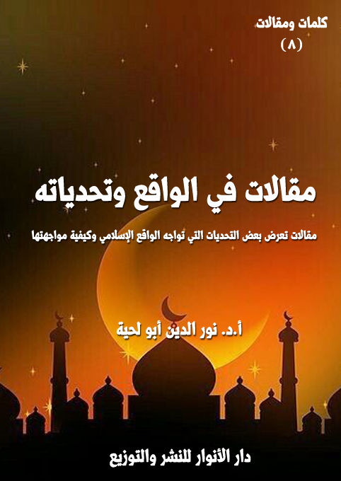

الكتاب: مقالات في الواقع وتحدياته
الوصف: مقالات تعرض بعض التحديات التي تواجه الواقع الإسلامي وكيفية مواجهتها
السلسلة: كلمات ومقالات
المؤلف: أ. د. نور الدين أبو لحية
الناشر: دار الأنوار للنشر والتوزيع
الطبعة: الثانية، 1443 هـ
عدد الصفحات: 263
ISBN: 978-3-330-97412-8
لمطالعة الكتاب من تطبيق مؤلفاتي المجاني وهو أحسن وأيسر: هنا

يتضمن هذا الكتاب ستة مقالات نشرتها في أوقات ومجلات مختلفة، وهي جميعا تدور حول بعض التحديات الكبرى التي تواجه الواقع الإسلامي وكيفية مواجهتها، وهذه ملخصات مختصرة عنها:
1. أسس البناء الفكري للجماعات الإرهابية بين الاتجاهات السلفية والحركية.
2. تحديات الإعلام الجديد وسبل مواجهتها.
3. ظاهرة الالحاد المعاصر بين المسلمين وأسبابها.
4. الإلحاد الجديد والمغالطات العلمية.
5. الثقافة الإسلامية بين الرؤية التقليدية والرؤية الحداثية.
6. الاستعمار التقليدي وجرائمه في حق الشعوب ـ الاستعمار الفرنسي للجزائر نموذجا ـ
مقالات في الواقع وتحدياته (10)
يتضمن هذا الكتاب ستة مقالات نشرتها في أوقات ومجلات مختلفة، وهي جميعا تدور حول بعض التحديات الكبرى التي تواجه الواقع الإسلامي وكيفية مواجهتها، وهذه ملخصات مختصرة عنها:
1. أسس البناء الفكري للجماعات الإرهابية بين الاتجاهات السلفية والحركية: يهدف هذا المقال إلى بيان الأسس التي يقوم عليها البناء الفكري للجماعات الإرهابية، وقد رأينا من خلال استقراء عينات كثيرة من المشايخ الذين يعتبرون مراجع لهؤلاء الإرهابيين، أنه يوجد منبعان كبيران للإرهاب، لكل منهما تصوراته العقدية والسلوكية الخاصة، ولكل منهما فهمه الخاص للإسلام، ولكل منهما الجهة السياسية التي تنتصر له، وتنشر فكره، وتدعمه بكل الوسائل، وهذان المنبعان الكبيران هما:
1. المدرسة السلفية الوهابية: وهي المدرسة المتفرعة من مذهب أهل الحديث قديما، والتي مثلها ونظر لها ابن تيمية، ثم سار على نهجه محمد بن عبد الوهاب.
2. المدرسة الحركية السياسية: أو ما يسمى بالإسلام السياسي، والتي تمثلها في الغالب حركة الإخوان المسلمين، ومن انتهج منهجها من الجماعات والأحزاب.
وقد حاولنا ـ باختصار ـ التعرف على أهم المواد الفكرية التي يصدرها هذا الاتجاهان لبناء الشخصية الفكرية للجماعات الإرهابية، والتي تقوم على ثلاثة أسس كبرى هي:
1. التميز والطائفية
2 ـ التضليل والتكفير
3. العنف والإرهاب
مقالات في الواقع وتحدياته (11)
فالإرهاب يبدأ ـ أولا ـ من اعتبار الشخص أو الجماعة نفسها متميزة عن الآخرين، وأن لها حق الوصاية عليهم، وأنها الطائفة الوحيدة المنصورة الناجية، وأنها وحدها تمثل الإسلام.
ثم يتعدى ذلك إلى الحكم على المخالفين الذين لم ينصاعوا لوصايتها، بأنواع الأحكام المختلفة، والتي تنطلق من التضليل والتبديع وتنتهي بالتكفير.
ثم يتعدى ذلك إلى ممارسة العنف بأنواعه المختلفة على هؤلاء الذين حكم عليهم بالضلال أو البدعة أو الكفر.
2. تحديات الإعلام الجديد وسبل مواجهتها: يهدف هذا المقال إلى بيان الجوانب السلبية التي يتضمنها الإعلام الجديد بوسائله وبرمجياته وتطبيقاته الكثيرة، والمنحصرة ـ حسب الاستقراء ـ في نوعين كبيرين: أحدهما ذو مصدر خارجي، يحاول بشتى الوسائل أن ينحرف بالهوية الإسلامية عبر تشويه الدين وقيمه، والتشكيك فيهما، والثاني ذو مصدر داخلي، تمثله فئة من المسلمين وقعت في أخطاء فكرية وعقدية، فاستعملت هذا النوع من الإعلام وسيلة لنشر التطرف والعنف والإرهاب.
3. ظاهرة الالحاد المعاصر بين المسلمين وأسبابها: يهدف هذا المقال إلى التعرف على السبل التي نواجه بها ظاهرة الإلحاد الجديد، ومن البداهة أنه لا يمكن الجواب عن هذا السؤال إلا بعد معرفة الظاهرة نفسها، وتجلياتها في الواقع، والعوامل التي تمدها وتنشرها وتوفر لها المدد المادي والمعنوي .. ذلك أن المواجهة الحقيقية لأي ظاهرة تستدعي التعرف الدقيق عليها، وعلى أسبابها وعللها، فالتشخيص مقدمة العلاج، وكلما كان التشخيص أدق كان العلاج أكثر نجاعة.
وقد تطرقنا فيها للعناصر التالية:
مقالات في الواقع وتحدياته (12)
1. مظاهر الإلحاد المعاصر بين المسلمين.
2. الأسباب العلمية والفلسفية للإلحاد المعاصر بين المسلمين.
3. الأسباب النفسية والاجتماعية للإلحاد المعاصر بين المسلمين.
4. الإلحاد الجديد والمغالطات العلمية: يهدف هذا المقال إلى إثبات أن كل ما يمارسه الملاحدة من تفسيرات علمية للكون والحياة، وإبعادهما عن الحاجة إلى الله ليس سوى مغالطات كبيرة لا حظ لها من العلم، ولا من المصداقية، بل إن العلم نفسه يتبرأ منها .. فهم يقعون في أول مغالطة حين ينطلقون في أبحاثهم ونظرياتهم من التفكير الرغبوي بدل التفكير الواقعي، ومن الأمنية لا من الواقع، ومن الهوى لا من الحقيقة، ولهذا يستبقون المقدمات بالنتائج، ويؤولون النتائج أو يتخطوها في حال مخالفتها لمقاصدهم ..
ثم تجرهم هذه المغالطة إلى مغالطات كثيرة يؤسسون عليها أبحاثهم التي لا تنطلق من العقلانية والموضوعية والحياد التام، وإنما تنطلق من العاطفة المجردة التي تريد أن تؤكد ما لديها، لا أن تصححه أو تراجعه، وهذه المغالطات كثيرة جدا، وتتناقض تماما مع المناهج العلمية المقررة، بل والمطبقة في كل العلوم، فهم يطبقونها في كل شيء إلا في الحقائق التي قد تدعوهم إلى الإيمان بالله.
وبناء على هذا حاولنا في المقال، من خلال بعض النماذج التي يطرحها الملاحدة، وخصوصا في علوم المادة والحياة، أن نبين بعض الخدع التي يمارسونها في الدعوة للإلحاد، وقد اقتصرنا على نوعين من العلوم باعتبارهما المجال الأكثر اهتماما من الملاحدة؛ فالأول يشمل تلك العلوم التي تفسر نشأة الكون والتصميم البديع الذي بني عليه، والثاني يشمل تلك العلوم التي تفسر الحياة ونشأتها وتنوعها والطاقات المودعة فيها.
مقالات في الواقع وتحدياته (13)
5. الثقافة الإسلامية بين الرؤية التقليدية والرؤية الحداثية: ويهدف إلى التعريف ببعض ملامح وخصائص كل من الرؤية التقليدية والحداثية للثقافة الإسلامية، ومن خلال ذلك حاولنا أن نكتشف البديل الذي نتصور أنه المنطلق الصحيح لبناء ثقافة إسلامية تحتفظ بجمال أصالتها، وفي نفس الوقت تستفيد من كل الجهود التي انطلقت من الأصالة وحاولت أن تبني عليها.
وننبه فقط إلى أننا عند ذكر هذه الملامح لا نقصد التعميم، ففي كل اتجاه من الاتجاهات نجد من يشذ عنه في مسألة من المسائل أو رؤية من الرؤى.
وقد قسمنا المقالة بحسب هذا إلى قسمين:
الأول: حول الرؤية التقليدية وأعلامها وخصائصها.
الثاني: حول الرؤية الحداثية وأعلامها وخصائصها.
6. الاستعمار التقليدي وجرائمه في حق الشعوب ـ الاستعمار الفرنسي للجزائر نموذجا ـ: يهدف هذا المقال إلى بيان الجرائم التي كان يمارسها الاستعمار التقليدي مع الشعوب التي يستعمرها، وقد اختار نموذجا لذلك، وهو الاستعمار الفرنسي للجزائر، باعتباره نموذجا للاستعمار الاستيطاني الذي يشكل أبشع أنواع الاستعمار، وقد عرض المقال نماذج لتلك الجرائم ترتبط بالجانب السياسي والاقتصادي والاجتماعي والثقافي والتربوي والديني.
مقالات في الواقع وتحدياته (14)
أسس البناء الفكري للجماعات الإرهابية بين الاتجاهات السلفية والحركية
من الأخطاء الكبرى التي يقع فيها من يزعم لنفسه أنه يقاوم الإرهاب أو يجفف منابعه اعتباره الإرهاب مجرد عمل عسكري منظم من طرف جماعة أو جماعات من المتعصبين الذين دفعتهم ظروفهم النفسية أو الاجتماعية لممارسة هذا النوع من التطرف في المجتمع.
وأصول الخطأ في هذا التحديد للإرهاب يكمن في أمرين:
الأول: هو اعتباره الإرهاب مجرد عمل عسكري منظم يقوم به مجموعة من المنهزمين نفسيا أو اجتماعيا، وذلك غير صحيح، والواقع لا يدل عليه، فالإرهاب هو منظومة متكاملة تبدأ بالفكر والعقيدة، وتنتهي بتلك الممارسات العسكرية، ولا يمكن استئصال الإرهاب دون استئصال جذوره ومنابعه وأسسه التي يقوم عليها.
الثاني: هو حصره الإرهابيين في الذين حملوا السلاح فقط، بينما يغفل عن الكثير من الذين يحملون فيروس الإرهاب ولو لم تظهر عليهم أعراضه، وفيروس الإرهاب هو تلك الأفكار التي تتجول في المجتمع بحرية، بل تتاح لها كل الوسائل لتقوم بنشر الأفكار الإرهابية، لتخرج لنا كل يوم جماعة إرهابية جديدة، أكثر تطورا، وأشد شراسة.
وبناء على هذا تظهر أهمية البحث عن الأسس الفكرية والعقدية التي يقوم عليها البناء الإرهابي، ذلك أن مقاومة الإرهاب تستدعي البحث عن تلك العقول التي تنشر الإرهاب بخطبها ودروسها وكتبها وحواراتها، والتي تتنقل بحرية بين عواصم العالم لتمد الإرهاب بكل ما يحتاجه من عناصر ومناصرين.
مقالات في الواقع وتحدياته (15)
والبحث عن هذا يجعلنا نرى بوضوح المفارقة العجيبة التي تمارسها الأنظمة العربية والإسلامية والعالمية حين تكتفي فقط باعتبار أشخاص أمثال أسامة بن لادن وأبي بكر البغدادي وأبي محمد المقدسي وأبي قتادة الفلسطيني وغيرهم إرهابيين، بينما تعتبر أشخاصا آخرين قد يكونون أكثر خطرا، وأشد حقدا أمثال القرضاوي والعريفي والحويني والضاري وغيرهم دعاة إلى الله وإلى دين الله، فتيسر لهم ارتقاء جميع المنابر والوصول لجميع الناس لتحريضهم ونشر الفتنة بينهم.
وهذا ما يدل عليه الواقع، فداعش لم تكن لتؤسس لولا ذلك التحريض الشديد الذي كان يقوم به القرضاوي والعريفي والضاري وغيرهم من المشايخ الذين كانوا وما زالوا يحرضون بكل الوسائل والأساليب على تدمير سورية والعراق وليبيا وغيرها من بلاد العالم الإسلامي.
ومن خلال استقراء عينات كثيرة من المشايخ الذين يعتبرون بحق السند الفكري للإرهاب، أو يعتبرون العقل المفكر له، أو الأب الروحي له، رأينا أنه يوجد منبعان كبيران للإرهاب، لكل منهما تصوراته العقدية والسلوكية الخاصة، ولكل منهما فهمه الخاص للإسلام، ولكل منهما هدفه الخاص الذي يرى أنه رسالته التي يجب أن ينهض بها في هذا العالم، ولكل منهما في الأخير الجهة السياسية التي تنتصر له، وتنشر فكره، وتدعمه بكل الوسائل.
وهذان المنبعان الكبيران هما:
1. المدرسة السلفية الوهابية: وهي المدرسة المتفرعة من مذهب أهل الحديث قديما، والتي مثلها ونظر لها ابن تيمية، ثم سار على نهجه محمد بن عبد الوهاب، فدعمها بتأسيس حركته المشهورة، وقد أثرت هذه الحركة في كل الحركات والمدارس سواء نعتت بالسلفية
مقالات في الواقع وتحدياته (16)
أو لم تنعت.
2. المدرسة الحركية السياسية: أو ما يسمى بالإسلام السياسي، والتي تمثلها في الغالب حركة الإخوان المسلمين، ومن انتهج نهجها من الجماعات والأحزاب، مثل جبهة العمل الإسلامي في الأردن، وحركة مجتمع السلم في الجزائر، وحركة النهضة في تونس، وحزب التجمع والإصلاح في اليمن، والإخوان المسلمين في العراق، والإخوان المسلمين في سوريا، وغيرها من الجماعات والأحزاب.
وقد رأينا أنه لا يمكن مواجهة الإرهاب ودحره واستئصاله من حياتنا إلا بعد تجفيف هذه المنابع الفكرية تجفيفا كليا، ومنع نفوذها وانتشارها، وإلا فإن العمليات العسكرية لن تنفع وحدها، فهي تقضي على الأعراض، أو ما خرج من الإرهاب إلى الواقع، أما المصدر الذي يمد الفكر الإرهابي فإنه يظل يصدر أفكاره كل حين، ليخرج لنا في كل يوم جماعة أو جماعات إرهابية جديدة أكثر تطرفا وغلوا.
وقد حاولنا في هذه الدراسة ـ باختصار ـ التعرف على أهم المواد الفكرية التي يصدرها هذا الاتجاهان لبناء الشخصية الفكرية للجماعات الإرهابية، والتي تقوم على ثلاثة أسس كبرى هي:
1. التميز والطائفية
2 ـ التضليل والتكفير
3. العنف والإرهاب
فالإرهاب يبدأ ـ أولا ـ من اعتبار الشخص أو الجماعة نفسها متميزة عن الآخرين، وأن لها حق الوصاية عليهم، وأنها الطائفة الوحيدة المنصورة الناجية، وأنها وحدها تمثل الإسلام.
مقالات في الواقع وتحدياته (17)
ثم يتعدى ذلك إلى الحكم على المخالفين الذين لم ينصاعوا لوصايتها، بأنواع الأحكام المختلفة، والتي تنطلق من التضليل والتبديع وتنتهي بالتكفير.
ثم يتعدى ذلك إلى ممارسة العنف بأنواعه المختلفة على هؤلاء الذين حكم عليهم بالضلال أو البدعة أو الكفر.
فهذه الأسس الثلاثة هي الركائز الكبرى التي يقوم عليها البناء الفكري والعقدي للشخصية الإرهابية، وبقدر المدد الذي تحظى به هذه الأسس، بقدر ما تكون شراسة الإرهابي وعنفه.
وقد حاولنا في هذا البحث أن ندرس المادة الفكرية التي تزود بها هذه الأسس من طرف الاتجاهين الكبيرين العاملين في الواقع الإسلامي: الاتجاه السلفي، والاتجاه الحركي.
وقد قسمنا الدراسة إلى ثلاثة مباحث، تناولنا في كل مبحث منها أساسا من الأسس.
الأساس الأول الذي تبنى عليه الشخصية المعنوية للجماعات الإرهابية هي شعورها بالتميز، والذي يجلعها تتصرف، وكأنها الممثل الوحيد للإسلام، وأنها الفرقة الناجية، وأن من عداها كفرة ومبتدعين ومرتدين، وهذا الشعور هو الذي يولد كل قيم الطائفية، وهو الذي يقف حائلا دون الوحدة الإسلامية، بل يقف حائلا في وجه كل داعية للتقريب بين المسلمين، ويقف حائلا بعد ذلك دون إبراز النزعة الإنسانية للإسلام، باعتباره رحمة للعالمين، لأن الاستعلاء الذي يحمله هذا الفكر يحول بينه وبين التواصل مع الآخر، مهما كان ذلك الآخر.
ومع أن لهذا الأساس أسبابا نفسية كثيرة إلا أن الفكر الذي تغذى به هذه الأسباب يساهم بشكل كبير في ترسيخ المرض وتعميقه، وقد رأينا أن من أهم المواد الفكرية التي
مقالات في الواقع وتحدياته (18)
تغذي هذه العقد النفسية تلك المواد التي تفرزها كل حين التنظيمات والجماعات السلفية والحركية باستعمال جميع الوسائل المتاحة لها.
وسنحاول هنا ـ باختصار ـ أن نبين دور كلا هذين الاتجاهين في ترسيخ هذا الأساس، وإمداد الجماعات الإرهابية به.
تنطلق الاتجاهات السلفية ـ من أول ما ظهرت ـ من محاولة التميز عن سائر المسلمين، واعتبار نفسها صاحبة الحق المطلق، وأنها الفرقة الناجية، وأن من عداها ضال ومبتدع ومنحرف عن الطريق المستقيم.
وليت الأمر وقف عند هذا الحد، فلا حرج على أي جماعة أن تعتقد في نفسها الصواب، وتعتقد في غيرها الخطأ، ولكن الذي يفرق السلفيين عن غيرهم في هذا، هو تميزهم وطائفيتهم، فشعارهم ـ كما يذكر ابن بطة (المتوفى: 387 هـ) ـ (من لم يكن معنا فهو علينا) (1)
ولهذا فإن هذا الاتجاه وضع منظومة محددة اعتبر كل من خرج عليها مبتدعا ضالا أو كافرا مرتدا، أو كما عبر عن ذلك أبو محمد الحسن البربهاري (المتوفى: 329 هـ)، وهو من كبار المؤسسين لهذا الاتجاه، حيث ألف رسالة في (شرح السنة)، قال في خاتمتها: (فمن أقر بما في هذا الكتاب وآمن به واتخذه إماما، ولم يشك في حرف منه، ولم يجحد حرفا واحدا، فهو صاحب سنة وجماعة، كامل، قد كملت فيه السنة، ومن جحد حرفا مما في هذا الكتاب، أو شك في حرف منه أو شك فيه أو وقف فهو صاحب هوى. ومن جحد أو شك في حرف
__________
(1) الإبانة الكبرى، أبو عبد الله عبيد الله بن محمد العُكْبَري المعروف بابن بَطَّة العكبري، تحقيق: رضا معطي، وحمد التويجري، وغيرهما، دار الراية للنشر والتوزيع، الرياض، ج 2، ص 474.
مقالات في الواقع وتحدياته (19)
من القرآن، أو في شيء جاء عن رسول الله صلى الله عليه وآله وسلم، لقي الله تعالى مكذبا، فاتق الله واحذر وتعاهد إيمانك) (1)
وقال في موضع آخر من الكتاب: (وجميع ما وصفت لك في هذا الكتاب، فهو عن الله، وعن رسول الله صلى الله عليه وآله وسلم، وعن أصحابه وعن التابعين، والقرن الثالث إلى القرن الرابع، فاتق الله يا عبد الله، وعليك بالتصديق والتسليم والتفويض والرضى لما في هذا الكتاب، ولا تكتم هذا الكتاب أحدا من أهل القبلة، فعسى يرد الله به حيرانا عن حيرته، أو صاحب بدعة من بدعته، أو ضالا عن ضلالته، فينجو به .. فاتق الله، وعليك بالأمر الأول العتيق، وهو ما وصفت لك في هذا الكتاب، فرحم الله عبدا، ورحم والديه قرأ هذا الكتاب، وبثه وعمل به ودعا إليه، واحتج به، فإنه دين الله ودين رسول الله صلى الله عليه وآله وسلم، فإنه من انتحل شيئا خلاف ما في هذا الكتاب، فإنه ليس يدين لله بدين، وقد رده كله، كما لو أن عبدا آمن بجميع ما قال الله تبارك وتعالى، إلا أنه شك في حرف فقد رد جميع ما قال الله تعالى، وهو كافر، كما أن شهادة أن لا إله إلا الله لا تقبل من صاحبها إلا بصدق النية وخالص اليقين، كذلك لا يقبل الله شيئا) (2)
وقد روى أبو القاسم هبة الله بن الحسن اللالكائي (المتوفى: 418 هـ) في كتابه (شرح أصول اعتقاد أهل السنة والجماعة) بعض الأطر التي وضعها سلفهم لتحمي هذا الاتجاه، والتي على أساسها يحكمون على من يشاءون بكونه من السنة، أو بكونه من أهل البدعة، فقد روى عن سمعت شعيب بن حرب قال: (قلت) لأبي عبد الله سفيان بن سعيد الثوري: حدثني بحديث من السنة ينفعني الله عز وجل به، فإذا وقفت بين يدي الله تبارك وتعالى
__________
(1) شرح السنة، أبو محمد الحسن بن علي بن خلف البربهاري، المحقق: عبد الرحمن بن أحمد الجميزي، دار المنهاج، 1426 ه، ـ ص 132.
(2) المرجع السابق، ص 103.
مقالات في الواقع وتحدياته (20)
وسألني عنه. فقال لي: (من أين أخذت هذا؟) قلت: (يا رب حدثني بهذا الحديث سفيان الثوري، وأخذته عنه فأنجو أنا وتؤاخذ أنت). فقال: يا شعيب هذا توكيد وأي توكيد، اكتب: بسم الله الرحمن الرحيم القرآن كلام الله غير مخلوق، منه بدأ وإليه يعود، من قال غير هذا فهو كافر، والإيمان قول وعمل ونية، يزيد وينقص، يزيد بالطاعة وينقص بالمعصية، ولا يجوز القول إلا بالعمل، ولا يجوز القول والعمل إلا بالنية، ولا يجوز القول والعمل والنية إلا بموافقة السنة. قال شعيب: فقلت له: يا أبا عبد الله وما موافقة السنة؟ قال: تقدمة الشيخين أبي بكر وعمر، يا شعيب لا ينفعك ما كتبت حتى تقدم عثمان وعليا على من بعدهما، يا شعيب بن حرب لا ينفعك ما كتبت لك حتى لا تشهد لأحد بجنة ولا نار إلا للعشرة الذين شهد لهم رسول الله وكلهم من قريش، يا شعيب بن حرب لا ينفعك ما كتبت لك حتى ترى المسح على الخفين دون خلعهما أعدل عندك من غسل قدميك، يا شعيب بن حرب ولا ينفعك ما كتبت حتى يكون إخفاء بسم الله الرحمن الرحيم في الصلاة أفضل عندك من أن تجهر بهما .. يا شعيب لا ينفعك ما كتبت حتى ترى الصلاة خلف كل بر وفاجر، والجهاد ماضيا إلى يوم القيامة، والصبر تحت لواء السلطان جار أم عدل. قال شعيب: فقلت لسفيان: يا أبا عبد الله: (الصلاة كلها؟) قال: لا، ولكن صلاة الجمعة والعيدين، صل خلف من أدركت، وأما سائر ذلك فأنت مخير، لا تصل إلا خلف من تثق به، وتعلم أنه من أهل السنة والجماعة، يا شعيب بن حرب إذا وقفت بين يدي الله عز وجل فسألك عن هذا الحديث فقل: يا رب حدثني بهذا الحديث سفيان بن سعيد الثوري ثم خل بيني وبين ربي عز وجل) (1)
__________
(1) شرح أصول اعتقاد أهل السنة والجماعة، أبو القاسم هبة الله بن الحسن بن منصور الطبري الرازي اللالكائي، تحقيق: أحمد بن سعد بن حمدان الغامدي، دار طيبة ـ السعودية، الطبعة: الثامنة، 1423 هـ / 2003 م، ج 1، ص 170.
مقالات في الواقع وتحدياته (21)
وروى عن سفيان بن عيينة قوله: (السنة عشرة، فمن كن فيه فقد استكمل السنة، ومن ترك منها شيئا فقد ترك السنة: إثبات القدر، وتقديم أبي بكر وعمر، والحوض، والشفاعة، والميزان، والصراط، والإيمان قول وعمل، والقرآن كلام الله، وعذاب القبر، والبعث يوم القيامة، ولا تقطعوا بالشهادة على مسلم) (1)
وهكذا نلاحظ في كل الكتابات السلفية سواء من المتقدمين أو المتأخرين، فهم يرون أنهم في الأصول والفروع من أصحاب الحق المطلق، ومن خالفهم فهو ضال مبتدع، أو كافر مرتد، ويبنون على هذا بعد ذلك ما سنراه من أحكام.
وبناء على هذا الشعور بالتميز عن سائر المسلمين، يرون أنفسهم غرباء في الواقع الإسلامي، وهم يمدحون هذه الغربة، ويشعرون بأنهم من خلالها هم المجتبون المصطفون الذين اختارهم الله لحفظ دينه، ولهذا نجدهم في كتبهم ورسائلهم وخطبهم يرددون مصطلح الغربة كثيرا، وينقلون عن سلفهم في ذلك الكثير من المرويات التي تزيد من شعورهم بالتميز والطائفية.
ومن أمثلة ذلك ما نقله ابن رجب (المتوفى: 795 هـ) في كتابه (كشف الكربة في وصف أهل الغربة) تحت عنوان: (الإسلام لا يذهب، ولكن يذهب أهل السنة) (2) من روايات قدم لها بقوله: و (لهذا المعنى يوجد في كلام السلف كثيرا مدح السنة ووصفها بالغربة ووصف أهلها بالقلة) (3)
ومن تلك الروايات قول الأوزاعي: (أما إنه ما يذهب الإسلام ولكن يذهب أهل
__________
(1) المرجع السابق، ج 1، ص 175.
(2) كشف الكربة في وصف أهل الغربة (وهو مطبوع ضمن مجموع رسائل الحافظ ابن رجب الحنبلي)، زين الدين عبد الرحمن بن أحمد بن رجب البغدادي، ثم الدمشقي، الحنبلي، دراسة وتحقيق: أبي مصعب طلعت بن فؤاد الحلواني، الفاروق الحديثة للطباعة والنشر، الطبعة: الثانية، 1424 هـ ـ 2003 م، ص 319.
(3) المرجع السابق، ص 319.
مقالات في الواقع وتحدياته (22)
السنة حتى ما يبقى في البلد منهم إلا رجل واحد)، وقول الحسن لأصحابه: (يا أهل السنة! ترفقوا ـ رحمكم الله ـ فإنكم من أقل الناس)، وقول يونس بن عبيد: (ليس شيء أغرب من السنة وأغرب منها من يعرفها)، وقول سفيان الثوري: (استوصوا بأهل السنة فإنهم غرباء)
ثم عقب على هذه الروايات بقوله: (صار في عرف كثير من العلماء المتأخرين من أهل الحديث وغيرهم السنة عبارة عما سَلِمَ من الشبهات في الاعتقادات خاصة في مسائل الإيمان بالله وملائكته وكتبه ورسله واليوم الآخر، وكذلك في مسائل القدر وفضائل الصحابة، وصنفوا في هذا العلم باسم السنة لأن خطره عظيم والمخالف فيه على شفا هلكة) (1)
وهم لهذا، يذكرون ما ورد في النصوص المقدسة من مدح القلة، ويرون أنها خاصة بهم، ويروون عن يوسف بن أسباط قوله: (أهل السنة أقل من الكبريت الأحمر)، ويقول ابن تيمية (المتوفى: 728 هـ): (ان الله لم يكن ليجمع هذه الأمة على ضلالة، وإنه لا يزال فيها طائفة ظاهرين على الحق لا يضرهم من خالفهم ولا من خذلهم، ولا يزال الله يغرس في هذا الدين غرسا يستعملهم فيه بطاعة الله) (2)
ويضيفون إلى هذا اعتبار أنفسهم الأمة الوسطية المذكورة في قوله تعالى: {وَكَذَلِكَ جَعَلْنَاكُمْ أُمَّةً وَسَطًا لِتَكُونُوا شُهَدَاءَ عَلَى النَّاسِ وَيَكُونَ الرَّسُولُ عَلَيْكُمْ شَهِيدًا} [البقرة: 143]
وقد وضح ابن تيمية الكثير من مظان هذه الوسطية، وانطباقها على الاتجاه السلفي وحده دون سائر المسلمين، وهي في أكثرها قضايا فرعية خلافية يخالفهم فيها أكثر المسلمين،
__________
(1) المرجع السابق، ص 320 ..
(2) منهاج السنة النبوية في نقض كلام الشيعة القدرية، تقي الدين أبو العباس أحمد بن عبد الحليم بن عبد السلام ابن تيمية، المحقق: محمد رشاد سالم، جامعة الإمام محمد بن سعود الإسلامية، الطبعة: الأولى، 1406 هـ ـ 1986 م، (8/ 350)
مقالات في الواقع وتحدياته (23)
منها (فهم (أي أهل السنة) (1) في باب أسماء الله وآياته وصفاته وسط بين أهل التعطيل الذين يلحدون في أسماء الله وآياته، ويعطلون حقائق ما نعت الله به نفسه حتى يشبهوه بالعدم والموات، وبين أهل التمثيل الذين يضربون له الأمثال، ويشبهونه بالمخلوقات، فيؤمن أهل السنة والجماعة بما وصف الله به نفسه، وما وصفه به رسوله من غير تحريف ولا تعطيل، ومن غير تكييف وتمثيل) (2)
وابن تيمية يقصد بهذا عقيدة التجسيم التي يتبناها الاتجاه السلفي، والتي يعتبر خلافها كفرا وبدعة وتعطيلا لصفات الله، فلهذا يعتبرون من أول اليد أو العين ولم ير أن المقصود ظاهرها منحرف عن العقيدة الصحيحة، بل كافر حلال الدم كما سنرى.
وهكذا نجدهم وضعوا سياجا من الضوابط يحمي حماهم، وكل من عداه مبتدع ضال، إن نجا من بدعة، فسيقع لا محالة في بدعة أخرى يكفر على أساسها.
ولهذا قد ينجو الحنفي مثلا بسبب مواقفهم من الصحابة التي أعطوها بعدا دينيا عقديا، ولكنه سيقع من خلال موقفه من القرآن الكريم، وهل هو مخلوق أم لا، يقول أبو الحسين بن أبي يعلى، محمد بن محمد (المتوفى: 526 هـ) ناقلا إجماع الاتجاه السلفي على هذا: (أجمع من أدركنا من أهل العلم أن الجهمية افترقت ثلاث فرق فقالت طائفة منهم القرآن كلام اللَّه مخلوق، وقالت طائفة القرآن كلام اللَّه وسكتت وهي الواقفة الملعونة، وقال بعضهم: ألفاظنا بالقرآن مخلوقة فكل هؤلاء جهمية كفار يستتابون، فإن تابوا، وإلا قتلوا وأجمع من أدركنا من أهل العلم أن من هذه مقالته إن لم يتب لم يناكح ولا يجوز قضاؤه ولا
__________
(1) مصطلح أهل السنة عند أصحاب الاتجاه السلفي قاصر عليهم وحدهم دون غيرهم من الأشاعرة والماتريدية، كما سنرى.
(2) مجموع الفتاوى، تقي الدين أبو العباس أحمد بن عبد الحليم بن تيمية الحراني، المحقق: عبد الرحمن بن محمد بن قاسم، مجمع الملك فهد لطباعة المصحف الشريف، المدينة النبوية، المملكة العربية السعودية، 1416 هـ/1995 م، (3/ 373)
مقالات في الواقع وتحدياته (24)
تؤكل ذبيحته) (1)
ومعلوم أن تطبيق هذه المقولة وحدها على الأمة كاف وحده لإخراجها من الملة، فلا أحد من الأمة ـ غير أصحاب الاتجاه السلفي ـ إلا وهو يقول بأن ألفاظنا بالقرآن مخلوقة.
وقد ورث الوهابية عن سلفهم هذا الشعور بالتميز والطائفية، فلذلك لا يمكن اعتبار الوهابية شيئا حادثا، بل هي مظهر من مظاهر السلفية القديمة، أو هي مجرد مرحلة من مراحلها، وقد وصف أمين الريحاني ذلك التميز الذي يشعر به الوهابية، فذكر أنهم (يعتقدون ان من كان خارجاً عن مذهبهم ليس بمسلم فيشيرون الى ذلك في سلامهم بعضهم على البعض: (السلام عليكم يا الإخوان حيا الله المسلمين).واذا سلم عليهم سني او شيعي فلا يردون السلام) (2)
ورسائل محمد بن عبد الوهاب وأتباعه ممتلئة بمثل ما كتبه ابن بطة والبربهاري وابن تيمية وغيرهم من ذلك الاستعلاء السلفي الذي يسمونه عزة، ولهذا نجد عندهم كل ما نجده عند أسلافهم من العجب والغرور والكبرياء.
فهم يعتبرون أنفسهم القلة المؤمنة السنية في وسط الكثرة المشركة المبتدعة، وقد دافع ابن عبد الوهاب كسلفه على أن الحق محصور في قلة قليلة، فقال رسالة له الى الشيخ عبد الله بن محمد بن عبد اللطيف: (إن رسول الله وأصحابه .. أخبروا انه لا يصبر على الدين الا الواحد بعد الواحد، وان الاسلام يصير غريبا كما بدأ .. فاذا كان الاسلام يعود كما بدأ، فما أجهل من استدل بكثرة الناس وإطباقهم .. فلتكن قصة إسلام سلمان الفارسي منكم على بال، ففيها: إنه لم يكن على دين الرسل الا الواحد بعد الواحد، حتى أن آخرهم قال عند
__________
(1) طبقات الحنابلة، أبو الحسين ابن أبي يعلى، محمد بن محمد، المحقق: محمد حامد الفقي، دار المعرفة ـ بيروت، (1/ 343)
(2) نقلا عن: معجزة فوق الرمال، أحمد عسه، المطابع الأهلية اللبنانية ـ بيروت، 1975 م، ص 64.
مقالات في الواقع وتحدياته (25)
موته: لا أعلم على وجه الأرض أحدا على ما نحن عليه، ولكن قد أطل زمان نبي. واذكر مع هذا قول الله تعالى: (فلولا كان من القرون من قبلكم أولوا بقية ينهون عن الفساد في الأرض الا قليلا ممن أنجينا منهم) (1)
وكتب محمد بن عبد الوهاب الى شيخ أهل (رغبة) أحمد بن يحيى، قائلا: (من عبد الله ليلاً ونهاراً، ثم دعا نبيا أو وليا عند قبره كما يفعل المشركون اليوم عند قبر الزبير، أو عبد القادر، أو غيرهما، وكما يفعل قبل هذا عند قبر زيد وغيره، ومن ذبح لله ألف أضحية، ثم ذبح لنبي أو غيره، فقد جعل إلهين اثنين .. وعلى هذا فقس، فمن أخلص العبادات كلها لله، ولم يشرك فيها غيره، فهو الذي شهد أن لا إله إلا الله، ومن جعل فيها مع الله غيره، فهو المشرك الجاحد لقوله لا إله إلا الله؛ وهذا الشرك قد طبق اليوم مشارق الأرض ومغاربها، الا الغرباء المذكورين في الحديث وقليل ما هم؛ وهذه المسألة لا خلاف فيها بين أهل العلم، من كل المذاهب) (2)
وهم يبالغون في تزكية أنفسهم وأتباعهم باعتبارهم هم الوحيدون الذين فهموا عقائد الإسلام، يقول الشيخ عبد اللطيف بن عبد الرحمن بن حسن متحدثا على جده محمد بن عبد الوهاب: (ولهذا المجدد علامة يعرفها المتوسمون، وينكرها المبطلون، أوضحها وأجلاها وأصدقها وأولاها، محبة الرعيل الأول من هذه الأمة، والعلم بما كانوا عليه من أصول الدين، وقواعده المهمة التي أصلها الأصيل وأسها الأكبر الجليل معرفة الله بصفات كماله، ونعوت جلاله، وأن يوصف الله بما وصف به نفسه ووصفه به رسوله صلى الله عليه وآله وسلم من غير
__________
(1) الدرر السنية في الأجوبة النجدية، علماء نجد الأعلام، المحقق: عبد الرحمن بن محمد بن قاسم، الطبعة: السادسة، 1417 هـ/1996 م، (1/ 41) مع تصرف يسير.
(2) المرجع السابق، ج 10، ص 62.
مقالات في الواقع وتحدياته (26)
زيادة ولا تحريف ومن غير تكييف ولا تمثيل) (1)
وهذا نفسه ما زعموه لابن تيمية أو للسلف الذين اعتبروهم الناطقين باسم الإسلام، وقد ذكر ابن ناصر الدين الدمشقي (ت 842 هـ) في كتابه (الرد الوافر على من زعم بأن من سمى ابن تيمة شيخ الاسلام كافر) هذه المنقبة لابن تيمية، والتي رواها ابن حجي عن البطائحي المزي قال: كنت شابا وكانت لي بنت حصل لها رمد، وكان لنا اعتقاد في ابن تيمية، وكان صاحب والدي، ويأتي إلينا ويزور والدي، فقلت في نفسي: لآخذن من تراب قبر ابن تيمية فلأكحلها به، فانه طال رمدها ولم يفد فيها الكحل، فجئت الى القبر فوجدت بغداديا قد جمع من التراب صررا، فقلت: ما تصنع بهذا؟ قال: أخذته لوجع الرمد أكحل به أولادا لي فقلت: وهل ينفع ذلك؟ فقال: نعم، وذكر أنه جربه، فازددت يقينا فيما كنت قصدته، فأخذت منه فكحلتها، وهي نائمة، فبرأت) (2)
وهم يقبلون هذا، ولا ينكرون عليه (3) في نفس الوقت الذي ينكرون فيه بشدة، بل يكفرون من يعظم تراب الحسين ع ويستشفي به،
من باب الموضوعية العلمية، لا يمكن وضع الشخصيات الممثلة أو المنتمية أو المحترمة لدى الاتجاهات الحركية في محل واحد، ذلك أن هذه الحركات تضم بعضا من المثقفين من أصحاب النيات الطيبة، والذين صدقوا في التزامهم بالإسلام، وأحبوا أن
__________
(1) المرجع السابق، ج 14، ص 194.
(2) الرد الوافر على من زعم بأن من سمى ابن تيمة شيخ الاسلام كافر، محمد بن عبد الله (أبي بكر) القيسي الدمشقي الشافعي، شمس الدين، الشهير بابن ناصر الدين، المحقق: زهير الشاويش، المكتب الإسلامي ـ بيروت، الطبعة: الأولى، 1393، ص 74.
(3) وقد ذكر ابن ناصر الدين في (الرد الوافر، ص 75) تعقيبا على تلك القصة، قال فيه: (وحكيت ذلك لابن قاضي الجبل يعني الامام شرف الدين أبا العباس أحمد ابن الحسن بن عبد الله بن شيخ الاسلام أبي عمر المقدسي قال وكان يأتي الينا فأعجبه ذلك وكان يسألني ذلك بحضرة الناس فأحكيه ويعجبه ذلك)
مقالات في الواقع وتحدياته (27)
يمارسوا أي خدمة تنتصر له، فلم يجدوا إلا هذه الحركات بما تملكه من وسائل وجماهير.
ولذلك يمكن تصنيف المواقف الفكرية لدى هذه الاتجاهات بالنسبة لهذه النقطة خصوصا إلى قسمين:
ونريد بهم بعض الشخصيات الفكرية الإسلامية التي تدعو إلى الانفتاح على الآخر، وتدافع عن الإسلام، وتدعو إلى الإسلام بعيدا عن الطائفية، وهي ـ للأسف ـ فئة محدودة جدا في هذه الحركات، وهي في الغالب مهمشة، ولا يتاح لها أن تصل إلى مراكز حساسة، وإذا ما وصلت حيل بينها وبين تنفيذ مشروعها الوحدوي.
ومن الأمثلة على ذلك الشيخ محمد الغزالي، والذي يعتبره الكثير من الإخوان المسلمين واحدا منهم، فهو في هذا الأمر خصوصا كان من المدافعين عن الوحدة الإسلامية، وشن من خلال كتبه ومحاضراته حملة شديدة على الطائفيين، ومن الأمثلة على هذا موقفه من فتوى الشيخ محمود شلتوت شيخ الجامع الأزهر المشهورة، والتي نص فيها على أن (مذهب الجعفرية المعروف بمذهب الشيعة الإمامية الإثني عشرية، مذهب يجوز التعبد به شرعاً كسائر المذاهب، فينبغي للمسلمين ان يعرفوا ذلك وان يتخلصوا من العصبية بغير الحق لمذاهب معينة) (1)، فقد علق الشيخ محمد الغزالي على هذه الفتوى بقوله: (واعتقد ان فتوى الأستاذ الأكبر الشيخ محمود شلتوت، قطعت شوطاً واسعاً في هذا السبيل، واستئناف لجهد المخلصين من أهل السلطة وأهل العلم جميعاً، وتكذيب لما يتوقعه المستشرقون، من
__________
(1) وقد صرّح مفتي مصر السابق الشيخ علي جمعة ـكما ورد في شبكة إشارة الأخبارية، بتأريخ 5/ 2/2009 م ـ بنفس الفتوى قائلاً: (يجوز التعبّد بالمذاهب الشيعيّة ولا حرج، وقد أفتى بهذا شيخ الأزهر الراحل محمود شلتوت، فالأمّة الإسلامية جسد واحد، لا فرق فيه بين سنّي وشيعي، طالما أنّ الجميع يصلّي صلاة واحدة ويتّجه لقبلة واحدة، وأنّ الشيعة كانوا دائما جزء لا يتجزأ من الأمة الإسلامّية)
مقالات في الواقع وتحدياته (28)
أن الأحقاد سوف تأكل الأمة، قبل ان تلتقي صفوفها تحت راية واحدة ... وهذه الفتوى في نظري، بداية الطريق وأول العمل) (1)
وقال: (إنَّ الشيعة يؤمنون برسالة محمد صلى الله عليه وآله وسلم، ويرون شرف علي في انتمائه الى هذا الرسول، وفي استمساكه بسنته، وهم كسائر المسلمين، لا يرون بشراً في الأولين ولا في الآخرين أعظم من الصادق الأمين، ولا أحق منه بالاتباع، فكيف ينسب لهم هذا الهذر؟ الواقع أن الذين يرغبون فى تقسيم الأمة طوائف متعادية لما لم يجدوا لهذا التقسيم سببا معقولا لجأوا إلى افتعال أسباب الفرقة، فاتسع لهم ميدان الكذب حين ضاق ميدان الصدق، لست أنفى أن هناك خلافات فقهية ونظرية بين الشيعة والسنة، بعضها قريب الغور وبعضها بعيد الغور، بيد أن هذه الخلافات لا تستلزم معشار الجفاء الذى وقع بين الفريقين، وقد نشب خلاف فقهي ونظري بين مذاهب السنة نفسها بل بين أتباع المذهب الواحد منها، ومع ذلك فقد حال العقلاء دون تحول هذا الخلاف إلى خصام بارد أو ساخن) (2)
ويقول في موضع آخر داعيا إلى ما دعا إليه الشيخ شلتوت من إتاحة الحرية الدينية بين المسلمين ليختار كل مسلما ما يراه مرضيا له عند ربه: (إن السلف والخلف وأهل السنة والشيعة والمتصوفة والمتفلسفة كلهم يرى أنه يخدم الإسلام ويناصر نبيه صلى الله عليه وآله وسلم، ويرفع رايته، ومن الصعب إقناع الحرفيين من أهل النص بأن مذهب العقليين أولى بالحق وكذلك العكس، ومن الصعب إقناع العاطفيين من أصحاب القلوب أن مذهب أهل الفقه أدق وأجدر بالاستمساك، وكذلك العكس، ومن الصعب إقناع الشيعة الذائبين فى محبة آل البيت أن النظام الجمهورى فى اختيار الإمام وعزله أولى من الالتفاف حول قريب للرسول
__________
(1) دفاع عن العقيدة والشريعة ضد مطاعن المستشرقين، محمد الغزالي، دار نهضة مصر، الطبعة: الأولى، ص 257.
(2) المرجع السابق، ص 221.
مقالات في الواقع وتحدياته (29)
صلى الله عليه وآله وسلم تضفى عليه العصمة، وكذلك العكس، ونحن نرفض فى التعليق على مذاهب أولئك جميعا قول الشاعر: وكل يدعى وصلا لليلى وليلى لا تقر لهم بذاكا كما نرفض اعتبار الحق سائلا يتلون مع كل إناء، وأنه ليست له حدود قائمة عرفها من عرفها وجهلها من جهلها) (1)
وصرح في موقف آخر تصريحا لا يقل عن تصريح محمود شلتوت، فقال: (ولقد رأيت أن أقوم بعمل إيجابي حاسم سدا لهذه الفجوة التي صنعتها الأوهام، فرأيت أن تتولى وزارة الأوقاف ضم المذهب الفقهي للشيعة الإمامية إلى فقه المذاهب الأربعة، وستتولى إدارة الثقافة تقديم أبواب العبادات والمعاملات فى هذا الفقه الإسلامي لمجتهدين من إخواننا الشيعة، وسيرى أولو الألباب عند مطالعة هذه الجهود العلمية أن الشبه قريب بين ما ألفنا من قراءات فقهية، وبين ما باعدتنا عنه الأحداث السيئة) (2)
وتظهر قيمة موقف الشيخ محمد الغزالي إذا ما قارناه بموقف يوسف القرضاوي في نفس المسألة حيث نجده يستعمل كل الوسائل لينكر هذه الفتوى مع تحققها وثبوتها (3).
ونريد بهم أكثر الحركيين الموجودين في الساحة الإسلامية سواء كانوا من الإخوان المسلمين أو غيرهم، وذلك نتيجة تأثرهم الشديد بالوهابية، ونتيجة تبني السعودية للكثير منهم إبان المحن التي مروا بها.
والأمثلة على ذلك أكثر من أن تعد أو تحصى، لأن الواقع الحركي الآن واقع وهابي
__________
(1) المرجع السابق، ص 173.
(2) كيف نفهم الإسلام، محمد الغزالي، دار نهضة مصر، الطبعة الأولى، ص 118.
(3) انظر لقاء جرى بينه وبين بعض الشباب في دورة (علماء المستقبل) التي ينظمها (اتحاد العلماء في القاهرة)، كما هو منشور في موقعه بتاريخ 9/ 4/ 2009 م ..
مقالات في الواقع وتحدياته (30)
سلفي ذو ميول علمانية، ومجرد متابعة للحوارات التي يجريها قادة هذه الحركات ترينا بوضوح مدى تغلغل الفكري السلفي الوهابي الطائفي فيهم.
وكمثال على ذلك سعيد حوى ـ والذي تولى أرفع المناصب في حركة الإخوان المسلمين السورية ـ والذي تعامل مع الثورة الإسلامية في إيران بنظرة طائفية، وكتب كتابه المعروف (الخميني: شذوذ في العقائد، شذوذ في المواقف)، والذي يتخذه الإرهابيون من مراجعهم التي يستندون إليها في حرب الشيعة في كل مكان.
وهو لم يكتف بالخميني فقط، وإنما عمم أحكامه على كل الشيعة واعتبرهم خطرا على الإسلام، يقول في ذلك: (جاءت الخمينية المارقة تحذو حذو اسلافها من حركات الغلو والزندقة التي جمعت بين الشعوبية في الرأي والفساد في العقيدة، تتاجر بمشاهير جماهير المثقفين المتعلقين بالإسلام تاريخاً وعقيدة وتراثاً، فتتظاهر بالإسلام قولاً وتبطن جملة الشذوذ العقدي والحركي الذي كان سمة مشتركة وتراثاً جامعاً للهالكين من أسلافها من الأبامسلمية والبابكية والصفوية، فيعيدوا إلى واقع المسلمين كل نزعات الشر والدمار التي جسدتها تلك الحركات المشبوهة الساقطة في شرك الكفر والزندقة والعصيان، وتعيد إلى الأذهان كل مخططات البرامج الباطنية القائمة على التدليس والتلبيس، فتدعي نصرة الإسلام وهي حرب عليه ـ عقيدة ومنهجاً وسلوكاً ـ وتتظاهر بالغيرة على وحدة الصف الإسلامي وهي تدق صباح مساء إسفيناً بعد إسفين في أركان الأمة الواحدة، متوسلة إلى ذلك بنظرة مذهبية شاذة، وتزعم نصرة المستضعفين في الأرض وهي تجند الأطفال والصغار وتدفعهم قسراً وإلجاءً إلى محرقة الموت الزؤام، ثم هي لا تكتفي بكل هذا الشر الأسود بل تقيم فلسفتها جملة وتفصيلاً على قراءة منحرفة قوامها التلفيق والتدليس لكل تاريخ المسلمين، فتأتي على رموزه وأكابر مؤسسيه هدماً وتشويهاً وتمويهاً، وتجدد الدعوة
مقالات في الواقع وتحدياته (31)
بإصرار إلى كل الصفحات السلبية السوداء الماضية في التاريخ، والتي ظن المخلصون أنها بادت فليس من مصلحة المسلمين ولا في صالح الإسلام إعادة قراءتها من جديد، فلقد قاسى الجميع من شرها ما لا يحصره كتاب) (1)
والمثال الأبرز المعاصر هو يوسف القرضاوي، والمؤسسة الضخمة التي أسسها (اتحاد علماء المسلمين)، والتي سخرت لها أموال ضخمة، لتنشر الطائفية بين المسلمين، وقد نشر الكثير من البيانات الطائفية مستغلا جميع وسائل الإعلام لذلك، ومستغلا كذلك تلك الجماهيرية التي أتيحت له في الأوساط السنية، ولهذا ـ للأسف ـ نسي الناس كلام محمد الغزالي وغيره من التقريبيين وطغى الفكر الطائفي في هذه الحركات.
وكمثال على ذلك، أن هذا الشيخ استغل موسم الحج في أكتوبر 2012 فراح في خطبة له يطلب من المسلمين الدعاء على إيران باعتبارها من أعداء الأمَة، ولحيلولتها دون التدخل العسكري الخارجي في سورية، أو التدخل التكفيري الإرهابي فيها.
من أهم الخصائص التي تقوم عليها الشخصية التكفيرية: إلغاء الآخر، وعدم اعتباره، وقطع كل صلة معه، وهم يستعملون لهذا الإلغاء اصطلاحات مختلفة كلها تصب في محل واحد هو التكفير والتبديع، ثم الحكم الأخروي على هذا الآخر بكونه من أهل جهنم، والحكم الدنيوي عليه باستباحة دمه وماله وعرضه وكل ما يملك.
وهذه الخصيصة أو الأساس الذي تقوم عليه شخصية الإرهابي مظهر من مظاهر الأساس السابق، وثمرة خبيثة من ثماره، ذلك أن الذي يريد أن يتميز، ويشار إليه بالبنان،
__________
(1) الخميني: شذوذ في العقائد، شذوذ في المواقف، سعيد حوى، دار عمار للنشر والتوزيع، عَمّان، الطبعة الأولى، 1407 هـ ـ 1987 م، ص 5.
مقالات في الواقع وتحدياته (32)
ويتصور أنه المصطفى المختار، يجد في طريقه الكثير ممن ينافسونه على هذه المراتب، فلذلك لا يجد سلاحا يلبي رغبته مثل سلاح الإلغاء والتكفير والتبديع، لأنه بذلك يضمن شفاء غليله في الدنيا بالانتقام والحقد، ويضمن شفاء غليله ـ كما يتوهم ـ في الآخرة، بأن يذهب هذا الذي يحقد عليه إلى جهنم، بينما يذهب هو إلى الجنة.
وقد رأينا من خلال دراسة كثير من الكتب والرسائل التي ألفها هؤلاء الإرهابيون أنهم يعتمدون في هذه الأحكام، وما يترتب عليها على كلا الاتجاهين: السلفي والحركي، كما سنوضحه في هذا المحل.
بناء على ما سبق بيانه في المبحث السابق، فإن الاتجاه السلفي أو (أهل الحديث) أو (الوهابية)، هم أكثر الناس غرقا في التكفير ابتداء من القرون الأولى إلى العصر الحالي، ولذلك فإن ظاهرة التكفير ليست بدعة حادثة، بل هي سنة سلفية قديمة.
وهذا الموقف نجده ينطبق على كل أعلام الأمة بمدارسها المختلفة، فالكل عندهم كافر أو مشرك أو زنديق، لأنه لابد أن يقع لا محالة في الشباك التي نصبوها له في كل محل.
وسنعرض هنا باختصار بعض الأمثلة عن تلك الشباك التي نصبها هذا الاتجاه للمخالفين، والتي يسميها (نواقض الإيمان)، والتي يعتبر من وقع فيها كافرا مشركا مرتدا حلال الدم حتى لو أدى جميع شعائر الإسلام، والتزم بكل حدوده.
يعتبر التوحيد بالمفهوم السلفي الوهابي الذي نظر له ابن تيمية، وركز عليه محمد بن عبد الوهاب، وتبنته بعد ذلك كل التنظيمات الإرهابية هو الأداة الكبرى التي حكم بها هذا الاتجاه على أكثر المسلمين بالشرك ومقتضياته.
مقالات في الواقع وتحدياته (33)
فمفهوم الشرك عند هذا الاتجاه يختلف عن مفهومه عند جميع المدارس والفرق الإسلامية، ذلك أنه لا يعني فقط جعل الند مع الله تعالى، وإنما يضيفون إليه الكثير من السلوكات التي يمارسها المسلمون سلفهم وخلفهم بنية تعظيم من أمر الله بتعظيمه من الصالحين والأولياء ونحو ذلك، فيعتبرون تلك السلوكات التعظيمية شركا جليا بالله تعالى.
ولهذا يدخل في الشرك الجلي عندهم التوسل بالأولياء، أو الاستغاثة بهم، أو النذر لهم، أو القسم بهم، أو طلب الشفاعة منهم، أو زيارة أضرحتهم، أو البناء على قبورهم .. وغير ذلك، مما يسمونه (نواقض التوحيد)
فكل من فعل هذا عندهم مشرك، وإن صلى وصام وحج وعمل بكل ما طلبته الشريعة من تكاليف، يقول محمد بن عبد الوهاب في رسالة له في (معنى لا إله إلا الله): (إن الكفار الذين قاتلهم رسول الله صلى الله عليه وآله وسلم كانوا يتصدقون ويحجون ويعتمرون ويتعبدون ويتركون أشياء من المحرمات خوفا من الله عز وجل، ولكنهم لم يشهدوا لله بتوحيد الألوهية، وذلك أن المشركين كانوا يدعون الصالحين مثل الملائكة وعيسى وعزير وغيرهم من الأولياء، فكفروا بهذا مع اقرارهم بأن الله هو الخالق الرازق المدبر، واذا عرفت هذا عرفت معنى (لا اله الا الله)، وعرفت أن من دعا نبيا أو ملكا أو ندبه او استغاث به، فقد خرج من الإسلام) (1)
وهم لأجل هذا يعتبرون جميع المسلمين في جميع البلاد الاسلامية كفارا ومشركين، وقد ورد في (الدرر السنية) الذي يعتبر المصدر الأكبر للفكر الوهابي في (رسالة الأمير عبد العزيز بن سعود إلى أهل المخلاف السليماني يعرفهم بدين الإسلام): (إن الله تبارك وتعالى،
__________
(1) نقلا عن: عقيدة محمد بن عبد الوهاب السلفية وأثرها في العالم الإسلامي، صالح بن عبد الله العبود، عمادة البحث العلمي بالجامعة الإسلامية، المدينة المنورة، المملكة العربية السعودية، الطبعة: الثانية، 1424 هـ/2004 م.
مقالات في الواقع وتحدياته (34)
أرسل محمدا صلى الله عليه وآله وسلم إلينا على حين فترة من الرسل، فهدى الله به إلى الدين الكامل، والشرع التام؛ وأعظم ذلك وأكبره، وزبدته، هو: إخلاص الدين، لله، بعبادته وحده لا شريك له، والنهي عن الشرك؛ وهو: أن لا يدعى أحد من دونه، من الملائكة، والنبيين، فضلا عن غيرهم؛ فمن ذلك: أن لا يسجد إلا لله، ولا يركع إلا له؛ ولا يدعى لكشف الضر إلا هو، ولا لجلب الخير إلا هو، ولا ينذر إلا له، ولا يحلف إلا به، ولا يذبح إلا له؛ وجميع العبادة لا تصلح إلا له وحده لا شريك له؛ وهذا معنى قول لا إله إلا الله؛ فإن المألوه هو: المقصود، المعتمد عليه؛ وهذا أمر هين عند من لا يعرفه، كبير عظيم عند من عرفه. فمن عرف هذه المسألة، عرف أن أكثر الخلق قد لعب بهم الشيطان، وزين لهم الشرك بالله، وأخرجه في قالب حب الصالحين وتعظيمهم) (1)
بل إنه يرى أن المسلمين في زمانه ـ بسبب تلك السلوكات ـ أكثر شركا من المشركين الذين أرسل إليهم رسول الله صلى الله عليه وآله وسلم، يقول في ذلك: (المشركون في زماننا أضل من الكفار الذين في زمن رسول الله صلى الله عليه وآله وسلم من وجهين: أحدهما: أن الكفار إنما يدعون الأنبياء والملائكة في الرخاء؛ وأما في الشدائد، فيخلصون لله الدين، كما قال تعالى: {وَإِذَا مَسَّكُمُ الضُّرُّ فِي الْبَحْرِ ضَلَّ مَنْ تَدْعُونَ إِلَّا إِيَّاهُ} [الإسراء: 67]، والثاني: أن مشركي زماننا، يدعون أناسا لا يوازنون عيسى والملائكة) (2)
ولم تكن أحكام محمد بن عبد الوهاب على الأمة بالشرك الأكبر قاصرة على ما ألفه من كتب ورسائل، بل كان يشيع ذلك في البلاد، ويصرح به في كل محل، وقد شهد أعلام عصره عليه بحكمه عليهم بالشرك.
__________
(1) الدرر السنية في الأجوبة النجدية (1/ 265)
(2) الدرر السنية في الأجوبة النجدية (2/ 41)
مقالات في الواقع وتحدياته (35)
وأول من شهد عليه بذلك وعاتبه عليه عتابا شديدا، أخوه الشيخ سليمان بن عبد الوهاب الذي كان يشغل منصب القضاء في (حريملاء)، والذي ألف رسالة في نقد أخيه سماها (الصواعق الإلهيّة في الرّد على الوهابيّة) (1)، ومما جاء فيها قوله: (ابتلى الناس بمن ينتسب الى الكتاب والسنة ويستنبط من علومهما، ولا يبالي من خالفه، واذا طلبت منه ان يعرض كلامه على أهل العلم لم يفعل، بل يوجب على الناس الأخذ بقوله وبمفهومه، ومن خالفه فهو عنده كافر، هذا وهو لم يكن فيه خصلة واحدة من خصال اهل الاجتهاد، ولا والله عشر واحدة ومع هذا، فراج كلامه على كثير من الجهال فإنا لله وانا اليه راجعون، الأمة كلها تصيح بلسان واحد، ومع هذا لا يرد لهم في كلمة، بل كلهم كفار أو جهال (اللهم) اهدالضال ورده الى الحق) (2)
وهم ـ كما يذكر سليمان بن عبد الوهاب ـ لم يكتفوا بالحكم عليهم بالكفر فقط، بل حكموا على البلاد التي يسكنونها بأنها بلاد حرب، فيقول: (تكفرون عوام المسلمين وتستبيحون دماءهم وأموالهم، وتجعلون بلادهم بلاد حرب، ولم يوجد منهم عشر معشار ما وجد من هؤلاء، وإن وجد منهم شئ من أنواع الشرك سواء شرك أصغر أو أكبر فهم جهال، لم تقم عليهم الحجة الذي يكفر تاركها) (3)
ونجد من خلال رسالته حرقة كبيرة تدل على مدى الألم الذي أصاب الناس بسبب أخيه، فهو يقول: (ياعباد الله تنبهوا وارجعو إلى الحق وامشوا حيث مشى السلف الصالح وقفوا حيث وقفوا، ولا يستغركم الشيطان ويزين لكم تكفير أهل الإسلام، وتجعلون ميزان
__________
(1) ويسمى أيضا (فصل الخطاب في الرد على محمد بن عبد الوهاب)، وذكر بعضهم أنه عنوان لكتاب آخر.
(2) الصواعق الإلهيّة في الرّد على الوهابيّة، الشيخ سليمان بن عبد الوهاب النجدي، مطبعة نخبه الاخيار، 1306 ه، ص 4.
(3) المرجع السابق، ص 28.
مقالات في الواقع وتحدياته (36)
كفر الناس مخالفتكم وميزان الاسلام موافقتكم) (1)
ويقول: (يا عباد الله .. اتقوا الله خافوا ذا البطش الشديد لقد آذيتم المؤمنين والمؤمنات {وَالَّذِينَ يُؤْذُونَ الْمُؤْمِنِينَ وَالْمُؤْمِنَاتِ بِغَيْرِ مَا اكْتَسَبُوا فَقَدِ احْتَمَلُوا بُهْتَانًا وَإِثْمًا مُبِينًا} [الأحزاب: 58] والله ما لعباد الله عند الله ذنب إلا أنهم لم يتبعوكم على تكفير من شهدت النصوص الصحيحة بإسلامه وأجمع المسلمون على إسلامه فإن اتبعوكم أغضبوا الله تعالى ورسوله صلى الله عليه وآله وسلم وإن عصوا آراءكم حكمتم بكفرهم وردتهم) (2)
ويقول: (فأنتم الآن تكفرون بأقل القليل من الكفر، بل تكفرون بما تظنون أنتم أنه كفر، بل تكفرون بصريح الإسلام، فإن عندكم أن من توقف عن تكفير من كفرتموه خائفاً من الله تعالى في تكفير من رأى عليه علامات الإسلام فهو عندكم كافر) (3)
وللأسف فإن السلفية بعد ابن عبد الوهاب كلهم لا زالوا يتبنون هذا الموقف التكفيري لعموم المسلمين (4)، يقول محمد حامد الفقي ـ وهو علم من كبار أعلام السلفية في مصر ـ: (كما جرى لأهل مصر وغيرهم؛ فإن أعظم آلهتهم أحمد البدوي، وهو لا يعرف له أصل ولا فضل ولا علم ولا عبادة. ومع هذا فصار أعظم آلهتهم .. وكان أهل العراق ومن حولهم كأهل عمان يعتقدون في عبد القادر الجيلاني؛ كما يعتقد أهل مصر في البدوي. وعبد القادر من متأخري الحنابلة .. كما جرى من الرافضة مع أهل البيت .. وهكذا حال أهل الشرك مع من فتنوا به، وأعظم من هذا عبادة أهل الشام لابن عربي، وهو إمام أهل
__________
(1) المرجع السابق، ص 24.
(2) لمرجع السابق، ص 27 ..
(3) المرجع السابق، ص 29.
(4) لا نحتاج إلى استدلال على هذا الكلام، لأن الذي يزعم أنه سلفي أو وهابي ثم لا يقف هذا الموقف من المسلمين لا يعتبر سلفيا ولا وهابيا، لأن النصوص الواردة عنهم تقيد السلفي والوهابي بهذا القيد، فيما يسمى عندهم بالولاء والبراء.
مقالات في الواقع وتحدياته (37)
الوحدة الذين هم أكفر أهل الأرض وأكثر من يعتقد فيه هؤلاء لا فضل له ولا دين كأناس بمصر وغيره، وجرى في نجد قبل هذه الدعوة مثل هذا .. وفي الحجاز واليمن وغيرها من عبادة الطواغيت والأشجار والأحجار والقبور ما عمت به البلوى، كعبادتهم للجن وطلبهم للشفاعة منهم) (1)
وبذلك لم يبق أحد من المسلمين ـ في نظر هؤلاء ـ إلا وهو كافر أو مشرك، ولم يسلم من هذا التكفير إلا الدولة السعودية ـ في شقها الوهابي (2) ـ والتي اعتبرها علم كبير كأبي بكر جابر الجزائري الدولة الوحيدة الممثلة للإسلام، يقول: (هذه الدّولة الّتي كانت معجزة القرن الرّابع عشر، هذه الدّولة التي لا يواليها إلاّ مؤمن ولا يعاديها إلاّ منافق كافر مادامت قائمة بأمر الله) (3)
ويقول: (إنّه لا يوجد مسلم صحيح الإسلام، ولا مؤمن صادق الإيمان وفي أي بلد إسلامي، كان، إلاّ ويتمنّى بكلّ قلبه أن يحكمه ابن السعود وإنّه لو يدعى إلى مبايعته مَلِكاً أو خليفةً للمسلمين لما تردد طرفة عين، كان ذلك من أجل أنّ هذه الدّولة تمثّل الإسلام وتقوم به وتدعو إليه ... ) (4)
ويقول عن دورها في تهديم الآثار والأضرحة: (وهيهات هيهات أن يتنكر آل سعود لمبدأ الحق الذي أقاموا ملكهم عليه، ووقفوا حياتهم على حمايته ونصرته ونصرة الدّاعين إليه!! والهادين إلى مثله!! إنه لو لم يبق إلاّ عجوزٌ واحدة من آل سعود لم يكن لها أن تتنازل
__________
(1) فتح المجيد شرح كتاب التوحيد، عبد الرحمن بن حسن بن محمد بن عبد الوهاب، المحقق: محمد حامد الفقي، مطبعة السنة المحمدية، القاهرة، مصر، الطبعة: السابعة، 1377 هـ/1957 م، ص 220.
(2) لأن هؤلاء يكفرون شيعة السعودية ومن فيها من الصوفية.
(3) وجاءوا يركضون مهلاً يا دعاة الضلالة، أبو بكر جابر الجزائري، دار الحرمين، 1413، ص 17.
(4) الإعلام بأن العزف والغناء حرام. أبوبكر جابر الجزائري، مكتبة دار الوفاء للنشر، 1407 ه، ص 57.
مقالات في الواقع وتحدياته (38)
عن مبدأ الحقّ) (1)
ولهذا نرى هؤلاء يفتون بجواز الخروج على الحكام، والمشاركة في المظاهرات، بل والخروج المسلح على الحكام، ما عدا السعودية، باعتبارها في تصورهم تمثل الحكومة الإلهية العادلة التي لا يحل الخروج عليها، أو كما عبر أبو بكر الجزائري، فقال: (هذه الدّولة الإسلامية تمثّل العدالة الإلهية في الأرض) (2)
أو ما يطلقون عليه (توحيد الأسماء والصفات)، ويقصدون به أن الله محدود، وله حيز، ويجري عليه ما يجري على الأجسام من أحكام، وبناء على أن هذه المقولة العقدية لم يقل بها أحد من المسلمين غيرهم، فإنهم لذلك كفروا أو بدعوا كل من خالفهم في هذه المسألة، واعتبروه معطلا لصفات الله.
وقد ذكر ابن الجوزي (توفي: 597 هـ) ـ وهو حنبلي ـ ما وقع فيه الحنابلة والمحدثون من إسراف في التجسيم والتشبيه، فقال: (رأيت من أصحابنا من تكلم في الأصول بما لا يصلح، وانتدب للتصنيف ثلاثة: أبو عبد الله بن حامد وصاحبه القاضي وابن الزاغوني، فصنفوا كتباً شانوا بها المذهب، ورأيتهم قد نزلوا إلى مرتبة العوام، فحملوا الصفات على مقتضى الحس. فسمعوا أن الله تعالى خلق آدم على صورته، فأثبتوا له صورة ووجهاً زائداً على الذات، وعينين وفماً ولهواتٍ وأضراساً .. ويدين وأصابعَ وكفاً وخنصراً وإبهاماً وصدراً وفخذاً وساقين ورجلين. وقالوا: ما سمعنا بذكر الرأس. وقالوا: يجوز أن يُمس وَيمس، ويدني العبد من ذاته. وقال بعضهم: ويتنفس. ثم يرضون العوام بقولهم: لا كما يعقل ... ثم
__________
(1) وجاءوا يركضون، ص 17.
(2) الإعلام بأن العزف والغناء حرام، ص 62.
مقالات في الواقع وتحدياته (39)
يتحرجون من التشبيه ويأنفون من إضافته إليهم ويقولون: نحن أهل السنة، وكلامهم صريح في التشبيه. وقد تبعهم خلق من العوام. فقد نصحت التابع والمتبوع فقلت لهم: يا أصحابنا أنتم أصحاب نقل وإمامكم الاكبر أحمد بن حنبل يقول وهو تحت السياط: (كيف أقول ما لم يقل)، فإياكم أن تبتدعوا في مذهبه ما ليس منه، فلو أنكم قلتم: نقرأ الأحاديث ونسكت ما أنكر عليكم أحد، إنما حمْلكم إياها على الظاهر قبيح، فلا تدخلوا في مذهب هذا الرجل الصالح السلفي ما ليس منه. ولقد كسيتم هذا المذهب شيناً قبيحاً حتى صار لا يقال حنبلي إلا مجسم .. ) (1)
وبناء على هذا اتفقت آراء جميع أهل الحديث ومن تبعهم من السلفيين على إخراج الأشاعرة والماتريدية الذين يشكلون أكثر المسلمين من مسمى (أهل السنة والجماعة)، فهذا الشيخ صالح الفوزان، وهو من هيئة كبار العلماء في السعودية، يقول: (أما كون الأشاعرة لم يخرجوا عن الإسلام فهذا صحيح هم من جملة المسلمين، وأما أنهم من أهل السنة والجماعة فلا لأنهم يخالفون أهل السنة والجماعة في إثبات الصفات من غير تأويل) (2)
ويقول ابن باز ـ وهو من مراجع السلفية المعاصرة الكبار، بالإضافة إلى الوظائف الكبيرة التي تولاها في السعودية ـ: (فالأشاعرة وأشباههم لا يدخلون في أهل السنة في إثبات الصفات لكونهم قد خالفوهم في ذلك وسلكوا غير منهجهم) (3)
وهم ـ كسائر أصحاب الاتجاه السلفي ـ يستندون في هذا الموقف إلى ابن تيمية الذي كان شديدا على الأشاعرة والمعتزلة وغيرهم من المسلمين الذين يرفضون هذه العقيدة، وقد
__________
(1) دفع شبه التشبيه بأكف التنزيه، أبو الفرج عبد الرحمن بن الجوزي الحنبلي، تحقيق حسن السقاف، دار الإمام النووي، الأردن، 1413 هـ ـ 1992 م، 30 ـ 33.
(2) تنبيهات على مقالات الصابوني، صالح الفوزان، دط، دت، ص 62.
(3) تنبيهات في الرد على من تأول الصفات، الرئاسة العامة للإفتاء، الرياض، ص 42.
مقالات في الواقع وتحدياته (40)
ألف الكتب الكثيرة في ذلك، يقول ـ في بيان الصلة بين مذاهب المتكلمين في هذه المسألة ـ: (ومن رزقه الله معرفة ما جاءت به الرسل، وبصراً نافذاً، وعرف حقيقة مأخذ هؤلاء علم قطعاً أنهم يلحدون فى أسمائه وآياته، وأنهم كذبوا بالرسل وبالكتاب وبما أرسل به رسله، ولهذا كانوا يقولون: إن البدع مشتقة من الكفر، وآيلة إليه، ويقولون: إن المعتزلة مخانيث الفلاسفة، والأشعرية مخانيث المعتزلة، وكان يحيى بن عمار: يقول المعتزلة الجهمية الذكور، والأشعرية الجهمية الإناث، ومرادهم الأشعرية الذين ينفون الصفات الخبرية. وأما من قال منهم بكتاب الإبانة الذي صنفه الأشعرى فى آخر عمره (1) ولم يظهر مقالة تناقض ذلك فهذا يعد من أهل السنة، لكن مجرد الانتساب إلى الاشعرى بدعة. لا سيما وأنه بذلك يوهم حسناً بكل من انتسب هذه النسبة وينفتح بذلك أبواب شر) (2)
ويصرح في الفتوى الحموية بأن الضلال والانحراف أصاب أكثر المسلمين في هذه القضية، فيقول: (ومعلوم أن الضلال والتهوك إنما استولى على كثير من المتأخرين بنبذهم كتاب الله وراء ظهورهم وإعراضهم عما بعث به الله محمدا صلى الله عليه وآله وسلم من البينات والهدى، وتركهم البحث عن طريقة السابقين من الصحابة والتابعين وتابعي التابعين، والتماسهم علم معرفة الله ممن لم يعرف الله) (3)
وقد وضح ابن القيم (المتوفى: 751 هـ) في نونيته المراد من المخانيث التي يرددها السلفية ويصفون بها الأشاعرة، فقال:
__________
(1) وهو كتاب تجسيمي على مذهب السلفية في الصفات، والأشاعرة ينكرون نسبته إلى الأشعري.
(2) الرسالة المدنية في تحقيق المجاز والحقيقة في صفات الله (مطبوع ضمن الفتوى الحموية الكبرى)، تقي الدين أبو العباس أحمد بن عبد الحليم ابن تيمية الحراني الحنبلي الدمشقي، المحقق: محمد عبد الرزاق حمزة، مطبعة المدني، القاهرة، مصر، الطبعة: السادسة، 6/ 359.
(3) الفتوى الحموية الكبرى، تقي الدين أبو العباس أحمد بن تيمية، المحقق: د. حمد بن عبد المحسن التويجري، دار الصميعي ـ الرياض، الطبعة الثانية 1425 هـ / 2004 م ص 201.
مقالات في الواقع وتحدياته (41)
ليسوا مخانيث الوجود فلا إلى الكفران ينحازوا ولا الإيمان (1)
وكلمة المخانيث لا تحمل فقط معاني التكفير والتبديع، بل تضم إليها كثيرا من البذاءة والفحش، والتي صرح بها ابن القيم في نونيته، فقال (2):
أهون بذا الطاغوت لا عز اسمه ... طاغوت ذي التعطيل والكفران
كم من أسير بل جريح بل قتيـ ... ـل تحت ذا الطاغوت في الأزمان
وترى الجبان يكاد يخلع قلبه ... من لفظه تبا لكل جبان
وترى المخنث حين يقرع سمعه ... تبدو عليه شمائل النسوان
ويظل منكوحا لكل معطل ... ولكل زنديق أخي كفران
بل إن ابن القيم كتب كتابا أعلن فيه الحرب على كل من لا يقول بالتجسيم سماه (اجتماع الجيوش الإسلامية على غزو المعطلة والجهمية)، وقد حشاه بكل أنواع السباب والتكفير والتبديع لكل من لا يقول بهذه العقيدة، وقد وصف العلاقة بين أهل الحديث وبين الذين ينكرون التجسيم بأنها علاقة حرب، يقول: (الذي بين أهل الحديث والجهمية من الحرب أعظم مما بين عسكر الكفر وعسكر الإسلام) (3)
وما ذكره ابن القيم في نونيته سبقه إلىه أبو محمد عبد الله بن محمد القحطاني الأندلسي (توفي 387 هـ) في نونيته أيضا، هي منتشرة بكثرة، وينشدها السلفيون، ويعلقونها في المساجد، ومما ورد فيها عن الأشعرية (4):
والآن أهجو الأشعري وحزبه ... وأذيع ما كتموا من البهتان
عطلتم السبع السموات العلا ... والعرشَ أخليتم من الرحمن
لأقطعن بمعولي أعراضكم ... ما دام يصحب مهجتي جثماني
ولأكتبن إلى البلاد بسبكم ... فيسير سير البزل بالركبان
يا أشعرية يا أسافلة الورى ... يا عمي يا صم بلا آذان
إني لأبغضكم وأبغض حزبكم ... بغضاً أقل قليله أضغاني
لو كنت أعمى المقلتين لسرني ... كيلا يرى إنسانكم إنساني
قد عشت مسروراً ومت مخفراً ... ولقيت ربي سرني ورعاني
لم أدخر عملاً لربي صالحاً ... لكن بإسخاطي لكم أرضاني
وبناء على هذا يعتبر الاتجاه السلفي أكثر علماء الأمة حتى لو كانوا من الحنابلة المخالفين لهم من الضالين المبتدعين الذين لا يحق لهم الانتساب لأهل السنة والجماعة، يقول عبد الملك علي الكليب: (وهؤلاء الأشاعرة يدافعون عن الزنادقة مدافعة المسعور .. وهذا شأنهم في الشام والهند ومصر وكثير من بلدان المسلمين ورحم الله محمد بن عبد الوهاب الذي طهر أكثر جزيرة العرب من الشرك والبدع والعقائد الفاسدة الهدامة الكافرة) (5)
يقول محمد أمان الجامي ـ وهو من مراجع السلفية الحديثة ـ متحدثا عن الأشاعرة: (وقد انخدع بهم كثير من علماء الفقه والحديث فوافقوهم في بعض ما ابتدعوه ... فانتشرت في مصر والشام والعراق باسم عقيدة أهل السنة والجماعة حيث خلا الميدان لأبي
__________
(1) متن القصيدة النونية، محمد بن أبي بكر بن أيوب بن سعد شمس الدين ابن قيم الجوزية، مكتبة ابن تيمية، القاهرة، الطبعة: الثانية، 1417 هـ، ص 197.
(2) المرجع السابق، ص 237.
(3) اجتماع الجيوش الإسلامية على غزو المعطلة والجهمية، محمد بن أبي بكر أيوب الزرعي أبو عبد الله ابن القيم الجوزية، دار الكتب العلمية ـ بيروت، الطبعة الأولى، 1404 ـ 1984، ص 154.
(4) القصيدة النونية للقحطاني، أبو عبد الله محمد بن صالح القحطاني، المعافري الأندلسي المالكي، المحقق: عبد العزيز بن محمد بن منصور الجربوع، دار الذكرى، الطبعة: الأولى، ص 54.
(5) صفات التابعين أهل الكتاب والسنة والجماعة، عبد الملك علي الكليب، مكتبة المعارف الرياض، الطبعة الأولى، 1404 هـ، ص 6.
مقالات في الواقع وتحدياته (42)
حميدان (1)) (2)
ونرى بعد كل هذه التصريحات أن اقتصار الاتجاه السلفي على تبديع الأشاعرة وغيرهم في هذه المسألة هو نوع من التقية، ذلك أن مصادرهم التي يثنون عليها، ويدرسونها، ويعتبرونها تمثل مذهب السلف كلها ممتلئة بتكفير من لا يقول بالتجسيم.
ومن الأمثلة على ذلك كتاب السنة المنسوب إلى عبد الله بن أحمد بن حنبل (توفي 290 هـ)، وهو كتاب يعظمه السلفية كثيرا (3) باعتبار نسبته لابن الإمام الأحمد، وقد تضمن تكفيرا لأعلام الأمة الكبار بسبب مواقفهم من هذه المسألة ومستلزماتها.
ومن الأمثلة على ذلك الموقف من أبي حنيفة، فمع كونه إمام مذهب مشهور من المذاهب السنية، وله مئات الملايين من الأتباع إلا أن ذلك لم يشفع له عند هؤلاء، لسبب بسيط، وهو أنه يقول بخلق القرآن، أو يقول بأن صوتنا الذي نخرجه عندما نقرأ حروف القرآن الكريم صوت بشري وحادث، وليس قديما، فقد ساق عبد الله بن أحمد في كتابه (السنة) مجموعة كبيرة من الاتهامات والشتائم التي وجهها سلف السلفية لأبي حنيفة من أمثال: (كافر، زنديق، مات جهمياً، ينقض الإسلام عروة عروة، ما ولد في الإسلام أشأم ولا أضر على الأمة منه، وأنه أبو الخطايا، وأنه يكيد الدين، وأن الخمارين خير من أتباع أبي
__________
(1) أي السعودية، ومقصوده أن العقيدة الصحيحة أصبحت خاصة بالسعوديين، كما وضح \لك في محل آخر، فقال: (هكذا تجسدت الدعوة السلفية في الدولة السعودية الإسلامية السلفية في قلب الجزيرة العربية .. التزمت الحكومة السعودية أن يكون المنهج المقرر بالنسبة للمواد بالنسبة للمواد الدينية المنهج السلفي في جميع مراحل التعليم ((الصفات الإلهية في الكتاب والسنة النبوية في ضوء الإثبات والتنزيه، محمد أمان الجامى، المجلس العلمي بالجامعة الإسلامية بالمدينة النبوية، ط 1، 1408 هـ، ص 136)
(2) الصفات الإلهية، ص 155.
(3) احتوى هذا الكتاب على التجسيم في أبشع صوره، فقد وصف الله تعالى بالجلوس على العرش، وأثبت له صدرا وذراعين، وأثبت الثقل والصورة التي صور عليها آدم، وأنه على كرسي من ذهب تحمله أربعة من الملائكة، وأنه واضع رجليه على الكرسي، وأن الكرس قد عاد كالنعل في قدميه، وأنه إذا أراد أن يخوف أحداً من عباده أبدى عن بعضه، وأنه قرَّب داودَ عليه السلام حتى مس بعضه وأخذ بقدمه وغير ذلك ..
مقالات في الواقع وتحدياته (43)
حنيفة، وأن الحنفية أشد على المسلمين من اللصوص، وأن أصحاب أبي حنيفة مثل الذين يكشفون عوراتهم في المساجد، وأن أباحنيفة سيكبه الله في النار، وأنه أبو جيفة، وأن المسلم يؤجر على بغض أبي حنيفة وأصحابه، وأنه لا يسكن البلد الذي يذكر فيه أبو حنيفة، وأن استقضاء الحنفية على بلد أشد على الأمة من ظهور الدجال، وأنه من المرجئة، ويرى السيف على الأمة، وأنه أول من قال القرآن مخلوق، وأنه ضيع الأصول، ولو كان خطؤه موزعاً على الأمة لوسعهم خطأً، وأنه يترك الحديث إلى الرأي، وأنه يجب اعتزاله كالأجرب المعدي بجربه، وأنه ترك الدين، وأن أبا حنيفة وأصحابه شر الطوائف جميعاً، وأنه لم يؤت الرفق في دينه، وأنه ما أصاب قط، وأنه استتيب من الكفر مرتين أو ثلاثاً، واستتيب من كلام الزنادقة مراراً، وأن بعض فتاواه تشبه فتاوى اليهود، وأنه ما ولد أضر على الإسلام من أبي حنيفة، وأن الله ضرب على قبر أبي حنيفة طاقاً من النار، وأن بعض العلماء حمدوا الله عندما سمعوا بوفاة أبي حنيفة، وأنه من الداء العضال، وأن كثيراً من العلماء على جواز لعن أبي حنيفة، وأنه كان أجرأ الناس على دين الله) (1)
من الشروط الثمانية التي وضعها محمد بن عبد الوهاب للإيمان (الولاء والبراء)، وهو في ذلك تبع للنهج السلفي الذي لا يشترط تحقق الإيمان في المؤمن فقط، وإنما يضيف إلى ذلك اشتراط الولاء لهذا الاتجاه، والبراءة من أعدائه، وهو يطبق في ذلك على المؤمنين ما ورد في القرآن الكريم من وجوب البراءة من الكافرين المحاربين، كما في قوله تعالى: {لَا تَجِدُ قَوْمًا يُؤْمِنُونَ بِاللَّهِ وَالْيَوْمِ الْآخِرِ يُوَادُّونَ مَنْ حَادَّ اللَّهَ وَرَسُولَهُ وَلَوْ كَانُوا آبَاءَهُمْ أَوْ
__________
(1) السنة، أبو عبد الرحمن عبد الله بن أحمد بن محمد بن حنبل الشيبانيّ البغدادي، المحقق: د. محمد بن سعيد بن سالم القحطاني، دار ابن القيم ـ الدمام، الطبعة: الأولى، 1406 هـ ـ 1986 م، من ص 180 ـ ص 120.
مقالات في الواقع وتحدياته (44)
أَبْنَاءَهُمْ أَوْ إِخْوَانَهُمْ أَوْ عَشِيرَتَهُمْ} [المجادلة: 22]
ولأجل هذا الشرط نرى الانشقاقات الكثيرة التي تحصل في صفوف هذا التيار، فقد ولد الموقف من سيد قطب مثلا موقفين كبيرين في الاتجاه السلفي:
الاتجاه السلفي المدخلي: وهو فرع من الاتجاه السلفي الجامي، ويرى هذا الفرع تكفير سيد قطب، وحرمة الاستفادة من كتبه.
الاتجاه السلفي السروري: ويرى أن سيد قطب لم يكن كافرا، ولا يرى الحرمة الاستفادة من كتبه، ولكن بشرط عرضها على السلف، أي أنه لا يقبل كل شيء عنه.
وهكذا حصل الخلاف في جميع الشخصيات الإسلامية، وبسببها تشعبت المدارس السلفية وكثرت.
وقد حصلت مثل هذه الأنواع من الشقاق في عهد محمد بن عبد الوهاب، وإن لم تظهر للعلن، فنراه مثلا يبدع أو يفسق أو يكفر من لم يشاركه في تكفير من كفرهم، وقد كتب ذلك في رسالة إلى بعض أتباعه يقول فيها: (إذا عرفتم ذلك، فهؤلاء الطواغيت الذين يعتقد الناس فيهم، من أهل الخرج وغيرهم مشهورون عند لخاص والعام بذلك، وأنهم يترشحون له، ويأمرون به الناس، كلهم كفار مرتدون عن الإسلام؛ ومن جادل عنهم، أو أنكر على من كفرهم، أو زعم أن فعلهم هذا، لو كان باطلا فلا يخرجهم إلى الكفر، فأقل أحوال هذا المجادل، أنه فاسق لا يقبل خطه ولا شهادته، ولا يصلى خلفه، بل لا يصح دين الإسلام، إلا بالبراءة من هؤلاء وتكفيرهم) (1)
وكتب وهو في العيينة رسالة إلى بعض المدن المجاورة (2)، جاء فيها: (فهؤلاء
__________
(1) الدرر السنية في الأجوبة النجدية (10/ 52)
(2) هي الرياض ومنفوحة والدرعية وحريملا.
مقالات في الواقع وتحدياته (45)
الشياطين، من مردة الإنس، الذين يحاجون في الله من بعد ما استجيب له، إذا رأوا من يعلم الناس ما أمرهم به محمدا، من شهادة أن لا إله إلا الله، وما نهاهم عنه، مثل الاعتقاد في المخلوقين الصالحين، وغيرهم، قاموا يجادلون، ويلبسون على الناس؛ ويقولون: كيف تكفرون المسلمين؟ كيف تسبون الأموات؟ آل فلان، أهل ضيف، آل فلان أهل كذا وكذا، ومرادهم بهذا، لئلا يتبين معنى لا إله إلا الله، ويتبين: أن الاعتقاد في الصالحين النفع والضر، ودعاءهم، كفر ينقل عن الملة؛ فيقول الناس لهم: إنكم قبل ذلك جهال، لأي شيء لم تأمرونا بهذا!؟ وأنا أخبركم عن نفسي والله الذي لا إله إلا هو، لقد طلبت العلم، واعتقد من عرفني أن لي معرفة، وأنا ذلك الوقت، لا أعرف معنى لا إله إلا الله، ولا أعرف دين الإسلام، قبل هذا الخير الذي من الله به؛ وكذلك مشايخي، ما منهم رجل عرف ذلك. فمن زعم من علماء العارض: أنه عرف معنى لا إله إلا الله، أو عرف معنى الإسلام قبل هذا الوقت، أو زعم من مشايخه أن أحدا عرف ذلك، فقد كذب وافترى، ولبس على الناس، ومدح نفسه بما ليس فيه) (1)
وهكذا كتب لمن يشكك في تكفير بعض من كفرهم، فقد كتب لهم يقول: (ما ذكرتم من قول الشيخ: كل من جحد كذا وكذا، وقامت عليه الحجة، وأنكم شاكون في هؤلاء الطواغيت وأتباعهم، هل قامت عليهم الحجة؟ فهذا من العجب، كيف تشكون في هذا وقد أوضحته لكم مرارا!؟ فإن الذي لم تقم عليه الحجة، هو الذي حديث عهد بالإسلام، والذي نشأ ببادية بعيدة، أو يكون ذلك في مسألة خفية، مثل الصرف والعطف، فلا يكفر حتى يعرف، وأما أصول الدين التي أوضحها الله وأحكمها في كتابه، فإن حجة الله هو
__________
(1) الدرر السنية في الأجوبة النجدية (10/ 50)
مقالات في الواقع وتحدياته (46)
القرآن، فمن بلغه القرآن فقد بلغته الحجة؛ ولكن أصل الإشكال، أنكم لم تفرقوا بين قيام الحجة، وبين فهم الحجة، فإن أكثر الكفار والمنافقين من المسلمين، لم يفهموا حجة الله مع قيامها عليهم، كما قال تعالى: {أَمْ تَحْسَبُ أَنَّ أَكْثَرَهُمْ يَسْمَعُونَ أَوْ يَعْقِلُونَ إِنْ هُمْ إِلَّا كَالْأَنْعَامِ بَلْ هُمْ أَضَلُّ سَبِيلًا} [الفرقان: 44]) (1)
وبناء على هذا لم يكتف محمد بن عبد الوهاب من أتباعه الالتزام بما دعاهم إليه، وإنما طلب منهم الانضمام إلى جماعته والهجرة إليه، وهو ما يذكرنا بالأسس التي تقوم عليها جماعة (الهجرة والتكفير)، والتي توجب على أتباعها بعد تكفير المخالفين الهجرة والعزلة عنهم.
وقد سار على هذا المنهج الوهابية، فهم لا يكتفون من أتباعهم بالالتزام بالعقيدة التي يضعونها لهم، وإنما يطلبون منها أيضا أن يقفوا موقفا سلبيا من غيرهم، وإلا فإن شرط الولاء والبراء لم يتحقق في إيمانهم.
وقد طبقت الجماعات الإرهابية هذا البند أحسن تطبيق، ولهذا كفرت كل علماء الاتجاه السلفي الرسمي وغير الرسمي الذين لم ينضموا لهم، أو لم يقفوا مثلهم موقفا سلبيا من السعودية كما وقفوا من غيرها، وقد كتبوا في ذلك الكتب الكثيرة لعل أشهرها ما كتبه أبو محمد المقدسي تحت عنوان (الكواشف الجلية في كفر الدولة السعودية)، والذي قال في مقدمته مبينا دوافع تأليفه للكتاب: (فهذه ورقات قد جمعتها في عجالة من الأمر وضيق في الوقت لم أفرغ لها كبير وقت ولا كثير جهد اضطرني إلى الإسراع في إعدادها وإخراجها ما بَدَرَ واشتهر عن كثير من المنتسبين إلى الدّعوة والعلم بل والجهاد، من الدّفاع عن النّظام
__________
(1) الدرر السنية في الأجوبة النجدية (10/ 93)
مقالات في الواقع وتحدياته (47)
السعودي البريطاني الأمريكي الكافر. وممانعة كثير منهم من الكلام فيه، والصدّ عن ذلك والأخذ على يد الطّاعنين عليه، بحجج ومزاعم جوفاء ساقطة ... وهذا والله من أعظم الضّلال ... فإنّ خبث هذه الدّولة وتلبيسها أمسى بمكان، بحيث أصبح اليوم من أهم المهمّات التّصدي لها وتعريتها قبل غيرها ... خصوصاً وأنّ ما سواها في الغالب واضح مكشوف، أماّ هذه الدّولة الخبيثة، فهي من أشدّ الدّول اليوم ممارسة لسياسة التّلبيس على العباد والاستخفاف بهم واللّعب بعقولهم مدّعية تطبيق الشّريعة الإسلامية ونبذ القوانين الوضعية. ولقد أجادت هذه الدّولة الخبيثة أساليب التّلبيس والتدليس وأحكمتها حتّى انطلى هذا على كثير ممّن ينتسبون للعلم والدّعوة، فشاركوا في التّلبيس والتّرقيع لها، فتجد كثيراً منهم يتكلّمون في الدّول الأخرى وطغيانها ويهاجمون تحاكمها للقوانين الوضعية ويصدرون الكتب والمؤلّفات في هذا الكفر والشّرك المستبين، بل وتقوم هذه الدّولة بطباعة هذه الكتب وتوزيعها على الخلق مجّاناً، حتى يتوهم ويظن المتابع لحماسهم في تلك الكتابات أن حكومتهم التي تطبع لهم تلك الكتب وتوزّعها حكومة تحارب القوانين وتنبذها وتأبى تطبيقها أو التّحاكم إليها .. وقد أجادت هذه الدّولة هذا الدور التلبيسي وأتقنته، خصوصاً وأنّه لا يكلّفها إلا قليلاً من الرّيالات كأجور طباعة لتلك الكتب وأخرى كرواتب لأولئك المشايخ المأجورين .. وهكذا؛ تلبيس من الحكومة وتلبيس من المشايخ وتلبيس من الدّعاة، حتّى لبّسوا على النّاس دينهم، بل بلغ الأمر من بعض المنتسبين للجهاد أن ينهى عن العمل والجهاد ضدّها، بل والكلام، بحجّة التباس أمرها، وعدم اتّضاحه) (1)
وتحدث عن موقف الكثير من الإرهابيين الذين اتفقوا على فساد كل الأنظمة، ما
__________
(1) الكواشف الجلية، أبو محمد عاصم المقدسي، منبر التوحيد والجهاد، الطبعة الثانية، 1421 هـ، ص 6.
مقالات في الواقع وتحدياته (48)
عدا النظام السعودي، فيقول: (فكم جمعتني مجالس مع رؤوس لدعوات وجماعات خضنا فيها حول كلّ حكومة وطاغوت فإذا ما تعرّض الحديث أو تطرّق إلى هذه الدّولة ... فتلك عندهم عقبة كؤود ... تحجم دونها خيولهم ومطاياهم وتتردّد وتضطرب حولها سيوفهم ورماحهم ونبالهم) (1)
وهو ـ كجميع الجماعات الإرهابية ـ يرى أن السعودية انقلبت على مبادئ محمد بن عبد الوهاب: (وأصرح بعقيدتي عقيدة أهل السنّة والجماعة ما كان عليه النبي صلى الله عليه وآله وسلم والسّلف الصّالح من صحابته وتابعيهم من خير القرون، أصرّح بهذا لكي أسد الطّريق على علماء السّوء علماء آل سعود من قذفني بشيء من هذا أو غيره ... وأيضاً لكي لا يفرح بكتابي هذا أعداء الله وأعداء الدّين من الرّوافض والشيوعيين أو تقرّ لهم به عين، فما لأجلهم كتبته ولا لسواد أعينهم ولا لحولها ... أولئك الّذين لا يفرّقون بين آل سعود اليوم فجّارهم وكفاّرهم وبين أولئك الأوائل منهم الّذين نصروا دعوة التّوحيد، ولا يفرّقون بين علماء السّوء اليوم وبين محمّد بن عبد الوهاب وأولاده في الأزمنة الغابرة) (2)
وهكذا صرح أسامة بن لادن في حواراته الكثيرة، ومنها حوار أجرته معه (جريدة الرأي العام الكويتية) بتاريخ 11/ 11/2001 م فقد سأله الصحفي: (إذا خرج الأميركيون من السعودية وتم تحرير المسجد الأقصى، هل ستوافق على تقديم نفسك للمحاكمة في بلد مسلم؟)، فأجاب أسامة بن لادن: (أفغانستان وحدها دولة إسلامية، باكستان تتبع القانون الانكليزي، وأنا لا أعتبر السعودية دولة إسلامية، وإذا كان الأميركيون يتهمونني بشيء، فنحن أيضاً لدينا قائمة اتهامات ضدهم)
__________
(1) الكواشف الجلية في كفر الدولة السعودية، ص 8.
(2) المرجع السابق ص 10.
مقالات في الواقع وتحدياته (49)
مثلما ذكرنا في المبحث السابق، فإن أصحاب الاتجاهات الحركية مختلفون في مواقفهم من التكفير بحسب ارتباطهم العلمي والنفسي بالجماعات السلفية، ولذلك لا نحتاج إلى إعادة ما ذكرناه هنا، ولكنا نحب أن نبين أن الاتجاه الحركي أضاف بعض الأبعاد الجديدة للتكفير استغلها الإرهابيون أبشع استغلال.
ونحب ـ قبل أن نبين هذه المجالات التكفيرية التي نشرها الاتجاه الحركي ـ أن نذكر أن الشخصية المحورية المتهمة بإمداد الإرهاببين بمثل هذه الأفكار هي شخصية (سيد قطب المتوفى: 1385 هـ) (1)، والذي كانت كتاباته في هذه المواضيع تحمل غموضا وإجمالا، ولهذا اختلف في فهمها، فالإرهابيون فهموا أن سيد قطب كفر المجتمعات كما كفر الأنظمة، وغيرهم فهم منها أن سيد قطب لم يكن يقصد تكفير المجتمعات، وإنما كان يقصد بعدها عن الإسلام، والحاجة إلى دعوتها إلى الإسلام الصحيح النقي من جديد.
وأنا شخصيا ـ من خلال قراءتي لسيد قطب ـ فهمت هذه المعاني، فسيد قطب (2) كان أديبا، وكان الانحلال والانحراف عن الدين سائدا في الكثير من المجتمعات الإسلامية، ولذلك وصف ذلك الوضع من غير قصد منه للتكفير، ولكن الذين قرؤوا كتبه وقرأوا في نفس الوقت كتب ابن تيمية أو ابن عبد الوهاب فهموا منه هذه المعاني، لأنهم أسقطوا شخصية ابن تيمية على شخصية سيد قطب، ففهموا من ذكره لجاهلية المجتمعات كفرها،
__________
(1) بالإضافة إلى أبي الأعلى المودودي، ولكن سيد قطب كان أشهر وأبلغ في التعبير عن أفكاره.
(2) نحب أن نبين هنا فقط من باب الموضوعية أن كتابات سيد قطب لا تحمل أي بعد طائفي، ولهذا لا نجد عنده مصطلح (أهل السنة والجماعة)، بل بعكس ذلك هو يختلف مع الكثير من هذه الطائفة في تقديسها للتاريخ الإسلامي وللصحابة، وهذا من الأسباب التي جعلت التيار السلفي يقوم بتكفيره، ونحب أن نذكر هنا كذلك أن السيد علي الخامنئي ترجم إلى الفارسية بعض كتب سيد قطب ككتابه (المستقبل لهذا الدين) ترجمه سنة 1346 هجرية، وكتب له مقدمة، وطبعه، (انظر: رسالة التقريب، ع 12)
مقالات في الواقع وتحدياته (50)
مع أن الجاهلية ليست مرادفا بالضرورة للكفر.
وكمثال على تأثر الجماعات الإرهابية بسيد قطب قول عبد الله عزام الزعيم الروحي للجماعات الجهادية، ورائد الجهاد الأفغاني عن الشخصيات التي تأثر بها: (وجهني سيد قطب فكرياً، وابن تيمية عقدياً، وابن القيم روحياً، والنووي فقهيا، فهؤلاء أكثر أربعة أثروا في حياتي أثراً عميقاً) (1)
ويتحدث عن تأثير سيد قطب في الجماعات المسلحة، فيقول: (الذين دخلوا أفغانستان يدركون الأثر العميق لأفكار سيد في الجهاد الإسلامي وفي الجيل كله فوق الأرض كلها، إن بعضهم لا يطلب منك لباسا وإن كان عاريا ولا طعاما وإن كان جائعا ولا سلاحا وإن كان أعزلا ولكنه يطلب منك كتب سيد قطب، وكم هزني أن أسمع أن هنالك قواعد جهادية في أفغانستان وعمليات حربية يطلق عليها اسم سيد قطب) (2)
وهو يوضح المعاني الجديدة التي أدخلها سيد قطب إلى قاموس الجماعات الإرهابية، فيقول: (ولقد مضى سيد قطب إلى ربه رافع الرأس ناصع الجبين عالي الهامة، وترك التراث الضخم من الفكر الإسلامي الذي تحيا به الأجيال، بعد أن وضح معان غابت عن الأذهان طويلا، وضح معاني ومصطلحات الطاغوت، الجاهلية، الحاكمية، العبودية، الألوهية، ووضح بوقفته المشرفة معاني البراء والولاء، والتوحيد والتوكل على الله والخشية منه والإلتجاء إليه) (3)
انطلاقا من هذه المقولة نحاول هنا ـ باختصار ـ أن نذكر أهم المجالات التي استفادتها
__________
(1) عملاق الفكر الإسلامي (الشهيد سيد قطب)، الدكتور عبد الله عزام، نشر وتوزيع مركز شهيد عزام الإعلامي،
يشاور ـ باكستان، الطبعة: الأولى، ص 51.
(2) عملاق الفكر الإسلامي سيد قطب (ص 52)
(3) عملاق الفكر الإسلامي سيد قطب (ص 52)
مقالات في الواقع وتحدياته (51)
الحركات الإرهابية من فكر الاتجاهات الحركية:
من المصطلحات الشائعة لدى الجماعات الإرهابية مصطلح (الجاهلية)، وهو مصطلح استفادوه أولا من الحركات السلفية التي اعتبرت المجتمعات الإسلامية مجتمعات جاهلية بسبب ما وقعت فيه من الشرك الجلي، كما ذكرنا ذلك سابقا.
واستفادوه ـ ثانيا ـ من كتابات أصحاب التوجه الحركي، وخصوصا أبو الأعلى المودودي، وسيد قطب، وقد فهموا منه ـ كما ذكرنا ـ نفس ما فهموه من حديث محمد بن عبد الوهاب وغيره من السلفيين.
ولكنا ـ ومن باب الأمانة العلمية ـ لا نستطيع أن نضع حديث سيد قطب أو المودودي عن الجاهلية مع حديث ابن عبد الوهاب في خانة واحدة، ذلك أن تصريحات سيد قطب عن جاهلية المجتمعات الإسلامية قد تفهم فهوما متعددة، وليس فيها أدنى تصريح بالكفر، وإن كانت ألفاظها تحتمل ذلك.
فسيد قطب في تعريفه للجاهلية يرى أنها (ليست فترة تاريخية إنما هي حاله توجد كلما وجدت مقوماتها في وضع أو نظام .. وهي في صميمها الرجوع بالحكم والتشريع إلى أهواء البشر، لا إلى منهج الله وشريعته للحياة، ويستوي أن تكون هذه الأهواء أهواء فرد، أو أهواء طبقة، أو أهواء أمة، أو أهواء جيل كامل من الناس .. فكلها .. ما دامت لا ترجع إلى شريعة الله .. أهواء) (1)
ويطبق هذا المفهوم على المجتمع ومؤسساته، فيقول: (يشرع فرد لجماعة فإذا هي
__________
(1) في ظلال القرآن، سيد قطب إبراهيم حسين الشاربي، دار الشروق ـ بيروت ـ القاهرة، الطبعة: السابعة عشر ـ 1412 هـ (2/ 891)
مقالات في الواقع وتحدياته (52)
جاهلية. لأن هواه هو القانون .. أو رأيه هو القانون .. لا فرق إلا في العبارات! وتشرع طبقة لسائر الطبقات فإذا هي جاهلية. لأن مصالح تلك الطبقة هي القانون ـ أو رأي الأغلبية البرلمانية هو القانون ـ فلا فرق إلا في العبارات! ويشرع ممثلو جميع الطبقات وجميع القطاعات في الأمه لأنفسهم فإذا هي جاهلية .. لأن أهواء الناس الذين لا يتجردون أبداً من الأهواء، ولأن جهل الناس الذين لا يتجردون أبداً من الجهل، هو القانون ـ أو لأن رأي الشعب هو القانون ـ فلا فرق إلا في العبارات! وتشرع مجموعة من الأمم للبشرية فإذا هي جاهلية. لأن أهدافها القومية هي القانون ـ أو رأي المجامع الدولية هو القانون ـ فلا فرق إلا في العبارات!) (1)
ومع أن هذا النص لا يدل في ظاهره إلا على انحرافات المجتمعات عن المنهج الإلهي، إلا أن الجماعات التكفيرية طبقت على هذه المعاني ما فهمته من الجاهلية التي أرادها ابن عبد الوهاب، لأن هذه الجماعات حاولت أن توفق بين كلا الشخصيتين مع البون الشديد بينهما.
وسيد قطب يحاول أن يطبق بهذه الرؤية مفهوم قوله تعالى: {أَفَحُكْمَ الْجَاهِلِيَّةِ يَبْغُونَ وَمَنْ أَحْسَنُ مِنَ اللَّهِ حُكْمًا لِقَوْمٍ يُوقِنُونَ} [المائدة: 50] على المجتمعات التي يسودها أو يحكم فيها نظام غير إسلامي، ولا يريد ـ كما يبدو وكما يذكر المقربون منه ـ أي تكفير مخرج للملة، وقد قال بعضهم ناقلا عنه: (إن مهمتنا ليست إصدار الأحكام على الناس ولكن مهمتنا تعريفهم بحقيقة لا إله إلا الله، لأن الناس لا يعرفون مقتضاها الحقيقى وهو التحاكم إلى شريعة الله) (2)
ولكن ـ مع هذا ـ نرى سيد قطب أحيانا يتكلم كلاما شديدا قاسيا، بحيث لا يكاد
__________
(1) في ظلال القرآن (2/ 891)
(2) أعلام الحركة الإسلامية، عبد الله العقيل، دار القلم، بيروت، ص 652.
مقالات في الواقع وتحدياته (53)
يفهم منه إلا ما فهم من كلام ابن عبد الوهاب عن المجتمعات الإسلامية، فهو يقول مثلا: (والبشرية اليوم في موقف كهذا الذي كانت فيه يوم جاءها محمد رسول الله صلى الله عليه وآله وسلم بهذا الكتاب، مأموراً من ربه أن ينذر به ويذكر وألا يكون في صدره حرج منه، وهو يواجه الجاهلية، ويستهدف تغييرها من الجذور والأعماق .. لقد استدار الزمان كهيئته يوم جاءها هذا الدين، وانتكست البشرية إلى جاهلية كاملة شاملة للأصول والفروع والبواطن والظواهر، والسطوح والأعماق! انتكست البشرية في تصوراتها الاعتقادية ابتداء ـ حتى الذين كان آباؤهم وأجدادهم من المؤمنين بهذا الدين، المسلمين لله المخلصين له الدين ـ فإن صورة العقيدة قد مسخت في تصورهم ومفهومهم لها في الأعماق) (1)
ويقول فى كتابه (معالم في الطريق): (والمسألة فى حقيقتها هى مسألة كفر وإيمان، مسألة شرك وتوحيد، مسألة جاهلية وإسلام، وهذا ما ينبغى أن يكون واضحاً إن الناس ليسوا مسلمين كما يدعون، وهم يحيون حياة جاهلية، وإذا كان فيهم من يحب أن يخدع نفسه أو يخدع الآخرين فيعتقد أن الإسلام ممكن أن يستقيم مع هذه الجاهلية فله ذلك، ولكن انخداعه أو خداعه لا يغير من حقيقة الواقع شيئاً، ليس هذا إسلاماً وليسوا هؤلاء بمسلمين) (2)
وأمثال هذه الكتابات التي نجدها تردد بصيغ مختلفة لدى الجماعات الإرهابية، وقد كانت هي المؤسس الأول للجماعات التكفيرية المنبثقة من الإخوان المسلمين كجماعة التكفير والهجرة، وجماعة التوقف والتبين، وجماعة الشوقيون، وجماعة القطبيين .. وغيرهم.
وهؤلاء أيضا يستدلون كما استدل المخالفون لهم ببعض الروايات من المقربين من
__________
(1) في ظلال القرآن (3/ 1255)
(2) معالم في الطريق، سيد قطب، دار الشروق، الطبعة: الأولى، ص 158.
مقالات في الواقع وتحدياته (54)
سيد والتي تدل على أن مقصوده بالجاهلية هو نفس مقصد محمد بن عبد الوهاب، ومن ذلك ما ذكره علي عشماوي في كتابه (التاريخ السري للإخوان المسلمين)، حيث قال: (جاءني حد الإخوان وقال لي بأنه سوف يرفض أكل ذبيحة المسلمين الموجودة حالياً، فذهبت إلى سيد قطب وسألته عن ذلك فقال: دعهم يأكلونها فيعتبرونها ذبيحة أهل الكتاب فعلى الأقل المسلمون الآن هم أهل كتاب!؟) (1)
على خلاف المسألة السابقة، فإن الحاكمية ـ كمصطلح ـ نجدها في كتب أصول الفقه وعلم الكلام، فكلها تجعل من مباحثها مبحث الحكم، وتقسم هذا المبحث إلى أربعة أقسام (2):
1. الحاكم: وهو من صدر عنه الحكم.
2. والحكم: وهو ما صدر من الحاكم دالا على إرادته في فعل المكلف.
3. والمحكوم فيه: وهو فعل المكلف الذي تعلق الحكم به.
4. والمحكوم عليه: وهو المكلف الذي تعلق الحكم بفعله.
وكلها تتفق على أن الحاكم هو الله تعالى، يقول عبد الوهاب خلاف: (لا خلاف بين علماء المسلمين، في أن مصدر الأحكام الشرعية لجميع أفعال المكلفين هو الله سبحانه، سواء أظهر حكمه في فعل المكلف مباشرة من النصوص التي أوحي بها إلى رسوله، أم اهتدى المجتهدون إلى حكمه في فعل المكلف، بواسطة الدلائل والأمارات التي شرعها لاستنباط
__________
(1) التاريخ السري للإخوان المسلمين، علي عشماوي، مركز بن خلدون، القاهرة، 2006، ص 80.
(2) انظر: علم أصول الفقه، عبد الوهاب خلاف، مكتبة الدعوة ـ شباب الأزهر، الطبعة الثامنة، ص 96.
مقالات في الواقع وتحدياته (55)
أحكامه) (1)
لكن الخلاف بين جماهير العلماء والنظرة الحركية المتشددة في هذا هو اعتبار الحاكمية من جملة المكفرات، ولا تفرق في ذلك بين من ترك حكم الله جاحدا له، أو تركه مقصرا ومفرطا.
وبناء على هذا الأصل كفرت الأنظمة جميعا، ثم كفر كل من يواليها أو يناصرها، أو يعمل تحت ولايتها سواء كان شرطيا أو جنديا أو موظفا بسيطا.
وبناء على هذا أيضا ترى الحركات السياسية أن الجهاد لا يقتصر فقط على جهاد الدفع، بل يضم إليه جهاد الطلب، أي على المسلمين أن يجاهدوا كل شعوب الأرض، لا لإدخالها في الإسلام، وإنما لحكمها بالإسلام، وقد رد سيد قطب بشدة على حصر الجهاد في جهاد الدفع، فقال: (الذين يبحثون عن مبررات للجهاد الإسلامي في حماية (الوطن الإسلامي) يغضون من شأن (المنهج) ويعتبرونه أقل من (الموطن)! وهذه ليست نظرة الإسلام إلى هذه الاعتبارات .. إنها نظرة مستحدثة غريبة على الحس الإسلامي، فالعقيدة والمنهج الذي تتمثل فيه والمجتمع الذي يسود فيه هذا المنهج هي الاعتبارات الوحيدة في الحس الإسلامي. أما الأرض ـ بذاتها ـ فلا اعتبار لها ولا وزن! وكل قيمة للأرض في التصور الإسلامي إنما هي مستمدة من سيادة منهج الله وسلطانه فيها. وبهذا تكون محضن العقيدة وحقل المنهج ودار الإسلام ونقطة الانطلاق لتحرير الإنسان) (2)
وهو يرى ـ كما يرى جميع المنظرين للإسلام السياسي ـ أن (حماية دار الإسلام حماية للعقيدة والمنهج والمجتمع الذي يسود فيه المنهج. ولكنها هي ليست الهدف النهائي.
__________
(1) المرجع السابق، ص 96.
(2) في ظلال القرآن (3/ 1441)
مقالات في الواقع وتحدياته (56)
وليست حمايتها هي الغاية الأخيرة لحركة الجهاد الإسلامي. إنما حمايتها هي الوسيلة لقيام مملكة الله فيها. ثم لاتخاذها قاعدة انطلاق إلى الأرض كلها، وإلى النوع الإنساني بجملته. فالنوع الإنساني هو موضوع هذا الدين، والأرض هي مجاله الكبير! وكما أسلفنا فإن الانطلاق بالمنهج الإلهي تقوم في وجهه عقبات مادية من سلطة الدولة، ونظام المجتمع، وأوضاع البيئة .. وهذه كلها هي التي ينطلق الإسلام ليحطمها بالقوة. كي يخلو له وجه الأفراد من الناس، يخاطب ضمائرهم وأفكارهم، بعد أن يحررها من الأغلال المادية ويترك لها بعد ذلك حرية الاختيار) (1)
وهو يعتبر أن كل مفهوم غير هذا مفهوم ناتج عن التأثر بالواقع أو بالمستشرقين، فيقول: (يجب ألا تخدعنا أو تفزعنا حملات المستشرقين على مبدأ (الجهاد)، وألا يثقل على عاتقنا ضغط الواقع وثقله في ميزان القوى العالمية، فنروح نبحث للجهاد الإسلامي عن مبررات أدبية خارجة عن طبيعة هذا الدين، في ملابسات دفاعية وقتية، كان الجهاد سينطلق في طريقه سواء وجدت هذه الملابسات أم لم توجد! ويجب ونحن نستعرض الواقع التاريخي ألا نغفل عن الاعتبارات الذاتية في طبيعة هذا الدين وإعلانه العام ومنهجه الواقعي .. وألا نخلط بينها وبين المقتضيات الدفاعية الوقتية .. ) (2)
وهذه النظرة للجهاد ودوره في تحقيق الحاكمية هو الذي جعل جميع التنظيمات الإرهابية تنظيمات عالمية تقوم بعملياتها في كل مكان على الأرض، باعتبار أنه لا يمكن في تصورها أن تحقق حاكمية الله في الأرض إلا بهذا العنف.
__________
(1) في ظلال القرآن (3/ 1441)
(2) في ظلال القرآن (3/ 1441)
مقالات في الواقع وتحدياته (57)
وهي مظهر من مظاهر الولاء والبراء الذي سبق الحديث عنه، حيث يرى المتشددون من حركات الإسلام السياسي أن على القاعدة المؤمن أن تعتزل الجاهلية عزلة تامة، وهي تستدل لذلك بنصوص مجملة من كتب سيد قطب، وخصوصا كتابه (معالم في الطريق) مثل قوله فيه: (إنه لا بد من طليعة تعزم هذه العزمة، وتمضي في الطريق. تمضي في خضم الجاهلية الضاربة الأطناب في أرجاء الأرض جميعًا. تمضي وهي تزاول نوعاً من العزلة من جانب، ونوعاً من الاتصال من الجانب الآخر بالجاهلية المحيطة .. ) (1)
ومن ضرورات المفاصلة الهجرة، وقد كتب سيد قطب في تفسيره متحدثا عن ضرورتها في الواقع الذي عاشه رسول الله صلى الله عليه وآله وسلم لكن الجماعات الإرهابية فهمت منه فهما خاصا، فاعتبرت أن من لم يهاجر إلى الجماعة الإسلامية ليكون عضوا بها، ولم ينخلع بهذا من التجمع الجاهلي، فليس بمسلم، ويستدلون لذلك بما قاله سيد قطب في تفسيره لآيات الهجرة في القرآن الكريم، فقد قال: (فأما الهجرة التي يشير إليها النص ويجعلها شرطاً لتلك الولاية ـ العامة والخاصة ـ فهي الهجرة من دار الشرك إلى دار الإسلام ـ لمن استطاع ـ فأما الذين يملكون الهجرة ولم يهاجروا، استمساكاً بمصالح أو قرابات مع المشركين، فهؤلاء ليس بينهم وبين المجتمع المسلم ولاية، كما كان الشأن في جماعات من الأعراب أسلموا ولم يهاجروا لمثل هذه الملابسات، وكذلك بعض أفراد في مكة من القادرين على الهجرة .. وهؤلاء وأولئك أوجب الله على المسلمين نصرهم ـ إن استنصروهم في الدين خاصة ـ على شرط ألا يكون الاعتداء عليهم من قوم بينهم وبين المجتمع المسلم عهد، لأن عهود المجتمع المسلم وخطته الحركية أولى بالرعاية! ونحسب أن هذه النصوص والأحكام تدل دلالة
__________
(1) معالم في الطريق (ص 9)
مقالات في الواقع وتحدياته (58)
كافية على طبيعة المجتمع المسلم والاعتبارات الأساسية في تركيبه العضوي، وقيمه الأساسية. ولكن هذه الدلالة لا تتضح الوضوح الكافي إلا ببيان تاريخي عن نشأة هذا المجتمع التاريخية والقواعد الأساسية التي انبثق منها وقام عليها ومنهجه الحركي والتزاماته) (1)
وقد فهمت الجماعات الإرهابية من هذه الهجرة وجوبها على أتباعها في مرحلة الاستضعاف، (والمقصود بها العزلة عن المجتمع الجاهلي، وعندهم أن كل المجتمعات جاهلية، ولذلك فتجب الهجرة منها، وهي هجرة مكانية، يقصد من خلالها أماكن نائية بعيدة كشغف الجبال، ومواقع القطن، وإلى الوديان والبوادي والكهوف)
وطبعا هذه الهجرة لها هدف آخر، وهو تجميع المؤمنين بالفكر التكفيري جميعا في محل واحد، تمهيدا لتشكيل تنظيم منهم يقوم بما تتطلبه الحاكمية من واجبات، أهمها القضاء على الجاهلية بمختلف الوسائل.
بعد أن يلبي التكفيري الإرهابي كل نزواته النفسية الممتلئة عدوانية وحقدا، يحتاج إلى إخراج ما ملأ صدره من الغيظ والحقد والانتقام في صور واقعية تشفي غليله.
وهو لذلك يبحث في كل ما يلبي هذه المطالب النفسية العدوانية، وما أسرع ما يجده في ذلك الركام الضخم الذي يفرزه السلفيون والحركيون كل يوم في تصرفاتهم ومواقفهم وكتبهم ورسائلهم وخطبهم، وكل شيء .. حتى أناشيدهم تفوح منها روائح الدماء والدمار.
__________
(1) في ظلال القرآن (3/ 1555)
مقالات في الواقع وتحدياته (59)
وسنحاول هنا باختصار أن نذكر بعض مظاهر العنف (1) الذي أصبح دينا يتعبد به الإرهابيون، ونكتفي بذكر نماذج وأمثلة عن ذلك من سلوكات ومواقف كلا الاتجاهين: السلفي والحركي، لأن إحصاء كل السلوكات الإرهابية التي مورست من طرف هذين التيارين يحتاج جهدا كبيرا، ومتخصصين في مجالات مختلفة.
يتميز الاتجاه السلفي من لدن نشأته الأولى باستخدام العنف بمختلف وسائله مع المخالف، سواء كان ذلك المخالف عالما أو حاكما أو عاميا بسيطا، بل حتى لو كان ذلك المخالف من أوصانا رسول الله صلى الله عليه وآله وسلم بهم، وبمودتهم والتمسك بحبلهم، فحملة الكراهية والانتقام والتشفي من هؤلاء جميعا لا تكاد تنتهي، وهي لذلك أصبحت عند خلفهم من الإرهابيين دينا يتعبدون الله به.
وسنذكر هنا باختصار نماذج عن ذلك من مصادرهم التي يعتمدون عليها ويحترمونها، بل ويجعلونها من مراجعهم التي يزكونها ويوصون أتباعهم بقراءتها، وقد صنفناها إلى صنفين: عنف معنوي، وعنف حسي.
ونقصد به الممارسات غير المادية للعنف، كالاحتقار والشتم والهجر وغيرها، وتأثيرها النفسي لا يقل عن تأثير العنف الحسي، بل هي في أحيان كثيرة وسيلة وتمهيد للعنف الحسي، فغرس الكراهية بين الناس لجهة من الجهات مقدمة لممارسة العنف الحسي
__________
(1) عُرِّفَ العنف في المعجم الفلسفي بأنه (كل فعل شديد يخالف طبيعة الشئ، ويكون مفروضاً عليه من خارج) (المعجم الفلسفي، جميل صليبا، دار الكتاب اللبناني، بيروت، 1982، ج 2، ص 112)
وعرف بأنه (استخدام الضبط أو القوة استخداماً غير مشروع أو غير مطابق للقانون من شأنه التأثير على إرادة فرد ما) (معجم مصطلحات العلوم الاجتماعية، أحمد زكي بدوي، مكتبة لبنان، بيروت ـ لبنان، 1986، ص 441)
مقالات في الواقع وتحدياته (60)
ضدها.
وهو نوع من التعبير عن إلغاء المخالف وعدم اعتباره، وذلك نتيجة لعدم اعتراف التيار السلفي به، وهو نوع من أنواع العقوبة التي يسلطونها على المبتدعة في تصورهم.
وقد نص على هذا جميع أئمتهم من السلف والخلف، ومن ذلك ما ذكره أبو القاسم اللالكائي (المتوفى: 418 هـ) في كتابه (شرح أصول اعتقاد أهل السنة والجماعة)، فقد قال: (فما جني على المسلمين جناية أعظم من مناظرة المبتدعة، ولم يكن لهم قهر ولا ذل أعظم مما تركهم السلف على تلك الجملة يموتون من الغيظ كمدا ودردا، ولا يجدون إلى إظهار بدعتهم سبيلا، حتى جاء المغرورون ففتحوا لهم إليها طريقا، وصاروا لهم إلى هلاك الإسلام دليلا، حتى كثرت بينهم المشاجرة، وظهرت دعوتهم بالمناظرة، وطرقت أسماع من لم يكن عرفها من الخاصة والعامة، حتى تقابلت الشبه في الحجج، وبلغوا من التدقيق في اللجج، فصاروا أقرانا وأخدانا، وعلى المداهنة خلانا وإخوانا، بعد أن كانوا في الله أعداء وأضدادا، وفي الهجرة في الله أعوانا، يكفرونهم في وجوههم عيانا، ويلعنونهم جهارا، وشتان ما بين المنزلتين، وهيهات ما بين المقامين) (1)
وكمثال واقعي على ذلك أنه عندما طلبت الطرق الصوفية في الجزائر من جمعية العلماء المسلمين الجزائريين ـ وهي كما هو معلوم جمعية سلفية وهابية بامتياز ـ المناظرة والحوار (2)، رفضت ذلك، وقد برر الإبراهيمي (المتوفى: 1385 هـ) ذلك بقوله: فأجابهم
__________
(1) شرح أصول اعتقاد أهل السنة والجماعة، ج 1، ص 19.
(2) نص البشير الإبراهيمي على مضمون رسالتهم بطريقته التهكمية، فقال: تلقينا صبيحة يوم الاثنين الماضي رسالة مضمونة متتوجة باسم جامعة اتحاد الطرق الصوفية، ومنتعلة باسم كاتبها العام. وبين التاج والنعل سطور جميلة الخط (قريبة الأسلوب في أساليب التوثيق من المحاكم) ولكن تحتها من المعاني ما يضحك الثكل، ففيها بعد البَسْمَلة بالقلم العريض: تعالوا إلى المناظرة. وفيها بعد اسم رئيس جمعية العلماء والسلام عليه ورحمة الله ما نصه بالحرف: "أما بعد، فإنكم تعلمون علم اليقين أن ما فكك الأمة المسلمة الجزائرية ومزق وحدتها حتى صارت متنافرة متخالفة بعد أن كانت متقاربة متألفة هو ما أدخلتموه عليها من التشكيك في أمر دينها اعتقادًا وعملًا، وأفتيتموها في كل مسألة خلافية بما يعد خروجًا عن دائرة الحق والإنصاف وولُوجًا في ورطة الشذوذ والاعتساف، ولطالما انتظرنا رجوعكم إلى الجادة، ولكن ذهب انتظارنا سدى. وبناءً على هذا فإننا ندعوكم باسم الدين إلى المناظر في المسائل الآتي ذكرها، ونرجوكم أن لا تتخلفوا كما تخلفتم في المرة الأولى عن موعد المناظرة، ولكم الشكر)، هذا نص الديباجة، وبعدها سرد المسائل، وهي إحدى عشرة مسألة) انظر: آثار الإمام محمد البشير الإبراهيمي، محمّد بن بشير بن عمر الإبراهيمي، جمع وتقديم: نجله الدكتور أحمد طالب الإبراهيمي، دار الغرب الإسلامي، الطبعة: الأولى، 1997 (1/ 300)
مقالات في الواقع وتحدياته (61)
بقوله: (إن المناظرة في الشيء تستدعي نظيرين، أي مثيلين في المعنى الذي يتناظران فيه، والمناظرة المطلوبة هنا في مسائل علمية دينية لَابَسَها تاريخ المسلمين الطويل، وداخلتها عوائدهم واجتماعياتهم وأثر فيها هذا وذاك .. وإذا كنا نحن الطرف الأول في هذه القضية، ونحن علماء نقول في الدين بِدَلِيلهِ المعتبر، ونتكلم في التاريخ بعلله وأسبابه، ونقول في العادات بمناشئها وآثارها، ونرجع كل شيء إلى أصله، ونرد كل حادثة إلى سببها، ونربط بين الدليل ومدلوله والعلة ومعلولها، فإن الطرقيين بالطبع هم الطرف الثاني، وهل بلغ الطرقيون أن يكونوا نظراءنا بالعلم والدين والتاريخ والاجتماع؟) (1)
ثم وضح السر الذي جعله لا يعتبر هؤلاء، فقال: (نحن نعرفهم حق المعرفة، ونعرف أنهم جهلاء ويفخرون بالجهل، وأنصاف أميين ويتباهون بالأمية، إذ ليس العلم ولا القراءة شرطًا في طرقهم ولا في مشيختهم، ونعرف أنهم لا يملكون من أسلحة هذا الميدان إلا العناد والإصرار على الباطل .. ولو كانوا علماء لما بلغ النزاع بيننا وبينهم إلى هذا الحد، ولرَجَوْنا ـ إن لم يزَعْهم الدين ـ أن يزَعَهم العلم) (2)
بل إنه يجاوز الحد في التعالي عليهم عندما يخاطبهم قائلا: (ولا يبلغ بهم الغرور أن يناظروا علماء من الطراز الذي تحتوي عليه جمعية العلماء، وإنما يعتمدون في هذه المناظرة
__________
(1) آثار الإمام محمد البشير الإبراهيمي (1/ 301)
(2) آثار الإمام محمد البشير الإبراهيمي (1/ 301)
مقالات في الواقع وتحدياته (62)
على موجودات آلية يسمونها علماء عوَّدوها أن تنطق باسمهم وتسبح بحمدهم وتحامي عنهم بالباطل .. ونحن لا نعترف بالعلم لهذا الصنف المتهافت على أبواب الزوايا المتعيش من فضلاتها، ويأبى لنا شرف العلم أن يكون هؤلاء المسلوبو الإرادة الفاقدو الاستقلال في العلم نظراءنا في المناظرة، لأننا بلَوْنَاهم في العمل فوجَدناهم جبناء، وبلَوْنَاهُم في العلم فوجَدناهم يحكمون الهوى ولا يحكّمون الدليل، وبلَوْناهم في الكتابة فوجَدْنا أَمْثَلَهم يسمي البدع المنكرة عوائد دينية .. أَمَعَ هؤلاء تكون المناظرة؟ لا، وشرف العلم) (1)
ثم اسقط هذه المناظرة بسبب عدم كفاءة من يناظره، فقال: (فقد تحقق أن هذه المناظرة التي دعوا إليها ساقطة سقوط شرطها الأساسي مِن قِبَلهم وهو النظير) (2)
بل إن الشيخ الإبراهيمي يتعمق إلى أعماق نياتهم حين يذكر الدافع الحقيقي لهم من وراء المناظرة: (أَلا إنهم من إِفْكِهم ليتداهون ويختلون بهذه الدعوة إلى المناظرة، لنُجِيبَهم فنعترف لهم بالكفاءة، أو نسكت عنهم فيقولوا عنا: أَحْجَموا وخافوا، أو نُجيبَهم بالحقيقة (كما فعلنا) فيقولوا: إن جمعية العلماء تحتقر العلماء ويتباكون ويشنعون) (3)
وهذا الاستعلاء في التعامل مع المخالف، وعدم قبول الحوار معه، أو الحوار معه باستعلاء هو ما تمارسه السلفية في حوارها مع المخالف، وخصوصا مع الشيعة، فهي تملأ حواراتها ضجيجا وفوضى، لأن هدفها ليس البحث العلمي، وإنما إثارة الفوضى، ونشر الفتنة.
__________
(1) آثار الإمام محمد البشير الإبراهيمي (1/ 302)
(2) آثار الإمام محمد البشير الإبراهيمي (1/ 302)
(3) آثار الإمام محمد البشير الإبراهيمي (1/ 302)
مقالات في الواقع وتحدياته (63)
ويريدون بذلك قطع أي صلة مع من يرونه مبتدعا، وقد اعتبروا ذلك من السنن التي تميز السلفيين السنيين على غيرهم، ولهذا نجد الحديث عن هر المبتدع في كل كتبهم الواصفة لعقيدة السلف، ومن ذلك ما ورد في كتاب (قطف الثمر في بيان عقيدة أهل الأثر) لأبي الطيب محمد صديق خان (المتوفى: 1307 هـ) تحت عنوان (فصل من السنة هجر أهل البدع] جاء فيه: (ومن السنة هجران أهل البدع، ومباينتهم، وترك الجدال والخصومات في الدين والسنة، وكل محدثة في الدين بدعة، وترك النظر في كتب المبتدعة، والإصغاء إلى كلامهم، في أصول الدين وفروعه، كالرافضة والخوارج والجهمية والقدرية والمرجئة والكرامية والمعتزلة فهذه فرق الضلالة وطرائق البدع ((1)
وقد كتب بعض السلفيين المعاصرين رسالة سماها (نصيحة العلماء في وجوب البراءة من أهل الأهواء) شحنها بما ذكره أهل الحديث والسلف من المعاملة القاسية للمبتدع، وذكر أن سبب تأليفه لها هو قيام بعض السلفيين بزيارة بعض العلماء الكبار المبتدعة معزيا له في وفاة والدته، فقال: (أما بعد، فلا يخفى على فضيلتكم أن قضية الولاء والبراء من أعظم قضايا الإيمان وأجلها، وأنه ليس في كتاب الله تعالى حكم فيه من الأدلة أكثر ولا أبين من هذا الحكم، بعد وجوب التوحيد وتحريم ضده، ونصوص القرآن الحكيم مشحونة بذكر البراءة من العصاة المخالفين لحكم الله والمعاندين لأمره، ولا ريب أن دعاة البدع والأهواء هم من أعظم العصاة المخالفين، وخطرهم على الإسلام وأهله أعظم من خطر غيرهم، فكانت البراءة منهم أوجب ومعاداتهم ومهاجرتهم أولى، وبعد، فقد نشرت الصحف المحلية (عكاظ) و (الندوة) و (المدينة) خبر ذهابكم إلى بيت المبتدع الضال محمد بن علوي
__________
(1) قطف الثمر في بيان عقيدة أهل الأثر، أبو الطيب محمد صديق خان، وزارة الشؤون الإسلامية والأوقاف والدعوة والإرشاد ـ المملكة العربية السعودية، الطبعة: الأولى، 1421 هـ، ص 144.
مقالات في الواقع وتحدياته (64)
المالكي وتعزيته في وفاة والدته، وهو مما أفرح أهل الأهواء وأحزن أهل السنة، وأثار الفتنة والبلبلة لدى العامة وحديثي العهد بالهداية، إذ عدوا ذلك منكم رجوعاً عن موقفكم من هذا الرجل ومن بدعه وضلالاته، ولا يخفى عليكم أن هذا العلوي من دعاة الشرك والوثنية ومن أقطاب التصوف والفرق الباطنية وكتبه ومؤلفاته ودروسه شاهدة على ذلك) (1)
مع العلم أن العالم المشار إليه من كبار العلماء في السعودية، وكان مدرسا في الحرم، ومع ذلك لم ينج من سيف بطشهم.
وهم في هذا يرجعون إلى ما ينقلونه عن سلفهم في هجر المبتدع، والمبتدع عندهم هم كل المسلمين كما عرفنا ذلك سابقا.
وهو ما يميز التيار السلفي، فهو لا يكتفي بالفتاوى والبيانات التي يصدرها، بل يضم إلى ذلك لغته المملوءة بأنواع البذاءة والسب واللعن والشتم، حتى أن الحسن بن علي السقاف كتب كتابا كاملا في شتائم الألباني التي كان يقذف بها على خصومه، سماه (قاموس شتائم الألباني وألفاظه المنكرة في حق علماء الأمة وفضلائها وغيرهم)، وقد ذكر في مقدمته أن الشيخ المحدث زاهد الكوثري ـ وهو حنفي ماتريدي ـ قد لاحظ نفس الملاحظة على سلفية زمانه، فقال في تعليقه على كتاب (الاختلاف في اللفظ) لابن قتيبة: (ومما يؤسف له جد الأسف صدور مثل ذلك في هذا العهد وبعد هذا العهد ممن يعد نفسه من المنتمين إلى الحديث مع أن أول ما يجب أن يستفيد حامل الحديث من الحديث هو كرم الطبع ولين الجانب والتلطف بالمسلمين والابتعاد عن هجر القول والعجرفة بعدم الخوض فيما لا يعنيه
__________
(1) نصيحة العلماء في وجوب البراءة من أهل الأهواء، سمير بن خليل المالكي، دط، دت، ص 5.
مقالات في الواقع وتحدياته (65)
كأنه عاش مع النبي صلى الله عليه وآله وسلم وعاشره وتربى بسيرته في إرشاد الامة، ومن أوغل في الباطل بفظاظة وغلظة وبذاءة فهو من أجهل خلق الله بسنة نبي الهدى صلى الله عليه وآله وسلم وسيرته وأبعدهم من صدق الانتماء إليه) (1)
ولهذا نجد هذا التيار للأسف يجتهد في تحريف الأسماء، ليحاول أن يغيرها بتغيير الحقائق، فتراهم يطلقون على الشيعة لقب (المجوس) مع أنه لا يوجد مذهب ولا دين على وجه الأرض أكثر تنزيها وتوحيدا وتقديسا لله من المدرسة الشيعية (2).
وما فعلوه هو ما فعله سلفهم ابن تيمية، فقد كان يلقب (مؤمن الطاق) بشيطان الطاق، و (ابن المطهر) بابن المنجس، وأحفاده اليوم يطلقون على (حزب الله) لقب (حزب الشيطان)، وعلى (نصر الله) لقب (نصر الشيطان)، فيستبدلون اسم الله من دون استحياء باسم الشيطان، وللأسف فقد سمعت القرضاوي مع كبر سنه، يردد مثل هذا دون حياء.
لم يكتف التيار السلفي بممارسة العنف المعنوي بجميع أنواعه على المخالفين، بل
__________
(1) انظر: تعليق زاهد الكوثري على كتاب (الاختلاف في اللفظ) لابن قتيبة ص (12)، نقلا عن: قاموس شتائم الالباني،
حسن بن علي السقاف، دار الامام النووي، الاردن، عمان، 1993، ص 6.
(2) وقد ذكر بعض الباحثين تلك الهستريا التي يقع فيها خصوم الشيعة، والذين يبتدعون كل يوم ألقابا جديدة، لتشفي الحقد الذي يملأ قلوبهم، لا بأس أن ننقل مقدمته هنا كنموذج عن هذا المرض السلفي، قال يحكي مقالة خصوم الشيعة في الشيعة: (إنهم أحفاد السبئي اليهودي .. لا، بل إنهم أحفاد بن العلقمي .. لا، بل إنهم أحفاد الغادر الخواجة نصير الدين الطوسي .. لا، بل إنهم أحفاد العبيديين .. لا، بل إنهم أحفاد القرامطة .. لا، بل إنهم أحفاد الصفويين .. لا، بل إنهم المجوس .. لا، بل إنهم شر من في الأرض جميعا .. (لا، بل). (لا، بل). بل .. بل .. فبلبل كيف قدر!)
ثم عقب على ذلك بقوله: (نحن إذن أمام هستيريا خطاب فقد كل معقوليته .. معذور في هذا الصياح، لأنه بات يجد نفسه يخرج من حظ عاثر إلى آخر، كلما انفضحت فيه هذه التهمة أو تلك .. ألم يقولوا يوما للناس إن الشيعة لهم أذناب بقر حتى صدق كل عوامهم بذلك مثل البهاليل وكرسوا فيهم هذه القناعة إلى اليوم. حينما قالوا ذلك وصدّقهم عوامهم، هذا يعني أن العقل المهيمن على المخاطب والمتلقي هو العقل الخرافي. كل اتهاماتهم هي من ذاك الطراز. هستيريا خطاب ونوبة طويلة لم يفيقوا منها في زمن كشف التحريف وإبطال الزيف وفضح المستور وفن وأخلاق الحوار. إنها تهم رخيصة لا تنتهي. لأنها لا ترتكز إلا على إرادة التشويه والإساءة والتزييف. وهي تقنية أسرف فيها خصوم الشيعة بصورة تبعث على الغثيان) (انظر: أسطوانة مشروخة، إدريس هاني، نشر في هسبريس يوم 05 ـ 08 ـ 2009، على الرابط التالي:
http://www.maghress.com/hespress/14478)
مقالات في الواقع وتحدياته (66)
ضم إليه العنف الحسي بجمبع أنواعه أيضا، فتاريخهم مملوء بالقتل والتدمير، وسنذكر هنا ـ باختصار ـ بعض الأمثلة على ذلك.
وقبل ذلك نتحدث عن تصريحاتهم بحلية دماء من يخالفونهم، فقد صرح ابن عبد الوهاب في رسالة أرسلها إلى شريف مكة، مجيبا له عن سؤاله عن سبب قتاله للناس، فأجاب: (أركان الإسلام الخمسة، أولها الشهادتان، ثم الأركان الأربعة، فالأربعة إذا أقر بها، وتركها تهاونا، فنحن وإن قاتلناه على فعلها، فلا نكفره بتركها .. وأيضا: نكفره بعد التعريف إذا عرف وأنكر .. [وأيضا] من عرف أن التوحيد دين الله ورسوله، الذي أظهرناه للناس، وأقر أيضا أن هذه الاعتقادات في الحجر، والشجر، والبشر، الذي هو دين غالب الناس، أنه الشرك بالله، الذي بعث الله رسوله صلى الله عليه وآله وسلم ينهى عنه، ويقاتل أهله، ليكون الدين كله لله، ومع ذلك لم يلتفت إلى التوحيد، ولا تعلمه، ولا دخل فيه، ولا ترك الشرك، فهو كافر، نقاتله بكفره؛ لأنه عرف دين الرسول فلم يتبعه، وعرف الشرك فلم يتركه، مع أنه لا يبغض دين الرسول، ولا من دخل فيه، ولا يمدح الشرك، ولا يزينه للناس .. [وأيضا] من عرف ذلك، ولكنه تبين في سب دين الرسول، مع ادعائه أنه عامل به، وتبين في مدح من عبد يوسف، والأشقر، ومن عبد أبا علي، والخضر، من أهل الكويت، وفضلهم على من وحد الله، وترك الشرك، فهذا أعظم من الأول .. [وأيضا] من عرف التوحيد، وأحبه، واتبعه، وعرف الشرك، وتركه، ولكن يكره من دخل في التوحيد، ويحب من بقي على الشرك، فهذا أيضا: كافر .. [وأيضا] من سلم من هذا كله، ولكن أهل بلده يصرحون بعداوة أهل التوحيد، واتباع أهل الشرك، وساعين في قتالهم، ويتعذر أن ترك وطنه يشق عليه، فيقاتل أهل التوحيد مع أهل بلده، ويجاهد بماله، ونفسه، فهذا أيضا كافر؛ فإنهم لو يأمرونه بترك صوم رمضان، ولا يمكنه الصيام إلا بفراقهم، فعل؛ ولو يأمرونه بتزوج امرأة
مقالات في الواقع وتحدياته (67)
أبيه، ولا يمكنه ذلك إلا بفراقهم، فعل، وموافقتهم على الجهاد معهم) (1)
وهكذا صرح ابنه عبد الله بن محمد بن عبد الوهاب، فقال: (لا نكفر إلا من بلغته دعوتنا للحق، ووضحت له المحجة، وقامت عليه الحجة، وأصر مستكبرا معاندا، كغالب من نقاتلهم اليوم، يصرون على ذلك الإشراك، ويمتنعون من فعل الواجبات، ويتظاهرون بأفعال الكبائر والمحرمات؛ وغير الغالب إنما نقاتله لمناصرته من هذه حاله، ورضاه به، ولتكثير سواد من ذكر، والتأليب معه، فله حينئذ حكمه في قتاله، ونعتذر عمن مضى بأنهم مخطئون معذورون، لعدم عصمتهم من الخطأ، والإجماع في ذلك ممنوع قطعا، ومن شن الغارة فقط غلط، ولا بدع أن يغلط، فقد غلط من هو خير منه) (2)
وهذان النصان وحدهما كافيان في الرد على الذين يدعون أن الوهابية طائفة مسالمة، وأنها لا تنتهج العنف، مع أن فتاواها تلك، وهي غيض من فيض لم تترك أحدا إلا وأباحت دمه.
وبناء على هذه الفتاوى سار الوهابيون في الأرض يسفكون الدماء، ويخربون كل ما يمرون به من آثار حفظت لأجيال كثيرة.
يقول عثمان بن بشر، وهو من مؤرخي الوهابية المعتبرين يصف هزيمة أهل الرياض سنة 1187 ه: (فَرَّ اهل الرياض، الرجال والنساء والاطفال لا يلوي أحد على أحد هربوا على وجوههم الى البرية في السهال قاصدين الخرج، وذلك في فصل الصيف، فهلك منهم خلق كثير جوعاً وعطشا ... وتركوها خاوية على عروشها، الطعام واللحم في قدوره والسواني واقفة في المناحي، وأبواب المنازل لم تغلق، وفي البلد من الاموال ما لا يحصر، فلما
__________
(1) الدرر السنية في الأجوبة النجدية (1/ 102)
(2) الدرر السنية في الأجوبة النجدية (1/ 235)
مقالات في الواقع وتحدياته (68)
دخل عبد العزيز الرياض وجدها خالية من أهلها الاّ قليلاً فساروا في اثرهم يقتلون ويغنمون) (1)
ويتحدث ابن غنام عن استحلال الوهابية لأموال من يقاتلونهم، فقال: (استولى ابن سعود على جميع ما في الرياض من أموال ونخيل فيئا من الله لأنه لم يوجف عليها خيل ولا ركاب) (2)
وهكذا فعل سنة 1206 و 1207 حيث (هجم سعود على القطيف والأحساء، وقتل وأباد نحو ألف وخمسمائة رجل، واقام مجازر رهيبة بحق السكان) (3)
وقد وصف عثمان بن بشر، وهو مؤرخ وهابي، (وقعة الرقيّقة) التي حدثت عام 1210، فقال: (ثور المسلمون بنادقهم دفعة واحدة، فأرجفت الأرض، وأظلمت السماء، وثار عج الدخان في الجو، وأسقطت كثير من الحوامل في الأحساء، ثم نزل سعود في (الرقيقة) المذكورة. وأقام مدة أشهر يقتل من أراد قتله، ويجلي من أراد جلاءه، ويحبس من أراد حبسه، ويأخذ من الاموال، ويهدم من المحال، ويبني ثغورا ويهدم دورا، وضرب عليهم ألوفاً من الدراهم وقبضها منهم، وأكثر فيهم سعود القتل ... فهذا مقتول في البلد، وهذا يخرجونه الى الخيام ويضرب عنقه عند خيمة سعود، حتى أفناهم الاّ قليلاً، وحاز سعود من الاموال في تلك الغزوة ما لايعد ولا يحصى) ويقول ابن بشر: ان ابن سعود قتل من أهل قرية واحدة هي (الفضول) ثلاثمائة رجل، حتى صارت تلك القرية مضرب
__________
(1) عنوان المجد في تاريخ نجد، عثمان بن عبدالله بن بشر النجدي الحنبلي، تحقيق: عبدالرحمن بن عبداللطيف بن عبدالله آل الشيخ، دار دارة الملك عبدالعزيز، 1402 ـ 1403 هـ ـ 1982 ـ 1983 م، ص 120.
(2) تاريخ نجد المسمى (روضة الأفكار والأفهام لمرتاد حال الإمام وتعداد غزوات ذوي الإسلام)، الحسين بن غنام، المحقق: ناصر الدين الأسد، دار الشروق، الطبعة: الرابعة ـ 1415 هـ / 1994 م، ص 138.
(3) تاريخ نجد، ص 182 ـ 183.
مقالات في الواقع وتحدياته (69)
الأمثال) (1)
ولم يكتف الوهابيون بموطنهم نجد أو ما يحيط به من أرض الجزيرة، بل قصدوا كربلاء المقدسة غير مراعين لحرمتها، فقد شن سعود بن عبد العزيز صحبة الوهابيين هجوما مباغتاً على كربلاء المقدسة، فأقاموا مجزرة رهيبة فيها، في شهر ذي القعدة من سنة 1216 هـ (المصادف 20 نيسان 1802 م)
وقد وصفها المؤرخ الوهابي عثمان ابن بشر في كتابه (عنوان المجد)، فقال: (إن سعود سار بالجيوش المنصورة والخيل العتاق المشهورة، من جميع حاضر نجد وباديها، والجنوب والحجاز وتهامة وغير ذلك، وقصدوا أرض كربلاء ونازل أهل بلد الحسين، فحشد عليها المسلمون وتسوروا جدرانها ودخلوها عنوة، وقتلوا غالب أهلها في الأسواق والبيوت، وهدموا القبة الموضوعة بزعم من اعتقد فيها على قبر الحسين، وأخذوا ما في القبة وما حولها، وأخذوا النصيبة التي وضعوها على القبر وكانت مرصوفة بالزمرد والياقوت والجواهر، وأخذوا جميع ما وجدوا في البلد من الاموال والسلاح واللباس والفرش والذهب والفضة والمصاحف الثمينة وغير ذلك مما يعجز عنه الحصر، ولم يلبثوا فيها إلا ضحوة وخرجوا منها قرب الظهر بجميع تلك الاموال، وقتل من أهلها قريب الفي رجل، ثم ان سعودا ارتحل منها فجمع الغنائم وعزل أخماسها، وقسم باقيها على المسلمين غنيمة للرجل سهم وللفارس سهمان) (2)
وكان يمكن أن يكون هذا المصير هو نفسه مصير مكة المكرمة لولا أن أهلها استجابوا لرسالته، والتي جاء فيها: (أما بعد، فأنتم جيران الله وسكان حرمه آمنون بأمنه.
__________
(1) عنوان المجد، ص 216.
(2) عنوان المجد، ص 257 ـ 258.
مقالات في الواقع وتحدياته (70)
إنما ندعوكم لدين الله ورسوله {قُلْ يَا أَهْلَ الْكِتَابِ تَعَالَوْا إِلَى كَلِمَةٍ سَوَاءٍ بَيْنَنَا وَبَيْنَكُمْ أَلَّا نَعْبُدَ إِلَّا اللَّهَ وَلَا نُشْرِكَ بِهِ شَيْئًا وَلَا يَتَّخِذَ بَعْضُنَا بَعْضًا أَرْبَابًا مِنْ دُونِ اللَّهِ فَإِنْ تَوَلَّوْا فَقُولُوا اشْهَدُوا بِأَنَّا مُسْلِمُونَ} [آل عمران: 64] فأنتم في أمان الله ثم في أمان أمير المسلمين سعود بن عبد العزيز وأميركم عبد المعين بن مساعد، فاسمعوا له وأطيعوا ما أطاع الله والسلام) (1)
وعندما دخل مكة المكرمة في اليوم الثامن من محرم 1218 هـ خطب في أهلها قائلا: (احمدوا الله الذي هداكم للاسلام وأنقذكم من الشرك. أطلب منكم أن تبايعوني على دين الله ورسوله وتوالوا من والاه وتعادوا من عاده في السراء والضراء والسمع والطاعة) (2)
ثم بادر الوهابيون لهدم القباب التي كانت على محل مولد النبي صلى الله عليه وآله وسلم ومولد الإمام علي ع والسيدة خديجة ع، فهدموها، وهدموا الكثير من الآثار الإسلامية (3).
ثم قصدوا العلماء والوجهاء من علماء الحرمين ومن الشريف فطلبوا منه التوقيع على بيان بالاعتراف بالدين الجديد والتبرؤ من دينهم السابق والإفتاء بكفر عامة المسلمين، فأصدر علماء مكة المكرمة هذا البيان: (نحن علماء مكة الواضعون خطوطنا في هذا الرقيم: ان هذا الدين الذي قام به الشيخ محمد بن عبد الوهاب رحمه الله، ودعا اليه إمام المسلمين سعود بن عبد العزيز، من توحيد الله ونفي الشرك الذي ذكره في هذا الكتاب، أنه هو الحق الذي لا شك فيه. ولا ريب وأن ما وقع في مكة والمدينة سابقا ومصر والشام وغيرهما من البلدان، الى الآن، من أنواع الشرك المذكورة في هذا الكتاب، أنه: الكفر المبيح للدم والمال، والموجب للخلود في النار. ومن لم يدخل في هذا الدين ويعمل به ويوالي أهله ويعادي
__________
(1) عنوان المجد، ص 261
(2) سراة الليل هتف الصباح، عبد العزيز التويجري، طبع رياض الريس للنشر، بيروت، لبنان، 1997، ص 49.
(3) المرجع السابق، ص 46
مقالات في الواقع وتحدياته (71)
أعداءه فهو عندنا كافر بالله واليوم الآخر. وواجب على إمام المسلمين، والمسلمين، جهاده وقتاله حتى يتوب الى الله مما هو عليه، ويعمل بهذا الدين) (1)
وهكذا فعل في المدينة المنورة حين دخلها (2).
الحديث عن علاقة الاتجاهات الحركية بالعنف صعب جدا من الناحية العلمية الواقعية على خلاف المنهج السلفي، ذلك أن لهذه الحركات من المرونة ما ليس للحركات السلفية، ولهذا لم نجدها تتبنى أي عمل إرهابي ما عدا الذي يحصل الآن في سوريا، فلدى الإخوان المسلمين هناك بعض الألوية التي تتبناها (3)، أما ما عدا ذلك، فإن الإخوان أو غيرهم من الحركات يستعملون وسيلتين للحفاظ على سلميتهم:
الأولى: هي نفي نسبة من مارس العنف عنهم، حتى لو تتلمذ في مدارسهم، أو كان عضوا بارزا فيهم، فهو ما دام قد كشف أمره، فإنه صار عضوا غير مرغوب فيه، أو صار عبئا على الجماعة، فلهذا تتبرأ منه.
الثانية: هي نسبة العنف للدولة أو لمخابراتها على وجه الدقة، ولهذا فإنهم في كل حوادث العنف التي نسبت لهم يرجعون الأمر إلى الدولة أو المخابرات، ولعل هذا يذكرنا بموقف القرضاوي الذي أفتى بقتل كل سوري موال للنظام (عالما كان أو جاهلا)، وفي نفس الأسبوع الذي أفتى فيه هذه الفتوى على قناة الجزيرة قتل الشيخ محمد سعيد رمضان
__________
(1) الدرر السنية والأجوبة النجدية، ج 1 ص 314
(2) الدرر السنية والأجوبة النجدية، ج 1 ص 317
(3) من الأمثلة على ذلك (هيئة دروع الثورة)، وهي تحالف محسوب على هيئة الأركان العامة. مكون من بضع عشراتٍ من الفصائل الصغيرة المتمركزة في إدلب وحماة. تكون عام 2012 بمساعدة الإخوان المسلمين في سوريا، ويصنف نفسه كتحالف إسلامي ـ ديمقراطي معتدل. تعترف الهيئة بتلقي مساعدات من جماعة الإخوان المسلمين، لكنها تنفي أي صلة مباشرة بها.
مقالات في الواقع وتحدياته (72)
البوطي (1)، وعندما صدرت الكثير من البيانات تتهمه بتحريضه على ذلك راح في خطبة له ينسب الأمر للمخابرات السورية.
وهكذا فإن دور الإخوان في الحقيقة ـ في ظاهره ـ كان مسالما نوعا ما، لأنهم لا يمكنهم تحقيق مكاسبهم السياسية وغيرها إلا بذلك، ولكن عندما نترك هذه الظواهر، ونبحث في مواقفهم نجد أنهم دعاة للإرهاب بطرق مختلفة، أهمها نشر الأفكار المشجعة على الإرهاب، وبالتالي، فإنهم صاروا محضنا للإرهابيين، الذين يتخرجون من مدارسهم بفعل التحريض والأفكار التي تلقنهم إياها الجماعة.
ومن خلال قراءة يسيرة للسير الذاتية لأعضاء الجماعات الإرهابية أو قادتها نجدهم قد تتلمذوا في يوم ما على حركات الإسلام السياسي، واقتنعوا بأنه لن تقوم للإسلام قائمة إلا بقلب أنظمة الحكم، وأنه لا يمكن أن يحصل ذلك إلا بالجهاد.
ولعل أكبر دليل على ذلك تأسيس جماعة الهجرة والتكفير في مصر، من داخل السجون أيام عبد الناصر، وفكرة الولاء والبراء للدكتور الظواهري زعيم تنظيم القاعدة، فهما مع تبرؤ الإخوان منهما، إلا أننا لا نستطيع أن ننفي دور الأفكار الإخوانية في تأسيس جماعتيهما.
بل إن اسم القاعدة نفسه نستطيع أن نجده كاسم وكمسمى في الأفكار التي كان الإخوان يطرحونها، وينادون بها، ولو لم يكونوا يقصدون أنها ستصل إلى هذا الحال.
ومن الأمثلة على ذلك هذه الاقتباسات التي نقتبسها من كلام سيد قطب في كتابه
__________
(1) انظر الخبر في جريدة الخبر الجزائرية تحت عنوان (القرضاوي وراء قتل البوطي؟) بقلم سعد بوعقبة، بتاريخ 23 مارس 2013، ونص الخبر: (القرضاوي ساهم في قتل الشيخ محمد رمضان البوطي، فقد قام القرضاوي بإصدار فتوى على الهواء في محطة 'الجزيرة' منذ أسبوع، تتيح للثوار في سوريا قتل البوطي حين قال: ('كل من يؤيد نظام الأسد من العلماء وجب قتله') وكان ذلك في حصة ('الشريعة والحياة)
مقالات في الواقع وتحدياته (73)
الذي يشكل دستورا للجماعات الإرهابية (معالم في الطريق)، فهو بأسلوبه البليغ يضع ـ من قصد أو من غير قصد (1) ـ الخطة العملية لتأسيس القاعدة، بل إنه يضيف إلى ذلك فيعطيها الاسم الذي يتناسب معها.
يقول سيد قطب في فصل تحت عنوان (نَشأَة المُجتَمع المُسْلِم وَخَصَائِصُه): لكن الإسلام ـ كما قلنا ـ لم يكن يملك أن يتمثل في نظرية مجردة، يعتنقها من يعتنقها اعتقاداً ويزاولها عبادة، ثم يبقى معتنقوها على هذا النحو أفراداً ضمن الكيان العضوي للتجمع الحركي الجاهلي القائم فعلاً. فإن وجودهم على هذا النحو ـ مهما كثر عددهم ـ لا يمكن أن يؤدي إلى وجود فعلي للإسلام، لأن الأفراد المسلمين نظرياً الداخلين في التركيب العضوي للمجتمع الجاهلي سيظلون مضطرون حتماً للاستجابة لمطالب هذا المجتمع العضوية .. سيتحركون ـ طوعاً أو كرهاً، بوعي أو بغير وعي ـ لقضاء الحاجات الأساسية لحياة هذا المجتمع الضرورية لوجوده، وسيدافعون عن كيانه، وسيدفعون العوامل التي تهدد وجوده وكيانه، لأن الكائن العضوي يقوم بهذه الوظائف بكل أعضائه سواء أرادوا أم لم يريدوا .. أي أن الأفراد المسلمين نظرياً سيظلون يقومون فعلاً بتقوية المجتمع الجاهلي الذي يعملون نظرياً لإزالته، وسيظلون خلايا حية في كيانه تمده بعناصر البقاء والامتداد! وسيعطونه كفاياتهم وخبراتهم ونشاطهم ليحيا بها ويقوى، وذلك بدلاً من أن تكون حركتهم في اتجاه تقويض هذا المجتمع الجاهلي لإقامة المجتمع الإسلامي!) (2)
__________
(1) ذكر بعض المقربين من سيد قطب أنه لم يكن يقصد من تأسيس هذه الجماعة التي تمثل القاعدة الإسلامية ممارسة أي عنف، ونقلوا عنه في وصف المجموعة التى تولى تربيتها عام 65، عندما تم اعتقاله تمهيداً لإعدامه: (لقد اتفقنا على مبدأ عدم استخدام القوة لقلب نظام الحكم وفرض النظام الإسلامى من أعلى، لأن المطالبة بإقامة النظام الإسلامى وتحكيم شريعة الإسلام ليست هى نقطة البدء، وإنما هى نقل المجتمعات ذاتها إلى المفهومات الإسلامية الصحيحة، وتكوين قاعدة إن لم تشمل المجتمع كله، فعلى الأقل تشمل عناصر وقطاعات تملك التوجيه والتأثير فى اتجاه المجتمع كله إلى الرغبة والعمل فى إقامة النظام الإسلامي) (شبهات حول الفكر الإسلامى المعاصر ـ المستشار سالم البهنساوى صـ 237)
(2) معالم في الطريق، سيد قطب، دار الشروق، الطبعة: الأولى (ص 49)
مقالات في الواقع وتحدياته (74)
هذه هي الفقرة الأولى من هذا النص، وهي تدل على أن على المسلمين الذين اقتنعوا بالإسلام وأرادوا أن يحققوا الحاكمية لله في المجتمع، وأن يقضوا على الجاهلية أن ينعزلوا عن خدمة هذا المجتمع، أو يساهموا في نموه ورفاهه، لأنهم بذلك سيطيلون عمر الجاهلية التي تحكمه.
وهذا هو نفسه ما تتبناه الجماعات الإرهابية التي لا تكتفي بسفك الدماء، بل تضيف إلى ذلك بعدا تخريبيا لتدمر الاقتصاد وكل مؤسساته، لأنه لا يمكن ـ في تصورها ـ أن تقضي على الجاهلية إلا بعد القضاء على المؤسسات التي تمد في عمرها.
ولا يكتفي سيد قطب بالوصفة الأولى، وإنما يضيف إليها هذه الوصفة الجديدة، التي هي الأساس الفكري لجماعة القاعدة والجماعات الإرهابية الأخرى، يقول في ذلك: (ومن ثم لم يكن بد أن تتمثل القاعدة النظرية للإسلام (أي العقيدة) في تجمع عضوي حركي منذ اللحظة الأولى .. لم يكن بد أن ينشأ تجمع عضوي حركي آخر غير التجمع الجاهلي، منفصل ومستقل عن التجمع العضوي الحركي الجاهلي الذي يستهدف الإسلام إلغاءه، وأن يكون محور التجمع الجديد هو القيادة الجديدة المتمثلة في رسول الله صلى الله عليه وآله وسلم ومن بعده في كل قيادة إسلامية تستهدف رد الناس إلى ألوهية الله وحده وربوبيته وقوامته وحاكميته وسلطانه وشريعته ـ وأن يخلع كل من يشهد أن لا إله إلا الله وأن محمداً رسول الله ولاءه من التجمع الحركي الجاهلي ـ أي التجمع الذي جاء منه ـ ومن قيادة ذلك التجمع ـ في أية صورة كانت، سواء كانت في صورة قيادة دينية من الكهنة والسدنة والسحرة والعرافين ومن إليهم، أو في صورة قيادة سياسية واجتماعية واقتصادية كالتي كانت لقريش ـ وأن يحصر ولاءه في التجمع العضوي الحركي الإسلامي الجديد، وفي قيادته المسلمة، ولم يكن بد أن يتحقق هذا منذ اللحظة الأولى لدخول المسلم في الإسلام، ولنطقه بشهادة أن لا إله إلا الله وأن محمداً
مقالات في الواقع وتحدياته (75)
رسول الله، لأن وجود المجتمع المسلم لا يتحقق إلا بهذا. لا يتحقق بمجرد قيام القاعدة النظرية في قلوب أفراد مهما تبلغ كثرتهم، لا يتمثلون في تجمع عضوي متناسق متعاون، له وجود ذاتي مستقل، يعمل أعضاؤه عملاً عضوياً ـ كأعضاء الكائن الحي ـ على تأصيل وجوده وتعميقه وتوسيعه، وفي الدفاع عن كيانه ضد العوامل التي تهاجم وجوده وكيانه، ويعملون هذا تحت قيادة مستقلة عن قيادة المجتمع الجاهلي، تنظم حركتهم وتنسقها، وتوجههم لتأصيل وتعميق وتوسيع وجودهم الاسلامي، ولمكافحة ومقاومة وإزالة الوجود الآخر الجاهلي) (1)
وهو يرى أن هذا المنهج هو المنهج الوحيد الذي يعود من خلاله الإسلام إلى الحكم من جديد، يقول في ذلك: (وهكذا وجد الإسلام .. هكذا وجد متمثلاً في قاعدة نظرية مجملة ـ ولكنها شاملة ـ يقوم عليها في نفس اللحظة تجمع عضوي حركي، مستقل منفصل عن المجتمع الجاهلي ومواجه لهذا المجتمع .. ولم يوجد قط في صورة " نظرية " مجردة عن هذا الوجود الفعلي .. وهكذا يمكن أن يوجد الإسلام مرة أخرى، ولا سبيل لإعادة إنشائه في المجتمع الجاهلي في أي زمان وفي أي مكان بغير الفقه الضروري لطبيعة نشأته العضوية الحركية) (2)
وهكذا نرى أن للإخوان وحزب التحرير دورا في تأسيس أخطر جماعة إرهابية (داعش) ذلك أن من القضايا الكبرى التي دعا إليها هذان الاتجاهان بكل الوسائل إعادة إحياء الخلافة الإسلامية على حسب ما هي موجودة في كتب الفقه الإسلامي والتاريخ الإسلامي، ومن المعلوم أن (داعش) في هذه المسألة لم تخرج عن أحكام الفقه الإسلامي في
__________
(1) معالم في الطريق (ص 50)
(2) معالم في الطريق (ص 50)
مقالات في الواقع وتحدياته (76)
المدرسة السنية (1)، ومظالمها التي فعلتها هي نفس المظالم التي وقعت على امتداد التاريخ الإسلامي، والتي كان الإخوان يتغنون بها كل حين، حتى أن يوسف القرضاوي ألف كتابا يدافع فيه عن بني أمية، ويبين أنهم نموذج مثالي للإسلام.
وهكذا فعل منير الغضبان وقد كان رقيبا للإخوان المسلمين في سوريا، فقد كتب كتابا حول معاوية يثني عليه سماه (معاوية بن أبي سفيان صحابي كبير وملك مجاهد)، قال في مقدمته: (ما أعتقد أن شخصية في تاريخنا الإسلامي ومن الرعيل الأول من الصحابة الذين تربوا على يدي رسول الله صلى الله عليه وآله وسلم وعاشوا وحي السماء قد نالها من التشويه والدس والافتراء ما نال معاوية بن أبي سفيان (2) .. لقد أصبح كثير من المعلومات ثابتة في أذهان الناس لا تقبل الشك ولا تقبل الجدل، لا تتناسب أبداً والمستوى اللائق بصحابة رسول الله صلى الله عليه وآله وسلم، وصورة معاوية في أذهان الناس أنه طالب سلطة وسياسي بارع ونهاز للفرص لا يرعوي عن شيء في سبيل الوصول إلى الحكم، صارع من أجل السلطة وسعى إلى قتل عشرات الألوف من الناس لكي يصل إلى الخلافة، وهذه الصورة تتنافى مع حس المسلم وفطرته، لكنه لا يجد لها بديلاً، فكتب التاريخ تذكر ذلك، وعندما جاء المؤرخون المحدثون وكتبوا عن معاوية، زادوا الطين بلة، وكرسوا هذه المفاهيم في أذهان الناس وزادوهم قناعة بها، فكان لا بد من الكتابة عن معاوية بن أبي سفيان) (3)
هذا هدفه من الكتاب، وقد حاول أن يبرر فيه كل جرائم معاوية، وكل جرائم يزيد من بعده، وهو ما يعطي جرعات كافية للإرهابيين ليستنوا بسنة أخطر إرهابيين في التاريخ
__________
(1) وهم لذلك يستدلون في كتبهم ورسائلهم على ما ورد في صحة خلافة المتغلب من خلال كتب الفقه الإسلامي.
(2) هو ذكر بعد ذكر معاوية وأبيه هذه الجملة التي حذفتها (رضي الله عنهما)
(3) معاوية بن أبي سفيان صحابي كبير وملك مجاهد، منير محمد الغضبان، دار القلم، دمشق، الطبعة الأولى، 1400 هـ ـ 1980 م، ص 5.
مقالات في الواقع وتحدياته (77)
معاوية ويزيد.
وهكذا نراهم يدافعون عن الخلافة العثمانية مع جرائمها الكثيرة، ولهذا سرعان ما مدوا أيديهم لأردوغان في أن يتمكن في يوم من الأيام من إحياء الخلافة من جديد.
ولهذا لا نجد لحركات الإسلام السياسي مشروعا سياسيا واضحا، لأن تغنيهم بالتاريخ، وبما ذكر الفقهاء في هذه الجوانب، ينسف كل دعواتهم النظرية المثالية.
بعد هذه الجولة المختصرة في تتبع أثر الاتجاهين السلفي والحركي في دعم وبناء الحركات الإرهابية نصل إلى النتائج التالية:
1. أن الجماعات الإرهابية المسلحة لم تنشأ من فراغ، وإنما نشأت من الأفكار المتطرفة التي ينشرها الاتجاهين: السلفي والحركي بنسب مختلفة.
2. أنه لا يمكن القضاء على الإرهاب بالقضاء على الجماعات الإرهابية المسلحة وحدها، لأن الفكر الإرهابي المنتشر في المجتمع بفعل ذينك الاتجاهين سيظل يخرج لنا في كل يوم جماعة إرهابية جديدة، ربما أكثر تسلحا وخبرة وتطرفا.
3. أن الإرهاب بأنواعه المختلفة ليس وليد هذا العصر، وإنما له أسسه التاريخية التي ابتدأت من فجر الإسلام الأول، وخصوصا بعد وفاة النبي صلى الله عليه وآله وسلم ولذلك فإن هذا التاريخ صار من التراث الذي يستند إليه الإرهابيون في تبرير سلوكاتهم الإرهابية، ولهذا نجدهم لا يستندون فقط إلى ما ورد في النصوص المقدسة، وإنما يستندون قبل ذلك وبعده إلى من يعتبرونهم سلفا لهم.
4. أن الفكر السلفي أمد الإرهاب بكل ما يحتاجونه من أنواع التكفير، بحيث شمل تكفيره الأمة جميعا، فلا يكاد ينجو منهم أحد.
مقالات في الواقع وتحدياته (78)
5. أن للفكر الطائفي الذي ساهم السلفيون والحركيون في نشره في المجتمع دورا كبيرا فيما نراه من أحداث العنف الخطيرة التي أصابت كل الطوائف الإسلامية وغير الإسلامية.
6. أن حركات الإسلام السياسي، وإن ادعت أنها لا تمارس العنف إلا أنها حرضت عليه بكل الطرق، بالإضافة إلى نشرها للأفكار التي ساهمت في دعم الإرهابيين.
انطلاقا من هذه النتائج نقترح التوصيات التالية:
1. عدم الاكتفاء بالمقاومة المسلحة للإرهابيين، وإنما يضم إلى ذلك الرد عليهم ونشر الفضائح التاريخية المرتبطة بهم وبالفكر الذي ينطلقون منه.
2. نشر ثقافة السلام والسماحة والحوار التي دعا إليها الإسلام، والتي استعمل الإرهابيون ومن يغذيهم من الجماعات السلفية والحركية كل الوسائل لتشويهها.
3. الدعوة إلى الإسلام المحمدي الأصيل، والذي شوهه الفقهاء والمؤرخون على مدار التاريخ الإسلامي، وهو الإسلام المستند إلى النصوص القرآنية والنبوية أولا، وللتمثيل الجيد له من طرف ورثة النبوة الذين أوصى رسول الله صلى الله عليه وآله وسلم بالتمسك بحبهم وبحبلهم، وشهد بالضلالة على من خالفهم، وسار على خلاف هديهم.
القرآن الكريم
1. الإبانة الكبرى، أبو عبد الله عبيد الله بن محمد العُكْبَري المعروف بابن بَطَّة العكبري، تحقيق: رضا معطي، وحمد التويجري، وغيرهما، دار الراية للنشر والتوزيع، الرياض.
2. شرح السنة، أبو محمد الحسن بن علي بن خلف البربهاري، المحقق: عبد الرحمن بن أحمد الجميزي، دار المنهاج، 1426 ه.
3. كشف الكربة في وصف أهل الغربة (وهو مطبوع ضمن مجموع رسائل الحافظ ابن رجب الحنبلي)، زين الدين عبد الرحمن بن أحمد بن رجب البغدادي، ثم الدمشقي، الحنبلي، دراسة وتحقيق: أبي مصعب طلعت بن فؤاد الحلواني، الفاروق الحديثة للطباعة والنشر، الطبعة: الثانية، 1424 هـ ـ 2003 م.
مقالات في الواقع وتحدياته (79)
4. منهاج السنة النبوية في نقض كلام الشيعة القدرية، تقي الدين أبو العباس أحمد بن عبد الحليم بن عبد السلام ابن تيمية، المحقق: محمد رشاد سالم، جامعة الإمام محمد بن سعود الإسلامية، الطبعة: الأولى، 1406 هـ ـ 1986 م.
5. مجموع الفتاوى، تقي الدين أبو العباس أحمد بن عبد الحليم بن تيمية الحراني، المحقق: عبد الرحمن بن محمد بن قاسم، مجمع الملك فهد لطباعة المصحف الشريف، المدينة النبوية، المملكة العربية السعودية، 1416 هـ/1995 م.
6. طبقات الحنابلة، أبو الحسين ابن أبي يعلى، محمد بن محمد، المحقق: محمد حامد الفقي، دار المعرفة ـ بيروت.
7. معجزة فوق الرمال، أحمد عسه، المطابع الأهلية اللبنانية ـ بيروت، 1975 م.
8. الدرر السنية في الأجوبة النجدية، علماء نجد الأعلام، المحقق: عبد الرحمن بن محمد بن قاسم، الطبعة: السادسة، 1417 هـ/1996 م.
9. الرد الوافر على من زعم بأن من سمى ابن تيمة شيخ الاسلام كافر، محمد بن عبد الله (أبي بكر) القيسي الدمشقي الشافعي، شمس الدين، الشهير بابن ناصر الدين، المحقق: زهير الشاويش، المكتب الإسلامي ـ بيروت، الطبعة: الأولى، 1393.
10. دفاع عن العقيدة والشريعة ضد مطاعن المستشرقين، محمد الغزالي، دار نهضة مصر، الطبعة: الأولى.
11. كيف نفهم الإسلام، محمد الغزالي، دار نهضة مصر، الطبعة الأولى.
12. الخميني: شذوذ في العقائد، شذوذ في المواقف، سعيد حوى، دار عمار للنشر والتوزيع، عَمّان، الطبعة الأولى، 1407 هـ ـ 1987 م.
13. عقيدة محمد بن عبد الوهاب السلفية وأثرها في العالم الإسلامي، صالح بن عبد الله العبود، عمادة البحث العلمي بالجامعة الإسلامية، المدينة المنورة، المملكة العربية السعودية، الطبعة: الثانية، 1424 هـ/2004 م.
14. الصواعق الإلهيّة في الرّد على الوهابيّة، الشيخ سليمان بن عبد الوهاب النجدي، مطبعة نخبه الاخيار، 1306 ه.
15. فتح المجيد شرح كتاب التوحيد، عبد الرحمن بن حسن بن محمد بن عبد الوهاب، المحقق: محمد حامد الفقي، مطبعة السنة المحمدية، القاهرة، مصر، الطبعة: السابعة، 1377 هـ/1957 م.
16. وجاءوا يركضون مهلاً يا دعاة الضلالة، أبو بكر جابر الجزائري، دار الحرمين، 1413.
17. الإعلام بأن العزف والغناء حرام. أبوبكر جابر الجزائري، مكتبة دار الوفاء للنشر، 1407 ه.
18. دفع شبه التشبيه بأكف التنزيه، أبو الفرج عبد الرحمن بن الجوزي الحنبلي، تحقيق حسن السقاف، دار الإمام النووي، الأردن، 1413 هـ ـ 1992 م.
19. تنبيهات على مقالات الصابوني، صالح الفوزان، دط، دت.
20. الرسالة المدنية في تحقيق المجاز والحقيقة في صفات الله (مطبوع ضمن الفتوى الحموية الكبرى)، تقي الدين أبو العباس أحمد بن عبد الحليم ابن تيمية الحراني الحنبلي الدمشقي، المحقق: محمد عبد الرزاق حمزة، مطبعة المدني، القاهرة، مصر، الطبعة: السادسة.
مقالات في الواقع وتحدياته (80)
21. الفتوى الحموية الكبرى، تقي الدين أبو العباس أحمد بن تيمية، المحقق: د. حمد بن عبد المحسن التويجري، دار الصميعي ـ الرياض، الطبعة الثانية 1425 هـ / 2004 م.
22. متن القصيدة النونية، محمد بن أبي بكر بن أيوب بن سعد شمس الدين ابن قيم الجوزية، مكتبة ابن تيمية، القاهرة، الطبعة: الثانية، 1417 هـ.
23. اجتماع الجيوش الإسلامية على غزو المعطلة والجهمية، محمد بن أبي بكر أيوب الزرعي أبو عبد الله ابن القيم الجوزية، دار الكتب العلمية ـ بيروت، الطبعة الأولى، 1404. 1984.
24. القصيدة النونية للقحطاني، أبو عبد الله محمد بن صالح القحطاني، المعافري الأندلسي المالكي، المحقق: عبد العزيز بن محمد بن منصور الجربوع، دار الذكرى، الطبعة: الأولى.
25. صفات التابعين أهل الكتاب والسنة والجماعة، عبد الملك علي الكليب، مكتبة المعارف الرياض، الطبعة الأولى، 1404 هـ.
26. الصفات الإلهية في الكتاب والسنة النبوية في ضوء الإثبات والتنزيه، محمد أمان الجامى، المجلس العلمي بالجامعة الإسلامية بالمدينة النبوية، ط 1، 1408 هـ.
27. السنة، أبو عبد الرحمن عبد الله بن أحمد بن محمد بن حنبل الشيبانيّ البغدادي، المحقق: د. محمد بن سعيد بن سالم القحطاني، دار ابن القيم ـ الدمام، الطبعة: الأولى، 1406 هـ ـ 1986 م.
28. الكواشف الجلية، أبو محمد عاصم المقدسي، منبر التوحيد والجهاد، الطبعة الثانية، 1421 هـ.
29. عملاق الفكر الإسلامي (الشهيد سيد قطب)، الدكتور عبد الله عزام، نشر وتوزيع مركز شهيد عزام الإعلامي، بيشاور ـ باكستان، الطبعة: الأولى.
30. في ظلال القرآن، سيد قطب إبراهيم حسين الشاربي، دار الشروق ـ بيروت ـ القاهرة، الطبعة: السابعة عشر ـ 1412 هـ.
31. أعلام الحركة الإسلامية، عبد الله العقيل، دار القلم، بيروت.
32. معالم في الطريق، سيد قطب، دار الشروق، الطبعة: الأولى.
33. التاريخ السري للإخوان المسلمين، علي عشماوي، مركز بن خلدون، القاهرة، 2006.
34. علم أصول الفقه، عبد الوهاب خلاف، مكتبة الدعوة ـ شباب الأزهر، الطبعة الثامنة.
35. المعجم الفلسفي، جميل صليبا، دار الكتاب اللبناني، بيروت، 1982.
36. معجم مصطلحات العلوم الاجتماعية، أحمد زكي بدوي، مكتبة لبنان، بيروت ـ لبنان، 1986.
37. شرح أصول اعتقاد أهل السنة والجماعة، أبو القاسم هبة الله بن الحسن بن منصور الطبري الرازي اللالكائي، تحقيق: أحمد بن سعد بن حمدان الغامدي، دار طيبة ـ السعودية، الطبعة: الثامنة، 1423 هـ / 2003 م.
38. آثار الإمام محمد البشير الإبراهيمي، محمّد بن بشير بن عمر الإبراهيمي، جمع وتقديم: نجله الدكتور أحمد طالب الإبراهيمي، دار الغرب الإسلامي، الطبعة: الأولى، 1997.
مقالات في الواقع وتحدياته (81)
39. قطف الثمر في بيان عقيدة أهل الأثر، أبو الطيب محمد صديق خان، وزارة الشؤون الإسلامية والأوقاف والدعوة والإرشاد ـ المملكة العربية السعودية، الطبعة: الأولى، 1421 هـ.
40. نصيحة العلماء في وجوب البراءة من أهل الأهواء، سمير بن خليل المالكي، دط، دت.
41. قاموس شتائم الالباني، حسن بن علي السقاف، دار الامام النووي، الاردن، عمان، 1993.
42. عنوان المجد في تاريخ نجد، عثمان بن عبدالله بن بشر النجدي الحنبلي، تحقيق: عبدالرحمن بن عبداللطيف بن عبدالله آل الشيخ، دار دارة الملك عبدالعزيز، 1402. 1403 هـ ـ 1982. 1983 م.
43. تاريخ نجد المسمى (روضة الأفكار والأفهام لمرتاد حال الإمام وتعداد غزوات ذوي الإسلام)، الحسين بن غنام، المحقق: ناصر الدين الأسد، دار الشروق، الطبعة: الرابعة ـ 1415 هـ / 1994 م.
44. سراة الليل هتف الصباح، عبد العزيز التويجري، طبع رياض الريس للنشر، بيروت، لبنان، 1997.
45. معاوية بن أبي سفيان صحابي كبير وملك مجاهد، منير محمد الغضبان، دار القلم، دمشق، الطبعة الأولى، 1400 هـ ـ 1980 م.
مقالات في الواقع وتحدياته (82)
تحديات الإعلام الجديد وسبل مواجهتهأ
ينظر الكثير من المثقفين الملتزمين بريبة إلى الإعلام الجديد (1) ومكوناته الكثيرة التي غزت الساحة الإسلامية، كما غزت جميع ساحات العالم، وذلك بسبب ما يفرزه من مخاطر تمس جميع مستويات الحياة الفردية والاجتماعية والسياسية والاقتصادية والثقافية، حتى أنه لا يكاد يخلو جانب من جوانب الحياة إلا ونجد فيه بعض الآثار السلبية لهذا النوع من الإعلام.
ولكن مع احترامنا لهذه النظرة، ومبرراتها الواقعية، لا يمكننا الاكتفاء بها، لأنها لن تغير في الواقع شيئا، فالسيل الجارف لهذا النوع من الإعلام لا يمكن التحكم فيه أو الحد منه بسهولة، فقد صار بالنسبة للكثيرين ـ وخاصة الشباب ـ جزءا أساسيا من حياتهم لا يمكنهم التخلي عنه.
لذلك نحتاج إلى حل سليم وواقعي يراعي رغبات الشباب في هذا النوع من الإعلام، وفي نفس الوقت يحميهم من آثاره السلبية، بل يحاول أن يستثمر تلك القدرات الموجودة فيه في التربية والتوجيه والإصلاح ومواجهة التحديات المختلفة.
ذلك أن هذا النوع من الإعلام ليس سوى مرحلة من مراحل التطور التي تمر بها البشرية، والمسلم الداعية الرسالي لا يقف متفرجا على عجلة التاريخ، وهي تتحرك، بل
__________
(1) عرف الإعلام الجديد تعاريف كثيرة لعل أجمعها هذا التعريف: (الإعلام الجديد New Media أو الإعلام الرقمي Digital Media هو مصطلح يضم كافة تقنيات الاتصال والمعلومات الرقمية التي جعلت من الممكن إنتاج ونشر واستهلاك وتبادل المعلومات التي نريدها في الوقت الذي نريده وبالشكل الذي نريده من خلال الأجهزة الالكترونية (الوسائط) المتصلة أو غير المتصلة بالإنترنت، والتفاعل مع المستخدمين الآخرين كائناً من كانوا وأينما كانوا (انظر: ماهية الإعلام الجديد، رسالة ماجستير في الصحافة، إعداد: مها فالح ساق الله، إشراف: د. أحمد عرابي الترك، الجامعة الإسلامية ـ غزة، كلية الآداب، قسم الصحافة والإعلام، الدراسات العليا، دط، دت، ص 35)، وقد أطلق عليه في بعض التعريفات: الإعلام البديل، أو الإعلام الاجتماعي، أو صحافة المواطن، أو مواقع التواصل الاجتماعي، وكلها تحمل معنى واحدا.
مقالات في الواقع وتحدياته (83)
يحاول أن يلحق بالركب، بل يحاول فوق ذلك أن يكون قائدا لركب البشرية، فالخيرية التي وصفه الله بها هذه الأمة تقتضي منها أن تكون متطلعة طموحة لا ترضى أن تقف ساكنة في الوقت الذي يتحرك فيه الآخرون.
والحركة هنا ليست حركة المبادئ والقيم، فهي ثابتة راسخة لا يمكن أن تتحرك أو تتغير أو تتبدل لأنها سنة الله {وَلَنْ تَجِدَ لِسُنَّةِ اللَّهِ تَبْدِيلًا} [الأحزاب: 62]، ومبادئ المسلم كالشجرة التي وصفها الله تعالى فقال: {أَلَمْ تَرَ كَيْفَ ضَرَبَ اللَّهُ مَثَلًا كَلِمَةً طَيِّبَةً كَشَجَرَةٍ طَيِّبَةٍ أَصْلُهَا ثَابِتٌ وَفَرْعُهَا فِي السَّمَاءِ} [إبراهيم: 24]
ولكن الحركة في الوسائل مشروعة، بل واجبة، بل إن المسلم ينظر إلى هذه الوسائل باعتبارها فتحا من الله عليه يتيح له الوصول إلى من لم يكن يقدر على الوصول إليهم، ومخاطبة من لا يجسر على مخاطبتهم.
انطلاقا من هذا تتبادر إلينا مجموعة أسئلة تحتاج إلى إجابة علمية واقعية مفصلة:
أولها: ما هي التحديات الكبرى التي يواجهنا بها الإعلام الجديد، والتي تمس صميم هويتنا وشخصيتنا، وما الطرق التي يسلكها لذلك؟
ثانيها: هل يمكن مواجهة تلك التحديات بما يحد من تأثيرها، أو يحوله إلى عكس ما قصد منه؟ وما هي الآليات العملية لتحقيق ذلك؟
ثالثها: هل يمكن قيام إعلام جديد هادف يلبي رغبات الشباب في نفس الوقت الذي لا يصطدم فيه مع قيم الإسلام؟
انطلاقا من هذه الإشكاليات الثلاث نحاول في هذا المقال، وبحدود الصفحات المتاحة أن نتعرف على أهم التحديات التي يواجهنا بها الإعلام الجديد، وكيفية مواجهتها، وذلك عبر العنصرين التاليين:
مقالات في الواقع وتحدياته (84)
الأول: تحديات الإعلام الجديد.
الثاني: سبل مواجهة تحديات الإعلام الجديد.
وقد خصصنا كل عنصر من هذين العنصرين بمبحث خاص.
يعد البحث عن التحديات التي يمارسها الإعلام الجديد بصورته الحالية، وإحصائها والبحث عن مصادرها، والجهات التي تمولها أو تقف خلفها، والأساليب التي تمارسها، وغير ذلك، مقدمة أساسية لكل عمل نقوم به لمواجهة هذا الواقع، وما يحمله من مخاطر تهدد الهوية والوجود.
ذلك أننا نعيش (حربا ناعمة) (1) تختلف كثيرا عما سبقها من أنواع الحروب الصلبة والعاتية، ولا يمكن الانتصار في أي حرب مع غياب المعلومات الكافية.
بناء على هذا، نحاول أن نبحث هناـ باختصار ـ عن أنواع التحديات التي يواجهها الواقع الإسلامي من الإعلام الجديد والجهات التي تقوم عليه، أو الجهات التي تستثمره، أو الجهات التي تستخدمه.
ومن خلال استقراء ما نراه في الإعلام الجديد بصيغه المختلفة من فايسبوك وتويتر ويوتيوب ومدونات وغيرها كثير، نجد نوعين كبيرين من التحديات: أحدهما ذو مصدر خارجي يكن العداء للأمة من قديم، ويحاول بشتى الوسائل أن يشوه دينها وقيمها، ويسرق خيراتها، ويستذل شعبها، ويغتصب أرضها، وهو ما يمكن أن يطلق عليه (التحدي
__________
(1) يعرف (جوزف س. ناي ـ واضع المصطلح ـ) القوة الناعمة بأنها (القدرة على التوصل إلى الغاية المطلوبة من خلال جذب الآخرين، وليس باللجوء إلى التهديد أو الجزاء. وهذه القوة تعتمد على الثقافة، والمبادئ السياسية، والسياسات المتبعة. وإذا تمكنت من إقناع الآخرين بأن يريدوا ما تريد، فلن تضطر إلى إنفاق الكثير بتطبيق مبدأ العصا والجزرة لتحريك الآخرين في الاتجاه الذي يحقق مصالحك) (القوة الناعمة، جوزف س. ناي، ترجمة محمد توفيق البجيرمي، دار العبيكان 2007، ص 20)
مقالات في الواقع وتحدياته (85)
الخارجي)
والثاني تمثله فئة من المسلمين وقعت في أخطاء فكرية وعقدية جعلتها تمارس حربا شرسة على أمتها وأوطانها ومجتمعاتها بحجج متعددة، قد تستخدم الدين فيها ذريعة لتدمر البلاد والعباد، وتقدم من حيث لا تشعر أكبر الخدمات للعدو الخارجي، وهي ما يمكن أن يطلق عليه (التحدي الداخلي)
من الخصائص المهمة والخطيرة التي تتوفر في الإعلام الجديد ما يطلق عليه الإعلاميون (اللامركزية)، ويريدون بها عدم خضوع الإعلام الجديد لأي قيود أو حدود، فهو يقتحم الحدود، ولا يخضع لأي سلطة، بل هو مفتوح على كل العالم، وهذا ما يجعل منه وسيلة سهلة لكل من يضمر عداوة للمسلمين باختراقهم والتجسس عليهم، شعروا أو لم يشعروا، بل يتيح له فوق ذلك أن يملي عليهم ـ عن طريق شخصيات وهمية أو حقيقية يصنعها ـ ما يفعلون وما يدعون.
ولذلك نرى في الواقع اهتماما كبيرا للقوى السياسية باستخدام هذا النوع من الإعلام (بهدف إحكام قبضتها على سير الأمور، والمحافظة على استقرار موازين القوى في عالم شديد الاضطراب زاخر بالصراعات والتناقضات، وقد تداخلت هذه العوامل التقنية والاقتصادية والسياسية بصورة غير مسبوقة، جاعلة من الإعلام الجديد قضية شائكة جداً، وساحة ساخنة للصراعات العالمية والإقليمية والمحلية) (1)
ومن خلال مسح بسيط للكثير من صفحات التواصل الاجتماعي وغيرها من أنواع
__________
(1) الإعلام الجديد في عصر المعلومات، شيخاني، سميرة، مجلة دمشق ـ المجلد 26، العدد الأول، (2010)، ص 443.
مقالات في الواقع وتحدياته (86)
الإعلام الجديد نجد أربعة ظواهر خطيرة يركز عليها كثيرا، وكلها تصيب دين المسلم في مقاتله، وهي:
أ. طمس الهوية الإسلامية ونشر قيم العولمة.
ب. تشويه الدين والتشكيك في مصادره.
ج. الدعوة إلى خطاب ديني جديد، يحاول تأويل النصوص وقلبها.
د. إثارة الفتن الداخلية.
وكل هذه الأمور يخدم بعضها بعضا، وإن كان الأول هو المقصود بالدرجة الأولى، لكنه إن لم يفلح، أو لم يؤد الأغراض المطلوبة منه بدقة، كان لبقية الظواهر أن تؤدي ما عجز عنه.
وسنضرب هنا أمثلة من الإعلام الجديد عن كل ظاهرة من تلك الظواهر:
أ. طمس الهوية الإسلامية ونشر قيم العولمة
لا تنحصر تحديات العولمة (1) فيما ذكره الفيلسوف الفرنسي (روجيه جارودي) حين عرفها بقوله: (نظام يُمكّن الأقوياء من فرض الدكتاتوريات اللاإنسانية التي تسمح بافتراس المستضعفين بذريعة التبادل الحر وحرية السوق) (2)، بل إنها تتعدى ذلك لافتراس هوية الشعوب لتطبعها بطابعها الخاص، وقد عبر عن ذلك الألمانيان (هانس بيترمارتن وهارالد شومان) صاحبا كتاب (فخ العولمة)، حيث ذكرا أنّ (العولمة هي عملية
__________
(1) العولمة مصطلح يعني جعل العالم عالمًا واحدًا، موجهًا توجيهًا واحدًا في إطار حضارة واحدة، ولذلك قد تسمى الكونية أو الكوكبة، وهي إذا صدرت من بلد أو جماعة فإنها تعني: تعميم نمط من الأنماط التي تخص ذلك البلد أو تلك الجماعة، وجعله يشمل الجميع أي العالم كله. (مقاربتان عربيتان للعوامة، الجواد، ياسر عبد، شباط 2000 م، المستقبل العربي عدد 252، ص 2، انهيار مزاعم العولمة، أحمد، عزت السيد، اتحاد الكتاب، دمشق 2000 م، ص 12)
(2) العولمة المزعومة ـ الواقعالجذورـ البدائل، جارودي، روجيه: تعريب الدكتور محمد السبيطلي، دار الشوكاني للنشر والتوزيع، صنعاء ـ اليمن، 1998 م، ص 17.
مقالات في الواقع وتحدياته (87)
الوصول بالبشرية إلى نمط واحد، في التغيير والأكل والملبس والعادات والتقاليد) (1)
وعبر عنها بدقة أكثر، مع تسمية الأشياء بمسمياتها (الدكتور محمد عابد الجابري) فذكر أنها (العمل على تعميم نمط حضاري يخص بلداً بعينه، هو الولايات المتحدة الأمريكية بالذات، على بلدان العالم أجمع .. وهي أيضاً أيديولوجياً تعبر بصورة مباشرة عن إرادة الهيمنة على العالم وأمركته .. أي محاولة الولايات المتحدة إعادة تشكيل العالم وفق مصالحها الاقتصادية والسياسية، ويتركز أساسا على عمليتي تحليل وتركيب للكيانات السياسية العالمية، وإعادة صياغتها سياسيا واقتصاديا وثقافيا وبشريا، وبالطريقة التي تستجيب للمصالح الاستراتيجية للولايات المتحدة الأمريكية) (2)
ووصف باحث آخر الدور الذي تقوم به العولمة في طمس هوية الشعوب ومكوناتها الدينية والثقافية، فقال: (ولكن العولمة بالمفهوم المعاصر (الأمركة) ليست مجرد سيطرة وهيمنة والتحكم بالسياسة والاقتصاد فحسب، ولكنها أبعد من ذلك بكثير، فهي تمتد لتطال ثقافات الشعوب والهوية القومية الوطنية، وترمي إلى تعميم أنموذج من السلوك وأنماط أو منظومات من القيم وطرائق العيش والتدبير، وهي بالتالي تحمل ثقافة غربية أمريكية تغزو بها ثقافات مجتمعات أخرى، ولا يخلو ذلك من توجه استعماري جديد يتركز على احتلال العقل والتفكير، وجعله يعمل وفق أهداف الغازي ومصالحه. وأكّد ذلك الرئيس الأمريكي السابق جورج بوش حين قال في مناخ الاحتفال بالنصر في حرب الخليج الثانية: إنّ القرن القادم سيشهد انتشار القيم الأمريكية، وأنماط العيش والسلوك
__________
(1) فخ العولمة، هانس بيترمارتن، وهارالد شومان، سلسلة عالم المعرفة، العدد 295، الكويت، ص 55 ـ 58.
(2) العولمة والهوية الثقافية ـ عشر أطروحات ـ، الجابري، محمد عابد، دار المستقبل العربي، بيروت، العدد 228، 1998 م، ص 137.
مقالات في الواقع وتحدياته (88)
الأمريكي) (1)
ولهذا فإن من أخطر التحديات التي تواجه الواقع الإسلامي هو اختراق العولمة ـ بما تملكه من وسائل وبرامج ومراكز وإمكانات ـ الإعلام الجديد، لأن كبريات الشركات تنطلق من مراكز العولمة التي تريد أن تهيمن على العالم ثقافيا، كما هيمنت عليه اقتصاديا.
فموقع (فايسبوك Facebook) الذي هو أكثر مواقع الشبكات الاجتماعية شهرة، تم إنشاؤه في فبراير عام 2004 م بجامعة هارفارد (Harvard University)، وهي أقدم وأعرق الجامعات الأمريكية.
وموقع (تويتر Twitter)، وهو عبارة عن موقع شبكات اجتماعية مصغر يسمح لمستخدمه بإرسال وقراءة تعليقات لا تتجاوز 140 حرف (ورمز) وهذه التعليقات تعرف باسم تغريدات (tweets) تم إنشاؤه في أمريكا في مارس 2006 م بواسطة الأمريكي جاك دورسي.
وموقع يوتيوب: YouTube: وهو موقع ويب معروف متخصص بمشاركة الفيديو، يسمح للمستخدمين برفع ومشاهدة ومشاركة مقاطع الفيديو بشكل مجاني، تأسس في 14 فبراير سنة 2005 في مدينة سان برونو، سان ماتيو، كاليفورنيا، الولايات المتحدة الأمريكية.
وهكذا نجد أكبر المواقع وشبكات التواصل الاجتماعي كلها أمريكية المنشأ، أمريكية الإدارة، أمريكية التأثير، وقد أثار هذا حفيظة الأوروبيين مع كونهم متقاربين ثقافيا مع أمريكا، فهذا وزير العدل الفرنسي جاك كوبون يقول: (إنّ (الإنترنت) بالوضع الحالي شكل
__________
(1) ما هي العولمة، آدم، محمد، مجلة النبأ، العدد 42، ذو القعدة، 1420 هـ شباط 2000 م.
مقالات في الواقع وتحدياته (89)
جديد من أشكال الاستعمار، وإذا لم نتحرك فأسلوب حياتنا في خطر، وهناك إجماع فرنسي على اتخاذ كل الإجراءات الكفيلة لحماية اللغة الفرنسية والثقافة الفرنسية من التأثير الأمريكي) (1)
وقام وزير الثقافة الفرنسي بهجوم قوي على أمريكا في اجتماع اليونسكو بالمكسيك، وقال: (إني أستغرب أن تكون الدول التي علّمت الشعوب قدراً كبيراً من الحرية، ودعت إلى الثورة على الطغيان، هي التي تحاول أن تفرض ثقافة شمولية وحيدة على العالم أجمع ... إن هذا شكل من أشكال الإمبريالية المالية والفكرية، لا يحتل الأراضي، ولكن يصادر الضمائر، ومناهج التفكير، واختلاف أنماط العيش) (2)
وكنموذج لمدى تأثير العولمة في طمس الهوية الثقافية للأمة الإسلامية نرى انتشار الأزياء والمنتجات الكمالية الأمريكية في كثير من الدول الإسلامية، مع ما تحمل في طياتها من ثقافة مغايرة تسحق ثقافات الأمم المستوردة لها، وظهور اللغة الإنجليزية على واجهات المحلات والشركات، وعلى اللعب والهدايا وعلى ملابس الأطفال والشباب (3).
وليست الخطورة فقط في كون مصدر تلك الثياب أمريكا أو الغرب، وإنما الخطورة في الثقافة التي تحملها، فقد كتب على بعض تلك الأزياء عبارات باللغة الإنجليزية، تحتوي على ألفاظ وجمل جنسية مثيرة للشهوات ومحركة للغرائز الجنسية، وأيضاً لا دينية تمس المشاعر والمقدسات والأخلاق الإسلامية وتروج للثقافة الغربية التي تقوم على الإباحية
__________
(1) العولمة أمام عالمية الشريعة الإسلامية، الحاجي، عمر، دار المكتبي ـ دمشق، ط 1، 1420 هـ ـ 1999 م، ص 51.
(2) المرجع السابق، ص 50.
(3) انظر: العولمة الثقافية آثارها وأساليب مواجهتها، إعداد الدكتور صالح حسين سليمان الرقب، كتاب مؤتمر (العولمة وانعكاساتها على العالم الإسلامي في المجالين الثقافي والاقتصادي) عمان ـ الأردن سنة 2008 م.
مقالات في الواقع وتحدياته (90)
والحرية الفوضوية في مجال العلاقات بين الرجل والمرأة (1).
ب. تشويه الدين والتشكيك في مصادره
بما أن القرآن الكريم هو المصدر الأول للإسلام، وأنه الأساس الذي تقوم عليه الأمة، فإنا نجد الكثير من المواقع وصفحات التواصل الاجتماعي وخاصة باللغات الأجنبية، تركز على تشويهه وخاصة للناطقين بغير اللغة العربية، والذين يملكون بعض الحصانة بسبب ما يلمسونه من الإعجاز القرآني.
ومن أهم الجهات التي تقف وراء هذا النوع من التشكيك (2):
الباحثون الأكاديميون: وهم المصدر الأول الذي يعتمد عليه دعاة التشكيك حتى يسوغوا تشكيكاتهم بحجة أنها صادرة من جهات علمية محايدة، ولهذا نرى أكثر المواقع التشكيكية يقف وراءها أساتذة جامعيون ممَّنْ تحدَّثوا عن القرآن بطريقة علمية تشوبها إثارة الشبهات، ولهذا فإن جميع المواقع الفرنسية المناهضة للقرآن الكريم تعتمد منهج نفي المسلَّمات التي يؤمن بها المسلمون فيما يتعلق بتاريخ القرآن من جهة ومضمونه من جهة أخرى وهو ما يدفع إلى إقصاء كل الحقائق الثابتة في القرآن الكريم وإلغائها، أما منهج التشكيك في مصدر القرآن والسعي إلى إثبات أن القرآن الكريم يمكن أن يكون مصدره من كل اتجاه ما عدا أن يكون كتاباً من عند الله فهو الأمر الغالب في معظم المواقع المناهضة للقرآن الكريم (3).
__________
(1) الإسلام والعولمة، المبروك، محمد إبراهيم، وآخرون، الدار القومية العربية، القاهرة 1999 م، ص 136 ـ 137.
(2) بعض مواقع الإنترنت المناهضة للقرآن الكريم باللغة الفرنسية، أ. د. حسن عزوزي، ندوة القرآن الكريم والتقنيات المعاصرة، مجمع الملك فهد لطباعة المصحف الشريف، المدينة المنورة، المملكة العربية السعودية، ص 3 ..
(3) انظر: مصدر القرآن الكريم في رأي المستشرقين، الدكتور محمد بن السيد راضي جبريل، ندوة القرآن الكريم في الدراسات الاستشراقية، مجمع الملك فهد لطباعة المصحف الشريف (16 ـ 18 شوال 1427)
مقالات في الواقع وتحدياته (91)
المستشرقون الصحفيون: الذين يعدون من إفرازات المؤسسة الاستشراقية الحديثة التي ينطوي تحت لوائها عدد هائل من الصحفيين المختصين في شؤون الإسلام والمسلمين، وهم لا يتوانون في تزويد المؤسسات والشبكات الإعلامية التابعين لها بمقالات وتحقيقات واستطلاعات مثيرة تعتمد على عامل الإثارة الذي يستدعي من هؤلاء تشويه الحقائق والغلو في الاستنتاجات وليّ أعناق النصوص وتحريف الوقائع تحريفاً فظيعاً (1).
الملاحدة المنكرون للأديان: وهؤلاء نجد لهم الكثير من الصفحات على النت باسم الملحدين أو اللادينيين، وهم يتحاملون على القرآن الكريم، بل على جميع الكتب المقدسة اعتقاداً منهم بأنه لا دين ولا إله في هذه الحياة، ومن أخطر مواقع هؤلاء موقع (إسلام لا Islam la) الذي يقدم على أساس أنه يمثل تجمُّع الملاحدة والمرتدين عن الإسلام (2).
المنظمات التنصيرية: والتي لها خبرة كبيرة في محاربة الإسلام واستهداف القرآن الكريم ـ على وجه الخصوص ـ بالتشويه والدعوة إلى الإعراض عنه، وقد استثمرت خبراتها السابقة في الإعلام الجديد.
ج. الدعوة إلى تجديد الخطاب الديني
هناك فرق كبير بين الدعوة لتجديد الخطاب (3) الدعوي وتصحيحه وتوجيهه، وبين تجديد الخطاب الديني نفسه، فتجديد الخطاب الدعوي ـ كما سنرى ـ يتعلق بالوسائل والأساليب، أما الخطاب الديني، فيتعلق بالدين نفسه، وهو ما يحتاج إلى كثير من الحذر من
__________
(1) دراسات في الاستشراق ومناهجه، حسن عزوزي، ط 1/ 1999 م، أنفو برانت، فاس، ص 63.
(2) خطورة هذا الموقع وغيره من المواقع الإلحادية أنها تدعو الراغبين في التخلي عن الإسلام إلى الالتحاق بجمعيات الملاحدة من خلال مواقعهم الإلكترونية.
(3) عرف الخطاب بأنه (كل نطق أو كتابة تحمل وجهة نظر محددة من المتكلم أو الكاتب، وتفترض فيه التأثير على السامع أو القارئ، مع الأخذ بعين الاعتبار مجمل الظروف والممارسات التي تم فيها) (تأويل الخطاب الديني في الفكر الحداثي الجديد، أحمد عبدالله الطيار، حولية كلية 4 ـ أصول الدين القاهرة، العدد (22)، (2005) المجلد الثالث، ص 12)
مقالات في الواقع وتحدياته (92)
الطروحات التي تطرح حوله، ذلك أن منها ما يمكن اعتباره مغرضا، ولا يقصد إلا تهديم الدين نفسه ليتماشى مع ما يريده الآخر.
وقد تبنى الدعوة إلى هذا الخطاب قوى اليمين الديني في الولايات المتحدة وأوروبا، نتيجة لتصورهم أن الصراع الدولي القادم هو صراع حضارات، والحضارات تتمحور حول الأديان، فكل دين يمثل حضارة، والعدو الأوحد للغرب هو الإسلام (1)، ولذلك انطلقت دعوات متعددة من جهات كثيرة تدعوا إلى إعادة النظر في الخطاب الإسلامي.
وقد ترافقت هذه الدعوات مع إعلان الإدارة الأمريكية الحرب على الإرهاب، ولم تقف خطورة الحرب على الإرهاب عند حدود الأبعاد السياسية والأمنية في ملاحقة الحركات الإسلامية، وإنما امتدت إلى محاولة التأثير على المجتمعات العربية والمسلمة من خلال تجفيف وتبديد منابع الدين داخل هذه المجتمعات، والعمل على تغيير مناهج التربية والتعليم (2).
وبناء على هذا تشكلت لجنة داخل وزارة الخارجية الأميركية تعرف باسم (لجنة تطوير الخطاب الديني في الدول العربية والإسلامية)، خرجت بتوصيات كثيرة منها (3):
أ. تهميش الدين في الحياة الاجتماعية للناس، وذلك عبر إغراق الشعوب العربية والإسلامية بأنماط مختلفة من الحياة العصرية الغربية وحيازة التكنولوجيا الحديثة (التكنولوجيا ذات الطابع الترفيهي).
ب. التقريب بين الديانات الثلاث اليهودية والنصرانية والإسلام، لتبصير كل
__________
(1) الخطاب الديني والصراعات الدولية، عبدالعزيز شادي، مجلة شؤون عربية، تصدر عن الأمانة العامة لجامعة الدول العربية، (2002)، ص 148.
(2) الخطاب الديني بين التجديد الإسلامي والتبديد الأمريكاني، محمد عمارة، دار الشروق الدولية، القاهرة، (2004)، ص 4.
(3) المرجع السابق، ص 5.
مقالات في الواقع وتحدياته (93)
شعوب العالم بالتقارب بين الأديان الثلاثة (كما تتحدث الخطة)، وتقترح أن يمثل المسلمون في اللجنة الأزهر، وأن يمثل النصارى الفاتيكان، وأن يمثل اليهود رجال الدين اليهود في (إسرائيل) وأوروبا.
ج. تحويل المسجد إلى مؤسسة اجتماعية تتضمن حدائق للأطفال والسيدات، وأن تشرف عليه شخصية ناجحة غير دينية.
د. إلغاء مادة التربية الدينية الإسلامية، وأن يخصص يوم كامل للقيم الأخلاقية والمبادئ بدلاً من مقرر التربية الإسلامية، وأن يتم تعليم الجميع أن العقائد والأديان هي نتاج التنشئة الاجتماعية والأفكار المسبقة، وأن الانتماء للإنسانية هو الجامع لهم، أما المعتقدات فهم أحرار فيها يعتقدون ما يريدون.
وقد استغل الإعلام الجديد في تحقيق الكثير من هذه التوصيات.
من خلال الاطلاع على منابع ما نراه في واقعنا الإسلامي الحالي، والذي يصدق عليه قوله صلى الله عليه وآله وسلم: (يقبض العلم، ويظهر الجهل والفتن، ويكثر الهرج)، قيل: يا رسول الله وما الهرج؟ فقال هكذا بيده، فحرفها، كأنه يريد القتل) (1)، وقوله صلى الله عليه وآله وسلم: (والذي نفسي بيده لا تذهب الدنيا حتى يأتي على الناس يوم لا يدري القاتل فيم قتل، ولا المقتول فيم قتل) (2) نلاحظ أن هناك يدا أجنبية فيما يحصل، كانت تخطط لذلك منذ فترة طويلة، وقد أعانتها وسائل الاتصال الحديثة والإعلام الجديد على تحقيق غاياتها بسرعة وسلاسة.
__________
(1) صحيح البخاري: كتاب العلم باب من أجاب الفتيا بإشارة اليد والرأس ح (85)، صحيح مسلم: كتاب العلم باب رفع العلم وقبضه وظهور الجهل والفتن في آخر الزمان ح (2672)
(2) صحيح مسلم: كتاب الفتن وأشراط الساعة باب لا تقوم الساعة حتى يمر الرجل بقبر الرجل فيتمنى أن يكون مكان الميت من البلاء ح (2908)
مقالات في الواقع وتحدياته (94)
ففي دراسة أجرتها جامعة واشنطن عن دور الإعلام الإجتماعي في تفعيل الثورات العربية، من خلال باحثين متخصصين لمعرفة الدور الفاعل الذي قامت به وسائل الإعلام الإجتماعية مثل: (تويتر والفيس بوك) في إشعال وتفعيل الثورات العربية المختلفة، والتي اجتاحت بعض دول الشرق الأوسط وشمال أفريقيا، واعتمدت الدراسة على ملايين تعليق (تويتر) وساعات لا تحصى من أشرطة فيديو (يوتيوب) من المواقع الشخصية، لمعرفة واستكشاف ما إذا كانت الشبكة العنكبوتية والخدمات الاجتماعية (تويتر، الفيس بوك، ووسائل الإعلام) لعبت حقاً دوراً كبيراً في ربيع الثورات العربية.
ووفقا للدراسة فإن الثرثرة عن الثورة بدأت قبل قليل من الثورات في كثير من الأحيان الفعلية، وأشار (فيليب هوارد) ـ الأستاذ بجامعة الاتصالات بواشنطن والمشرف على الدراسة ـ أن الناس استفادت كثيراً من المشاركة في الشبكات الإجتماعية سعياً للديمقراطية، وأصبحت مختلف وسائل الإعلام من صحافة ومواقع جزءاً هاماً من الأدوات الساعية للحرية .. حيث وجد أن التعليقات في (تويتر) قد ارتفعت من (2300) تعليق في اليوم الواحد لتصل إلى أكثر من (230000) في اليوم الواحد (1).
وقد ورد في الكثير من الدراسات ما يدل على أنه لولا الإعلام الجديد وما أتاحه من طرق التواصل ما شبت نيران الفتن التي نعيشها (2)، فالشباب المتظاهرون في كل المنطقة أصبح بإمكانهم من خلال استخدام أدوات التواصل الاجتماعي أن يقوموا بنشر مطالبهم،
__________
(1) انظر: تأثير شبكات التواصل الإجتماعي على جمهور المتلقين، دراسة مقارنة للمواقع الإجتماعية والمواقع الإلكترونية العربية أنموذجاً، رسالة ماجستير في الإعلام والاتصال مقدمة إلى مجلس كلية الآداب والتربية، الأكاديمية العربية في الدانمارك، إعداد الطالب: محمد المنصور، إشراف: الدكتور حسن السوداني، سنة 2012، ص 37.
(2) من الدراسات التي ألفت في هذا المجال دراسة بعنوان (دور الإعلام في تنشيط الحراك السياسي العربي ـ شبكات التواصل الاجتماعي نموذجاً) لكامل خورشيد سنة (2011) عن كلية الإعلام، جامعة البتراء، عمان، وقد خلصت هذه الدراسة إلى أن المواقع أصبحت محطات حشد للمشاركة في الحراك السياسي، وكسرت حاجز الخوف وحوّلت العمل السياسي السري إلى نشاط علني، وقامت بدور التعبئة الايديولوجية للثورات.
مقالات في الواقع وتحدياته (95)
وأن يدعوا الآخرين للانضمام للمظاهرات وأن يحضوا بمزيد من الدعم من شرائح أخرى عريضة في المجتمع.
ونحن لا ننكر أهمية التغيير والإصلاح ومواجهة الاستبداد والظلم، ولكن ننكر أن يمارس الدعوة لهذا شباب أغرار لا يميزون بين الحق والباطل، ولا بين الدعوة إلى إصلاح الأنظمة وإسقاطها، وقد استغلوا ـ للأسف ـ أبشع استغلال من طرف الجهات الخارجية التي تهيمن على مراكز الإعلام الجديد.
ونريد بها التحديات التي يقف وراءها فئة من المسلمين ارتضت لنفسها منهجا يخالف ما تدعو إليه الإسلام الوسطي المعتدل المتسامح، فراحت تفرق حبل المودة بين المسلمين، أو تنشر الرعب بينهم، أو تثير الحزازات بين صفوفهم، أو تنشر الانحلال الأخلاقي بينهم، وهي تشمل ثلاث فئات كبرى:
1. دعاة التحزب والتفرق، والذين انشغلوا عن الدعوة إلى الله، والتعريف بالإسلام، بالدعوة لأحزابهم وجماعاتهم وطوائفهم، وهم للأسف ينشرون غسيلهم أمام العالم أجمع، فشوهوا الإسلام من حيث لا يقصدون.
2. دعاة التطرف والإرهاب، وهم أكثر خطرا، وقد استثمروا الإعلام الجديد أيما استثمار، بل حولوه إلى غرفة عمليات يديرون من خلالها ما تمليهم عليهم أحقادهم.
3. دعاة الانحلال الأخلاقي، وهم يستثمرون الإعلام الجديد في تحويل بيوت المسلمين إلى دور للعهر، ونواد للقمار، ومحافل للرقص والخنا.
وسنتحدث هنا باختصار عن بعض التحديات التي تمثلها هذه الأصناف الثلاث.
مقالات في الواقع وتحدياته (96)
وهي من التحديات الكبرى التي يستثمر الإعلام الجديد في ترسيخها، وتفريق صف الأمة، وتشتيت وحدتها عن طريقها، حيث نجد في المواقع والمنتديات وشبكات التواصل الاجتماعي صراعا مريرا بين التيارات الإسلامية المختلفة، كل يدعي أنه على الحق، وأن غيره على الباطل، بالإضافة إلى الصراع مع السلطات الحاكمة، وكل من يمثلها.
وقد رأينا من خلال تتبع الأضرار التي حاقت بالمجتمع المسلم في الكثير من البلاد الإسلامية التي انتشر بينها داء الحزبية أن هناك خمسة أضرار كبرى، هي:
التهوين من القيم الدينية في المجتمع
الخاصية الأبرز في المجتمع المسلم هي كونه مجتمعا دينيا يقوم على توحيد الله وعبادته، ويبني سلوكاته وعلاقاته كلها على أساس ذلك، لكن دعاة الحزبية للأسف بسبب تغليبهم المبادئ على المصالح وجهوا المسلم وجهة أخرى لا علاقة لها بذلك الأصل، مراعاة للواقع الحزبي الذي يعملون فيه، ولهذا نجدهم يدعون إلى المجتمع المدني (1)، بدل المجتمع الديني.
والمجتمع المدني مجتمع يقوم أساسه الأيدلوجي على (تفاعل ثلاثة نظم من القيم والمعتقدات: أولها: الليبرالية، وثانيها: الرأسمالية، وثالثها: العلمانية .. وهذه القيم والمعتقدات الثلاثة بجوانبها السياسية والاقتصادية والاجتماعية والثقافية لا تتفق مع القيم الإسلامية) (2)
__________
(1) وهو من المفاهيم السياسية التي أصبحت تستعمل بوفرة في الكتابات السياسية العربية المعاصرة؛ وقد (اقترن المجتمع المدني بالمجال الدنيوي، حيث يتخلص مجال السياسة من إرث العصور الوسطى المسيحي الكنسي، أي من هيمنة المقدس، وتصبح الدولة والقوانين والمؤسسات نتاجًا للتجربة التاريخية المستقلة عن مجال الروحي في صورته الدينية) (المجتمع المدني، ملاحظات حول تشكل المفهوم وتطوره، الدكتور كمال عبد اللطيف، المجلة العربية للعلوم الإنسانية، عدد 55، ص 66)
(2) مستقبل المجتمع المدني في الوطن العربي، د. أحمد شكر الصبيحي، مركز دراسات الوحدة العربية، ط 2، ص 120.
مقالات في الواقع وتحدياته (97)
وبذلك فإن هذا المجتمع تهيمن عليه قيم الحرية الشخصية، والليبرالية، والأفكار التحريرية، والسلوكات غير المنضبطة بخلاف المجتمع الديني الذي تهيمن عليه القيم الدينية، والمثل الأخلاقية.
ولهذا لا نجد من خلال تتبع مسيرة دعاة التحزب اهتماما كافيا بتطبيق الأحكام الشرعية في المجتمع، بل نجد الأمر مختلفا تماما، ابتداء من الأصل الذي أصبحوا يدعون إليه، ويقدمونه على الدين نفسه، وهو الدعوة إلى الديمقراطية، فأحد كبارهم يصرح قائلا: (إن معركة الحركة الإسلامية ليست هي مع الفتاة السافرة أو المتبرجة، وليست مع البرامج الهابطة في الأجهزة المرئية والمسموعة، وليست مع البنوك التي تمتص دماء الفقراء وتحقنها في كروش الأغنياء، وليست مع دور السينما والشركات المشرفة عليها، وليست مع الحفلات الراقصة، وليست تلك هي معركة الحركة الإسلامية ولا ينبغي أن تكون أو أن تحصر في هذه الدوائر الثانوية، إن المعركة الفعلية للحركة الإسلامية ينبغي أن تكون مع الأنظمة التي أفرزت هذا الواقع بتلك المواصفات سواء الإقتصادية أو الإجتماعية أو الإعلامية) (1)
من الأصول الكبرى التي يقوم عليها المجتمع الإسلامي (النظام)، وهو عكس الفوضى، وهو لا يتم إلا باحترام من أمر الله باحترامهم وطاعتهم من العلماء أو الحكام، ولكن دعاة الحزبية للأسف يهوون بمعاولهم الهدامة على هذين الركنين الأساسين اللذين لا يستقيم أمر مجتمع إلا بهما، فيبدؤون بتحطيم جدران الهيبة، وينتهون بالخروج أو الفتاوى التي قد تصل إلى حد هدر الدماء، وكمثال على تحقيرهم للعلماء في أذهان عامة المسلمين هو
__________
(1) حصر دائرة الصراع، افتتاحية مجلة المجتمع، ع 550.
مقالات في الواقع وتحدياته (98)
تصنيفهم للعلماء إلى صنفين:
العلماء العاملون: وهم يحصرونهم فيمن انتمى إليهم، أو أيدهم حتى لو كان لا يستحق أن يكون طالب علم.
العلماء المنحرفون: أو علماء السلطان، وغيرها من التسميات، ويقصدون بهم كل من خالفهم، أو يعمل في سلك رسمي، أو مصرح له من طرف الدولة.
وقد كان لهذا تأثيره الكبير في رفع الهيبة عن العلماء، وعدم إمكانية الاستفادة منهم، لأنه لا يمكن أن يستفاد من العالم إلا إذا أعطي المهابة والحرمة التي جعلها الله، كما جعلها لكل من يتولى أي منصب.
من الأصول التي يقوم عليها المجتمع المسلم (الوحدة)، فهو مجتمع موحد لا يقبل أي دعوة للتفرقة والتفكيك تحت أي اسم من الأسماء، كما قال تعالى: {وَإِنَّ هَذِهِ أُمَّتُكُمْ أُمَّةً وَاحِدَةً وَأَنَا رَبُّكُمْ فَاتَّقُونِ} [المؤمنون: 52]، لكن دعاة الحزبية ـ للأسف ـ يقوضون هذا الأصل، فيفتّتون المجتمع على أسس كثيرة، تجعله ممتلئا بالصراع والفوضى واللاأمن.
بالإضافة إلى العلماء والحكام الذي هم الأساس في حفظ النظام الاجتماعي هناك مؤسسات كثيرة لا تقل حرمتها عن حرمة العلماء والحكام، لأنه لا يمكن أن تتوفر الخدمات التي تحفظ بنيان المجمع من دونها.
ومن تلك المؤسسات مؤسسة الأمن من الشرطة والجيش وغيرها: التي تقوم بحفظ الأمن الداخلي والخارجي للدولة .. ومنها المؤسسات التربوية المختلفة، والتي تهتم بالتعليم والتكوين التربوي .. ومنها المؤسسات الصحية المهتمة برعاية الصحة في المجتمع .. وغيرها
مقالات في الواقع وتحدياته (99)
من المؤسسات التي تهدف جميعا إلى تحقيق جميع ما يتطلبه المجتمع من حاجات وضرورات وتحسينات.
وهذه المؤسسات ضرورية في المجتمع، ويشكل المساس بها خطرا محدقا بالمجتمع، قد يقضي عليه قضاء كليا، ولهذا دأب العلماء المحققون على الدعوة إلى الاهتمام بهذه المؤسسات واحترامها والحفاظ عليها، في نفس الوقت الذي اجتهد فيه دعاة الحزبية إلى استعمال كل الوسائل التي يمكنهم من خلالها تخريب هذه المؤسسات، لأنه لا يمكنهم الوصول إلى السلطة إلا بتخريبها.
ومن الوسائل التي يستعملونها لذلك الدعوة إلى الإضرابات والمظاهرات والاعتصامات وغيرها، والتي تشكل عائقا كبيرا دون أداء هذه المؤسسات لوظيفتها المرجوة، لأنها تعطل حياة المجتمع تعطيلا كليا، يعود عليه بالآثار السلبية الكثيرة، بالإضافة إلى ما تحدثه المظاهرات من شغب قد يمتد إلى الحرق والتدمير وانتشار اللصوصية ونحو ذلك، وهم يستثمرون جمهورهم العريض المتابع لهم عبر وسائل الإعلام الجديدة في تحقيق كل ذلك.
من أخطر الأدوار التي تؤسس لها الأحزاب السياسية شعرت أو لم تشعر حرمان المجتمع من نعمة الأمن التي هي من أكبر نعم الله على عباده، ويستحيل أن يقوم بنيان المجتمع مع افتقادها، ودعاة الحزبية يمارسون هذا العنف تحت غطاء الحكم بكفر الأنظمة أو إعلان الحرب عليها، فالناظر في كتب ورسائل وخطب دعاة الحزبية يجد هذا واضحا جليا لا يحتاج إلى أي أدلة، بل هم يعلنون على أن دعوتهم في حال حرب دائم مع أعدائها.
مقالات في الواقع وتحدياته (100)
يطلق بعض الباحثين على استخدام الإرهابيين لهذه الوسائل لقب (الإرهاب الالكتروني)، ويعرفونه بأنه (العدوان أو التخويف أو التهديد ماديا أو معنوياً باستخدام الوسائل الالكترونية الصادر من الدول أو الجماعات والأفراد على الإنسان دينه أو نفسه أو عرضه أو عقله أو ماله بغير حق يسنى صوته وصور الإفساد في الأرض) (1)، وهذا التعريف يختلط مع تعريف القرصنة ونحوها، لأنها وإن كانت جريمة إلا أنها لا تصنف ضمن الإرهاب الذي نقصده.
ومن خلال تصفح ما ينشر على الإعلام الجديد من هذه الفئة نلاحظ أن لهم أربعة أهداف كبرى نختصرها فيما يلي:
وهو من أخطر الأهداف التي ترمي إليها الجماعات المتطرفة، ذلك أنها تتصور أنها بنشرها للفكر المتطرف تنشر الإسلام، ولهذا فإنها تنطلق من عقيدة تستميت من أجلها، وهذا ما يثير نوعا من الحماسة لدى الفئات المستقبلة لذلك الخطاب، ولذلك نجد الخطاب المتطرف يتميز بجاذبية وقدرة على التماس مع انفعالات الشباب وترجمة أحاسيسهم لانعتاقه من القيود ينطلق أصحاب هذا الخطاب محركين لمشاعر الشباب بلغة عاطفية تطرب لها أذن الشباب وسط المفاهيم المتطرفة التي انتشرت في عصر الانترنت (2).
وهي لخدمة هذا الغرض تقوم بإذاعة بيانات قادة تلك المنظمات الارهابية بما تحمله هذه البيانات من تهديد ووعيد أو إعلان المسئولية عن تفجيرات معينة أو التعقيب على
__________
(1) وسائل الإرهاب الالكتروني حكمها في الإسلام وطرق مكافحتها، السند عبدالرحمن، اللجنة العلمية للمؤتمر العالمي عن موقف الإسلام من الإرهاب. جامعة الإمام محمد بن سعود، (2004)
(2) الخطاب الفكري على شبكة الانترنت، فايز بن عبد الله الشهري، جامعة الملك سعود، الرياض، 1429، ص 40.
مقالات في الواقع وتحدياته (101)
الاحداث وكذلك بث تغريدات على تويتر وأخبار وصور وفيديوهات عبر الفيس بوك.
يمكن اعتبار الإعلام الجديد بما يتيحه من إمكانيات غرفة عمليات متكاملة يمكن أن يستفيد منها الإرهابيون من جميع النواحي، وقد ذكر بعض الباحثين بتفصيل كيفية استخدام الإرهابيين للإنترنت، وخصوصا للإعلام الجديد في تنفيذ عملياتهم، بمراحلها المختلفة، حتى أنهم من خلالها يستفيدون من كم هائل من المواقع التي تحتوي على كتيبات وإرشادات تشرح طرق صنع القنابل، والأسلحة الكيماوية الفتاكة (1).
يوفر الإعلام الجديد بيئة مناسبة لتجنيد المتطرفين، وذلك بالتواصل المباشر معهم، وقد نشرت جريدة الحياة اللندنية مقالا بعنوان: (باحث أمني: 20 ألف موقع إلكتروني لاصطياد الشباب .. و (معسكرات) في غرف (الدردشة) (2) ذكرت كاتبة المقال أنه (على رغم اختلاف التقديرات حول الأرقام والإحصاءات الدقيقة أو التقديرية للمقاتلين السعوديين والمتورطين في أعمال قتالية وإرهابية، إضافة إلى أعداد الموقوفين في السجون خارج البلاد، وذلك (لعدم وجود معلومات دقيقة عنهم). إلا أن المؤكد هو أن 95 في المئة منهم تم التغرير به من طريق مواقع التواصل الاجتماعي. بحسب باحث في الشؤون الأمنية والقضايا الفكرية ومكافحة الإرهاب والأمن الإلكتروني، أشار إلى وجود 20 ألف موقع إلكتروني لاصطياد الشباب، ودفعهم إلى الانخراط في صفوف التنظيمات الإرهابية، لافتاً
__________
(1) نقلاً عن: د. محمد بن حمود الهدلاء، باحث في الشؤون الأمنيّة والقضايا الفكريّة ومكافحة الإرهاب، كثرة مواقع الجماعات الإرهابية، 29 أكتوبر، 2012، على الرابط التالي:
(http://www.assakina.com)
(2) باحث أمني: 20 ألف موقع إلكتروني لاصطياد الشباب .. ومعسكرات في غرف الدردشة، منيرة الهديب، جريدة الحياة، 27 أغسطس/ آب 2014، على الرابط التالي:
(http://alhayat.com/Articles/4317837/)
مقالات في الواقع وتحدياته (102)
إلى وجود معسكرات سرية في غرف الدردشة)
نتيجة للفهم السيء للإسلام الذي يعتنقه الإرهابيون، فهم يرون أن إشاعة الرعب والتخويف جزء مهم من الحرب التي يمارسونها، ولهذا نراهم يتفننون في صناعة أفلام الرعب التي يتقنونها، والتي تجذب كما كبيرا من المشاهدين، وهذا ما يمنحهم في تصورهم نوعا من الهيبة التي تجعلهم ينتصرون حيثما حلوا.
وهي من التحديات الخطيرة التي تواجه المجتمع المسلم، وخصوصا الشريحة الشبابية منه، حيث تشكل نسبة المواد الإلحادية والإباحية فيه حدا كبيرا جدا، فهي تشمل (1):
أ ـ المواقع الإباحية: حيث يوجد على الانترنت مئات آلاف المواقع الإباحية تتيح أفضل الوسائل لتوزيع الصور الفاضحة، والأفلام الخليعة، بشكل علني فاضح، يقتحم على الجميع بيوتهم (2).
وتشير بعض التقارير إلى أن عدد المواقع الإباحية يتراوح بين نصف مليون وسبعة ملايين موقع، منها عشرة بالمائة تخدمها مؤسسات متخصصة في تجارة الجنس سواء بتوفير الصورة أو الشرائط أو المجلات أو توفير شبكات دعارة عالمية، كما أكّد خبراء الإنترنت أن ستين بالمائة من المواقع على الشبكة أصبحت تروج للخلاعة والدعارة، إذ تُحقق بعض
__________
(1) الآثار الأخلاقية للعولمة على الأسرة المسلمة ووسائل مواجهتها، بحث تكميلي مقدم لمرحلة الماجستير في الثقافة الإسلامية، إعداد: أروى بنت عبد الله بن مساعد الفايز، إشراف الدكتور: ناصر بن عبد الله التركي، جامعة الإمام محمد بن سعود الإسلامية، كلية الشريعة بالرياض، قسم الثقافة الإسلامية، العام الجامعي: 1432 ـ 1433 هـ، ص 15.
(2) انظر أثر الاستخدام المفرط للإنترنت على وظائف الأسرة وعلاقاتها الاجتماعية، رسالة ماجستير، إعداد: هند الحميدي الحربي، ص 97، 98.
مقالات في الواقع وتحدياته (103)
شركات الدعارة العالمية أرباحا طائلة من هذه التجارة الرخيصة (1).
ب ـ القوائم البريدية الإباحية: تتيح القوائم للأعضاء المشتركين في المواقع الجنسية تبادل الصور والأفلام الفاضحة على عناوينهم البريدية، وربما تكون القوائم البريدية أبعد عن إمكانية المتابعة الأمنية، ويشترك في القوائم البريدية آلاف الأشخاص الذين تصل أي رسالة يرسلها مشترك منهم إلى جميع المشتركين، فهناك كم هائل من الرسائل والصور الجنسية يتبادلها مشتركو القائمة بشكل يومي (2).
ج ـ شبكات التواصل الاجتماعي: وهي كثيرة جدا، وكمثال على ذلك ننقل ـ باختصار ـ ما ذكره بعض الباحثين من أنواع الحسابات الموصومة بامتهان الدعوة إلى الدعارة (3)، ومنها:
حسابات وهمية ومكررة تروج لمواقع إباحية: وهي ـ حسبما ذكر ـ أنها كثيرة جدًّا (وهي نسخ مكررة من بعض، حيث إن بعض ما وقفت عليه، أن بين إنشاء الحساب والحساب الآخر دقيقة أو أقل وبين نشر التغريدة والأخرى فارق زمني قليل)
حسابات تنشط في ترويج ونشر الدعارة: وهي نشطة وتتنافس في ما بينها في نشر الصور والفيديوهات والقصص الجنسية، ومواد هذه الحسابات مستعارة من مواقع إباحية، وأغلب هذه الحسابات النشطة يتجاوز عدد متابعيها 100 ألف متابع.
حسابات الاحتيال المالي: هذه الحسابات تروج لصور ومقاطع توهم متابعيها أنّها حقيقية، حيث تقوم فكرة هذا الاحتيال على أن الجنس مقابل المال. وهذه الحسابات كثيرة
__________
(1) إدمان الإنترنت في عصر العولمة، د. محمد النوبي محمد، دار صفاء للنشر والتوزيع، الطبعة الأولى، 1431 هـ، ص 102، 103.
(2) أثر الاستخدام المفرط للإنترنت على وظائف الأسرة وعلاقاتها الاجتماعية، رسالة ماجستير، إعداد: هند الحميدي الحربي، ص 98.
(3) ظاهرة الحسابات الإباحية في شبكات التواصل الاجتماعي، هاشم الرفاعي، موقع التقرير، نشر في: السبت 6 سبتمبر 2014 على الساعة: 05:39، على الرابط التالي (http://altagreer.com/)
مقالات في الواقع وتحدياته (104)
جدًّا، وتدار من مجموعات تمتلك عدد كبير من الحسابات المتشابهة جدًّا في محتواها، لكن الذي يختلف أن لكل حساب متابعين مختلفين. تحاول هذه الحسابات جلب المال بواسطة شحن الجوالات أو إرسال الأموال بطرق مختلفة كمقابل لممارسة الجنس.
الحسابات الحقيقية: وهذا النوع من الحسابات هو فعلًا حسابات أشخاص حقيقيين يديرون حساباتهم بأنفسهم، يعرضون فيه شيئًا من صور أجسادهم مع إخفاء معالم الهوية كالوجه تقريبًا، هذا النوع من الحسابات ينقسم إلى قسمين: قسم فقط لأجل الاستعراض الجسدي وممارسة الابتذال الجنسي، والتفاعل الإلكتروني في فضاء الإنترنت مع المتابعين لا خارجه، والقسم الآخر هو فعلًا يمتهن الدعارة وبأسعار محددة ومعلنة، وشروط أولية كالمسكن والتواصل واستلام الأموال وغيرها، وهذه يتم الإتفاق عليها من قبل الطرفين.
ثانيا ـ سبل مواجهة تحديات الإعلام الجديد
بعد استعراضنا للتحديات الكبرى التي يفرضها علينا الإعلام الجديد نتساءل عن الموقف الذي تفرضه علينا هذه التحديات، وهو موقف يضع لنا ثلاث خيارات:
الأول: أن نغرق في وسط هذه الأمواج العاتية التي يفرضها علينا الإعلام الجديد، والنتيجة هي أن نتحول إلى كائن مشوه، لا هو مسلم أصيل، ولا هو مستغرب أصيل.
الثاني: أن نقاطع مقاطعة كلية هذا الإعلام بما يحويه من وسائل وبرامج، وهذا يفرض علينا أن نقاطع العالم أجمع، ونقاطع كل وسائل الاتصال، بل نقاطع بعد ذلك التواصل مع العالم في جميع النواحي، وهذا مستحيل، لأن العالم الآن صار قرية صغيرة، بل صار بيتا صغيرا، ومن الصعوبة أن نعزل القرية أو البيت.
الثالث: أن نضع برنامجا حكيما يكون لنا بمثابة سفينة النجاة التي نركبها في وسط هذه الأمواج، وهذا يفرض علينا مواجهة التحديات، ووضع الخطط والبرامج الكفيلة
مقالات في الواقع وتحدياته (105)
لذلك.
ومن خلال مطالعة ما ورد به الإسلام من توجيهات، نرى أن الخيار الثالث هو الخيار المناسب والموافق للشريعة، فما الإعلام الجديد إلا وسيلة لا تختلف عن سائر الوسائل، ومن الغباء أن نترك الوسيلة في يد أعدائنا يتحكمون فينا من خلالها، ونظل نتفرج إلى أن يركبنا الموج.
وهذا الخيار ـ حسبما نرى ـ يتطلب تعاون جميع المؤسسات السياسية والدينية والاجتماعية والأمنية وغيرها، والتي يمكن تقسيمها إلى قسمين:
الأنظمة الحاكمة: بما لها من سلطة ووازع في نفوس الناس، وبما لها من قدرة على وضع القرارات المناسبة في الوقت المناسب.
الدعاة والعلماء: بما آتاهم الله من علم وحكمة، وقدرة على الوصول إلى الناس، والتأثير فيهم.
وسنتحدث عن كلا القسمين والأدوار المناطة به في هذا المبحث.
من خلال استقراء الواقع السياسي العالمي، وتعامله مع المواقع التي لا تتناسب مع سياسته نلاحظ استعمال الأنظمة بحكم ما لها من سيطرة على مؤسسات الدولة ثلاثة أمور، كلها يمكن أن تكون حلا لعلاج بعض التحديات التي يفرضها الإعلام الجديد، وهذه الأمور هي:
ونريد بها أن تسعى الدولة لسن قوانين صارمة تحمي المجتمع من كل الآثار السلبية
مقالات في الواقع وتحدياته (106)
للإعلام الجديد، ومن الأمثلة على ذلك في مجال مكافحة الإرهاب الإلكتروني (1) ما أصدرته المملكة العربية السعودية من أنظمة تضبط التعاملات الإلكترونية وتجرم الاعتداء والعدوان الإلكتروني، ومن أمثلة ذلك مشروع نظام المبادلات الإلكترونية والتجارة الإلكترونية، فقد نصت المادة من مشروع النظام على أنه: يعد مرتكبًا جناية أي شخص يدخل عن عمد منظومة حاسوب، أو جزءًا منها بدون وجه حق، وذلك بالتعدي على إجراءات الأمن، من أجل ارتكاب عمل يعد جناية حسب الأنظمة المرعية وحسب ما تحدده اللائحة التنفيذية.
ونصت المادة من مشروع النظام على أنه يعد مرتكبًا جناية أي شخص يعترض عمدًا وبدون وجه حق وعن طريق أساليب فنية، إرسال البيانات الحاسوبية غير المصرح بها للعموم من منظومة حاسوب أو داخلها.
أما المادة فقد نصت على أنه يعد مرتكبًا جناية كل شخص يقوم عن عمد أو بإهمال جسيم وبدون وجه حق بإدخال فيروس حاسوبي أو يسمح بذلك في أي حاسوب أو منظومة حاسوب، أو شبكة حاسوب.
كما جاءت المادة لتجريم إلحاق الضرر بالبيانات الحاسوبية بالمسح أوالتحوير أو الكتمان.
ونصت المادة على أنه يعد مرتكبًا جناية أي شخص يقوم عن عمد وبدون وجه حق وبقصد الغش بإدخال بيانات حاسوبية أو تحويرها أو محوها وينتج عنها بيانات غير صحيحة بقصد اعتبارها معلومات صحيحة.
__________
(1) انظر: دراسة الوضع الراهن في مجال أحكام في المعلوماتية، إعداد: د. محمد القاسم، د. رشيد الزهراني، د. عبد الرحمن السند، عاطف العمري، مشروع الخطة الوطنية لتقنية المعلومات، ص 7، 6.
مقالات في الواقع وتحدياته (107)
كما نصت المادة على العقوبات المترتبة على التجاوزات التي حددها النظام.
كما يجري العمل لإصدار نظام للحد من الاختراقات الإلكترونية، وهذا النظام يحدد العقوبات المترتبة على الاختراقات الإلكترونية، وتقوم بإعداده وزارة الداخلية للتصدي لمخترقي شبكة المعلومات في المملكة، ويشمل هذا النظام تحديد الجناة القائمين بالاختراق سواء كانوا أفرادًا أو مؤسسات، وكذلك العقوبات النظامية التي يتم تطبيقها بحقهم (1).
ونرى أن تعمم مثل هذه القوانين الحازمة على كل من يضع صفحة مخلة بالحياء، أو ينشر فاحشة، أو يزور أي موقع تحرم زيارته، فأمثال هذه القوانين الرادعة لها تأثير كبير في الحد من الآثار السلبية للإعلام الجديد.
ولكن مع ذلك يظل هذا مجرد حل مؤقت أو محدود لصعوبة تحقيقه من نواح تقنية كثيرة، ذلك أن التقنيات كل يوم في تطور لتلغي المركزية والرقابة.
بناء على أن الأمن القومي لكل دولة أهم من الحريات الشخصية، لأنه لا حرية مع اللاأمن، فإن مواجهة المخاطر الكامنة في تغلغل هذه التقنية في بيوتنا ومؤسساتنا تتطلب من المجتمع والدولة جميعًا الحيلولة دون حصول تلك المخاطر بشتى أنواعها، ومن أهم ما يجب توفيره في هذا الصدد حجب المواقع الضارة والتي تدعو إلى الفساد والشر، ومنها المواقع التي تدعو وتعلم الإرهاب والعدوان والاعتداء على الآخرين بغير وجه حق.
وقد سعت بعض الدول إلى حجب المواقع الضارة، ففي تركيا قررت شركة الاتصالات التركية التي تزود جميع أنحاء البلاد بخدمات الإنترنت حجب بعض المواقع
__________
(1) جريدة المدينة، العدد: 14489، 20/ 10 / 1423 هـ، ص 17.
مقالات في الواقع وتحدياته (108)
الضارة على شبكة المعلومات العالمية الإنترنت، ولذلك عمدت إلى تركيب الأجهزة والأدوات التي تقوم بتنقية المواقع وحجب المواقع الضارة ومنع ظهورها (1)، وهناك دول عدة إسلامية وغير إسلامية تعمد إلى ترشيح شبكة الإنترنت وحجب المواقع التي ترى أنها ضارة أخلاقيًا أو فكريًا.
وقد جاء في بعض الدراسات أن الدول التي تفرض قوانين صارمة في منع المواقع الضارة والهدامة تنخفض فيها نسبة الجرائم، ولذلك سعت مدينة الملك عبد العزيز للعلوم والتقنية إلى حجب المواقع الإباحية عن مستخدمي الإنترنت في المملكة العربية السعودية حفاظًا على الأخلاق وصيانة للأمة من عبث العابثين وإفساد المجرمين، فقد صدر في عام 1417 هـ قرار مجلس الوزراء رقم الذي أناط بمدينة الملك عبد العزيز للعلوم والتقنية مهمة إدخال خدمة الإنترنت العالمية للمملكة، وتولي جميع الإجراءات اللازمة بما في ذلك ترشيح المحتوى.
وهذا يتطلب إعداد الأنظمة اللازمة لتحقيق الاستفادة القصوى من تقنية المعلومات، وحماية المتعاملين من المخاطر التي تنطوي عليها تلك التقنيات، وقد أظهرت استبانة أجريت للتعرف على مدى الحاجة إلى وجود تنظيمات ولوائح تحكم قضايا تقنية المعلومات أن 70% يرون الحاجة إلى ذلك (2).
ونريد بها أن تؤسس مراكز خاصة يديرها موظفون متخصصون متمكنون من التقنيات الحديثة ليقوموا بما تقوم به المخابرات من اختراق للعدو حتى تعلم بخططه من
__________
(1) انظر: جريدة الرياض، العدد: 12328، الثلاثاء 12/ 1 / 1423 هـ.
(2) انظر: دراسة الوضع الراهن في محور أحكام في المعلوماتية، ص 13 ..
مقالات في الواقع وتحدياته (109)
جهة، وحتى توجه خططه في الاتجاه المعاكس من جهة أخرى، فالحرب الإعلامية لا تقل عن الحرب العسكرية، وقد قال صلى الله عليه وآله وسلم: (الحرب خدعة) (1)
وفي هذا الصدد يمكن تحويل بعض ما يبدو سلبيا في هذه التقنيات الحديثة إلى شيء إيجابي، فإمكانية التخفي وانتحال الشخصية ـ وخاصة للذين يستخدمون شيفرات مميزة ـ من المزايا التي يمنحها هذا الإعلام الجديد، وهو نفس ما تمارسه الحركات المختلفة، وخاصة المجموعات الإرهابية، فهي ـ كما تذكر الدراسات الأمنية ـ تدرب المكلف بأي مهمة إرهابية على التخفي وانتحال الشخصية ليؤدي وظيفته بعيدا عن الرقابة (2).
إن الصعوبة التي تواجهها الأنظمة الحاكمة في مواجهتها للتحديات التي يفرضها الإعلام الجديد تستدعي تدخلا كبيرا من العلماء والدعاة حتى يقوموا بدورهم في توعية المجتمع وتوجيهه وعلاج ما وقع منه ضحية للآثار السلبية، وهذا يستدعي توفر أمرين:
أ. تطوير الخطاب الدعوي ليتناسب مع العصر، ومع ما يقتضيه الإعلام الجديد من وسائل وأساليب، بالإضافة إلى تعديل محتواه ليصل بسهولة ويسر لقلوب الناس ـ وخاصة الشباب ـ وعقولهم.
ب. تأسيس إعلام جديد هادف، وهذه هي الغاية النهائية، والتي يجتمع في بنائها المختصون في العلم الشرعي مع المختصين في الإعلام الجديد مع المختصين في التقانات المختلفة.
وسنتحدث عن هذين الأمرين في هذا المطلب باختصار.
__________
(1) صحيح البخاري: كتاب الجهاد والسير باب الحرب خدعة ح (2864)، صحيح مسلم: كتاب الزكاة باب التحريض على قتل الخوارج ح (1066)
(2) الجلباب والصاروخ وثائق الخارجية الأمريكية حول الإرهاب، المراغى محمود حرب، دار الشروق، القاهرة، (2004)، ص 44.
مقالات في الواقع وتحدياته (110)
فرقنا سابقا بين الخطاب الديني والخطاب الدعوي، فالدين دين الله ثابت لا يمكن تغييره ولا تبديله ولا تجديده، أما الدعوة، فهي وسائل وأساليب يمكن أن تتغير بتغير الظروف والأحوال.
وقد أشار القرآن الكريم إلى ذلك عندما أمر بالدعوة بالأساليب المختلفة، والتي تتناسب مع جمهور المدعوين، فقال تعالى: {ادْعُ إِلَى سَبِيلِ رَبِّكَ بِالْحِكْمَةِ وَالْمَوْعِظَةِ الْحَسَنَةِ وَجَادِلْهُمْ بِالَّتِي هِيَ أَحْسَنُ إِنَّ رَبَّكَ هُوَ أَعْلَمُ بِمَنْ ضَلَّ عَنْ سَبِيلِهِ وَهُوَ أَعْلَمُ بِالْمُهْتَدِينَ} [النحل: 125]
وذكر نموذجا لذلك عن نوح عليه السلام الذي استعمل كل ما يمكن لقومه أن يستوعبوه من أساليب، قال تعالى: {ثُمَّ إِنِّي دَعَوْتُهُمْ جِهَارًا ثُمَّ إِنِّي أَعْلَنْتُ لَهُمْ وَأَسْرَرْتُ لَهُمْ إِسْرَارًا فَقُلْتُ اسْتَغْفِرُوا رَبَّكُمْ إِنَّهُ كَانَ غَفَّارًا} [نوح: 8. 10]
وهكذا فإن على العلماء والدعاة الاستفادة من كل التقنيات الحديثة في إخراج دعوتهم في ثوب عصري يتناسب مع الأذواق المختلفة، وقد ذكر بعض الباحثين في رسالة له بعنوان (الدعوة إلى الله تعالى من خلال الإنترنت) بعض المقترحات العملية المهمة نلخصها فيما يلي (1):
1. الإفادة من الخبرات والطاقات البشرية الإسلامية في هذا الميدان الدعوي، والحرص على دعوة العُلماء والدعاة والمُفكرين والمختصين في هذا المجال للمشاركة الفاعلة والإيجابية في هذا الشأن إشرافاً، وطرحاً، وحواراً، ونقاشاً، ودعوةً، ورداً على
__________
(1) انظر: الدعوة إلى الله تعالى من خلال الإنترنت، الدكتور صالح بن علي أبو عرَّاد، أُستاذ التربية الإسلامية المساعد ومدير مركز البحوث التربوية بكلية المعلمين في أبها، دت، دط، 1426 هـ، ص 89.
مقالات في الواقع وتحدياته (111)
الاستفسارات والشبهات ونحو ذلك.
2. مراعاة أن المُستهدفين من الدعوة إلى الله تعالى يختلفون في مدى تقبلهم لها باختلاف العوامل الاجتماعية والثقافية والسياسية والتعليمية والعُمرية؛ وهو ما يوجب على المُشتغلين بالدعوة إلى الله تعالى تفهم وإدراك تلك الفروق، والعمل قدر المستطاع على مراعاتها عند ممارسة الدعوة معهم بأي وسيلةٍ من الوسائل السابق ذكرها فلكل حادثٍ حديث، ولكل مقامٍ مقال.
3. الحرص على أن تتولى بعض الجهات الرسمية المختصة تزويد الشبكة بتغطيةٍ إخباريةٍ حيةٍ ومُستمرة لمختلف الأحداث والمناسبات والفعاليات المختلفة في العالم الإسلامي كتغطية أخبار المؤتمرات، والندوات، واللقاءات الإسلامية المختلفة، ونشر بعض الأخبار والتقارير الصحفية المُعدة بعناية في القضايا الإسلامية المختلفة.
4. العمل على أن تكون الدعوة إلى الله تعالى بلغاتٍ مُختلفةٍ ولهجاتٍ متنوعة لضمان الوصول بهذه الرسالة العظيمة إلى أكبر عددٍ ممكن من مُستخدمي الإنترنت في كل مكان، مع التأكيد على اللغات الحية الواسعة الانتشار في العالم، والتي يستخدمها أعدادٌ كبيرةٌ من الناس. والحرص في الوقت نفسه على أن تكون اللغة العربية لُغةً مُعتمدةً ومُتداولةً في شبكة الإنترنت لما في ذلك من خدمةٍ لعملية الدعوة إلى الله تعالى.
5. ضرورة العمل على تأهيل وتدريب الدعاة إلى الله تعالى على استخدام الوسائل الحديثة في الدعوة ولاسيما الإنترنت ووسائله المختلفة، وتدريبهم على اختيار الوسيلة المناسبة لمختلف الظروف والأحوال الزمانية والمكانية.
6. ضرورة مُشاركة الدول والحكومات الإسلامية، والمؤسسات الرسمية المؤهلة في العالمين العربي والإسلامي لخدمة مهمة الدعوة إلى الله تعالى من خلال الإنترنت، وتقديمها
مقالات في الواقع وتحدياته (112)
من خلال هذه الشبكة بصورةٍ علميةٍ ومدروسة، حتى تكون هذه المشاركات قويةً وفاعلةً ومُحققةً للأهداف المرسومة والغايات المنشودة.
7. الحرص على تبادل مختلف الأفكار والتجارب والطرائق الدعوية عبر شبكة الإنترنت بين المهتمين في هذا الشأن، لما يترتب على ذلك من إمكانية التطوير، وزيادة الفعالية، وتفادي الأخطاء، ومعالجة نقاط الضعف.
8. التأكيد على تعدد اللُغات المستخدمة لتبليغ الدعوة إلى الله تعالى من خلال الإنترنت؛ إذ إن الساحة الدعوية في حاجةٍ ماسةٍ وضروريةٍ لمخاطبة الناس بلُغاتهم ولهجاتهم التي يفهمونها ليكون ذلك داعياً لضمان وصول الرسالة الدعوية إليهم وتبليغها على الوجه الأكمل بإذن الله تعالى.
لقد ظهرت دعوات كثيرة ـ منذ ظهرت وسائل الإعلام الحديثة ـ تدعو إلى تأسيس إعلام إسلامي (1) يمكنه أن يواجه الإعلام الآخر، وما يفرضه من قيم لا تتناسب مع هوية المسلم وشخصيته.
وقد تحقق بسبب تلك الدعوات الكثير من المكاسب في المجالات الإعلامية المختلفة، فظهرت القنوات الفضائية الملتزمة، والمواقع الإلكترونية المحترمة والمفيدة، وهكذا.
ونفس الشيء يمكن القيام به مع هذا الإعلام الجديد، فيمكن تأسيس شبكات
__________
(1) من التعاريف التي عرف بها الإعلام الإسلامي: (تزويد الجماهير بحقائق الدين الإسلامي المستمدة من كتاب الله وسنة رسوله صلى الله عليه وآله وسلم بصورة مباشرة أو من خلال وسيلة إعلامية عامة بوساطة قائم بالاتصال لديه خلفية واسعة متعمقة في موضوع الرسالة التي يتناولها، وذلك بغية تكوين رأى عام صائب يعنى بالحقائق الدينية وترجمتها في سلوكه ومعاملاته) (الإعلام الإسلامي: الأصول والقواعد والأهداف، محي الدين عبد الحليم، مؤسسة اقرأ الخيرية، 1992 م، ص 54)
مقالات في الواقع وتحدياته (113)
للتواصل الاجتماعي تهدف إلى وصل المؤمنين بعضهم ببعض، وتوجيههم من خلال ذلك، بل وتعليمهم وتثقيفهم، وغير ذلك من الأدوار التي يتحول بها هذا النوع من الإعلام إلى مدرسة وجامعة ومسجد.
وقد خلصت دراسة قام بها National School Brards Assoeiation إلى العديد من النتائج، تبين أهمية الاستفادة من شبكات التواصل في التعليم، نقتصر منها على النتيجتين التاليتين (1):
1. أنه كلما زادت معرفة وارتياح المعلمين والإداريين في المدرسة في التعامل مع الشبكات الاجتماعية كلما ساهم ذلك في تشجيعهم على استخدامها مع طلابهم لأغراض تعليمية مفيدة.
2. أن هناك الكثير من المدارس والمعلمين الذين وظفوا بنجاح غرف الدردشة والرسائل المباشرة والمدونات والويكيز وغيرها في تقديم المساعدة للطلاب خارج وقت الدراسة في حل واجباتهم المدرسية وفي التكاليف التشاركية. وقد اتضح أن هذه الأنشطة ساهمت في تشجيع الطلاب على المشاركة بما في ذلك الطلاب الذين لا يميلون للمشاركة داخل الفصول الدراسية.
وهكذا يمكن الاستفادة من الإعلام الجديد في التربية والتوعية والتثقيف في جميع المجالات.
من أهم النتائج التي يمكن استخلاصها من هذا البحث:
__________
(1) الإعلام الجديد وقضايا المجتمع: التحديات والفرص، الدكتور سعد صالح كاتب، المؤتمر العالمي الثاني للإعلام الإسلامي، 1433 هـ، ص 31.
مقالات في الواقع وتحدياته (114)
1. يعد البحث عن التحديات التي يمارسها الإعلام الجديد بصورته الحالية، وإحصائها والبحث عن مصادرها، والجهات التي تمولها أو تقف خلفها، والأساليب التي تمارسها، وغير ذلك، مقدمة أساسية لكل عمل نقوم به لمواجهة هذا الواقع، وما يحمله من مخاطر تهدد الهوية والوجود.
2. من خلال استقراء ما نراه في الإعلام الجديد بصيغه المختلفة، نجد نوعين كبيرين من التحديات: أحدهما ذو مصدر خارجي يكن العداء للأمة من قديم، ويحاول بشتى الوسائل أن يشوه دينها وقيمها، وهو ما يمكن أن يطلق عليه (التحدي الخارجي)، والثاني تمثله فئة من المسلمين وقعت في أخطاء فكرية وعقدية قد تستخدم الدين ذريعة لتدمر البلاد والعباد، وهي ما يمكن أن يطلق عليه (التحدي الداخلي)
3. من خلال مسح للكثير من صفحات التواصل الاجتماعي وغيرها من أنواع الإعلام الجديد نجد أربعة ظواهر خطيرة يركز عليها كثيرا، وكلها تصيب دين المسلم في مقاتله، وهي طمس الهوية الإسلامية ونشر قيم العولمة، وتشويه الدين والتشكيك في مصادره، والدعوة إلى خطاب ديني جديد، يحاول تأويل النصوص وقلبها، وإثارة الفتن الداخلية.
4. من أخطر التحديات التي تواجه الواقع الإسلامي هو اختراق العولمة ـ بما تملكه من وسائل وبرامج ومراكز وإمكانات ـ الإعلام الجديد، لأن كبريات الشركات تنطلق من مراكز العولمة التي تريد أن تهيمن على العالم ثقافيا، كما هيمنت عليه اقتصاديا.
5. بما أن القرآن الكريم هو المصدر الأول للإسلام، وأنه الأساس الذي تقوم عليه الأمة، فإنا نجد الكثير من المواقع وصفحات التواصل الاجتماعي وخاصة باللغات الأجنبية، تركز على تشويهه وخاصة للناطقين بغير اللغة العربية.
مقالات في الواقع وتحدياته (115)
6. ورد في الكثير من الدراسات ما يدل على أنه لولا الإعلام الجديد وما أتاحه من طرق التواصل ما شبت نيران الفتن التي نعيشها.
7. لا ننكر أهمية التغيير والإصلاح ومواجهة الاستبداد والظلم، ولكن ننكر أن يمارس الدعوة لهذا شباب أغرار لا يميزون بين الحق والباطل، ولا بين الدعوة إلى إصلاح الأنظمة وإسقاطها، وقد استغلوا ـ للأسف ـ أبشع استغلال من طرف الجهات الخارجية التي تهيمن على مراكز الإعلام الجديد.
8. يعتبر التحزب والتفرق من التحديات الكبرى التي يستثمر الإعلام الجديد في ترسيخها، وتفريق صف الأمة، وتشتيت وحدتها عن طريقها.
9. يمكن اعتبار الإعلام الجديد بما يتيحه من إمكانيات غرفة عمليات متكاملة يمكن أن يستفيد منها الإرهابيون من جميع النواحي.
10. يوفر الإعلام الجديد بيئة مناسبة لتجنيد المتطرفين، وذلك بالتواصل المباشر معهم.
11. يوجد على الانترنت آلاف المواقع الإباحية تتيح أفضل الوسائل لتوزيع الصور الفاضحة، والأفلام الخليعة، بشكل علني فاضح، يقتحم على الجميع بيوتهم.
12. من خلال مطالعة ما ورد به الإسلام من توجيهات، نرى أن الخيار المناسب والموافق للشريعة، في التعامل مع الإعلام الجديد هو أن نضع برنامجا حكيما لمواجهة التحديات، ووضع الخطط والبرامج الكفيلة لذلك.
13. مواجهة تحديات الإعلام الجديد تتطلب تعاون جميع المؤسسات السياسية والدينية والاجتماعية والأمنية وغيرها، والتي يمكن تقسيمها إلى قسمين: الأنظمة الحاكمة: بما لها من سلطة ووازع في نفوس الناس، وبما لها من قدرة على وضع القرارات المناسبة في
مقالات في الواقع وتحدياته (116)
الوقت المناسب، والدعاة والعلماء: بما آتاهم الله من علم وحكمة، وقدرة على الوصول إلى الناس، والتأثير فيهم.
14. على الدولة ـ لمواجهة تحديات الإعلام الجديد ـ أن تسعى لسن قوانين صارمة تحمي المجتمع من كل آثاره السلبية.
15. بناء على أن الأمن القومي لكل دولة أهم من الحريات الشخصية، فإن مواجهة المخاطر الكامنة في تغلغل هذه التقنية في بيوتنا ومؤسساتنا تتطلب من المجتمع والدولة جميعًا الحيلولة دون حصول تلك المخاطر بشتى أنواعها.
16. إن الصعوبة التي تواجهها الأنظمة الحاكمة في مواجهتها للتحديات التي يفرضها الإعلام الجديد تستدعي تدخلا كبيرا من العلماء والدعاة حتى يقوموا بدورهم في توعية المجتمع وتوجيهه وعلاج ما وقع منه ضحية للآثار السلبية، وهذا يستدعي توفر أمرين: تطوير الخطاب الدعوي ليتناسب مع العصر، وتأسيس إعلام جديد هادف، وهذه هي الغاية النهائية، والتي يجتمع في بنائها المختصون في العلم الشرعي مع المختصين في الإعلام الجديد مع المختصين في التقانات المختلفة.
أ. الآثار الأخلاقية للعولمة على الأسرة المسلمة ووسائل مواجهتها، بحث تكميلي مقدم لمرحلة الماجستير في الثقافة الإسلامية، إعداد: أروى بنت عبد الله بن مساعد الفايز، إشراف الدكتور: ناصر بن عبد الله التركي، جامعة الإمام محمد بن سعود الإسلامية، كلية الشريعة بالرياض، قسم الثقافة الإسلامية، العام الجامعي: 143 ب. 1433 هـ.
ب. أثر الاستخدام المفرط للإنترنت على وظائف الأسرة وعلاقاتها الاجتماعية، رسالة ماجستير، إعداد: هند الحميدي الحربي.
ج. إدمان الإنترنت في عصر العولمة، د. محمد النوبي محمد، دار صفاء للنشر والتوزيع، الطبعة الأولى، 1431 هـ.
د. الإسلام والعولمة، المبروك، محمد إبراهيم، وآخرون، الدار القومية العربية، القاهرة 1999 م.
5. الإعلام الإسلامي: الأصول والقواعد والأهداف، محي الدين عبد الحليم، مؤسسة اقرأ الخيرية، 1992 م.
مقالات في الواقع وتحدياته (117)
6. الإعلام الجديد في عصر المعلومات، شيخاني، سميرة، مجلة دمشق ـ المجلد 26، (2010)
7. الإعلام الجديد وقضايا المجتمع: التحديات والفرص، الدكتور سعد صالح كاتب، المؤتمر العالمي الثاني للإعلام الإسلامي، 1433 هـ.
8. انهيار مزاعم العولمة، أحمد، عزت السيد، اتحاد الكتاب، دمشق 2000 م.
9. بعض مواقع الإنترنت المناهضة للقرآن الكريم باللغة الفرنسية، أ. د. حسن عزوزي، ندوة القرآن الكريم والتقنيات المعاصرة، مجمع الملك فهد لطباعة المصحف الشريف، المدينة المنورة، المملكة العربية السعودية.
10. تأثير شبكات التواصل الإجتماعي على جمهور المتلقين، دراسة مقارنة للمواقع الإجتماعية والمواقع الإلكترونية العربية أنموذجاً، رسالة ماجستير في الإعلام والاتصال مقدمة إلى مجلس كلية الآداب والتربية الأكاديمية العربية في الدانمارك، إعداد الطالب: محمد المنصور، إشراف: الدكتور حسن السوداني، سنة 201 ب.
1 أ. تأويل الخطاب الديني في الفكر الحداثي الجديد، أحمد عبدالله الطيار، حولية كلية د. أصول الدين القاهرة، العدد، (2005)
1 ب. الجامع الصحيح المختصر، محمد بن إسماعيل البخاري الجعفي، مراجعة: د. مصطفى ديب البغا، دار ابن كثير، اليمامة، بيروت: 1987 م ـ 1407 هـ.
1 ج. الجلباب والصاروخ وثائق الخارجية الأمريكية حول الإرهاب، المراغى محمود حرب، دار الشروق، القاهرة، (2004)
1 د. الخطاب الديني بين التجديد الإسلامي والتبديد الأمريكاني، محمد عمارة، دار الشروق الدولية، القاهرة، (2004)
15. الخطاب الديني والصراعات الدولية، عبدالعزيز شادي، مجلة شؤون عربية، تصدر عن الأمانة العامة لجامعة الدول العربية، (2002)
16. الخطاب الفكري على شبكة الانترنت، فايز بن عبد الله الشهري، جامعة الملك سعود، الرياض، 1429.
17. دراسات في الاستشراق ومناهجه، حسن عزوزي، ط 1/ 1999 م، أنفو برانت، فاس.
18. الدعوة إلى الله تعالى من خلال الإنترنت، الدكتور صالح بن علي أبو عرَّاد، أُستاذ التربية الإسلامية المساعد ومدير مركز البحوث التربوية بكلية المعلمين في أبها، دت، دط، 1426 هـ.
19. دور الإعلام في تنشيط الحراك السياسي العربي ـ شبكات التواصل الاجتماعي نموذجاً، كامل خورشيد، كلية الإعلام، جامعة البتراء، عمان، سنة (2011)
20. صحيح مسلم، مسلم بن الحجاج القشيري النيسابوري، مراجعة: محمد فؤاد عبد الباقي، دار إحياء التراث العربي، بيروت،: 1954 م ـ 1374 هـ.
2 أ. ظاهرة الحسابات الإباحية في شبكات التواصل الاجتماعي، هاشم الرفاعي، موقع التقرير، نشر في: السبت 6 سبتمبر 2014 على الساعة: 05:39، على الرابط التالي (http://altagreer.com/)
2 ب. العولمة الثقافية آثارها وأساليب مواجهتها، الدكتور صالح حسين سليمان الرقب، كتاب مؤتمر (العولمة
مقالات في الواقع وتحدياته (118)
وانعكاساتها على العالم الإسلامي في المجالين الثقافي والاقتصادي) عمان ـ الأردن سنة 2008 م.
2 ج. العولمة المزعومة ـ الواقعالجذورـ البدائل، جارودي، روجيه: تعريب الدكتور محمد السبيطلي، دار الشوكاني للنشر والتوزيع، صنعاء ـ اليمن، 1998 م.
2 د. العولمة أمام عالمية الشريعة الإسلامية، الحاجي، عمر، دار المكتبي ـ دمشق، ط 1، 1420 هـ.
25. العولمة والهوية الثقافية، الجابري، محمد عابد، دار المستقبل العربي، بيروت، العدد 228، 1998 م.
26. فخ العولمة، هانس بيترمارتن، وهارالد شومان، سلسلة عالم المعرفة، العدد 295، الكويت.
27. القوة الناعمة، جوزف س. ناي، ترجمة محمد توفيق البجيرمي، دار العبيكان 2007.
28. ما هي العولمة، آدم، محمد، مجلة النبأ، العدد 42، ذو القعدة، 1420 هـ، شباط 2000 م.
29. ماهية الإعلام الجديد، رسالة ماجستير في الصحافة، إعداد: مها فالح ساق الله، إشراف: د. أحمد عرابي الترك، الجامعة الإسلامية ـ غزة، كلية الآداب، قسم الصحافة والإعلام، دط، دت.
30. المجتمع المدني، ملاحظات حول تشكل المفهوم وتطوره، الدكتور كمال عبد اللطيف، المجلة العربية للعلوم الإنسانية، عدد 55.
3 أ. مستقبل المجتمع المدني في الوطن العربي، د. أحمد شكر الصبيحي، مركز دراسات الوحدة العربية، ط 2.
3 ب. مصدر القرآن الكريم في رأي المستشرقين، الدكتور محمد بن السيد راضي جبريل، ندوة القرآن الكريم في الدراسات الاستشراقية، مجمع الملك فهد لطباعة المصحف الشريف (16. 18 شوال 1427)
3 ج. مقاربتان عربيتان للعوامة، الجواد، ياسر عبد، شباط 2000 م، المستقبل العربي عدد 252.
3 د. وسائل الإرهاب الالكتروني حكمها في الإسلام وطرق مكافحتها، السند عبدالرحمن، اللجنة العلمية للمؤتمر العالمي عن موقف الإسلام من الإرهاب. جامعة الإمام محمد بن سعود، (2004)
مقالات في الواقع وتحدياته (119)
ظاهرة الالحاد المعاصر بين المسلمين وأسبابها
من التحديات الكبرى التي يواجهها الواقع الإسلامي ما يمكن تسميته بظاهرة الإلحاد المعاصر، أو الإلحاد الجديد (1) [New Atheism]، والتي تستخدم كل الوسائل التقنية الحديثة للانتشار والتأثير في الشباب والمثقفين مستعملة جميع الأساليب التي تنسجم مع طبيعتهم، ومع نوع الحياة الجديدة التي وفرتها لهم الحضارة الحديثة، ووفرتها لهم تقنيات العولمة.
وللأسف فإن هذه الظاهرة ـ مع انتشارها السريع ـ لم تجد الاهتمام الكافي لمواجهتها والحد منها، بل وجدت بين المسلمين من يدعمها، ويوفر لها الغطاء الذي يسمح لها بالانتشار.
فكل ما نراه من تطرف وتخلف وعنف وطائفية وفتاوى شاذة ليس سوى وقود لإشعال نار الإلحاد التي تريد أن تقضي على هذه الأمة، وعلى سر صمودها وقوتها.
ذلك أن الأعداء الذين يتربصون بالمسلمين، ويكيدون لهم المكايد، لا يهدفون فقط إلى تشويه الإسلام، ولا إلى نشر السلوكات المنحرفة التي تتناقض معه، وإنما يهدفون قبل ذلك وبعده إلى إخراجهم من الإسلام إخراجا كليا، وأجلى صورة لذلك الإخراج هو أن يجعلوهم أدوات لنشر الإلحاد وكل القيم اللا إنسانية الصادرة عنه.
وذلك لعلمهم أن سر قوة المسلمين تكمن في قوة إيمانهم وعقيدهم، فهي التي حمت
__________
(1) الإلحاد الجديد New Atheism مصطلح انتشر استخدامه بكثرة من بعد استغلال الملحدين لهجمات 11 سبتمبر والإنطلاق منها في موجة تجتاح العالم شعارها (شيطنة الأديان) ومنهجها هو (الدعوة للإلحاد) في مقابل خلع كل شرور العالم ووضعها في رقبة الدين (أي دين)، مما صنع لوناً جديداً من الإلحاد يخالف ما كان معروفاً من قبل منذ الثورة الفرنسية في أوروبا، انظر:
http://www.spectator.co.uk/2013/04/after ـ the ـ new ـ atheism/
مقالات في الواقع وتحدياته (120)
ظهرهم في كل القرون السالفة، وهي التي يمكنها وحدها أن تجعلهم قوة عظمى يحسب لها كل حساب.
فالإسلام وحده ـ من بين أديان العالم جميعا ـ من يحمل الرسالة الصحيحة التي ينسجم فيها العقل مع الفطرة مع مقتضيات العلم والحضارة والرفاه، ولذلك كان وحده الملاذ الأخير للبشرية لإنقاذها من كل الأديان والفلسفات الوضعية التي انحرفت بفطرتها وتصوراتها وسلوكها.
وهذا كله يدعونا إلى التساؤل عن السبل التي نواجه بها هذه الظاهرة، وهل تكفي فيها الأساليب العتيقة التي مارسها المتكلمون في القرون السالفة، أم أننا نحتاج إلى أساليب جديدة أكثر تطورا، وأكثر انسجاما مع العقل الجديد، والتقنيات الجديدة المهيأة له.
ومن البداهة أنه لا يمكن الجواب عن هذا السؤال إلا بعد معرفة الظاهرة نفسها، وتجلياتها في الواقع، والعوامل التي تمدها وتنشرها وتوفر لها المدد المادي والمعنوي.
ذلك أن المواجهة الحقيقية لأي ظاهرة تستدعي التعرف الدقيق عليها، وعلى أسبابها وعللها، فالتشخيص مقدمة العلاج، وكلما كان التشخيص أدق كان العلاج أكثر نجاعة.
بناء على هذا نحاول في هذا المقال ـ باختصار ـ التطرق للعناصر التالية:
1. مظاهر الإلحاد المعاصر بين المسلمين.
2. الأسباب العلمية والفلسفية للإلحاد المعاصر بين المسلمين.
3. الأسباب النفسية والاجتماعية للإلحاد المعاصر بين المسلمين.
أولا ـ مظاهر الإلحاد المعاصر بين المسلمين.
تختلف الإحصائيات المهتمة برصد هذه الظاهرة بين المسلمين اختلافا شديدا بين من يهون منها، فيجعلها في أفراد محدودين لا يكادون يعدون، ولا يكاد اعتبار وجودهم يشكل
مقالات في الواقع وتحدياته (121)
ظاهرة تحتاج إلى بحث ودراسة، وبين من يرى عكس ذلك.
فالأزهر ـ مثلا ـ وهو مؤسسة رسمية كبرى، يهون من هذه الظاهرة، ويعتبر أفرادها عددا شاذا ومحدودا في المجتمع، ففي يناير من العام 2014 م أصدرت دار الإفتاء المصرية تقريرا حول أعداد الملحدين في الوطن العربي، حيث قالت إن عددهم في مصر هو 866 ملحدا، وفي المغرب 325، وفي تونس 320، وفي العراق 242، وفي السعودية 178، بينما كان عددهم 170 في الأردن، 70 في السودان، 56 في سوريا، 34 في ليبيا، و 32 في اليمن .. وهو ما يساوي 2293 ملحدا بين سكان الوطن العربي البالغ عددهم وقتها قرابة 400 مليون نسمة (1).
في نفس الوقت الذي نجد فيه مؤسسة أخرى ترى عكس ذلك تماما، ففي تاريخ قريب من تاريخ إحصائية الأزهر، أي في عام 2012، أجرت مؤسسة [وين جالوب] استطلاعا للرأي أثبتت من خلاله أن خمسة بالمائة من المواطنين السعوديين ـ أي أكثر من مليون شخص وقتها بحسب تعدادهم ـ يعتبرون أنفسهم [ملحدين مقتنعين]، وهي نفس النسبة في الولايات المتحدة، بينما يعتبر 19 بالمائة من السعوديين ـ حوالي ستة ملايين نسمة ـ أنفسهم [غير متدينين] (2)
وهكذا نشرت صحيفة [العرب] اللندنية بتاريخ 29 مارس 2014 دراسة حول انتشار الإلحاد في السعودية، ذكرت فيها أن نسبة الملحدين في المملكة هي الأعلى بين الدول العربية والإسلامية حيث تصل إلى 6 بالمائة من إجمالي السكان (3).
__________
(1) الإلحاد والوطن العربي .. أرقام وتعليلات، إسلام فرحات، موقع إسلام أون لاين، بتاريخ 14 يناير 2016، على الرابط [https://islamonline.net/14795]
(2) المرجع السابق.
(3) الإلحاد والعالم الموازي .. الإنترنت ساحة التقاء، إسلام فرحات، موقع إسلام أون لاين، بتاريخ 20 يناير 2016، على الرابط [https://islamonline.net/14857]
مقالات في الواقع وتحدياته (122)
وربما يكون سبب هذا الاختلاف هو الطرق التي يحكم بها على شخص ما أنه ملحد، فبينما يرى الأزهر أنه منحصر فيمن يدعو إلى الإلحاد، أو يمارسه علانية، أو عبر منشورات تلقى جماهير من المتابعين، وبذلك تختص تلك الإحصائية وشبيهاتها برؤوس الإلحاد، أو قادته وزعمائه، بينما تشير الإحصائيات الأخرى إلى الجمهور الذي يهتم بطروحات الملاحدة، وقد يبدي إعجابه بها.
ومن الأمثلة على ذلك، والتي قد تدعم القائلين بخطورة الظاهرة وانتشارها ما قام به موقع BBC العربي عام 2015 حيث قارن بين بعض النسب الرسمية المعلنة لأعداد الملحدين، وما أحصاه التقرير من نسب مخالفة تماما على صفحات التواصل الاجتماعي فقط .. فهناك صفحة [الملحدين التونسيين]، التي تضم أكثر من 10 آلاف متابع، و [الملحدين السودانيين] التي تضم أكثر من 3000 متابع، و [شبكة الملحدين السوريين] التي تضم أكثر من 4000 متابع.
وهكذا يتراوح عدد متابعي الحسابات في تويتر، والتي يعلن أصحابها عن إلحادهم بين المئات والآلاف، فمثلا يتجاوز عدد متابعي حساب [أراب أثيست] 8000 متابع.
زيادة على هذا الاختلاف، فإن الإحصاء الدقيق لهذه الظاهرة يصعب باعتبار المظاهر التي من خلالها يحكم على شخص أو جهة ما بكونها ملحدة، وهل هي في مجرد التصريح بإنكار وجود الله، أم أن مجرد طرح تساؤلات حول أساسيات العقيدة والدين يعرض صاحبها لهذه التهمة.
بناء على هذا سنذكر هنا باختصار مظهرين للإلحاد الصريح في واقعنا المعاصر، وعبر
مقالات في الواقع وتحدياته (123)
استخدام وسائل الإعلام المختلفة.
1. المظهر الساخر للإلحاد المعاصر
وهو المظهر الذي يستعمل السخرية وسيلة للدعوة إلى الإلحاد، ويدعو إليه مستعملا اللغة الساخرة، أو الرسوم الكاريكاتورية، أو المشاهد التمثيلية، أو الصور المختلفة مع التعليق الساخر عليها، والذي يطلق عليه بعضهم مصطلح [الإلحاد السوقي]
وللأسف فإن هذا المظهر يكتسب خطورة كبرى، للغته البسيطة، ولانسجامه مع عامة الناس، ولذلك نرى كثرة متابعيه مقارنة بالمظهر الآخر، والذي يكتسي ثوب الجد والفلسفة والعلمية.
وهذا المظهر يستغل الانحرافات الفكرية والسلوكية المرتبطة ببعض الجماعات الإسلامية ليجعل منها مادة دسمة للسخرية من الدين نفسه، ومن حقائقه القطعية، ولذلك يحشد الكثير من المعجبين به ممن تؤذيهم سلوكات أولئك الأفراد أو تلك الجماعات.
كما يحشد كذلك ما ورد في التراث الإسلامي بمدارسه المختلفة من انحرافات عن الإسلام المحمدي الأصيل، فيجعله وسيلة لهدم المصادر المقدسة نفسها، وهدم العقيدة التي تدل عليها، وأولها العقيدة في الله وكمالاته.
وقد أشار القرآن الكريم إلى هذا المظهر، وكونه السمة البارزة في أعداء الدين الذين يجدون أنفسهم عاجزين عن مواجهة الحجة بالحجة، فيلجأون إلى مواجهة الحجة بالسخرية والاستهزاء، كما قال تعالى حاكيا عن هذه السنة: {وَمَا يَأْتِيهِمْ مِنْ رَسُولٍ إِلَّا كَانُوا بِهِ يَسْتَهْزِئُونَ} [الحجر: 11]، وقال: {يَا حَسْرَةً عَلَى الْعِبَادِ مَا يَأْتِيهِمْ مِنْ رَسُولٍ إِلَّا كَانُوا بِهِ يَسْتَهْزِئُونَ} [يس: 30]، وقال: {فَلَمَّا جَاءَتْهُمْ رُسُلُهُمْ بِالْبَيِّنَاتِ فَرِحُوا بِمَا عِنْدَهُمْ مِنَ الْعِلْمِ وَحَاقَ بِهِمْ مَا كَانُوا بِهِ يَسْتَهْزِئُونَ} [غافر: 83]
مقالات في الواقع وتحدياته (124)
وهذه الآية الأخيرة تصور بدقة البواعث النفسية لهؤلاء الساخرين، وهو تلك الكبرياء الكاذبة التي تمتلئ بها نفوسهم، والتي جعلتهم يفرحون بالمعلومات البسيطة التي وصلوا إليها، واكتفوا بها، فحجبوا بها عن الحقيقة.
وهذا ما يمكن التعرف عليه بسهولة عند القراءة الموضوعية لمنتجات هذا النوع من الإلحاد، فهي كلها تتوهم أن ما وصلت إليه الحضارة الغربية من معارف وقيم هو [نهاية التاريخ]، وأنها الحقائق المطلقة، والقيم العظمى .. وما عداها تخلف ورجعية.
وقد بدأ هذا المظهر من الإلحاد في صورة روايات وقصص ساخرة من الدين، ثم تحول بعد ذلك؛ وبعد ظهور التقنيات الحديثة، إلى أساليب أخرى أكثر خطرا، وأكثر بساطة، وأكثر شعبية.
ومن الأمثلة على ذلك تلك المادة الساخرة التي ينشرها التونسي [محمد كريم العبيدي] (1)، والذي يعرف نفسه بكونه [مسلم سابق ملحد]، والذي يشاركه في صفحته أكثر من 10000 مشارك، فقد نشر عدة فيديوهات بوجه مكشوف يسخر فيها من الله تعالى ومحمد صلى الله عليه وآله وسلم والإسلام تحت أمثال هذه العناوين: [هل هذا هو الله؟]، و [هل محمد حقيقة أم أسطورة؟]، و [هل كان نبي الإسلام عقيما؟]، و [عيد الذبح] .. وهو يصدر كل فيديوهاته بقوله: (السلام على من اتبع العقل ونبذ النقل وفكَر) (2)
وله بالإضافة إلى ذلك صفحة ساخرة على الفايسبوك، تصل إلى الكثير من جماهير الناس، ويبدي الكثير منهم إعجابهم بمنشوراتها، بل ويضيفون إليها من التعليقات
__________
(1) عرف نفسه على قناته في اليوتيوب بأنه من مواليد 1966 في تونس، وأنه درس الابتدائية والإعدادية في فرنسا، والعلوم الدينية في الشرق الأوسط. درست التاريخ والمعتقد بشكل عصامي، سافرت إلى عديد الدول بحثا عن المعرفة الإنسانية. معتقدي الإيمان الإنساني الفردي وتوجهاتي السياسية تكنوقراطي .. [https://www.youtube.com/watch?v=2 F 0 vvEqxDdw]
(2) هذه الفيديوهات وغيرها كثير موجودة على صفحته على اليوتيوب.
مقالات في الواقع وتحدياته (125)
الساخرة ما يؤكد الإلحاد، ويساهم في نشره بين عامة الناس والبسطاء منهم.
ومن أمثلة تلك التعليقات والمنشورات الساخرة من المتابعين لأمثال هذه الصفحات قول بعضهم، والذي سمى نفسه [الله]: (سأخلق عرشا أستوي عليه، تحمله 8 ملائكة رغم أني لا أحتاج لعرش ولمخلوقات تحمله، وسأجعلك تتعذب إلى الأبد إذا لم تصدق قرآني وادعيت أنه كلام بشري مخالف للعقل)، ثم يكتب معلقا: (أين هي الرحمة في هذا التوعد بالانتقام؟)
وهكذا يكتب آخر: (الله خلق كل شيء من العدم، لكنه احتاج ضلعا من أضلع آدم ليخلق حواء، والأنكى من ذلك أنه احتاج حفنة طين ليخلق آدم .. كيف يعقل ذلك من طرف إله قادر على كل شي؟)
وكتب آخر: (البيت الوثني [الكعبة] غرق سنة 1941 وسط مياه المجاري جراء فيضانات: مجرد حادثة طبيعية لا علاقة لها بخرافات العقاب والابتلاء أم أن الله لا يستطيع الحفاظ على بيته نظيفا؟)
وهكذا نجد الفيديوهات الساخرة من الدين، وخاصة في الموقع المخصص لذلك [اليوتيوب]، ومن أمثلتها فيديو يقلد الآذان الإسلامي، ولكن بكلمات إلحادية (1)، ومن أمثلتها ما سماه صاحب قناة [الله جل جلاله] تحت عنوان [سورة البيبسي المكية]: (أعوذ بالبيبسي من الكوكاكولا الرجيم، باسم سفن اب المشروب اللذيذ، وقال ربك لفرعون لماذا تشرب الكوكاكولا بدلا من البيبسي، فأجاب فرعونا متكبر .. ) (2)
__________
(1) آذان منتدى الملحدين العرب التنويري في غوغل بلاس،
https://www.youtube.com/watch?v=XSOkUs 3 hXmc
&feature=youtu.be
(2) عنون الفيديو بهذا العنوان الساخر [سورة البيبسي ـ مكية].
https://www.youtube.com/watch?v=NyyjMjBv 5 zc
مقالات في الواقع وتحدياته (126)
ونحب أن ننبه إلى أننا عندما نذكر هذه النماذج لا نذكرها باعتبارها تمثل واقعا إسلاميا حقيقيا، فقد يكون للأيدي المعادية يد فيها، مثلما لها اليد الطولى في التفريق بين المدارس الإسلامية وطوائفها .. ولكنا مع ذلك ننبه إلى خطورة توفير مثل هذه المادة لتلك الجماهير العريضة التي تنساق وراء أمثال هذه المادة، من باب الفضول أولا، ثم تجد نفسها، وقد لصقت بها آثارها من حيث لا تشعر.
ولهذا تحتاج المواجهة لهذا المظهر من مظاهر الإلحاد إلى وضع البدائل التي ترضي أذواق الجماهير، وذلك بتوفير مادة ساخرة من الإلحاد نفسه، كما قال تعالى حكاية عن نوح عليه السلام: {وَيَصْنَعُ الْفُلْكَ وَكُلَّمَا مَرَّ عَلَيْهِ مَلَأٌ مِنْ قَوْمِهِ سَخِرُوا مِنْهُ قَالَ إِنْ تَسْخَرُوا مِنَّا فَإِنَّا نَسْخَرُ مِنْكُمْ كَمَا تَسْخَرُونَ} [هود: 38]
ومن أمثلة ذلك ما كتبه بعضهم في منتدى التوحيد ساخرا من [نظرية التطور]، وتعلق الملاحدة بها: (الملحد هو الشخص الوحيد في العالم الذي يؤمن بخرافة التوالد الذاتي، حيث كان القدماء يظنون أن الحياة تظهر فجأة في الطمي المتعفن مثلاً، لكن أثبت لويس باستير Louis Pasteur منذ أكثر من قرن ونصف من الزمان أن هذه خرافة ساذجة، فالديدان التي تظهر في الطمي المتعفن هي يرقات تنقلها الحشرات لا أكثر، كذلك الفئران لا تظهر فجأة في مخازن الغلال فهذه أساطير بدائية، فالتوالد الذاتي خرافة قديمة لم يعد لها وجود. لكن الملحد هو الشخص الوحيد في هذا العالم الذي يؤمن بأن التوالد الذاتي حدث في لحظة ما عند بداية الحياة على الأرض ثم توقف بعد ذلك. فالتوالد الذاتي أصل إلحادي لا ينفك عنه الملحد ويقوم من خلاله بتفسير ظاهرة نشاة الحياة على الأرض)
ثم عقب على ذلك بقوله: (الإلحاد دين وثني له مفردات والتزامات وعقائد ماورائية
مقالات في الواقع وتحدياته (127)
لا تقل خرافية عن أكثر الديانات إغراقًا في الوثنية) (1)
2. المظهر الجاد للإلحاد المعاصر
وهو المظهر الذي يستعمل اللغة العلمية والفلسفية للدعوة للإلحاد، سواء بكتب ينشرها، أو فيديوهات لأشرطة علمية تحمل في ظاهرها الطابع العلمي أو الفلسفي، وتناقش الأطروحات الدينية بطريقة تبدو مهذبة نوعا ما، وإن كانت لا تخلو من السخرية، فالاستهزاء بالدين والسخرية منه طابع غالب على الملحدين، لا فرق بينهم في ذلك إلا في درجة السخرية ومدى بذاءتها.
وعند زيارة المكتبات الخاصة بالملاحدة في المواقع الجادة المخصصة لهم أمثال موقع [قناة الملحدين بالعربي] (2) أو [شبكة الملحدين العرب] (3) نجد الكثير من العناوين من أمثال رسالة [لماذا أنا ملحد؟] (4)، وهي رسالة كتبها الأديب المصري إسماعيل أدهم سنة 1937، والذي يعتبر من العرب الأوائل الذين جاهروا بإلحادهم في العصر الحديث.
ومن الأمثلة على ذلك المنتدى المشهور [منتدى الملحدين العرب التنويري]، والذي ينتمي إليه أكثر من 10000 مشارك على الرغم من قوانينه المتشددة في النشر، والتي تنص على هذا القانون: (هذه المجموعة مخصصة للملحدين، وهي ليست منبراً للتعبير عن معتقدات الجميع. إذا كنت ملحدا أو إذا اردت التعرف على الإلحاد أهلا وسهلا بك، أما اذا كنت تريد أن تبشر لدينك أو رسالتك فلا مكان لك هنا. اذهب وانشر كلامك في مكان
__________
(1) سلسلة [السخرية من الإلحاد] في منتدى التوحيد بقلم [دكتور باحث] على الرابط: http://www.eltwhed.com/
(2) على الرابط التالي:
http://arabatheistbroadcasting.com/program/books
(3) https://www.il 7 ad.org/vb/forumdisplay.php?f=50.
(4) رد على هذه الرسالة العلامة محمد فريد وجدي في مقالة بعنوان [لماذا هو ملحد]
مقالات في الواقع وتحدياته (128)
آخر. مجموعاتكم تمنعنا من النشر وتحظر الملحدين، ونحن نعاملكم بنفس المعيار. أي مقالة للتبشير من أي كتاب ديني أو أي محاولة للدعوة إلى أي دين كان، او للسخرية من الملحد وإهانة الأعضاء، سوف يُحذف المقال فورا بدون سابق إنذار أو تحذير ويمكن أن يحظر صاحب المقال من التعليق في هذه المجموعة. فلا تحاولوا ان تبهرونا عندما تبدأوا بمشاركة آياتكم، لأنها سوف تكون محاولة فاشلة مثل من يحاول أن يقتبس من كتب ميكي ماوس كي يثبت أن رأيه صحيح) (1)
وقد عرف هذا المنتدى الإلحاد بأنه (بكل بساطة هو عدم تصديق الخرافات والادعاءات التي يأتي بها المؤمن من أي دين كان، لعدم توفر الدليل العلمي والحسي والتجريبي على الادعاء. الإلحاد لا يعني الاعتقاد بعدم وجود الله او نفي وجوده، نحن لا ننفي وجود الغير موجود ولا ننفي وجود اي شيء)
وهو يستعمل الحقائق العلمية أو التكنولوجية ليضرب بها الحقائق الدينية من غير وجه علاقة بينهما، مستفيدا من الأغلوطات التي توفرها له السفسطة العقلية، مستغلا في ذلك جهل أكثر الناس بالمنطق والحجاج العقلي.
ومن الأمثلة على ذلك، ومن موقع [منتدى الملحدين العرب] نجدهم يضعون هذه الفقرة العلمية ليبهروا بها القارئ، ثم يبرهنوا له من خلالها على عدم وجود الله نظرا للخلاف بين الأديان في طبيعته وصفاته: (لقد أكدت التجارب الفعلية التي قام بها العلماء وغيرهم من شتى أنحاء العالم، ومن جميع الأعراق البشرية والديانات جميعاً ان خلط حامض الهيدروكلوريك السام والقاتل للبشر والذي يحرق الجلد اذا تعرض له، مع قاعدة
__________
(1) منتدى الملحدين العرب، على الرابط
https://plus.google.com/communities/117457850617621671508.
مقالات في الواقع وتحدياته (129)
هيدروكسيل الصوديوم القلوية الكاوية السامة للإنسان والتي تستعمل في صناعة الصابون، ان النتيجة دائما هي الماء وملح الطعام .. هذه التجربة يمكنكم القيام بها في اي مكان، وزمان، ومهما كنتم من أي عرق او دين او معتقد، النتيجة دائما واحدة وهي الماء وملح الطعام. لا مجال للنقاش في هذه التجربة وكل من حاول إثبات عكسها فشل، بل اثبت صحتها. نحن ما زلنا ننتظر دليلا مثل هذا، يلجم اي شخص يدعي العكس!)
ومن الأمثلة التي ذكروها ـ ليردوا على ما يذكره المؤمنون من عدم اشتراط إدراك الشيء للتحقق من وجوده ـ قولهم: (الأكسجين عبارة عن غاز لا لون له ولا طعم له ولا رائحة له، فكيف نستطيع إثبات وجوده؟ بالدرجة الأولى يمكننا ان نضغطه في اسطوانات الغاز وتحويله إلى سائل عن طريق التبريد إلى درجة ـ 183 (تحت الصفر المئوي)، ويمكننا إجراء العديد من التفاعلات الكيميائية، مثل وضع الأكسجين مع الهيدروجين للحصول على ماء الشرب. يعني هناك ما نستطيع القيام به تجريبيا وكل مرة نأتي بنفس النتيجة. لا جدال في هذه التجربة أيضا)
وفي محل آخر نجد هذا الدليل: (أنت لا ترى موجات الراديو ومع ذلك تصدق بوجودها! نعم، موجات الراديو لا يمكن رؤيتها ولا الحس بها ولا تذوقها ولا شمها، إذا كيف نعلم أنها موجودة؟ لقد طور العلم أجهزة حديثة كي ترى وتحس ما لا يراه او يحسه الإنسان، مثل الراديو الذي باستطاعته ترجمة الإشارة إلى صوت يسمعه الإنسان. وكذلك الحال مع موجات التلفزيون التي يترجمها الجهاز الي شيء مرئي ومسموع. نفس الشيء ينطبق على الأشعة تحت الحمراء التي لا يمكن للبشر رؤيتها ولكن بأجهزة من صنع البشر تمكننا بالرؤية في الظلام الحالك لأنها تميز درجات حرارة الأجسام، وهي عبارة عن أجهزة تستخدم في المجالات العسكرية للرؤية في الظلام او لتصوير الحيوانات البرية في الظلام.
مقالات في الواقع وتحدياته (130)
يعني هناك عدة تجارب وآلات بشرية إلكترونية يمكننا استخدامها لإثبات وجودها واستعمالها والانتفاع منها)
ومن الأمثلة التي ذكروها (أنت لا ترى دماغك، اذا انت بلا دماغ! هذه طبعاً من أكثر الحجج التي يستعملها المسلم ويظن نفسه انه مقنع، ولكنها حجة بالية مضحكة في نفس الوقت. تريد رؤية الدماغ؟ حسنا إما أن تذهب إلى أقرب مستشفى تشريح وتطلب رؤية ما في داخل الجمجمة أو انك تستخدم هراوة بيسبول وتفشخ رأس اول بشر تراه أمامك كي تتأكد من وجود الدماغ. لن يكون منظرا جميلاً ولا عملا إنسانيا طبعاً ولكن اعتقد أن الرسالة وصلت. الدماغ موجود ويمكنك القيام بتجربة كي تستنتج وجوده)
وهكذا نجد كتب دعاة الحداثة ومقالاتهم التي تمتلئ بها المواقع والمنتديات الخاصة بهم، مليئة بمثل هذه الطروحات التي يختلط فيها الجد بالهزل، والحقيقة بالمغالطة، وسنرى بعض الأمثلة على ذلك لاحقا.
ثانيا ـ الأسباب العلمية والفلسفية للإلحاد المعاصر بين المسلمين
وقد جمعنا بينهما في هذا المحل للعلاقة الشديدة التي تربط بينهما، فالفلسفة الإلحادية تدعي أنها تستمد من العلم طروحاتها، ومثلها العلم الذي يستمد منها تصوراته ومواقفه، ولهذا نجد الكثير من الملاحدة يكتبون في كلا الجانبين.
فكلينتون ريتشارد دوكينز (1) ـ أبرز دعاة الإلحاد الجديد ـ عالمُ سلوك حيوان، وعالم أحياء تطوري، وفي نفس الوقت نراه يطرح أفكاره الإلحادية في ثياب فلسفية، وهذا مصدر الخطورة، لأن العلم يتخلى عن موضوعيته، ليصبح مجرد خادم بسيط لعقل الفيلسوف
__________
(1) لينتون ريتشارد دوكينز (بالإنكليزية: Clinton Richard Dawkins) (ولد في 26 مارس 1941 في نيروبي، كينيا) عالم بيولوجيا تطورية وإيثولوجيا بريطاني وكاتب أدبيات علمية.
مقالات في الواقع وتحدياته (131)
الملحد الذي يتحكم فيه كما يشاء.
ومثله الفيزيائي المعاصر هوكينع، وقد عبر بروفيسور الرياضيات [جون لينوكس] عند نقده لهوكنج عن هذا بقوله: ( .. إن هوكنج لديه فهم مغلوط لكل من الفلسفة والدين فهو يريدنا أن نختار بين الله وقوانين الفيزياء! .. إن القوانين الفيزيائية لايمكن أن تخلق شيئا فهي مجرد الوصف الرياضي للظواهر الطبيعية .. فقوانين نيوتن للحركة لن تدفع كرة البلياردو على الطاولة بدون لاعب يضربها، فالقوانين لن تحرك الكرة فضلا عن خلقها .. إن ما يقوله هو خيال علمي بحت .. من أين جاءت الخطة الكونية التي تحدث عنها هوكنج؟ إنها ليست من الكون فمن جعلها تعمل إن لم يكن الله؟ .. إن محاولة العلماء الملحدين الهروب من فكرة الخالق يجعلهم يعزون الوجود لأشياء أقل مصداقية كالطاقة والقوانين أوالكتل! .. بالنسبة لي كلما زاد فهمي للعلم كلما زاد إيماني بالله لتعجبي من اتساع وتعقيد وتكامل خلقه) (1)
من أهم الأساليب التي يستقطب بها الإلحاد المعاصر جماهيره استخدامه للغة العلم باعتبارها لغة موضوعية لا علاقة لها بأي دين أو أيديولوجيا، وهو يستخدم هذه اللغة لسبب ولغير سبب، مدعيا أنه ينطلق من الحقائق العلمية لإثبات مقتضيات الإلحاد.
ومن مغالطاته في هذا الباب حصره العلم في منتجات العلم التجريبي، مع احتقاره لكل المعارف التي يدل عليها العقل، مع أنه يستحيل أن يقوم المنهج التجريبي نفسه من دون العقل، ولهذا نراهم يعرفون الإلحاد بأنه (إن ما لم تثبته التجربة العلمية يكون خاطئًا
__________
(1) انظر الرابط التالي:
http://www.rzim.org/justthinkingfv/tabid/602/articleid/10745/cbmoduleid/881/default.aspx
مقالات في الواقع وتحدياته (132)
وتافهًا ومنقوصًا من أساسه، ونحن لا نؤمن إلاَّ بالعلم وبالمنهج العلمي، فما تراه العين وتسمعه الأذن وتلمسه اليد، وما يمكن أن يُقاس بالمقياس والمكيال والمخبار وما إلى ذلك من أدوات هذا الحق. وأما ما عدا ذلك مما يخرج عن دائرة العلوم التجريبية ومنهجها فلا نصدقه (1).
ولهذا نرى المواقع والمنتديات ووسائل الإعلام الجديد كلها تدعي أن أكثر العلماء ملاحدة، أو اللاأدريين نتيجة كون العلم يدعم للإلحاد، أو أن الإلحاد نتيجة للحقائق العلمية، مع أن الحقيقة مغايرة تماما، فقد أثبتت التقارير أن 65 بالمائة من الحائزين على جوائز نوبل هم من أهل الأديان و 24 بالمائة ربوبيين والملحدين واللاأدريين لا يتجاوزون 11 بالمائة فقط (2).
وبناء على هذا نرى الملاحدة يدعون المنافاة التامة بين العلم والدين، وأن من أراد الدين، فعليه بطرح العلم، وكأنهم يخيرون جماهيرهم بين قبول لغة العلم أو قبول لغة الدين، وأنه لا توجد لغة ثالثة تجمع بينهما، ومن أمثلة ذلك قول جلال العظم: (إن الدين بديل خيالي عن العلم) (3)
بل إنه لا يكتفي برؤيته وشهادته التي تمثل ذاته في هذا، وإنما يعتبر التناقض بين العلم والدين قضية مسلمة لدى رجال الدين أنفسهم، فيقول: (يعترف رجال الدين الإسلامي وكتابه بوجود تناقض ظاهري ـ على أقل تعديل ـ بين العلم الحديث وثقافته ومناهجه من ناحية، والدين الإسلامي) (4)
__________
(1) الإلحاد بعض مدارسه والرد عليها، أ. رأفت شوقي، دط، دت، ج 2 ص 73، 74
(2) كتاب 100 سنة من جوائز نوبل، دار اطلنطيك، 2003، ص 57.
(3) نقد الفكر الديني. دار الطليعة بيروت الطبعة العاشرة 2009، ص 17.
(4) المرجع السابق: (ص 23)
مقالات في الواقع وتحدياته (133)
وقد وصف الشيخ عبد الرحمن الميداني صاحب هذه المقولات وغيرها بقوله عن جلال العظم ـ ومثله سائر دعاة الإلحاد ـ: (وهو في كل ذلك يتستر بعبارات التقدم العلمي والصناعي والمناهج العلمية الحديثة، ولا يقدم من البينات إلا قوله مثلاً: إن العلم يرفض هذا، أو لا يُسلم بهذا، أو يثبت هذا، دون أن يطرح مناقشات علمية نقدية تتحرى الحقيقة) (1)
ومن خلال استقراء أنواع الطروحات العلمية التي يركز عليها الملاحدة في الدعوة للإلحاد نرى اهتمامهم بنوعين منها:
وهي العلوم التي تهتم بدراسة الحياة، وأشكالها المختلفة، ووظيفتها، وكيفية تفاعل الكائنات الحية مع بعضها، ومع البيئة المحيطة بها.
وهي في أصلها لا علاقة له لا بالإيمان، ولا بالإلحاد، لكن التفكير والاعتبار والتفلسف هو الذي يحولها إلى مادة لأحدهما دون الآخر، ويستحيل الجمع بينهما جميعا، لاستحالة اجتماع المتناقضات.
ولهذا نجد نسبة كبيرة من أعلام البيولوجيا من المؤمنين، لا من الملاحدة، حتى داروين الذي يتشبث الملاحدة بنظريته لم يثبت قط إلحاده، بل ثبت إيمانه، يقول العقاد: (أما داروين فلم يزعم قط أن ثبوت التطور ينفي وجود الله، ولم يقل قط أن التطور يفسر خلق الحياة، وغاية ما ذهب إليه أن التطور يفسر تعدد الأنواع الحيوانية والنباتية، وفي ختام كتابه عن أصل الأنواع يقول أن الأنواع ترجع في أصولها إلى بضعة أنواع تفرعت على جرثومة
__________
(1) صراع مع الملاحدة حتى العظم، عبد الرحمن بن حسن حَبَنَّكَة الميداني الدمشقي، دار القلم، دمشق، الطبعة: الخامسة، 1412 هـ ـ 1992 م (ص 12 ـ 13)
مقالات في الواقع وتحدياته (134)
الحياة التي أنشأها الخلاق) (1)
ثم ينقل عن شريكه في تأسيس نظرية التطور [والاس] من كتابه [عالم الحياة the world of life] متحدثا عن عقيدة داروين: (إنه على ما يظهر قد صار إلى نتيجة واحدة، وهي أن الكون لا يمكن أن يكون قد وجد بغير علة عاقلة، ولكن إدراك هذه العلة على أي وجه كامل يعلو على إدراك العقل البشري)
ثم عقب [والاس] عليه بقوله: (وإني لأولي هذه النظرة كل عطفي وشعوري، ولكنني مع هذا أرى أننا مستطيعون أن نلمح قبسا من القدرة التي تعمل في الطبيعة، يساعدنا على تذليل الصعوبة البالغة التي تحول دون العلم بحقيقة الخالق الأبدي الذي لا أول له ولا آخر) (2)
وهكذا لما سُئل والاس عن عقيدته الدينية (سنة 1879) قال: (إن آرائي الخاصة مسألة لا خطر لها ولا تعني أحدا غيري، ولكنك سألتني فاسمح لي أن أقول أنني متردد، ولكنني في أقصى خطرات هذا التردد لم أكن قط ملحدا بالمعنى الذي يُفهم فيه الإلحاد على أنه إنكار لوجود الله، وأحسب أن وصف اللاأدري يصدق علي في أكثر الأوقات ـ لا في جميعها ـ كلما تقدمت بي الأيام) (3)
وكتب (سنة 1873) إلى طالب هولندي يقول: (إن استحالة تصور هذا الكون العظيم العجيب وفيه نفوسنا الشاعرة قائما على مجرد المصادفة ـ هي في نظري أقوى البراهين على وجود الله، ولكنني لم أستطع قط تحديد قيمة هذا البرهان)
__________
(1) عقائد المفكرين في القرن العشرين، عباس محمود العقاد، دار الكتاب العربي، ص 54.
(2) المرجع السابق، ص 55.
(3) المرجع السابق، ص 56.
مقالات في الواقع وتحدياته (135)
وهكذا نرى كبار أعلام نظرية التطور التي يدعي الملاحدة أنها سبب إلحادهم لا تتنافى في ذاتها مع وجود الله، ففي إستطلاع علمي هام أجري في العام 1997، واستهدف عيّنة مكوّنة من 1000 عالم كانوا على قائمة (رجال ونساء العلم الأمريكان ـ American Men and Women of Science)، تبيّن أنّ 40 بالمائة من العلماء يعتقدون أنّ الإنسان وغيره من الكائنات الحيّة تطوّروا عبر الزّمن، ولكنّهم يعتقدون أيضًا أنّ الخالق أرشد ووجّه عمليّة التطوّر.
وهذا يدل على عدم مصداقية ارتباط الإلحاد بنظرية التطور، وإلا لاتفق جميع من يقول بها على ذلك، لكن الإلحاد الجديد يعرض عن كل أولئك العلماء من المؤمنين، ويختار من بينهم بانتقائية عجيبة من ربطوا هذه النظرية بالإلحاد من أمثال العالم الألماني ارنست هايكل Ernst Haeckel الذي زاحمت كتبه التي ترجمت إلى الكثير من لغات العالم كتب دارون نفسها، وسبب ذلك ليس دقتها العلمية (1)، وإنما بسبب تصريح صاحبها بالإلحاد، ولهذا لاقت كتبه ضجة في أوساط معاصريه من المسيحيين.
ومن نظرياته التي لا يزال الملاحدة يرددونها، وخصوصا العرب منهم اعتباره المادة الموجد الضروري للحياة، وأن الحياة ترجع إلى أصل واحد هو [المونيرا] التي تركبت اتفاقا من الأزوت والهيدروجين والأكسجين، ومنها تكونت الحياة .. ولم يكتف بذلك بل راح يزعم أنه قادر على خلق الإنسان، فقد قال: (ائتوني بالهواء وبالماء وبالأجزاء الكيماوية
__________
(1) اعتبر الكثير من العلماء المنتقدين لنظرية التطور ـ مثل لويس آغاسيز Louis Agassiz، وايميل دو بوا ريموند Emil Du Bois ـ Reymond، ورودولف فيرشو Rudolf Virchow ـ هايكل بالخداع،.قد نشرت مجلة ساينس Science مقالاً للباحثة بنيسي Pennisi عام 1997 بعنوان: (أجنّة هايكل: إعادة الكشف عن التزييف Haeckel’s Embryos: Fraud Rediscovered اتهمت فيها هايكل بالتضليل المتعمد وتزوير مراحل التطور الجنيني (Pennisi 1997) ، وصرّحت المقالة بأن أعمال الباحث مايكل ريتشاردسون Michael Richardson قدّمت أدلةً واضحةً على تزوير هايكل من خلال مقارنة رسوماته للأجنّة في المراحل المبكرة مع صورٍ حديثةٍ لأجنّة نفس الأنواع في نفس المرحلة الجنينية)
مقالات في الواقع وتحدياته (136)
وبالوقت وسأخلق الإنسان) (1)
ومن أهم الشخصيات التي ينتقيها الإلحاد الجديد على مثل هذه الأسس كاهن الإلحاد الأكبر في العصر الحديث [لينتون ريتشارد دوكينز] الذي راح يحول من نظرية دارون من مجرد كونها محاولة لفهم سر نشأة الحياة وتعدد أنواعها إلى نظرية فلسفية تحاول أن تزيح الله من إيجاد الحياة، بل من إيجاد كل شيء.
ولذلك نجد كتب دوكينز تحظى من الشهرة والانتشار بين الملاحدة ما لا تحظى به كتب أعلام نظرية التطور الكبار أنفسهم (2)، ونحسب أنه لولا امتطاؤه لهذه النظرية واستثمار لها في الدعوة للإلحاد ما كانت له هذه الشهرة، ولا المقروئية.
وكمثال على ذلك الانبهار الذي يوليه الملاحدة المعاصرون لدوكينز قول بعض الملاحدة العرب عند تعريفه به: (عندما يتناول دوكنز نقد الأديان في كتابه (وهم الاله) فإن الله بكل عظمته وجلاله يقف وجهاً لوجه أمام عالم الاحياء على خط نار العلم والمنطق، الله يقدم ما عنده من أنبياء وكتب، ودوكنز يقدم ما عنده من أدلة وبراهيين علمية ومنطقية لا تقبل الشك في دراما علمية وعقلية رائعة تتخطى كل ما قرأت سابقاً من كتب تناولت نقد الأديان) (3)
__________
(1) العقيدة الإسلامية في مواجهة التيارات الإلحادية، فرج الله عبد الباري، دار الآفاق العربية، القاهرة، ط 1، 2004 م، ص 77: 96 بتصرف.
(2) من كتبه التي يتعلق بها الملاحدة، ولها انتشارها الواسع في المواقع المختلفة [الجين الأناني] الذي حاول فيه تصحيح ما وصفه بسوء الفهم للداروينية، ومنها [النمط الظاهري الموسع] (1982)، [صانع الساعات الأعمى] (1986)، النهر الخارج من عدن (1995)، والصعود إلى جبل اللااحتمال (1996) في التسعينيات، بدأ دوكينز بإصدار برامج تلفزيونية وأفلام وثائقية عن التطور. في كتابه [تفكيك قوس القزح] المنشور عام 1998.
ومن أهم كتبه وأكثرها شهرة بين الملاحدة [وهم الإله] المنشور عام 2006 الذي زعم فيه أنه يشرح المغالطات المنطقية في المعتقدات الدينية ويستنتج أنه لا يوجد أي خالق غيبي وأن الإيمان هو مجرد وهم. في نفس العام أطلق دوكينز مؤسسته المعروفة بمؤسسة ريتشارد دوكينز للمنطق والعلوم، وهي مؤسسة تسعى لتعزيز القبول بالإلحاد وتدافع عن الأجوبة العلمية للأسئلة حول الوجود. أطلق دوكينز عام 2007 الحملة العلنية لتشجيع الملحدين (اللاربوبيين) على الظهور والإعلان عن اعتقاداتهم.
(3) http://kotobm 7 ramah.com.
مقالات في الواقع وتحدياته (137)
ثم يضيف هذا الملحد العربي بثقة عجيبة قائلا: (الكتاب يبدأ بمقولة لدوجلاس آدمز هي أشبه برصاصة الرحمة لكل أفكار الايمان الغيبي، يتساءل الكاتب معنا إذا كانت هناك حاجة حقيقية للإيمان بالغيبيات كي ندرك الواقع كما هو ونعيش فيه؟ ألا يكفي جمال الطبيعة وروعة الحياة كما هي دون الحاجة لمكياج الايمان الملئ بعفاريت مرعبة وشخوص غابرة وأشباح لا أحد يعرف عنها شيئا سوى ما ورثناه من ناس بدورهم لم يعرفوا عنها شيئا أيضاً؟ الا تكفي روعة الجسد دون الحاجة للاعتقاد بأن هناك روحا تعيش فيه؟)
وهذا النص يظهر مدى المنطقية التي يتسم بها دعاة الإلحاد أو المتأثرين بهم، وكأن وجود الله فكرة أبرزتها الحاجة، وليس قضية أبرزها الدليل والمنطق الواقع.
وعند تتبع أعلام الإلحاد العربي الجديد نجدهم جميعا، وبدون استثناء يتعلقون بنظرية التطور، ويعتبرونها الدليل الأكبر على الإلحاد.
ومن أبرز الأمثلة على ذلك [إسماعيل أدهم] المثل الأعلى للملحدين العرب، وصاحب رسالة [لماذا أنا ملحد؟]، والتي كتبها سنة 1937، ردا على د. أحمد زكى أبوشادى الذي كان يدعو إلى الجمع بين العلم والإيمان، فقد حضر محاضره له بعنوان (عقيدة الألوهة مذهبى)، بين فيها أن عقيدته تقوم على المزج بين الدين والعلم، لكن إسماعيل أدهم العائد حينها من الاتحاد السوفيتي، لم يعجبه هذا، فراح يرد عليه بتلك الرسالة التي يذكر فيها أن من أسباب إلحاده قراءته لكتاب أصل الأنواع لداروين، ومباحث هكسلي وهيكل والسير ليل وبيجهوت .. وغيرها، وأنه لذلك آمن بنظرية التطور، وبناء عليها تحول إلى الإلحاد، مع أن كبار أعلام نظرية التطور أنفسهم لم يضعوا أي علاقة بين نظريتهم والإلحاد.
وهي العلوم التي تدرس كل ما يتعلق بالمادة وحركتها والطاقة وأنواعها، وتحاول
مقالات في الواقع وتحدياته (138)
أن تفهم الظواهر الطبيعية والقوى المؤثرة في سيرها، وصياغة المعرفة في قوانين دقيقة مضبوطة.
وهي بهذا التعريف علم بحت لا علاقة له بالفلسفة، ولا بالدين، ولا بالإيمان، ولا بالإلحاد، ولكنها لا تكتفي بذلك، بل تضم إليه محاولة التعرف على حقيقة الكون ومصدره وصيرورته وغيرها من المباحث التي تجعلها تميل إلى الفلسفة والدين.
ومن هنا كان للتوجه الديني أو الإلحادي للباحث الفيزيائي تأثيره في توجيه الاكتشافات الفيزيائية وجهة دينية أو إلحادية، ولهذا توزع أعلام الفيزياء الكلاسيكية أو الحديثة بين فيزيائيين مؤمنين، وفيزيائيين ملحدين.
وكمثال على ذلك نيوتن مؤسس الفيزياء الكلاسيكية، فقد كان من المؤمنين، كما نص على ذلك مؤلفا كتاب [العلم في منظوره الجديد] (1)، فقد تساءلا ( .. هل لله مكان في مثل هذا الكون؟)، ثم أجابا عليه بقولهما: (لقد كان نيوتن يؤمن بذلك، فحاول أن يحتفظ بمكان للألوهية في نظامه الميكانيكي الخاص بالسماوات، ففي رسالة وجهها إلى الدكتور ريتشارد بنتلي (Richard Bentley) في عام 1692 أكد نيوتن على أن الله ضروري لإحداث حركة الكواكب وإرساء البنية الأصلية للمجموعة الشمسية قائلا: (إن حركات الكواكب الراهنة لا يمكن أن تكون قد انبثقت من أي علة طبيعية فحسب، بل كانت مفروضة بفعل
__________
(1) وهو من الكتب المهمة التي ترد على الإلحاد، وتذكر مواقف العلماء في المجالات المختلفة، وذاك فى شكل موازنة بين مقولات النظرة العلمية القديمة والنظرة العلمية الجديدة، ويعرض المؤلفان روبرت م. أغروس وجورج ن. ستانسيو للظروف التى نشأت فى ظلها النظرة العلمية القديمة التى اصطبغت بصبغة مادية كرد فعل إزاء هيمنة الفلسفة المدرسية المسيحية على العقول، والتى وصلت إلى حالة من التحجر العقلى والتخبط الفكرى، وقد انتهت النظرة القديمة إلى الإلحاد والاستهتار بكل القيم الأخلاقية والروحية، وفسرت السلوك تفسيراً غريزياً فسيولوجياً .. وفى مطلع القرن العشرين ظهرت نظرة علمية منافسة لهذه النظرة القديمة كان من ألمع روادها أينشتاين، وهايزنبرغ، وبور، وغيرهم، وقد أجمعت آراء كبار علماء الفيزياء النووية والكوزمولوجيا فى هذا القرن على أن المادة ليست أزلية، وأن الكون فى تطور وتمدد مستمرين، فدعوا إلى الإيمان بعقل أزلى الوجود يدبر هذا الكون ويرعى شؤونه ..
مقالات في الواقع وتحدياته (139)
قوة عاقلة) (1)
وفي مقابله (الرياضي والفلكي الشهير بيير سيمون لابلاس Pierre Simon Laplace)) الذي سأله نابليون عن مكان الله في نظامه الميكانيكي الخاص بالأجرام السماوية، فأجابه بما يلي: (يا سيدي لست بحاجة إلى هذا الافتراض) (2)
وقد ذكر مؤلفا كتاب [العلم في منظوره الجديد] إلى طغيان الإلحاد على الفيزيائيين الكلاسيكيين، وحجتهم في ذلك ـ كما ينصان ـ أن (الكون آلة تدير نفسها بنفسها، وبالتالي لا تحتاج البتة إلى أي سبب فوق الطبيعة. وإذا كانت المادة أزلية فلا يبدو أن هناك حاجة إلى خالق. وهكذا اعتبر الكثيرون أن الإلحاد أدنى إلى الصدق وأكثر اتساقا مع النظرة العلمية القديمة) (3)
لكن هذه النظرة ـ كما يذكران ـ تغيرت مع الفيزياء الحديثة التي فندت الكثير من النظريات التي تبنتها الفيزياء التقليدية، وتبنتها قبلها الفلسفات المادية القائلة بقدم الكون، وعدم حاجته لله، فقد أثبتت الاكتشافات الفيزيائية الحديثة وجود بداية للكون، يقول الباحثان: (يبدو إذا أن المادة ليست أزلية بالرغم من كل شيء. وكما يعلن عالم الفيزياء الفلكية جوزف سلك (Joseph Silk)، فإن بداية الزمن أمر لا مناص منه، كما يخلص الفلكي روبرت جاسترو (Robert Jastrow) إلى أن سلسلة الحوادث التي أدت إلى ظهور الإنسان
__________
(1) العلم في منظوره الجديد، ص 54.
(2) المرجع السابق، ص 54، وقد خفف من غروره في مرحلة متقدمة من حياته حين كتب في كتابه [نظرية تحليلية للاحتمالات] (1812) يقول: (إذا توخينا الدقة في التعبير قلنا إن معرفتنا كلها تقريباً غير يقينية؛ وفي الأشياء التي نستطيع معرفتها يقيناً، حتى في العلوم الرياضية ذاتها، يقوم الاستنباط والقياس على الاحتمالات، وهما أهم السبل للكشف عن الحقيقة)
(3) المرجع السابق، ص 54.
مقالات في الواقع وتحدياته (140)
بدأت فجأة وبعنف في لحظة محددة من الزمن، وفي ومضة ضوء وطاقة) (1)
وبناء على هذه النظرة الجديدة صرح أكثر أعلام الفيزياء الحديثة بإيمانهم بالله، بل ألفوا في ذلك المؤلفات .. ومن أمثلتهم ـ كما يذكر الكاتبان ـ الفيزيائي ادموند ويتيكر (Edmund Whittaker) الذي نقلا عنه قوله: (ليس هناك ما يدعو إلى أن نفترض أن المادة والطاقة كانتا موجودتين قبل الانفجار العظيم، وأنه حدث بينهما تفاعل فجائي. فما الذي يميز تلك اللحظة عن غيرها من اللحظات في الأزلية، والأبسط أن نفترض خلقا من العدم، أي إبداع الإرادة الإلهية للكون من العدم) (2)
ومثله الفيزيائي ادوارد ميلن (Edward Milne)، الذي انتهى بعد تفكره في الكون المتمدد إلى هذه النتيجة: (أما العلة الأولى للكون في سباق التمدد فأمر إضافتها متروك للقارئ، ولكن الصورة التي لدينا لا تكتمل من غير الله)
وهكذا صرح كبار أعلام الفيزياء الحديثة من أمثال [فيرنر هيزنبرج] صاحب مبدأ اللاحتمية أو الارتياب الذي عبر عن ذلك بقوله: (كنت طوال حياتى مدفوعا الى تأمل العلاقة بين العلم والدين ولم أجد فى أى وقت مهربا من الاقرار بدلالة العلم على وجود الاله) (3)
وقال: (ما الذى يحكم حركة الابرة المغناطيسية لتستقر تجاه الشمال والجنوب، إنه نظام مبهر تحكمه قوة حكيمة قادرة، قوة لو اختفت من الوجود لاجتاحت الجنس البشرى مصائب رهيبة مصائب أسوأ من الانفجارات النووية وحروب الإبادة) (4)
__________
(1) المرجع السابق، ص 59.
(2) المرجع السابق، ص 60.
(3) (هناك اله) لانتونى فلو.
(4) المرجع السابق.
مقالات في الواقع وتحدياته (141)
ومثله قال [اروين شرودنجر] مؤسس علم [ميكانيكا الموجات]: (إن الصورة التى يرسمها العلم للوجود من حولنا قاصرة للغاية، فبالرغم من الحقائق الكثيرة التى يقدمها لنا ويصيغها فى القوانين التى تحكم الوجود يقف العلم كالأبكم أمام الأمور القريبة من قلوبنا والتى تهمنا حقيقة) (1)
ويقول [ماكس بلانك] العالم الألماني صنو أنشتاين والحائز على نوبل 1918 م ومؤسس فيزياء الكم: (لا يمكن أن نجد تعارضا حقيقيا بين العلم والدين فكلاهما يكمل الآخر، إن كلا من الدين والعلم يحارب فى معارك مشتركة لا تكل ضد الادعاء والشك والتسلط والالحاد من أجل الوصول الى معرفة الإله)
ويقول: (العِلم الطبيعي لا يستطيع حل اللغز المُطلق للطبيعة، وذلك لأنه في التحليل الأخير نكون نحن أنفسنا جزء مِن الطبيعة، وبالتالي جزء من اللغز الذي نحاول حله) (2)
ويقول [بول ديراك]، وهو من كبار مؤسسى فيزياء الكم: (إن الاله خالق حسيب استخدم أرقى مستويات الرياضيات فى تصميم الكون ووضع قوانينه)
في مقابل هؤلاء جميعا نجد تعلق الإلحاد المعاصر، وخاصة النسخة العربية منه بالفيزيائي ستيفن هوكينج Stephen Hawking الذي يحاول الملاحدة أن يلغوا به كل الفيزيائيين التقليديين والمحدثين، كما عبر عن ذلك الملحد التطوري [ريتشارد دوكينز] بقوله: (لقد طرد دارون الإله من البيولوجيا، ولكن الوضع في الفيزياء بقي أقل وضوحاً، ويُسدد هوكينج الضربة القاضية الآن!!) (3)
__________
(1) المرجع السابق.
(2) Max Planck. (1932) Where is Science Going? New York، NY: W. W. Norton
& Company، Inc
(3) نص عبارته:
Darwin kicked God out of biology، but physics remained more uncertain. Hawking is now administering the coup de grace. Another ungodly squabble. The Economist. 2010 ـ 09 ـ 05. Retrieved 2010 ـ 09 ـ 06.
مقالات في الواقع وتحدياته (142)
وقد عبر [هوكينج] عن هذا الدور الذي وكل إليه في نشر الإلحاد باسم الفيزياء بقوله: (تماما مثلما فسر دارون ووالاس كيف أن التصاميم المعجزة المظهر في الكائنات الحية من الممكن أن تظهر بدون تدخل قوة عظمى، فمبدأ الأكوان المتعددة من الممكن أن يفسر دقة القوانين الفيزيائية بدون الحاجة لوجود خالق سخر لنا الكون، فبسبب قانون الجاذبية فالكون يستطيع ويمكنه أن يُنشيء نفسه من اللاشيء، فالخلق الذاتي هو سبب أن هناك شيء بدلا من لاشيء، ويفسر لنا لماذا الكون موجود، وكذلك نحن) (1)
والحيلة التي اعتمدها هوكينغ أو من يقف خلفه هي التعلق بما يطلق عليه الأكوان المتعددة Multiverse، وهي تشبه إلى حد كبير ما قام به أصحاب نظرية التطور في علم الأحياء من استبدال (الخلق) بالتطور الصدفي والعشوائي في الكائنات الحية.
ولأجل إثبات هذا النوع من الصدفة افترض في كتابه (التصميم العظيم) وجود 10 أس 500 كون [أي 10 وأمامها 500 صفر!!]، ليهرب من الاعتراف بالإله الذي آمن به من سبقه من كبار الفيزيائيين كنيوتن وأنشتين وماكس بلانك وغيرهم، وليثبت نظريته M التي يتصور أنها ستجمع كل قوانين الوجود لتمكننا من فهم كل شيء بعيدا عن الخالق.
وذكر أن قانون الجاذبية كفيل وحده بإظهار الكون من العدم، أو أن الكون يُظهر نفسه بنفسه عن طريق الجسيمات الأولية.
وقد لقي هوكينغ بسبب طروحاته هذه الكثير من اهتمام الملحدين العرب الذين راحوا يمجدونه، بل يعتبرونه كاهن دين الإلحاد الأكبر.
مع العلم أن [ستيفن هوكينج] نفسه أقر في كتابه الأول (موجز لتاريخ الزمن)
__________
(1) مختصر تاريخ الزمن، ستيفن هوكينج، الهيئة المصرية العامة للكتاب، سلسلة القراءة للجميع، ص 165.
مقالات في الواقع وتحدياته (143)
بحقيقة الضبط الدقيق للكون Fine ـ tuning of universe وخصوصا الثابت الكوني Cosmological constant وضبط مقدار الجاذبية الرهيب.
لكنه حتى يفر من مقتضيات ذلك اخترع فكرة الأكوان المتعددة الكثيرة جدا والعشوائية، حتى يخرج كوننا هذا صدفة، وبهذا التصميم البديع.
وقد صرح ريتشارد دوكنز بكون نظرية الأكوان المتعددة ليست سوى نوع من الهروب من خالق مبدع للكون، فقال: (إذا اكتشفت هذا الكون المدهش المعد فعليا بعناية .. أعتقد ليس أمامك إلا تفسيرين إثنين .. إما خالق عظيم أو أكوان متعددة!!)
وبذلك أصبح العلم مجرد أداة طيعة للإلحاد، بل أصبح قبول الخرافة أيسر على الملاحدة من قبول إله للكون يدل عليه كل شيء.
ولذلك نرى علماء الفيزياء أنفسهم يردون عليه قوله، فقد قال الفيزيائي [راسل ستانارد] في مقاله في الجارديان: (إن فلسفة هوكنج هي تحديدا ما أعارضه فهي كما وصلتني مثال واضح على التعالم ـ ساينتزم ـ فطرح أن العلم هو مصدر المعلومات الوحيد وأننا لدينا فهم كامل لكل شيء هو هراء، بل وهراء خطير أيضا فهو يشعر العلماء بالكبر والغرور بشكل مبالغ فيه) (1)
ويقول: (نظرية الأوتار تحتاج لمصادم هيدروني بحجم مجرة لاختبارها وهذا غير ممكن .. حسنا لو قلنا ـ طبقا للنظرية M ـ أن الكون خلق نفسه فمن أوجد النظرية M؟ ومن أوجد القوانين الفيزيائية الخاصة بها؟ .. ورغم ذلك فلا توجد لها معادلة فيزيائية حتى الآن! أطلب منهم أن يكتبوا معادلة فيزيائية .. لن يفعلوا لانهم ببساطة لايمتلكونها!!)
__________
(1) http://www.guardian.co.uk/technology/2010/sep/12/russell ـ stannard ـ my ـ bright ـ idea
مقالات في الواقع وتحدياته (144)
ويقول البروفسور جون بولكنجهورن، وهو من أشهر علماء الفيزياء النظرية: (إنها ـ يقصد الأكوان المتعددة ـ ليست فيزياء إنها في أحسن الأحوال فكرة ميتافيزيقيه، ولا يوجد سبب علمي واحد للإيمان بمجوعة من الأكوان المتعددة .. إن ماعليه العالم الآن هو نتيجة لإرادة خالق يحدد كيف يجب أن يكون) (1)
ويقول روجرز بنروز الفيزيائي الذي أثبت مع هوكنج حدوث الإنفجار الكبير مُعلقا على كتاب هوكينج (التصميم العظيم): (على عكس ميكانيكا الكم فإن النظرية M لاتملك أي إثبات مادي إطلاقا) (2)
ويقول البروفيسور بول ديفيز الفيزيائي الإنجليزي في الجارديان منتقدا هوكنج: (تبقى القوانين المطروحة غير قابلة للتفسير!! هل نقبلها هكذا كمعطى خالد؟ فلماذا لانقبل الله؟ حسنا وأين كانت القوانين وقت الإنفجار الكبير؟ إننا عند هذه النقطة نكون في المياه الموحلة!!) (3)
ويقول الفيزيائي مارسيلو جليسر: (إدعاء الوصول لنظرية نهائية يتنافى مع أساسيات وأبجديات الفيزياء والعلم التجريبي وتجميع البيانات، فنحن ليس لدينا الأدوات لقياس الطبيعة ككل فلا يمكننا ابدا أن نكون متاكدين من وصولنا لنظرية نهائية وستظل هناك دائما فرصة للمفاجآت كما تعلمنا من تاريخ الفيزياء مرات ومرات. وأراها إدعاء باطل أن نتخيل أن البشر يمكن ان يصلوا لشيء كهذا .. أعتقد ان على هوكنج أن يدع الله وشأنه) (4)
__________
(1) http://www.rzim.org/justthinkingfv/tabid/602/articleid/10745/cbmoduleid/881/default.aspx
(2) http://en.wikipedia.org/wiki/The_Grand_Design_(book)
(3) المرجع السابق.
(4) المرجع السابق.
مقالات في الواقع وتحدياته (145)
ويقول الفيزيائي بيتر ويت: (لست من أنصار إدخال الحديث عن الله في الفيزياء لكن إذا كان ـ هوكنج ـ مصرا على دخول معركة الدين والعلم فما يحيرني هو إستخدامه لسلاح مشكوك في صلاحيته أو فاعليته مثل النظرية M) (1)
وهكذا نرى كبار الفلاسفة الغربيين ينتقدون أطروحاته الإلحادية، ويعتبرونها مجرد هروب من الحقيقة، يقول ويليام كريج الفيلسوف الأمريكي: (لا شيء جديد علميا في هذا الكتاب بالمره ولكن نقاش فلسفي بحت خصوصا في الثلث الأول وهو شيء غريب اذا علمنا ان هوكنج في اول صفحة من كتابه يقول ان الفلسفة قد ماتت!!) (2)
ويقول الفيلسوف كريج كالندر: (منذ ثلاثين عاما صرح هوكنج بأننا على اعتاب نظرية كل شيء ـ وبحلول عام 2000 وحتى الآن في عام 2010 .. لاشيء!! .. لكن لايهم فهوكنج رغم ذلك قرر أن يفسر سبب الوجود بالرغم من عدم وجود النظرية! .. إن ما يتحدث عنه هو مجرد حدس غير قابل للاختبار أبدا!!) (3)
مع كون كبار الفلاسفة في التاريخ من المؤمنين، بل من الموحدين، إلا أننا نجد موجة الإلحاد المعاصر تحاول أن تصور أن الفلسفة تقتضي الإلحاد، ولا يصدق على هؤلاء إلا ما عبر عنه فرانسيس بيكون (1561. 1626 م) بقوله: (إن القليل من الفلسفة يميل بعقل الإنسان إلى الإلحاد، ولكن التعمق فيها ينتهي بالعقول إلى الإيمان) (4)
__________
(1) المرجع السابق.
(2) المرجع السابق.
(3) http://www.newscientist.com/blogs/culturelab/2010/09/stephen ـ hawking ـ says ـ theres ـ no ـ theory ـ of ـ everything.html
(4) الإلحاد في الغرب، رمسيس عوض، مؤسسة الإنتشار العربي، ص 58.
مقالات في الواقع وتحدياته (146)
ومن خلال استقراء الطروحات الإلحادية التي تتمظهر بالمظهر الفلسفي يمكننا أن نجد الأطروحتين التاليتين:
أ ـ ادعاء التعارض بين الإيمان والعقل
لا يهتم دعاة الإلحاد الجديد بكل أولئك الفلاسفة الذين لم يجدوا إلا أن يقروا بوجود الله، بل يتوصلوا من خلال البحث العقلي المجرد إلى الكثير من صفاته وكمالاته، وإنما راحوا يوهمون الجماهير أن البحث الفلسفي والتساؤلات المتفرعه عنه تقتضي خلو الذهن من الله، فالله يشكل ـ بحسب تصورهم ـ أكبر عقبة تحول بين العقل والبحث الفلسفي.
وقد عبر عن ذلك [كاي نيلسن Kai Nielsen] في كتابه الذي يهتم به الملاحدة الجدد كثيرا [الفلسفة والإلحاد] والذي نشره سنة 1985 م، فقال: (العقيدة الدينية غير معقولة. ومن ثم ينبغي علينا رفضها) (1)، ويذكر أنه (أنه لا يشعر بأدنى حاجة إلى اعتناق أية عقيدة دينية)
وعلى هذا المنهج سار الملاحدة الجدد من العرب، فقد كتبت وفاء سلطان (2) في كتابها المعنون بـ[نبيك هو أنت ... لا تعش داخل جبته]، والذي أثار ضجة كبيرة عام 2007، والذي مجدت فيه الملاحدة باعتبارهم في رحلة بحث دائم عن الحقيقة، تقول معبرة عن ذلك: (عندما يرفض الملحدون وجود الله يعترفون بعجزهم عن إدراكه، ويعترفون أيضاً بعظمته غير القابلة للإدراك. الإلحاد أصدق من أي عقيدة تدعي أنها توصلت إلى الله، بل
__________
(1) مُلحدون محدثون ومعاصرون، د. رمسيس عوض، مؤسسة الإنتشار العربي، 1998،ص 100.
(2) وفاء سلطان (14 يونيو 1958)، مواطنة أمريكية من أصل سوري تعيش في لوس أنجلوس. ولدت في بانياس، سوريا. أصبحت مشهورة منذ أحداث 11 سبتمبر 2001 من خلال نقدها للدين الإسلامي وذلك على خلفية مناقشات سياسية عن الشرق الأوسط، كما اشتهرت لكتابتها بعض المقالات العربية والتي تنشر إلكترونيا بشكل شبه شهري على الموقع الرسمي لمؤسسة الحوار المتمدن حيث تصدر لها مجموعة مقالات ظهرت على شاشة التلفاز على قناة الجزيرة والـ سي إن إن. هاجرت وزوجها إلى الولايات المتحدة الأمريكية في عام 1989 وهما الآن مواطنان أمريكيان [ترجمتها في علاف كتابها: [نبيك هو أنت ... لا تعش داخل جبته]
مقالات في الواقع وتحدياته (147)
واحتكرته دون غيرها من العقائد) (1)
وهي تدعي في كتابها أن (الأديان تجرد الإنسان من قدرته على طرح السؤال، ما أدى إلى زيادة الشعوب الجائعة المريضة الجاهلة في المجتمعات الإسلامية، دون أن تحاول التغيير، لأنها تُقدس التعاليم التي أدت إلى ذلك الوضع) (2)
وهكذا نجد الحداثيين يستثمرون في هذه النظرية ليشككوا في الحقائق القرآنية القطعية، ومن أمثلة ذلك قول سيد القمني: (الطالب يدخل إلى حصة الفيزياء أو حصة البيولوجي فيدرس أن الخلية الأولى والسائل المنوي والنواة تكونت خلال ملايين السنين بكذا وتتفاعل كذا .. يخرج من هذه الحصة يدخل إلى حصة التربية الإسلامية أو المسيحية ليقال له: إن الدنيا قد تكونت في ستة أيام ثم استوى الله على العرش كما في القرآن أو استراح في اليوم السابع، كما في العهد القديم أو في المسيحية واليهودية، هذه الشيزو فرينيا تجاوزها العالم) (3)
ومثله صادق جلال العظم الذي قال: (يشدد القائلون بالتوافق التام بين الإسلام والعلم أن الإسلام دين خالٍ من الأساطير والخرافات باعتبار أنه والعلم واحد في النهاية، لنمحص هذا الادعاء التوفيقي بشيء من الدقة! بإحالته إلى مسألة محددة تماماً. جاء في القرآن مثلاً أن الله خلق آدم من طين ثم أمر الملائكة بالسجود له فسجدوا إلا إبليس، مما دعا الله إلى طرده من الجنة. هل تشكل هذه القصة أسطورة أم لا؟ نريد جواباً محدداً وحاسماً من الموفقين وليس خطابة. هل يفترض في المسلم أن يعتقد في النصف الثاني من القرن
__________
(1) نبيك هو أنت ... لا تعش داخل جبته، وفاء سلطان، دط، دت، ص 37.
(2) المرجع السابق.
(3) رب الزمان، سيد القمني، دار قباء للنشر والتوزيع، القاهرة، ص (21)
مقالات في الواقع وتحدياته (148)
العشرين بأن مثل هذه الحادثة وقعت فعلاً في تاريخ الكون؟ إن كانت هذه القصة القرآنية صادقة صدقاً تاماً وتنطبق على واقع الكون وتاريخه لابد من القول أنها تتناقض تناقضاً صريحاً! مع كل معارفنا العلمية .. ) (1)
ومن أحسن الأمثلة على هذا النوع من الأغلوطات الفلسفية [حسن حنفي] (2) في مشروعه الكبير الذي أطلق عليه [من العقيدة إلى الثورة] والذي دعا فيه إلى تجاوز الإيمان التقليدي إلى الإيمان الثوري، وهو يقصد به تجاوز البحث عن الله والتعرف عليه إلى البحث عن الإنسان وتلبية حاجاته النفسية والاجتماعية، فهو يعتبر (الله والجنة والنار والآخرة والحساب والعقاب والصراط والميزان والحوض كلها ألفاظ يجب تجاوزها .. فألفاظ الجن والملائكة والشياطين، بل والخلق والبعث والقيامة كلها ألفاظ تُجاوز الحس والمشاهدة، ولا يمكن استعمالها لأنها لا تشير إلى واقع، ولا يقبلها كل الناس، ولا تؤدي دور الإيصال) (3)
ولذلك فإن لفظ [الله]ـ حسب مشروعه ـ ليس هو الاسم العلم الدال على الذات الإلهية تحديداً، وإنما هو اسم لمعان كثيرة، تتغير من شخص إلى شخص، ومن أمة إلى أمة، فـ (عند الجائع هو الرغيف، وعند المستعبد هو الحرية، وعند المظلوم هو العدل، وعند المحروم عاطفيا هو الحب، وعند المكبوت هو الإشباع .. فإذا كان الله هو أعز ما لدينا وأغلى ما لدينا فهو الأرض والتحرر والتنمية والعدل، وإذا كان الله هو ما يقيم أوَدَنا وأساس وجودنا ويحفظنا فهو الخبز والرزق والقوت والإرادة والحرية، وإذا كان الله ما نلجأ إليه حين الضرر.
__________
(1) نقد الفكر الديني، صادق جلال العظم، (ص 25)
(2) حسن حنفي؛ مفكر وأكاديمي مصري ولد سنة 1935، يعتبر أحد أبرز منظّري تيار اليسار الإسلامي، وتيار علم الاستغراب، وأحد المفكرين العرب المعاصرين من أصحاب المشروعات الفكرية العربية. يحمل درجة دكتوراه الدولة في الفلسفة من جامعة السوربون في باريس عام 1966.
(3) التراث والتجديد. حسن حنفي، المؤسسة الجامعية للدراسات والنشر والتوزيع، ط 5، 2002، ص 121.
مقالات في الواقع وتحدياته (149)
وما نستعيذ به من الشر فهو القوة والعتاد والاستعداد) (1)
وبناء على هذا وضع لعلم أصول الدين ألفاظا جديدة بديله عنها، هي [الإيديولوجية والتقدم والحركة والتغير والتحرر والجماهير والعدالة]، فهي ـ كما يرى ـ ألفاظ معبرة لها رصيد عند الجماهير خلافا للألفاظ الدينية، ولذلك يدعو إلى تحويل [علم أصول الدين] إلى [علم الإنسان]، فبدل الحديث عن الله والشياطين والملائكة، ينبغي أن نتحدث عن الإنسان، (وبالتالي يمكن نقل عصرنا من مرحلة التمركز حول الله، وهي المرحلة القديمة إلى مرحلة التمركز حول الإنسان، وهي المرحلة الحالية) (2)
وهكذا نراه يدعو إلى تبديل اسم الله بـ[الإنسان الكامل] .. فكل ما وصفوه (أي علماء التوحيد) على أنه الله إن هو إلا إنسان مكبر إلى أقصى حدوده .. فكل صفات الله مثل العلم والقدرة والحياة والسمع والبصر والكلام والإرادة كلها هي صفات الإنسان الكامل، وكل أسماء الله الحسنى تعني آمال الإنسان وغاياته التي يصبو إليها) (3)
وبناء على هذا يرى أنه لا معنى للإيمان والإلحاد، لأن (مقولتي الإلحاد والإيمان مقولتان نظريتان لا تعبران عن شيء واقعي لأن ما يظنه البعض على أنه إلحاد قد يكون جوهر الإيمان، وما يظنه البعض الآخر على أنه إيمان قد يكون هو الإلحاد بعينه) (4)
بل إنه يشتط، فيعتبر (الإلحاد هو المعنى الأصلي للإيمان، لا المعنى المضاد)، وفي المقابل يرى أن (الإيمان هو الحفاظ على الموروث والإبقاء على الوضع الراهن والدفاع عن التقليد وحماية مصالح الطبقة ... ويكون الإلحاد هو كشف القناع وفضح النفاق وتعرية
__________
(1) المرجع السابق، ص 113.
(2) المرجع السابق، ص 121.
(3) المرجع السابق، ص 124.
(4) المرجع السابق، ص 61.
مقالات في الواقع وتحدياته (150)
الواقع وعود إلى المعنى الأصلي ورفض للتواطئ وقبول للشهادة) (1)
وهكذا نجد الكثير من المشاريع الحداثية خاصة ذات التوجه اليساري تتسم بهذا الطابع، ومن أمثلتها صادق جلال العظم الذي قال في كتابه [نقد الفكر الديني]: (إن كلامي عن الله وإبليس والجن والملائكة والملأ الأعلى لا يُلزمني على الإطلاق بالقول بأن هذه الأسماء تشير إلى مسميات حقيقية موجودة ولكنها غير مرئية) (2)
ومثله طيب تيزيني (3)، الذي سمى مشروعه البديل عن الدين [مشروع رؤية جديدة للفكر العربي منذ بدايته حتى المرحلة المعاصرة]، ثم جدده في [من التراث إلى الثورة]، ومنها مشروع حسين مروّة، صاحب [النزعات المادية في الفلسفة الإسلامية] .. وغيرها من المشاريع التي تحاول أن تضع بدائل لله تتمثل في الاهتمام بالإنسان والمجتمع والحداثة.
ثالثا ـ الأسباب النفسية والاجتماعية للإلحاد المعاصر بين المسلمين
وهي الأسباب التي لا يمكن مناقشتها من الناحية العلمية ولا الفلسفية، بل هي خاضعة لاعتبارات نفسية أو اجتماعية خاصة بالملحد والبيئة التي يعيش فيها.
وقد جمعنا بينهما هنا للارتباط الشديد بينهما، فللبيئة الاجتماعية تأثيرها الكبير في الجانب النفسي، ولذلك يصعب في هذا المحل التمييز بينهما.
وقد كتبت الكثير من الدراسات حول ما يسمى بـ[علم نفس الإلحاد]، ومن أمثلتها ما كتبه الدكتور عمرو شريف في دراسة له بعنوان [الإلحاد مشكلة نفسية]، وقد ذكر فيه ـ وهو الطبيب المتخصص ـ أن ظاهرة الإلحاد الجديد ترتبط بالجوانب النفسية أكثر من
__________
(1) المرجع السابق، ص 62.
(2) نقد الفكر الديني، ص 59 ..
(3) الدكتور طيب تيزيني (م 1934) مفكر سوري، من أنصار الفكر القومي الماركسي، يعتمد على الجدلية التاريخية في مشروعه الفلسفي لإعادة قراءة الفكر العربي منذ ما قبل الإسلام حتى الآن ..
مقالات في الواقع وتحدياته (151)
ارتباطها بالنواحي العلمية أو العقلية، يقول في ذلك: (عندما راجعت حواراتى مع الشباب الملحد فى بلادنا العربية، انتبهت إلى أن معظمهم لم يكن قد قرأ شيئا عما يثيره من مبررات عقلية لإلحاده، كما تنبهت إلى أن من طرحوا شبهات حول القرآن الكريم ورسولنا الكريم لم يكونوا قد طالعوا شيئا مما كتب لرد تلك الشبهات، وأدركت بوضوح أن شبابنا اتخذ قرارا بالرفض لأخطر قضية فى حياة الإنسان [الوجود الإلهى] دون أن يبذل جهدا) (1)
وقد قام أ. د. عمرو شريف بممارسة نفس الأسلوب الذي مارسه فرويد في تفسير لأسباب الإيمان بالله، على الملاحدة، والأسباب النفسية لإلحادهم، فقال: (عندما طرح فرويد نظرية الإسقاط لتفسير الإيمان بالله، فقد مهد لطرح نظرية الإسقاط لتفسير الإلحاد. ومن ثم لا مبرر لغضب الملاحدة عندما نتبنى القول بالأصول النفسية والعصبية للإلحاد، ففرويد هو أول من فعلها، لكن في الاتجاه المعاكس. كذلك يقدم فرويد من خلال عقدة أوديب، أرضية مثالية لرفض الإله كأحد مظاهر تحقيق الرغبات) (2)
وبناء على هذا فقد اهتم العلماء بما يمكن تسميته بعلم نفس الإلحاد بالبحث عن الأسباب النفسية والاجتماعية التي تقف وراء الإلحاد من خلال الاطلاع على سير الملاحدة، وخصوصا الكبار منهم، مطبقين في ذلك نفس نظريات التحليل النفسي.
وقد استنتجت دراسة بعنوان [النمط النفسي للملحد] شملت 320 ملحدًا من الذكور الأميركيين، أن نصف من تبنوا الإلحاد كخيار فقدوا أحد والديهم قبل سن العشرين، وأن عددًا كبيرًا منهم عانى كثيرًا في طفولته وصباه، ما دفع أحد الباحثين المشاركين في الدراسة إلى التوصية بضرورة دراسة ظروف نشأة وتربية الملحدين عند رصد
__________
(1) الإلحاد مشكلة نفسية، عمرو شريف، نيوبوك للنشر والتوزيع، ط 2، 2016، ص 17.
(2) المرجع السابق، ص 435.
مقالات في الواقع وتحدياته (152)
ظاهرة الإلحاد.
والملفت أنه يمكن تطبيق تلك التوصية على ملاحدة أو لا أدريين أو حتى ربوبيين كبار مثل آرثر شوبنهاور، وبرتنارد راسل، وجان بول سارتر، وفولتير، وبارون دي هولباخ، الذين عانوا جميعًا من ظروف أسرية صعبة اختلّ فيها التوازن الأسري بشكل كبير فارتدّ ذلك عند هؤلاء لا إلى صورة الأسرة فحسب؛ وإنما إلى مفهوم الإله كذلك (1)
وقد أعطى عالم الرياضيات الأمريكي د. جيفري لانج تحليلاً رائعا للحالة النفسية للملحد، فقال في كتابه [الصراع من أجل الإيمان]: (لقد كنتُ من جيل تربى على عدم الثقة، فهناك خوف دائم من أن أحدًا ما سوف يؤذيك، وخوف من شيء ما لم نكن نعلمه، إن فكرة أن الله خلق الدنيا على هذه الحالة، وفوق ذلك سوف يعاقبنا في النهاية جميعًا ما عدا نفرًا قليلاً منا، كانت أكثر رعبًا وسيطرة على عقولنا من فكرة ألا نؤمن بالله على الإطلاق .. وهكذا فقد أصبحتُ ملحدًا في سن الثامنة عشرة من عمري، في البدء شعرت بالحرية؛ لأن رؤيتي الجديدة حررتني من الفوبيا (الرهاب، الهلع)، لقد كنتُ حرًا لأعيش حياتي الخاصة بي وحدي، ولم يكن لدي ما يدعو للقلق من أجل إرضاء قوة فوق بشرية، وكنتُ فخورًا إلى حد ما بأنني كنتُ أمتلك الجرأة لتحمل مسئولية وجودي وأملك زمام نفسي، شعرت بالأمان فيما يختص بمشاعري وبمداركي، وكانت رغباتي طوع إرادتي بعيدة عن سيطرة الكائن الأسمى أو مشاركته أو أي شخص آخر، لقد كنتُ مركز عالمي الخاص بي وخالقه ومغذيه ومنظمه، وأنا الذي كنت أقرر لنفسي ما كان خيرًا أو شرًا أو صوابًا أو خطأ، لقد أصبحت إله نفسي ومنقذها) (2)
__________
(1) عمرو شريف، الإلحاد مشكلة نفسية، ص 124.27.
(2) الصراع من أجل الإيمان: انطباعات أمريكي اعتنق الإسلام، جيفري لانج، دار الفكر، دمشق، الطبعة السادسة، 2009، ص 24 ـ 25.
مقالات في الواقع وتحدياته (153)
ثم وصف الآلام النفسية التي كان يعانيها بسبب إلحاده، فقال: (سرعان ما تعلمت أن لا أحد يعرف الوحدة كالملحد. فعندما يشعر الشخص العادي بالعزلة فإنه يستطيع أن يناجي، من خلال أعماق روحه، الواحد الأحد الذي يعرفه ويكون بمقدوره أن يشعر بالاستجابة. ولكن الملحد لا يستطيع أن يسمح لنفسه لتلك النعمة، لأن عليه أن يسحق هذا الدافع، ويذكر نفسه بسخفها. لأن الملحد يكون إله عالمه الخاص، ولكنه عالم صغير جدا، لأن حدود هذا العالم قد حددتها إدراكاته، وهذه الحدود تكون دوما في تناقص مستمر) (1)
ولهذا نرى علماء الملاحدة يزجون برغباتهم في النتائج العلمية التي توصلهم إليها أبحاثهم، أو أحكامهم على أبحاث غيرهم، ومن الأمثلة على ذلك أن [ستيفن هوكينغ] يذكر على أن علماء الفلك ينفرون غريزيًا من فكرة أن يكون للزمان بداية أو نهاية، ومثله [لورنس كراوس]، أستاذ الفيزياء الأميركي والملحد ذائع الصيت، الذي يقرّ بأنه يحتفل بغياب أدلة لوجود الله؛ مما يوضح أنه لا يؤمن بعدم وجود الله فحسب؛ بل إنه لا يريد أن يكون هناك إله أصلًا (2).
بناء على هذا، نذكر هنا سببين كبيرين من الأسباب النفسية والاجتماعية التي تقف وراء الإلحاد المعاصر، تجتمع فيهما أسباب فرعية أخرى كثيرة.
1. التهرب من الالتزام الديني والأخلاقي
وهي من أهم الأسباب، ذلك أن الدين ـ أي دين ـ يفرض على أتباعه تكاليف ترتبط بعلاقتهم بالله، أو علاقتهم بأنفسهم والمجتمع، ويفرض عليهم لأجل ذلك قيودا أخلاقية
__________
(1) المرجع السابق، ص 360.
(2) الكون في قشرة جوز: شكل جديد للكون، ستيفن هوكنج، ترجمة: د. مصطفى إبراهيم فهمي، 2003.
مقالات في الواقع وتحدياته (154)
كثيرة تحد من تسلط غرائزهم وشهواتهم على طبيعتهم الإنسانية.
وهنا يقف المتدين الذي يريد أن يتمرد على تلك الالتزامات بين أمرين: إما عدم الانصياع لها، مع الاعتقاد بالحقائق الدينية، وهذا ما يجعله في حالة من التشتت النفسي والاجتماعي بين القناعة العقلية والسلوك العملي، وبين أن يتمرد على الحقائق الدينية نفسها، ليترك لنفسه الحرية في أن تفعل ما تشاء من غير عذاب ضمير، ولا خشية من الرقابة الاجتماعية.
وهنا يجد الملاحدة فرصتهم للدعوة لأنفسهم في ظل تسلط النزعة الشهوانية والبهيمية على الحياة الجديدة التي وفرتها التكنولوجيا، ونشرتها العولمة.
ولذلك نجد في كل المواقع والمؤلفات الإلحادية تهكما وسخرية بالقيم الأخلاقية التي يفرضها الدين، بل يعتبرونها نوعا من القيود التي يقيد بها الإنسان نفسه من غير مبرر، لأن الجزاء الذي يضعه الدين للملتزمين بتلك القيم، أو المنحرفين عنها لا وجود له في أذهان الملاحدة.
ولذلك لا توجد أي فلسفة أخلاقية تجعل الملحد يرهق نفسه بما تتطلبه القيم الأخلاقية من تضحية وبذل وإيثار، ذلك أنه لا يؤمن بالحياة الأخروية، ولا بالجزاء الأخروي، وهذا ما جعل الدكتور جون لينكس (1) يذكر أن الملحد ليس بعاجز عن أن يكون خيراً، ولكن الإلحاد لا يدعم أي أسس فكرية للأخلاق، لأن فرضية الإلحاد ليس لديها تأسيس لمبادئ الخير والشر (2).
__________
(1) يعمل كبرفسور في الرياضيات في جامعة أكسفورد، وهو عضو في زمالة في الرياضيات وفلسفة العلوم في كلية تمبلتون الخضراء، جامعة أكسفورد. وهو أيضا مستشار الرعوي في كلية تمبلتون الأخضر وقاعة يكليف، ومحاور وكاتب معروف في قضية العلاقة بين العلم والإيمان (ويكيبيديا الموسوعة الحرة)
(2) أقوى براهين د. جون لينكس في تفنيد مغالطات منكري الدين، جمعه وعلق عليه م. أحمد حسن، ص 509، الطبعة الأولى 1437 هـ مركز دلائل الرياض ـ المملكة العربية السعودية.
مقالات في الواقع وتحدياته (155)
ويعبر عن ذلك بقوله: (كيف تستطيع في عالم مادي أن تفسر لي عدم السرقة والقتل إن كان فيهما مصلحة (أي منفعة) وإذا أمنت العقاب (عدم الضرر) أو أن يكشف أمرك أحد؟ كيف تفسر عدم غواية زوجة جارك أو أخيك أو صديقك واستغلال غيابه عنها إذا تأكدت من عدم الفضيحة؟ كيف تفسر عدم خيانتك لزوجتك؟ كيف تفسر أمانتك في العمل؟ بل ما هو الدافع المادي لديك مثلاً للمخاطرة بنفسك لإنقاذ طفل يغرق؟ هل يمكن (اختراع) أي فكرة مقنعة ساعتها للإجابة عن مثل هذه الأسئلة بالغاً ما بلغت من الخيال؟ (1).
ويقول: (من الصعب جداً أن نرى كيف للعملية التطورية غير الواعية أن تشرح لنا حالة الإيمان بالأخلاق ذات المكانة المتأصلة والشاملة في البشر والتي توجب علينا دعم الناس الذين ـ في طبيعة الأمور ـ مسؤولين عن إيقاف أو حتى تهديد التقدم التطوري كالضعفاء وذوي الاحتياجات الخاصة والمرضى والكبار في السن) (2)
ويعبر الدكتور عمرو شريف عن ارتباك الملاحدة الذين يعتبرون السلوك الأخلاقي نابعا من التطور البيولوجي للإنسان (3)، فيقول: (إذا كان الدراونة قد عجزوا عن تفسير نشأة التعاطف بين البشر، فلا شك أن تفسير نشأة خلق الإيثار Altruism سيكون أصعب، فهو يعمل ضد هدف التطور الرئيسي، وهو المحافظة على النوع. فعلى المستوى الفردي، ما الذي يدفعني للتضحية بذاتي من أجل المجتمع والجنس البشري؟ ما الذي يدفع
__________
(1) المرجع السابق، ص 507 ـ 508.
(2) المرجع السابق، ص 532.
(3) فسَّر كثير من الملاحدة نشأةَ الأخلاق بالتطور الداروني الذي آليَّتُه الصراع من أجل البقاء والبقاء للأصلح؛ فكلُّ كائنٍ حيٍّ يسعى من أجل بقائه، وينتهي هذا السعي إلى التنازع من أجل البقاء، وهذا التنازع ينتهي إلى الانتخاب الطبيعي، وانتخاب الأصلح، وعليه فأخلاق البشر تطورَت تطورًا تدريجيًّا، ثم استقرت تبعًا لما يحقِّق للإنسان المصلحةَ والتفوُّقَ ..
مقالات في الواقع وتحدياته (156)
جيناتي الأنانية للتضحية بذاتها؟ وما الذي يدفع جينات كرات الدم البيضاء للتضحية بذاتها في صراعها ضد الميكروبات لدفع المرض عن الجسد!؟. وعلى المستوى الأكبر، ما الذي يدفع المجتمع للتضحية بموارده وجهد أفراده من أجل العناية بالضعفاء والمرضى والمعوقين والمسنين؟. أليس ذلك ضد البقاء للأصلح؟ ألا يزيد ذلك من فرص بقاء الأقل صلاحية؟) (1)
وهكذا ذكر د. عبد الوهاب المسيري تجربته مع بعض الملاحدة، فقال: (وكنت قد بدأت ألاحظ أن السلوك الشخصي للرفاق (الملاحدة) كان متناقضًا مع أي نوع من أنواع المثاليات الدينية أو الإنسانية، وأن كمية النرجسية عند بعضهم كانت ضخمة للغاية والحريات الخُلقية التي كانوا يسمحون بها لأنفسهم كانت بالفعل كاملة، أي في واقع الأمر كانوا شخصيات نيتشوية داروينية لا علاقة لها بأية منظومة أخلاقية، خاصة أن ماركسية بعضهم كانت تنبع من حقد طبقي أعمى وليس من إيمان بضرورة إقامة العدل في الأرض بل كثيرًا ما كنت أشعر أن بعضهم كان ماركسيًا بحكم وضعه الطبقي وحسب، وأنه لو سنحت الفرصة أمامه للفرار من طبقته والانضمام للطبقات المستغلة الظالمة لفعل دون تردد ولطلق ماركسيته طلاقًا بائنًا لكل هذا قدمت استقالتي وطلبت أن أُعد من أصدقاء الحزب لا من أعضائه) (2)
وبناء على هذا أثبتت الدراسات العلمية الكثيرة مدى العدوانية التي يتسم بها سلوك الملاحدة، ففي دراسة تم نشرتها عام 2004 م مجلة الطب النفسي بأمريكا باسم (الانتماء
__________
(1) خرافة الإلحاد، دكتور عمرو شريف، ص 302، الطبعة الأولى 1435 هـ 2014 م مكتبة الشروق الدولية، القاهرة.
(2) نقلا عن: سيكولوجية الإلحاد، أحمد عامر، موقع ساسة على الرابط:
https://www.sasapost.com/opinion/psychology ـ atheism 3/
مقالات في الواقع وتحدياته (157)
الديني ومحاولة الانتحار) (1) (Religious Affiliation and Suicide Attempt) خرجت بالنتائج التالية:
1. نسبة الانتحار لدى الملحدين أعلى ما يمكن!
2. الملحدون أكثر عدوانية من غيرهم!
3. الإنسان المؤمن أقل غضبًا وعدوانية واندفاعًا!
4. الملحدون كانوا أكثر الناس تفككًا اجتماعيًا، وليس لديهم أي ارتباط اجتماعي لذلك كان الإقدام على الانتحار سهلاً بالنسبة لهم!
بالإضافة إلى هذا، فقد كان للطروحات الدينية المتطرفة دورها في هذا التهرب من الجانب العملي في الدين أولا، ثم من الجانب العقدي منه ثانيا.
ولعل أحسن مثال على هذا عبد الله القصيمي الذي كان من دعاة التيارات السلفية، وألف في ذلك كتبا كثيرة (2)، منها كتابه المشهور (الصراع بين الإسلام والوثنية) والذي رد فيه على الشيخ محسن الأمين بسبب نقده للدعوة السلفية ولمحمد بن عبد الوهاب، وأخرج جزئين من الكتاب، وكتب في آخر الجزء الثاني عبارة (تم الجزء الثاني ويليه الجزء الثالث إن شاء الله ... عبدالله القصيمي ـ القاهرة)، لكنه لم ينشر الجزء الثالث، بل ألحد وانحرف، وراح يكتب كتابه (هذه هي الأغلال) الذي اعتبر فيه الشريعة الإسلامية أغلالا أعاقت مجتمعات المسلمين من (النهوض) (3)
__________
(1) Attempt Am J Psychiatry 2004؛ 161:2303 ـ 2308
(2) من كتبه في نصرة السلفية: [البروق النجدية في اكتساح الظلمات الدجوية]، وهو كتاب يرد فيه على من يدعي جواز التوسل بالبشر، ومنها [مشكلات الأحاديث النبوية وبيانها]، وهو كتاب يرد فيه على علماء المادة والملاحدة، ويبين أن لا تناقض بين الأحاديث النبيوية التي تتبناها المدرسة السلفية والعلم الحديث، ومنها [الفصل الحاسم بين الوهابيين ومخالفيهم]، ومنها [الثورة الوهابية]، وغيرها.
(3) انظر: من أصولي إلى ملحد (قصة انشقاق عبد الله القصيمي)، يورغن فازلا، ترجمة: محمود كيبيو، دار الكنوز الأدبية: بيروت. 2001.
مقالات في الواقع وتحدياته (158)
2. التهرب من الطروحات الدينية المنحرفة
يشكل التهرب من الطروحات الدينية التي لا تنسجم مع العلم والعقل المحطة الأولى والكبرى التي تأسس عليها الإلحاد في العصر الحديث بعد الثورة الفرنسية، ولا يزال إلى الآن يستمد منها مادته الكبرى، لتبرير ذاته، وللانتشار بين الطبقات المثقفة أو غيرها من الطبقات.
فلم يكن الصراع بين الكنيسة ورجال العلم والثقافة في أوروبا مقدمة لنشأة العلمانية في النظام السياسي فقط، وإنما كان مقدمة لكل التيارات الإلحادية والحداثية التي لم تكتف بنقد الكنيسة، وإنما جمعت معها كل الأديان والعقائد المرتبطة بها.
ولم يكن العرض المزيف للحقائق والقيم الدينية خاصا بالمسيحية، ولا بالكنيسة، وإنما شمل كذلك كل الديانات بما فيها الإسلام نفسه، فقد ظهر فيه الكثير من دعاة الدجل والخرافة باسم الدين، امتلأ بهم الواقع والتراث، وكانت لهم سلطتهم السياسية والاجتماعية، وهو ما أوجد العقل المتمرد، لا على رجال الدين فقط، وإنما على الدين نفسه.
وسنحاول هنا باختصار أن نذكر أهم الأسباب التي وفرت للإلحاد غطاء يستر به عورته، وينتشر به بين الناس.
عند تتبع المظاهر المختلفة التي ينتشر بها الإلحاد في المجتمع نجد تركيزه على نقل أكبر ما استطاع من المواقف السلبية من العلم سواء من رجال الدين المسيحي أو من غيرهم.
ذلك أن المسيحية لم تحافظ على ما ورد في كتابها المقدس من عقائد وقيم، وإنما أضافت إليها الكثير من الركام الذي استفادته من الأديان والفلسفات المختلفة، معتبرة إياه من تراثها المقدس الذي لا يصح نقده أو المساس به مع كونه مجرد فهوم ورؤى بشرية خاضعة
مقالات في الواقع وتحدياته (159)
للتغير والتبدل.
وقد وصف بعض الباحثين ذلك، فقال: (وإذن فقد كان الرجال الذين يتلقون تعليمهم في الكنيسة يكادون يحتكرون الحياة العقلية، فكانت الكنيسة منصة المحاضرة والصحافة والنشر والمكتبة والمدرسة والكلية، وكان أصحاب الميول الفلسفية في الدول الرومية سواء من رجال الكنيسة أو من المسيحيين العاديين، متأثرين بتراثهم من الفكر الإغريقي في ميادين العلم والفلسفة، لا سيما آراء أرسطو وبطليموس، وقد بذلوا جهودهم في التوفيق بين معتقداتهم الدينية وآرائهم الفلسفية. ونشأ عن ذلك فلسفة مركبة تسمى (الفلسفة المسيحية)، وهي خليط من نظريات الإغريق وظواهر التوراة والأناجيل وأقوال القديسين القدامى، ولما كان العلم والفلسفة في ذلك العصر شيئاً واحداً، فقد أدمج الفلاسفة المسيحيون في صرح فلسفتهم كل ما وصل إليه العلم البشري في عصرهم من النظريات الكونية والجغرافية والتاريخية، ورأت الكنيسة في هذه الفلسفة التوفيقية خير معين على الدفاع عن تعليمها ضد المارقين والناقدين، فتبنتها رسمياً وأقرتها مجامعها المقدسة حتى أضحت جزءاً من العقيدة المسيحية ذاتها وامتدت يد التحريف فأدخلت بعض هذه المعلومات في صلب الكتب الدينية المقدسة) (1)
وبذلك تبنت الكنيسة آراء أرسطو في الفلسفة والطب ونظرية العناصر الأربعة ونظرية بطليموس في أن الأرض مركز الكون .. وتبنت آراء القديس أوغسطين وكليمان الإسكندري وتوما الاكويني .. واعتبرت هذا المزيج من الآراء البشرية أصولاً من أصول الدين المسيحي وعقائد مقدسة لا يصح أن يتطرق إليها الشك.
__________
(1) انظر استمداد المسيحية من الفلسفة من كتاب: المشكلة الأخلاقية والفلاسفة، ص 101 فما بعد.
مقالات في الواقع وتحدياته (160)
وقد كانت هذه العلوم المسيحية تشتمل على معلومات تفصيلية عن الكون .. تذكر بأن الله خلق العالم ابتداء من سنة 4004 ق. م، وتوج ذلك بخلق الإنسان في جنة عدن .. والعجيب أنها ظلت مصرة على هذا الرأي حتى مطلع القرن التاسع عشر، فقد طبع كتاب الأسقف (آشر) الذي يحمل هذه النظرية سنة 1779 م (1).
أما تاريخ الطوفان فتختلف فيه تقاويم التوراة، لكنه على أقصى آرائها وقع بعد خلق آدم بـ (2262) سنة (2)، ومعنى ذلك أنه كان سنة 1742 ق. م.
ومن الطريف أن مجلساً كنسياً كان قد أعلن في بداية القرن العاشر للميلاد أن القرن الأخير من حياة العالم قد استهل، لأن الله قد جعل المدة بين إنزال ابنه ونهاية العلم ألف سنة فقط (3).
ولم تكتف الكنيسة بذلك التبني، بل راحت تشن حملتها الشديدة القاسية على المتمردين على أمثال تلك العقائد البشرية، متهمة إياهم بالهرطفة، فشكلت محاكم التفتيش في كل مكان تتصيدهم وتذيقهم صنوف النكال .. وأصدرت منشورات بابوية جديدة تؤكد العقائد السابقة وتلعن وتحرم مخالفيها.
ومن الأمثلة على ذلك موقفها من (جاليلو) الذي توصل إلى صنع المرقب (التلسكوب)، الذي أوصله تجريبياً إلى ما نادى به كوبرنيق (1543) نظريا.
وقد كان ذلك مبرراً للكنيسة للقبض عليه ومحاكمته، بحجة مخالفته لنظرية
__________
(1) انظر معالم تاريخ الإنسانية، هربرت جورج ويلز، ترجمة: عبد العزيز توفيق جاويد، الهيئة العامة المصرية للكتاب، ج 1 ص 16.
(2) انظر: إظهار الحق، محمد رحمت الله بن خليل الرحمن الكيرانوي العثماني الهندي الحنفي، دراسة وتحقيق وتعليق: الدكتور محمد أحمد محمد عبد القادر خليل ملكاوي، الرئاسة العامة لإدارات البحوث العلمية والإفتاء والدعوة والإرشاد ـ السعودية، ط 1، 1410 هـ ـ 1989 م، ص 218.
(3) انظر قصة الحضارة، ويليام جيمس ديورَانت، ترجمة: الدكتور زكي نجيب محمُود وآخرين، دار الجيل، بيروت ـ لبنان، المنظمة العربية للتربية والثقافة والعلوم، تونس، 1408 هـ ـ 1988 م، 14/ 379.
مقالات في الواقع وتحدياته (161)
بطليموس التي تعتبر الأرض مركزا للكون، والتي تبنتها الكنيسة، ثم وضعتها ضمن عقائدها المقدسة .. وقد حكم على جاليليو سبعة من الكرادلة بالسجن مدة من الزمان، وأمر بتلاوة مزامير الندم السبعة مرة كل أسبوع طوال ثلاث سنوات (1)
ولما خشي على حياته أن تنتهي بالطريق التي انتهى بها برونو أعلن ارتداده عن رأيه، وهو راكع على قدميه أمام رئيس المحكمة قائلاً: (أنا جاليلو .. وقد بلغت السبعين من عمري .. سجين راكع أمام فخامتك، والكتاب المقدس أمامي ألمسه بيدي، أرفض وألعن وأحتقر القول الإلحادي الخاطئ بدوران الأرض)
ولم يكتف بهذا التعهد .. بل أضاف إليه التعهد بتبليغ المحكمة عن كل ملحد يوسوس له الشيطان بتأييد هذا الزعم المضلل (2).
وهكذا كان موقف الكنيسة من كروية الأرض وسكنى جانبها الآخر، فقد نفتها الكنيسة بحجة أن (من خطل الرأي أن يعتقد الإنسان بوجود أناس تعلو مواطئ أقدامهم على رؤوسهم وبوجود نباتات وأشجار تنمو ضاربة إلى أسفل، وقالت إنه لو صح هذا الزعم لوجب أن يمضي المسيح إلى سكان الوجه الآخر من الأرض ويموت مصلوباً هناك من أجل خلاصهم) (3)
وللأسف فإن ما قامت به الكنيسة من تبن للركام الفلسفي والعلمي الخاطئ هو نفس ما وقعت فيه التيارات السلفية بين المسلمين، حين راحت تتبنى كل الطروحات الإسرائيلية التي تسربت إليها من سلفها الذين قدمتهم على القرآن الكريم نفسه.
__________
(1) معالم تاريخ الإنسانية:1/ 1008.
(2) قصة النزاع بين الدين والفلسفة: توفيق الطويل، دار النهضة العربية، ص 205.
(3) المرجع السابق، ص 205.
مقالات في الواقع وتحدياته (162)
وكان من أبشع ما قامت به هذه التيارات تحويلهم القرآن الكريم والسنة المطهرة إلى أدوات لحمل الخرافة والدجل وكل أصناف التشويهات .. ولذلك نرى مقولاتهم في مواقع المبشرين والمستشرقين والملاحدة والتغريبيين مختلطة مع النصوص القرآنية والأحاديث النبوية، وهم يفسرونها وفق الرؤية الخرافية، ويعتبرون المنكر لذلك ضالا مضلا.
ومن أمثلة ذلك قول الشيخ ابن عثيمين عند حديثه عن مسألة دوران الأرض، وتطويعه للنصوص المقدسة في سبيل ذلك: ( .. لكن الشيء الذي أرى أنه لا بد منه هو أن نعتقد أن الشمس هي التي تدور على الأرض، وهي التي يكون بها اختلاف الليل والنهار، لأن الله تعالى أضاف الطلوع والغروب إلى الشمس، فقال عز وجل: {وَتَرَى الشَّمْسَ إِذَا طَلَعَتْ تَزَاوَرُ عَنْ كَهْفِهِمْ ذَاتَ الْيَمِينِ وَإِذَا غَرَبَتْ تَقْرِضُهُمْ ذَاتَ الشِّمَالِ} [الكهف: 17] [الكهف: 17]، فهذه أربعة أفعال أضيفت كلها إلى الشمس إذا طلعت، وإذا غربت، تزاور، تقرض، كلها أفعال أضيفت إلى الشمس، والأصل أن الفعل لا يضاف إلا إلى فاعله، أو من قام به، أي من قام به هذا الفعل فلا يقال: مات زيدٌ، ويراد مات عمرو .. فإذا قال الله (وَتَرَى الشَّمْسَ إِذَا طَلَعَتْ) ليس المعنى أن الأرض دارت حتى رأينا الشمس لأنه لو كانت الأرض هي التي تدور، وطلوع الشمس يختلف باختلاف الدوران ما قيل: إن الشمس طلعت، بل يقال نحن طلعنا على الشمس، أو الأرض طلعت على الشمس وكذلك قال الله تبارك وتعالى في قصة سليمان {إِنِّي أَحْبَبْتُ حُبَّ الْخَيْرِ عَنْ ذِكْرِ رَبِّي حَتَّى تَوَارَتْ بِالْحِجَابِ} [ص: 32] [ص: 32] أي الشمس، ولم يقل حتى توارى عنها بالحجاب، وقال النبي صلى الله عليه وآله وسلم لأبي ذر: أتدري أين تذهب هذه الشمس؟) قلت: الله ورسوله أعلم، قال: (تذهب تسجد تحت العرش، فتستأذن، فيؤذن لها، ويوشك أن تسجد فلا يقبل منها، وتستأذن فلا يؤذن لها،
مقالات في الواقع وتحدياته (163)
فيقال لها: ارجعي من حيث جئت، فتطلع من مغربها) (1)، فأضاف الذهاب إلى الشمس) (2)
وهكذا، وبعد أن طوع ما شاء من النصوص القرآنية لقوته الوهمية، قال: (فظاهر القرآن والسنة أن اختلاف الليل والنهار يكون بدوران الشمس على الأرض، وهذا هو الذي يجب أن نعتقده ما لم يوجد دليلٌ حسيٌ قاطع يسوغ لنا أن نصرف النصوص عن ظواهرها إلى ما يوافق هذا النص القاطع، وذلك لأن الأصل في أخبار الله ورسوله أن تكون على ظاهرها حتى يقوم دليل قاطع على صرفها عن ظاهرها، لأننا يوم القيامة سنسأل عما تقتضيه هذه النصوص بحسب الظاهر، والواجب علينا أن نعتقد ظاهرها إلا إذا وجد دليلٌ قاطع يسوغ لنا أن نصرفها عن هذا الظاهر) (3)
وهكذا قال في تفسيره لقول الله تعالى: {وَلَئِنْ سَأَلْتَهُمْ مَنْ خَلَقَ السَّمَاوَاتِ وَالْأَرْضَ وَسَخَّرَ الشَّمْسَ وَالْقَمَرَ لَيَقُولُنَّ اللَّهُ فَأَنَّى يُؤْفَكُونَ} [العنكبوت: 61] عند ذكره لفوائد هذه الآية الكريمة، فقد قال: (وفي قوله تعالى: (وَسَخَّرَ الشَّمْسَ وَالْقَمَرَ) دليلٌ على أنهما هما اللذان يجريان حول الأرض يسِيرَان حول الأرض خلافًا لِمَن قال: إنَّهما لا يسيرَان على الأرض وأنَّ هذا ـ اختلاف الليل والنهار ـ بسبب دَوَران الأرض نفسِها وهذا لا شكَ أنَّ الذي لا يعتقد أنهما يدوران على الأرض أنَّه على خطر عظِيم ربما يصل به ذلك إلى الكفر لأنّ الذي نؤمن به ونعتقِدُه ما أخبرَنا الله عنه مِن أنَّ الشمس هي التي تدور على الأرض وكذلك القمر) (4)
ثم يرد ـ بمثل ما ردوا به على من أنكر عليهم تصوراتهم المرتبطة بالحقائق الدينية ـ
__________
(1) صحيح البخاري 8/ 416، وصحيح مسلم رقم (159)
(2) مجموع فتاوى ورسائل الشيخ محمد بن صالح العثيمين، محمد بن صالح بن محمد العثيمين، جمع وترتيب: فهد بن ناصر بن إبراهيم السليمان، دار الوطن ـ دار الثريا، 1413 هـ، 1/ 71.
(3) المرجع السابق (1/ 71)
(4) المرجع السابق (1/ 72)
مقالات في الواقع وتحدياته (164)
فقال: (ومِن العجيب أنَّ هذا القول المخالف لِظاهِر القرآن أنَّه قد سرَى إلى أناسٍ لا تثِقُ في ديانَتِهم قصدي لا تشُكّ في ديانتهم، لكن غرَّهم السراب، فانخدعوا والواجِبُ علينا في هذه الأمور أن نمشِيَ على ظاهِر القرآن هذا الواجب حتى يتبَيَّن لنا ما يكون مخالِفًا لهذا الظاهر، أمَّا ما دلَّ عليه القرآن دلالة يقينية فإنَّه لا يمكن لِشيء أن يخالفه فدلالةُ القرآن إمَّا ظاهرة وإما صرِيحة الصريحة قطْعِيَّةُ الدلالة ولا يمكن لشيء أن يخالفَها، والظاهرة ظنِّيَّة الدلالة فنبقى على هذا الأصل نبقى على الظاهر حتى يتبيَّن لنا بأمرٍ قطعي خلافُه وحينئذٍ ما دام ظاهرًا فإنه يمكن أن يُؤَوَّل) (1)
بل إن بعض السلفية لم يكتف بإنكار دوران الأرض، بل راح ينكر كرويتها أيضا، استنادا إلى قوله تعالى: {وَإِلَى الْأَرْضِ كَيْفَ سُطِحَتْ} [الغاشية: 20]، وفي ذلك يقول القحطاني في نونيته التي لا يزال السلفية يهتمون بها ويحفظونها (2):
كذب المهندس والمنجم مثله ... فهما لعلم الله مدعيان
الأرض عند كليهما كروية ... وهما بهذا القول مقترنان
والأرض عند أولي النهى لسطيحة ... بدليل صدق واضح القرآن
والله صيرها فراشا للورى ... وبنى السماء بأحسن البنيان
والله أخبر أنها مسطوحة ... وأبان ذلك أيما تبيان
بل كان أئمة الوهابية في السعودية يتهمون القائل بكون الأرض كروية بالتجهم، حتى أنه اتهم تقي الدين محمد بن عبد القادر الهلالي (المغربي)، بذلك مع كونه سلفيا متشددا، حيث وشى به المسئول عن مراقبة الدروس في المسجد النبوي للمسئولين لأنه
__________
(1) المرجع السابق (1/ 73)
(2) نونية القحطاني (ص 32)
مقالات في الواقع وتحدياته (165)
يقول بكروية الأرض! واشتد نكيره عليه، وقال: (هذا لا يقوله إلا جهمي!) (1)
وهم لا يكتفون بتطويع ما تشابه من النصوص القرآنية، بل يضيفون إليها أحاديث ممتلئة بالغرابة، يضعون كل جهودهم في تصحيحها على المنهج الذي ذكرناه سابقا، ليضربوا بها في وجه من يخالفهم، لأنه حينها لن يبقى مخالفا لهم، وإنما مخالفا لرسول الله صلى الله عليه وآله وسلم.
ومن الأمثلة على ذلك هذا الحديث الذي يوردونه في هذا الباب، وكأنه حقيقة قطعية لا يجوز الجدال فيها، فقد رووا عن عبد الله بن عمرو ـ وقد كان تلميذا نجيبا لكعب الأحبار وغيره من اليهود ـ أن رسول الله صلى الله عليه وآله وسلم قال: (لو أن رَصَاصَةً مثل هذه ـ وأشار إلى مثل الجمجمة ـ أرسلت من السماء إلى الأرض ـ وهي مسيرة خمسمائة سنة ـ لبلغت الأرض قبل الليل، ولو أنها أرسلت من رأس السلسلة لصارت أربعين خريفاً الليلَ والنهارَ قبل أن تبلغ أصلها ـ أو: قعرها ـ) (2)
وهو الطرح التجسيمي الذي تبنته أكثر الأديان، وتبناه من المسلمين الاتجاه السلفي بمدارسه المختلفة، وهو طرح ينافي العقل والعلم، ولذلك أعطى الملاحدة الفرصة للإجهاز على المعتقدات الدينية بحجة مخالفتها لمقتضيات العلم والعقل.
فالنظرة السلفية لله نظرة تجسيمية تنطلق من تحديد الله، وتنتهي بوضع المقادير المرتبطة بطوله وحجمه وكتلته .. وكل ما يتعلق به .. ثم تضع له خارطة كونية تخالف كل خرائط الدنيا لتتناسب مع المقادير التي رواها لهم كعب الأحبار ووهب بن المنبه ومن تتلمذ عليهم.
__________
(1) مختصر اللفظ في مسألة دوران الأرض، إعداد: أبي سفيان تركي بن مبارك البنعلي، ط 2، دت، ص 19.
(2) الترمذي (2588) والحاكم (2/ 438 ـ 439) وأحمد (2/ 197)
مقالات في الواقع وتحدياته (166)
وحتى لا نكون متجنين عليهم، فإننا سننقل كلماتهم، ومن خلال مصادرهم، بل من خلال مصادر من يعتبرونهم، ويثقون فيهم، وأولهم من يعتبرونه الشيخ الوحيد للإسلام: ابن تيمية.
فقد نقل ابن تيمية الكثير من النصوص في كتابه [بيان تلبيس الجهمية في تأسيس بدعهم الكلامية] التي تدل على أن إثباب الحد لله من العقائد الأساسية التي يقتضيها الإيمان، ومن تلك النقول ما نقله عن الدارمي ـ مقرا له ـ في كتابه (نقض عثمان بن سعيد على المريسي الجهمي العنيد فيما افترى على الله تعالى في التوحيد) قال فيه: (باب الحد والعرش: وادعى المعارض أيضًا أنه ليس له حد ولا غاية ولا نهاية، قال: وهذا الأصل الذي بنى عليه جهم جميع ضلالاته واشتق منه أغلوطاته، وهي كلمة لم يبلغنا أنه سبق جهمًا إليها أحدٌ من العالمين، فقال له قائل ممن يحاوره: قد علمت مرادك أيها الأعجمي، تعني أن الله تعالى لاشيء، لأن الخلق كلهم علموا أنه ليس شيء يقع عليه اسم الشيء إلا وله حد وغاية وصفة، وأن لاشيء ليس له حد ولا غاية ولا صفة، فالشيء أبدًا موصوف لامحالة، ولا شيء يوصف بلا حد ولا غاية، وقولك لا حد له تعني أنه لا شيء) (1)
وهكذا نقل عن الخلال وعن أبي يعلى وغيرهم ممن يسميهم أهل السنة (2) النقول الكثيرة التي تنص على أن من ضروريات المعرفة الإلهية إثبات الحد لله، ومن تلك الروايات ما رواه الخلال عن محمد بن إبراهيم القيسي، قال: قلت لأحمد بن حنبل: يحكى عن ابن المبارك ـ وقيل له: كيف نعرف ربنا؟ ـ قال: في السماء السابعة على عرشه بحد. فقال أحمد:
__________
(1) بيان تلبيس الجهمية في تأسيس بدعهم الكلامية، ابن تيمية الحراني الحنبلي الدمشقي، المحقق: مجموعة من المحققين، مجمع الملك فهد لطباعة المصحف الشريف، الطبعة: الأولى، 1426 هـ (2/ 605)
(2) المرجع السابق (2/ 612)
مقالات في الواقع وتحدياته (167)
هكذا هو عندنا (1).
وبناء على هذا الذي ذكره ابن تيمية وغيره من السلف، فإن البناء المعرفي عند السلفية في هذا الجانب ينطلق من اعتقاد تحديد الله .. ولهذا أولوا هذا الأمر أهمية كبرى، واعتبروه من أصول العقائد التي تفرق بين السني والبدعي، بل بين المؤمن والكافر .. فالمؤمن عندهم والسني هو الذي يقول بمحدودية الله .. والكافر والبدعي هو من يقول بعدم محدوديته.
ومن الكتب المؤلفة في هذا ما كتبه الحافظ محمود الدشتي بعنوان [إثبات الحد لله عز وجل وبأنه قاعد وجالس على عرشه]، والذي لقي العناية الكبيرة من السلفية الحديثة تحقيقا وطبعا ونشرا.
ولم يكتفوا بذلك، بل راحوا يضعون المقادير المرتبطة به من الطول والحجم والكتلة ونحو ذلك .. وهي مقادير في منتهى التناقض، ذلك أن لجسم إلههم تقديرين مختلفين، بل متناقضين تماما: أحدهما كبير جدا .. والآخر صغير جدا .. وبينهما تقديرات أخرى ..
وهذا مع غرابته إلا أنه الواقع .. فالتناقض الذي تعاملوا به مع النصوص المقدسة أو رثهم التناقض في كل المعارف التي اعتبروها حكرا لهم.
وقد كان هذا كله مادة دسمة للملاحدة للإجهاز على العقيدة في الله، ذلك أن كل الحسابات الرياضية والهندسية تتوقف عند هؤلاء إلا إذا قالوا بجواز التشكل على الله تعالى، وحينئذ سيلتزمون بالتزامات خطيرة تتناقض مع كل شيء، لأنهم حينها سيقولون بتعدد الآلهة، أو بتعدد الأقانيم .. أو بالأشكال المختلفة للإله .. وحينها ستسقط كل تلك الصيحات التي يصيحون بها في الحكم على الأمة بالشرك، لأنهم سيكتشفون أنهم لا
__________
(1) أورده ابن تيمية في المرجع السابق (1/ 428)
مقالات في الواقع وتحدياته (168)
يختلفون عن مشركي قريش وغيرهم إلا في شيء واحد، وهو أن آلهة قريش كانت في الأرض، وإلههم في السماء.
وكمثال على ذلك هذا الحديث الذي يوردونه في كل محل لبيان عظمة الله، وهو ما يروونه في تفسير قوله تعالى: {وَمَا قَدَرُوا اللَّهَ حَقَّ قَدْرِهِ وَالْأَرْضُ جَمِيعًا قَبْضَتُهُ يَوْمَ الْقِيَامَةِ وَالسَّمَاوَاتُ مَطْوِيَّاتٌ بِيَمِينِهِ سُبْحَانَهُ وَتَعَالَى عَمَّا يُشْرِكُونَ} [الزمر: 67] [الزمر: 67]
فمع أن الآية واضحة في أن قدر الله لا يمكن أن يحاط بها .. ولذلك ضرب الله مثلا لذلك بأن كل شيء في قبضته، وأنه لا يعجزه شيء في الأرض ولا في السماء، وهو تعبير نستعمله في حياتنا العادية عندما نقول: الأمور في قبضتنا، أو تحت سيطرتنا .. ونحو ذلك.
لكن المدرسة السلفية تفهم من النص غير ذلك تماما، فتورد لذلك حادثة قد تكون صحيحة ثابتة، ولكنها تسيء فهمها إساءة بليغة .. وسنورد الحادثة، ثم نبين كيف فهمتها المدرسة السلفية، وكيف فهمها المنزهة من المتكلمين وغيرهم .. ثم نعرضها بعد ذلك على العلم الحديث ليحكم بينهما.
والحادثة رواها عبد الله بن مسعود قال: جاء حبر من الأحبار إلى رسول الله صلى الله عليه وآله وسلم، فقال: يا محمد: إنا نجد أن الله عز وجل يجعل السموات على إصبع، والأرضين على إصبع، والشجر على إصبع، والماء والثرى على إصبع، وسائر الخلائق على إصبع. فيقول: (أنا الملك)، فضحك رسول الله صلى الله عليه وآله وسلم حتى بدت نواجذه، تصديقا لقول الحبر، ثم قرأ رسول الله صلى الله عليه وآله وسلم: {وَمَا قَدَرُوا اللَّهَ حَقَّ قَدْرِهِ وَالْأَرْضُ جَمِيعًا قَبْضَتُهُ يَوْمَ الْقِيَامَةِ وَالسَّمَاوَاتُ مَطْوِيَّاتٌ بِيَمِينِهِ سُبْحَانَهُ وَتَعَالَى عَمَّا يُشْرِكُونَ} [الزمر: 67] (1)
__________
(1) صحيح البخاري برقم (7414، 7415، 7451)، وصحيح مسلم برقم (2786) وسنن الترمذي برقم (3238) والنسائي في السنن الكبرى برقم (11451)
مقالات في الواقع وتحدياته (169)
والحادثة لا حرج في قبولها، لأن الكلام الوارد فيها كلام يهودي، وهو ممتلئ ـ كعادة اليهود ـ بالتجسيم، لكن الخلاف بين المنزهة والمجسمة في تفسير ضحك رسول الله صلى الله عليه وآله وسلم، وتفسير قراءة رسول الله صلى الله عليه وآله وسلم للآية .. فالمنزهة يرون أن ضحك رسول الله صلى الله عليه وآله وسلم كان لخفة عقول اليهود، ولعدم تقديرهم لله حق قدره .. ولذلك ورد في أول الآية قوله تعالى: {وَمَا قَدَرُوا اللَّهَ حَقَّ قَدْرِهِ} [الزمر: 67]
يقول الفخر الرازي تعليقا على الرواية ـ نقلا عن الزمخشري صاحب (الكشاف) ـ: (وإنما ضحك أفصح العرب لأنه لم يفهم منه إلا ما يفهمه علماء البيان من غير تصور إمساك ولا إصبع ولا هز ولا شيء من ذلك، ولكن فهمه وقع أول كل شيء وآخره على الزبدة والخلاصة، التي هي الدلالة على القدرة الباهرة، وأن الأفعال العظام التي تتحير فيها الأوهام ولا تكتنهها الأذهان هينة عليه) (1)
لكن المدرسة السلفية لم تفهم ضحك رسول الله صلى الله عليه وآله وسلم بهذا المعنى، بل فهمت منه أن رسول الله صلى الله عليه وآله وسلم أقر اليهودي، وأعجب بكلماته، وربما يصورون أنه صلى الله عليه وآله وسلم استفاد منها معرفة جديدة بالله .. ولذلك نراهم يرددون هذا الحديث في كل محل.
وعند عرض هذا الحديث على العلم الحديث يتبين لنا مدى ضحالة ما طرحه اليهودي من معان تجسيمية .. فقد ذكر أن الله تعالى (وضع السموات على إصبع، والأرضين على إصبع، والشجر على إصبع، والماء والثرى على إصبع، وسائر الخلائق على إصبع)، انطلاقا من أن السموات في حجمها ـ في تصوره ـ تساوي الأرض، ولذلك وضعت السموات جميعا بنجومها ومجراتها في أصبع، والأرض في أصبع أخرى .. وكأنها تساويها في
__________
(1) مفاتيح الغيب أو التفسير الكبير، فخر الدين الرازي خطيب الري، دار إحياء التراث العربي ـ بيروت، ط 3، 1420 هـ (27/ 473)
مقالات في الواقع وتحدياته (170)
الحجم أو الكتلة ..
وهذا خلاف الحقائق العلمية التي تنص على أن الأرض لا تساوي شيئا أمام هذا الكون الواسع، فقد نص العلم الحديث في حقائقه القطعية (1) على أنه يدور حول الشمس ثمانية كواكب، بعضها ما هو أصغر من أرضنا وبعضه ما يفوق حجم أرضنا بأضعاف مضاعفة، فإذا علمنا أن قطر كوكب الأرض هو 12742 كم، فإن قطر كوكب المشتري أكبر كواكب المجموعة الشمسية هو 139822 كم .. أي أن كوكب المشتري يتسع إلى 1300 أرض مثل أرضنا. أما الشمس، فإن قطرها هو 1.39 مليون كم، وهي تتسع إلى مليون و 300 ألف أرض من أرضنا.
أما شمسنا العملاقة هذه، فهي مقارنة بغيرها من النجوم فهي ليست عملاقة، بل هي قزم مقارنة بالعديد من النجوم الأخرى، فنجمة الشعرى اليمانية مثلاً، وهي ألمع نجوم السماء وقد عبدها البعض في الزمن الغابر بسبب شدة لمعانها وأقسم بها سبحانه وتعالى، حيث قال تعالى عنها: {وَأَنَّهُ هُوَ رَبُّ الشِّعْرَى} [النجم: 49]، فإن حجمها أكبر من شمسنا بخمس مرات. أما نجم قلب العقرب، وهو من ألمع نجوم السماء ويمكن رؤيته بالعين المجردة بسهولة فإن قطره يبلغ حوالي 1000 مليون كم، أمّا من حيث الحجم، فهو أكبر من الشمس بحوالي 512 مليون مرّة. ولو وضع نجم قلب العقرب مكان شمسنا لابتلع مدار عطارد والزهرة والأرض والمريخ ولوصل سطحه الخارجي إلى ما بين مدار المريخ والمشتري.
وانطلاقا مما سبق يتبين أن نجمنا الشمس عبارة عن نجم متواضع مقارنة بغيره من
__________
(1) الكون الواسع .. حقائق فلكية، المهندس محمد شوكت عوده، مجلة البلاغ، بتاريخ: 2012/ 01/13 على الرابط: [http://www.balagh.com/pages/tex.php?tid=274].
مقالات في الواقع وتحدياته (171)
النجوم، وما سبب لمعانه الشديد هذا إلا لأنّه أقرب النجوم إلى الأرض. وجميع النجوم التي نراها في السماء ليلا تقع في مجرتنا درب التبانة، ويقدر العلماء أن مجرتنا تحتوي ما بين 200 و 500 مليار نجم، أحدها هو الشمس. أي أن هناك عدداً هائلاً من الشموس في مجرتنا درب التبانة. ومجرتنا درب التبانة عبارة عن شيء عظيم وواسع. حيث يبلغ قطرها حوالي 100 ألف سنة ضوئية. أي أنّ الضوء بسرعته الهائلة التي تبلغ 300 ألف كيلومتر في الثانية يحتاج إلى 100 ألف سنة حتى يقطع مجرتنا من طرف إلى طرف مقابل. وبلغة الأرقام التي نعرفها فإنّ هذا يعني أن قطر مجرتنا يساوي حوالي 950 ألف مليوم مليون كم، أي قرابة مليوم مليون مليون كم.
لكن مجرتنا ليست الوحيدة في هذا الكون، فيقدر العلماء وجود ما بين 100 و 200 مليار مجرة أخرى في الكون. ومما يثير الدهشة أن عدد النجوم في مجرات أخرى أكبر من عدد النجوم في مجرتنا، فمجرة المرأة المسلسلة التي يمكن إعتبارها أقرب مجرة إلى مجرتنا تحتوي نحو مليون مليون نجم. أي خمسة أضعاف مجرتنا على أقل تقدير. أمّا أكبر مجرة مكتشفة حتى الآن فيقدر عدد نجومها بـ 100 مليون مليون نجم. ومعدل هذه الأرقام يعني أن عدد النجوم في كوننا المرئي يساوي واحداً بجانبه 24 صفراً.
فأين هذه الأعداد جميعا أمام ذلك التصور الذي نطق به اليهودي، وضحك عليه رسول الله صلى الله عليه وآله وسلم .. وبين القرآن الكريم أنه تصور تافه وحقير ..
لكن السلفيين ـ ولغرامهم باليهود ـ آثروا ما ذكره اليهودي، واعتبروه عقيدة، وخالفوا بذلك العقل والنقل .. وكل حقائق الوجود.
والعجب أنهم ـ بما يروونه من خرافات وأساطير ـ صاروا يعتقدون أن الأرض تساوي السماوات في ضخامتها، ولهذا تجدهم يصححون الروايات التي تصور أن الله يضع
مقالات في الواقع وتحدياته (172)
الأرض في يد والسموات بما فيها من نجوم وكواكب وغيرها في يد أخرى، لقد قال ابن القيم يشرح ذلك، أو يصوره: (إذا كانت السموات السبع في يده كالخردلة في يد أحدنا، والأرضون السبع في يده الأخرى كذلك فكيف يقدره حق قدره من أنكر أن يكون له يدان فضلاً عن أن يقبض بهما شيئاً، فلا يد عند المعطلة ولا قبض في الحقيقة وإنما ذلك مجاز لا حقيقة له، وللجهمية والمعطلة من هذا الذم أوفر نصيب) (1)
ج ـ الطرح المشوه للقيم الدينية
وهو من الأسباب الكبرى التي يتعلق بها الملاحدة في ضرب الدين بقيمه السلوكية والعقدية، فهم في كتبهم ومواقعهم يضعون الإلحاد كحل منقذ للبشرية من التطرف والإرهاب الذي يحمله الدين.
ويستدلون لذلك بما يحصل في الواقع الإسلامي من تطرف وإرهاب وتخلف وغير ذلك باسم الدين نفسه.
ومن الأمثلة التي يستعينون بها على ذلك موقف المدرسة السلفية من بعض الممارسات البسيطة التي يقوم بها المسلمون تجاه إخوانهم من أهل الأديان الأخرى الذين يعيشون معهم في مجتمعاتهم، أو في غيرها من المجتمعات، كالتهنئة بالأعياد ونحو ذلك.
فقد وقفت المدرسة السلفية التي أخذت أصول دينها من اليهود وتلاميذ اليهود كالجدار الصلب وراء كل تعامل حسن مع هذه المسألة، وكأن الدين كله معلق عليها.
وقد سئل بعض مشايخهم هذا السؤال: (بعض المسلمين يشاركون النصارى في أعيادهم فما توجيهكم؟)، فأجاب بقوله: (لا يجوز للمسلم ولا المسلمة مشاركة النصارى
__________
(1) الصواعق المرسلة في الرد على الجهمية والمعطلة، محمد بن أبي بكر ابن قيم الجوزية، المحقق: علي بن محمد الدخيل الله، دار العاصمة، الرياض، المملكة العربية السعودية، ط 1، 1408 هـ، 4/ 1364.
مقالات في الواقع وتحدياته (173)
أو اليهود أو غيرهم من الكفرة في أعيادهم، بل يجب ترك ذلك لأن من تشبه بقوم فهو منهم والرسول صلى الله عليه وآله وسلم حذرنا من مشابهتهم والتخلق بأخلاقهم، فعلى المؤمن وعلى المؤمنة الحذر من ذلك، ولا تجوز لهما المساعدة في ذلك بأي شيء، لأنها أعياد مخالفة للشرع، فلا يجوز الاشتراك فيها، ولا التعاون مع أهلها، ولا مساعدتهم بأي شيء، لا بالشاي ولا بالقهوة ولا بغير ذلك كالأواني وغيرها) (1)
وسئل الشيخ محمد بن صالح العثيمين: (ما حكم تهنئة الكفّار بعيد (الكريسمس)؟ وكيف نرد عليهم إذا هنؤنا به؟ وهل يجوز الذهاب إلى أماكن الحفلات التي يقيمونها بهذه المناسبة؟ وهل يأثم الإنسان إذا فعل شيئاً مما ذُكر بغير قصد؟ وإنما فعله إما مجاملة، أو حياءً، أو إحراجاً، أو غير ذلك من الأسباب؟ وهل يجوز التشبه بهم في ذلك؟)
فأجاب بقوله: (تهنئة الكفار بعيد الكريسمس أو غيره من أعيادهم الدينية حرام بالاتفاق. كما نقل ذلك ابن القيم في كتابه [أحكام أهل الذمة] حيث قال: (وأما التهنئة بشعائر الكفر المختصة به فحرام بالاتفاق، مثل أن يهنئهم بأعيادهم وصومهم، فيقول: عيد مبارك عليك، أو تهنأ بهذا العيد ونحوه، فهذا إن سلم قائله من الكفر فهو من المحرمات. وهو بمنزلة أن تهنئه بسجوده للصليب، بل ذلك أعظم إثماً عند الله، وأشد مقتاً من التهنئة بشرب الخمر وقتل النفس، وكثير ممن لا قدر للدين عنده يقع في ذلك، ولا يدري قبح ما فعل، فمن هنأ عبداً بمعصية، أو بدعة، أو كفر فقد تعرض لمقت الله وسخطه)، وإنما كانت تهنئة الكفار بأعيادهم الدينية حراماً وبهذه المثابة التي ذكرها (ابن القيم) لأن فيها إقراراً لما هم عليه من شعائر الكفر، ورضى به لهم، وإن كان هو لا يرضى بهذا الكفر لنفسه، لكن
__________
(1) [مجموع فتاوى ومقالات متنوعة 6/ 405].
مقالات في الواقع وتحدياته (174)
يحرم على المسلم أن يرضى بشعائر الكفر أو يهنئ بها غيره .. وإذا هنئونا بأعيادهم فإننا لا نجيبهم على ذلك؛ لأنها ليست بأعياد لنا، ولأنها أعياد لا يرضاها الله تعالى لأنها إما مبتدعة في دينهم، وإما مشروعة، لكن نسخت بدين الإسلام الذي بعث الله به محمداً صلى الله عليه وآله وسلم إلى جميع الخلق .. وإجابة المسلم دعوتهم بهذه المناسبة حرام؛ لأن هذا أعظم من تهنئتهم بها لما في ذلك من مشاركتهم فيها .. وكذلك يحرم على المسلمين التشبه بالكفار بإقامة الحفلات بهذه المناسبة، أو تبادل الهدايا أو توزيع الحلوى، أو أطباق الطعام، أو تعطيل الأعمال ونحو ذلك، لقول النبي صلى الله عليه وآله وسلم: (من تشبه بقوم فهو منهم)، قال شيخ الإسلام ابن تيمية في كتابه [اقتضاء الصراط المستقيم مخالفة أصحاب الجحيم]: (مشابهتهم في بعض أعيادهم توجب سرور قلوبهم بما هم عليه من الباطل، وربما أطمعهم ذلك في انتهاز الفرص واستذلال الضعفاء)، ومن فعل شيئاً من ذلك فهو آثم، سواء فعله مجاملة، أو تودداً، أو حياءً، أو لغير ذلك من الأسباب؛ لأنه من المداهنة في دين الله، ومن أسباب تقوية نفوس الكفار وفخرهم بدينهم) (1)
ثم ختم فتواه بهذا الدعاء: (والله المسئول أن يعزّ المسلمين بدينهم، ويرزقهم الثبات عليه، وينصرهم على أعدائهم، إنه قوي عزيز)
وهكذا غرس ابن عثيمين في مستفتيه كل أنواع الحقد والعداوة على المجتمع الذي يقيم فيه، ثم دعا بأن ينصر الله المؤمنين عليهم ويعزهم .. ثم نتساءل بعد هذا عن سر الإرهاب وسببه .. وهذه فتاوى عقلائهم تنضح بكل مواد الإرهاب.
__________
(1) مجموع فتاوى ورسائل الشيخ محمد بن صالح العثيمين، ج 3، ص 44.
مقالات في الواقع وتحدياته (175)
من خلال هذا العرض الموجز لظاهرة الإلحاد المعاصر وأسبابها يمكننا الخروج بالنتائج والتوصيات التالية:
1. من خلال استقراء المؤلفات والمواقع المنتسبة للملاحدة يمكننا أن نجد صنفين من مظاهر الإلحاد: الصنف الجاد الذي يتلبس بلباس العلم والفلسفة، والصنف الساخر أو السوقي الذي يطفح بألوان الحقد على الدين وعلى المنتسبين له من غير أي مضمون علمي يمكن مناقشته.
2. من خلال استقراء أسباب ظاهرة الإلحاد المعاصر يمكننا أن نكتشف نوعين كبيرين من الأسباب: أسباب علمية فلسفية، وأسباب نفسية اجتماعية.
3. يستعمل الإلحاد الجديد آخر التطورات العلمية، وخاصة في الفيزياء الحديثة، أو في البيولوجيا ليضرب بها الحقائق الدينية، مستعملا المناهج الفلسفية القديمة بعد صياغتها صياغة حديثة ..
4. للعوامل النفسية والاجتماعية أثرها الكبير في انتشار الإلحاد المعاصر بين المسلمين، وقد ساهم في إنتاجها ونشرها التطرف والعنف والتمثيل السيء للدين.
5. للخرافات والتجسيم ومناقضة العلم والعقل التي تعتقد بها التيارات السلفية تأثير كبير في انتشار الإلحاد في الواقع العربي والإسلامي، ولهذا نرى انتشار هذه الظاهرة في السعودية أكثر من غيرها لكونها مركز أمثال هذه التيارات.
6. لمواجهة ظاهرة الإلحاد المعاصر نحتاج إلى تأسيس علم كلام جديد، يراعي الشبهات المعاصرة، ويطلع على الأطروحات العلمية والفلسفية التي ينشرها، مع استعمال أساليب أكثر بساطة ووضوحا حتى تصل لعوام الناس، وتحميهم من الهجمة الإلحادية الشرسة التي تستهدفهم.
مقالات في الواقع وتحدياته (176)
7. للمواجهة الجادة لظاهرة الإلحاد المعاصر نحتاج إلى مراجعة تراثنا لتطهيره من كل الخرافات والدجل الذي التصق به، ومكن للحداثيين والملاحدة والتغريبيين من استثماره لنشر شبهاتهم.
1. إظهار الحق، محمد رحمت الله بن خليل الرحمن الكيرانوي العثماني الهندي الحنفي، دراسة وتحقيق وتعليق: الدكتور محمد أحمد محمد عبد القادر خليل ملكاوي، الرئاسة العامة لإدارات البحوث العلمية والإفتاء والدعوة والإرشاد ـ السعودية، ط 1، 1410 هـ ـ 1989 م.
2. أقوى براهين د. جون لينكس في تفنيد مغالطات منكري الدين، جمعه وعلق عليه م. أحمد حسن، الطبعة الأولى 1437 هـ مركز دلائل الرياض ـ المملكة العربية السعودية.
3. الإلحاد بعض مدارسه والرد عليها، أ. رأفت شوقي، دط، دت، ج 2 ص 73، 74
4. الإلحاد في الغرب، رمسيس عوض، مؤسسة الإنتشار العربي.
5. الإلحاد مشكلة نفسية، عمرو شريف، نيوبوك للنشر والتوزيع، ط 2، 2016.
6. بيان تلبيس الجهمية في تأسيس بدعهم الكلامية، ابن تيمية الحراني الحنبلي الدمشقي، المحقق: مجموعة من المحققين، مجمع الملك فهد لطباعة المصحف الشريف، الطبعة: الأولى، 1426 هـ.
7. التراث والتجديد. حسن حنفي، المؤسسة الجامعية للدراسات والنشر والتوزيع الطبعة الخامسة 2002.
8. خرافة الإلحاد، دكتور عمرو شريف، الطبعة الأولى 1435 هـ 2014 م مكتبة الشروق الدولية، القاهرة.
9. رب الزمان، سيد القمني، دار قباء للنشر والتوزيع، القاهرة.
10. صراع مع الملاحدة حتى العظم، عبد الرحمن بن حسن حَبَنَّكَة الميداني الدمشقي، دار القلم، دمشق، الطبعة: الخامسة، 1412 هـ ـ 1992 م (ص 12. 13)
11. الصراع من أجل الإيمان: انطباعات أمريكي اعتنق الإسلام، جيفري لانج، دار الفكر، دمشق، الطبعة السادسة، 2009.
12. الصواعق المرسلة في الرد على الجهمية والمعطلة، محمد بن أبي بكر ابن قيم الجوزية، المحقق: علي بن محمد الدخيل الله، دار العاصمة، الرياض، المملكة العربية السعودية، ط 1، 1408 هـ.
13. عقائد المفكرين في القرن العشرين، عباس محمود العقاد، دار الكتاب العربي،
14. العقيدة الإسلامية في مواجهة التيارات الإلحادية، فرج الله عبد الباري، دار الآفاق العربية، القاهرة، ط 1، 2004 م
15. العلم في منظوره الجديد لروبرت م. أغروس وجورج ن. ستانسيو، ترجمة كمال خالايلي، طبع سلسلة عالم المعرفة، ورقمه
مقالات في الواقع وتحدياته (177)
في السلسلة
16. قصة الحضارة، ويليام جيمس ديورَانت، ترجمة: الدكتور زكي نجيب محمُود وآخرين، دار الجيل، بيروت ـ لبنان، المنظمة العربية للتربية والثقافة والعلوم، تونس، 1408 هـ ـ 1988 م.
17. قصة النزاع بين الدين والفلسفة: توفيق الطويل، دار النهضة العربية.
18. كتاب 100 سنة من جوائز نوبل، دار اطلنطيك، 2003.
19. مجموع فتاوى ورسائل الشيخ محمد بن صالح العثيمين، محمد بن صالح بن محمد العثيمين، جمع وترتيب: فهد بن ناصر بن إبراهيم السليمان، دار الوطن ـ دار الثريا، 1413 هـ.
20. مختصر اللفظ في مسألة دوران الأرض، إعداد: أبي سفيان تركي بن مبارك البنعلي، ط 2، دت.
21. مختصر تاريخ الزمن، ستيفن هوكينج، الهيئة المصرية العامة للكتاب، سلسلة القراءة للجميع،
22. معالم تاريخ الإنسانية، هربرت جورج ويلز، ترجمة: عبد العزيز توفيق جاويد، الهيئة العامة المصرية للكتاب.
23. مفاتيح الغيب أو التفسير الكبير، فخر الدين الرازي خطيب الري، دار إحياء التراث العربي ـ بيروت، ط 3، 1420 هـ.
24. مُلحدون محدثون ومعاصرون، د. رمسيس عوض، مؤسسة الإنتشار العربي، 1998.
25. من أصولي إلى ملحد (قصة انشقاق عبد الله القصيمي)، يورغن فازلا، ترجمة: محمود كيبيو، دار الكنوز الأدبية: بيروت. 2001.
26. نبيك هو أنت ... لا تعش داخل جبته، وفاء سلطان، دط، دت.
27. نقد الفكر الديني. دار الطليعة بيروت الطبعة العاشرة 2009.
المواقع الإلكترونية: وهي كثيرة منها:
1. الإلحاد والوطن العربي .. أرقام وتعليلات، إسلام فرحات، موقع إسلام أون لاين، بتاريخ 14 يناير 2016.
2. الإلحاد والعالم الموازي .. الإنترنت ساحة التقاء، إسلام فرحات، موقع إسلام أون لاين، بتاريخ 20 يناير 2016.
3. سلسلة [السخرية من الإلحاد] في منتدى التوحيد بقلم [دكتور باحث]
4. سيكولوجية الإلحاد، أحمد عامر، موقع ساسة.
مقالات في الواقع وتحدياته (178)
الإلحاد الجديد والمغالطات العلمية
ربما تكون دعوى [العلمية] أو [المنهج العلمي] هي الأيقونة التي يستعملها الإلحاد في كل عصوره، فمنذ عهد ديموقريطَسْ، ذلك الفيلسوف اليوناني المادي صاحب المذهب الذرّي، والملاحدة يصفون المؤمنين بالجهل وقلة العقل، ويرمونهم بالدجل والخرافة والابتعاد عن العلمية والعقلانية، أو كما عبر عن ذلك توماس جفرسون ـ كما ينقل عنه دوكينز ـ بقوله: (رجال الدين من مختلف الطوائف يعانون من تقدم العلم كما يعاني السحرة من موعد شروق الشمس، ويعبسون في وجه تلك الإطلالة التي تعلنهم بأن تلك الوهام التي يعتاشون عليها في طريقها للزوال) (1)
أو كما عبر الرياضي والفلكي المعروف [بيير سيمون لابلاس] حين سأله نابليون عن مكان الله في نظامه الميكانيكي الخاص بالأجرام السماوية، فقال له بكل ثقة: (يا سيدي لست بحاجة إلى هذا الافتراض) (2)
وهذا ما كان سائدا في الغرب في عصر النهضة، فقد تصوروا أن العلم قد حل كل شيء، وأنه لا حاجة لإله، أو كما عبر عن ذلك بعضهم، فقال: (لقد أثبت (نيوتن) أنه لا وجود لإله يحكم النجوم، وأكد (لابلاس) بفكرته الشهيرة أن النظام الفلكي لا يحتاج إلى أي أسطورة لا هوتية .. وقام بهذا الدور العالمان العظيمان (دارون) و (باستور) في ميدان البيولوجيا .. وقد ذهب كل من علم النفس المتطور والمعلومات التاريخية الثمينة التي حصلنا في هذا القرن بمكان الإله، الذي كان مفروضا أنه هو مدير شئون الحياة الانسانية
__________
(1) وهم الإله، دوكنز، ترجمة بسام البغدادي، دط، دت، ص 113.
(2) نقلا عن العلم في منظوره الجديد لروبرت م. أغروس وجورج ن. ستانسيو، ترجمة كمال خالايلي، طبع سلسلة عالم المعرفة، ورقمه في السلسلة (134)، ص 54.
مقالات في الواقع وتحدياته (179)
والتاريخ) (1)
وبناء على هذا ظهرت المذاهب المادية والوضعية، والتي تقسم التاريخ العلمي للبشرية لثلاثة أطوار: الطور اللاهوتي، والطور الميتافزيقي، والطور العلمي الوضعي .. ثم تسخَر من كل الأطوار، وتعتبر الطور العلمي هو الوحيد الجدير بالاحترام، وتدعو إلى العزوف عن البحث عن أصل الكون ومصيره أو علله الأولى، وتعتبر البحث في ذلك أو الاهتمام به أوهاما وخرافة.
وهكذا راح فرويد وأشباهه من علماء النفس يفسرون وجود الله تفسيرا نفسيا لا علاقه له بالعلم ولا بالعقل، فالناس في رأي فرويد يميلون إلى الاعتقاد بوجود أب وراء هذا الكون لأنهم، بوصفهم أطفالاً، بحاجة ماسة إلى رعاية أب، وهكذا فإن الإنسان ـ عند فرويد وغيره في ذلك العصر ـ هو الذي يخلق الله، لا العكس (2).
وبناء على هذا اعتبر الدين مرضا من الأمراض النفسية، فقال: (يمكن القول بأن الدين هو عصاب البشرية الوسواسي العام، وبأنه ينبثق، مثله مثل عصاب الطفل، عن عقدة أوديب، عن علاقات الطفل بالأب. وانطلاقاً من هذه التصورات، يمكننا أن نتوقع أن يتم العزوف عن الدين عبر سيرورة النمو المحتومة التي لا راد لها) (3)
ومثله برتراند راسل الذي راح يصور الإيمان بالله بكونه مجرد فكرة مستمدة من نظم الطغيان والاستبداد: (الإنسان استمد فكرة الإيمان بالله من نظم الطغيان والجبروت السائدة في الشرق، فعلاقة الإنسان بالله أشبه ما تكون بعلاقة العبد الذليل بالحاكم المستبد،
__________
(1) نقلاعن الاسلام يتحدى مدخل علمي الى الايمان، وحيد الدين خان، تعريب: ظفر الاسلام خان، مكتبة الرسالة، ص 18.
(2) علم الأديان مساهمة في التأسيس، ميشال، مسلان، ترجمة: عزالدين عناية، الطبعة الأولى، المركز الثقافي العربي، ومنشورات كلمة. ص 143 ..
(3) قلق في الحضارة، سيغموند فرويد، ترجمة، تحقيق: جورج طرابيشي، دار الطليعة للطباعة والنشر، ص 60.
مقالات في الواقع وتحدياته (180)
وهي ذلة تأباها كل نفس تشعر بالمعزة والكرامة) (1)
لكن كل المواقف السلبية التي نطق بها دعاة الإلحاد القديم لا تشكل شيئا أمام دعاوى أصحاب الإلحاد الجديد الذين تصوروا أنهم وحدهم أصحاب العلم والعقل والحكمة، وأن من عداهم ليسوا سوى بلهاء وأغبياء، ولا علاقة لهم بالعلم، ولا بالمنطق، ولا بأي أداة من أدوات التفكير.
وقد عبر عن هذه اللغة الساخرة من العقل المؤمن كل من كتب في الإلحاد الجديد، أو قدم حصصا وبرامج تدعو إليه، فكلها مملوءة بالتهكم والسخرية من العقول المؤمنة، وكلها تعتبر العلم ومناهجه بضاعة خاصة بالملاحدة لا يشاركهم فيها غيرهم.
ومن أمثلة تلك التعبيرات قول بعضهم، وهو ريتشارد داوكنز ـ صاحب المؤلفات والمؤسسات الكثيرة الداعية للإلحاد ـ متسائلا: (لماذا يعتبر الله تفسيراً لشيء ما؟)، ثم أجاب على تساؤله بقوله: (هو ليس تفسيرا، بل هو بالأحرى عجز فى التفسير واللامبالاة، وهو عبارة عن [لا أعرف] متنكرة بالروحانيات والطقوس .. وعندما يعطى الناس لله هذا الدور فى شئ ما، فهذا يعنى عادة بأنهم لا يملكون أي دراية بهذا الشيء، ولذلك فإنهم يعطون التفسير لأسطورة سماوية لا يمكن أن نعرفها أو نصل اليها يوماً ما، وولو سألت من أين أتت تلك الشخصية، فالاحتمالات هى أن تحصل على إجابة ضبابية، نصف فلسفية عن وجوده الأزلي، أو وجوده خارج الطبيعة، والتى بالطبع لا تفسر شيئاً على الإطلاق) (2)
وعبر عن ذلك بصياغة أخرى أكثر وضوحا، فقال: (الفراغات بالأساس في عقل
__________
(1) مُلحدون محدثون ومعاصرون، د. رمسيس عوض، مؤسسة الإنتشار العربي، 1998، ص 56.
(2) وهم الإله، ص 136.
مقالات في الواقع وتحدياته (181)
الخلوقيين، تملأ بواسطة الإله) (1)، أي أن المؤمن يلجأ إلى الله بسبب عجزه عن التفسير العلمي لما يراه من ظواهر، وبذلك يكون الإيمان حائلا بينه وبين البحث عن حقائقها وتفسيرها تفسيرا علميا.
أما عالم الفيزياء البريطاني الشهير [ستيفن هوكينغ] فلم يكن يدع مناسبة إلا ويشهر فيها إلحاده، ولو لم يكن لذلك علاقة بالموضوع المطروح، ومن أمثلة ذلك ما نشرته الصحف العالمية عنه أنه، ولكي يثير انتباه الحاضرين في مهرجان [ستارموس فيستيفال] الذي استضافته جزر الكناري بمشاركة ثلة من العلماء ورواد الفضاء، للتباحث في أمور الفضاء، وكان هوكينغ من ضمن المشاركين، وفجأة سمع الصوت المعدني الصادر من كرسيه المتحرك يصدح في أرجاء القاعة، ليفاجئ الجميع ويؤكد مرة أخرى أنه (ليس هناك حاجة إلى وجود خالق لنشأة الكون)
ثم أضاف (الدين مثله مثل العلم، إذ كلاهما يفسران أصل الكون، ولكن أعتقد أن العلم هو أكثر إقناعا، ويقدم باستمرار إجابات لأسئلة يعجز الدين الإجابة عليها .. ولا أحد يستطيع أن يثبت وجود الخالق، ولكن يمكن التفكير في كيفية نشوء الكون بشكل عفوي، ونحن نعلم أنه لا يمكن تقديم أي تفسير عقلي إلا عن طريق العلم، وفي النهاية سنعرف كل ما يعرفه الخالق إذا كان موجودا فعلا) (2)
بناء على هذا الموقف، والذي يتباهى به الملاحدة نحاول في هذا المقال أن نتعرف على مدى المصداقية العلمية التي يتحلى بها الملاحدة، وخصوصا الجدد منهم، فهل هم حقا
__________
(1) المرجع السابق، ص 64 4.
(2) انظر: مقالا بعنوان: عالم فيزيائي بريطاني شهير يجدد نفيه وجود خالق للكون، حميد كعواس، موقع هسبريس، الخميس 02 أكتوبر 2014 على الرابط التالي:
https://www.hespress.com/sciences ـ nature/242317.html
مقالات في الواقع وتحدياته (182)
يعتمدون في أطروحاتهم الداعمة للإلحاد المنهج العلمي؟
وهل يتحلون حقا بالعلمية الكافية، أم أنهم يقعون في نفس الأخطاء التي يرمون بها المؤمنين؟
وقد وجدنا ـ خلال البحث عن إجابة هذا التساؤل ـ أن كل ما يمارسه الملاحدة من تفسيرات علمية للكون والحياة، وإبعادهما عن الحاجة إلى الله ليس سوى مغالطات كبيرة لا حظ لها من العلم، ولا من المصداقية، بل إن العلم نفسه يتبرأ منها.
فهم يقعون في أول مغالطة حين ينطلقون في أبحاثهم ونظرياتهم من التفكير الرغبوي بدل التفكير الواقعي، ومن الأمنية لا من الواقع، ومن الهوى لا من الحقيقة، ولهذا يستبقون المقدمات بالنتائج، ويؤولون النتائج أو يتخطوها في حال مخالفتها لمقاصدهم ..
ثم تجرهم هذه المغالطة إلى مغالطات كثيرة يؤسسون عليهم أبحاثهم التي لا تنطلق من العقلانية والموضوعية والحياد التام، وإنما تنطلق من العاطفة المجردة التي تريد أن تؤكد ما لديها، لا أن تصححه أو تراجعه، وهذه المغالطات كثيرة جدا، وتتناقض تماما مع المناهج العلمية المقررة، بل والمطبقة في كل العلوم، فهم يطبقونها في كل شيء إلا في الحقائق التي قد تدعوهم إلى الإيمان بالله.
وبناء على هذا سنحاول في هذا المقال، من خلال بعض النماذج التي يطرحها الملاحدة، وخصوصا في علوم المادة والحياة، أن نبين بعض الخدع التي يمارسونها في الدعوة للإلحاد، وقد اقتصرنا على هذين النوعين من العلوم باعتبارهما المجال الأكثر اهتماما من الملاحدة؛ فالأول يشمل تلك العلوم التي تفسر نشأة الكون والتصميم البديع الذي بني عليه، والثاني يشمل تلك العلوم التي تفسر الحياة ونشأتها وتنوعها والطاقات المودعة فيها.
وقبل أن نبرهن على ذلك نحب أن نشير إلى مدى أهمية تعرف كل من يريد مواجهة
مقالات في الواقع وتحدياته (183)
الإلحاد أو مناظرة دعاته على أمثال تلك النماذج، ومدى مناقضتها للعلم، وكثرة الثغرات التي تحول بينها وبين التحقق بالمصداقية؛ فمن مظاهر تلك الأهمية:
1. تيسير الأمر على العلماء والمفكرين والباحثين ذوي التوجهات الفلسفية أو الدينية، والذين يتصورون أن هناك علوما دقيقة وصعبة وتحتاج إلى تخصص ليستطيعوا من خلالها الرد على الملاحدة، وكل ذلك غير صحيح، بل الأمر فيها أشبه بالمغالطات السفسطية منه بالحقائق العلمية.
2. عدم التسليم الجدلي بما يذكره الملاحدة، ذلك أن من قوانين التسليم الجدلي وجود الإمكانية أو تحققها، والكثير مما يذكره الملاحدة، ويصفونه بالعلمية، لا حظ له من كليهما، بالإضافة إلى أن التسليم الجدلي نوع من الاعتراف بما يذكرونه من مغالطات، لذلك كان موقف المطالب بالبينة على إثبات الحقائق العلمية أكثر إحراجا للملحد من المسلم له جدلا.
3. تنبيه المسارعين إلى ربط كل ما يذكره علماء الغرب من نظريات وفرضيات بالقرآن الكريم، أو بالروايات الشريفة، على مدى خطورة ذلك؛ فقد رأيت من راح يبرهن على كون نظرية الأكوان المتعددة سبق قرآني، بسبب ذكر الله تعالى لتعدد العوالم، مع كونهما معنيين مختلفين تماما، أحدهما يدل على التوحيد الخالص، والقدرة المطلقة، والغائية الحكيمة، والثاني يبرر الإلحاد والقول بالصدفة، ويتصور أن هذه الأكوان الكثيرة مجرد عدد ضخم وعشوائي ليظهر من خلالها هذا الكون كاحتمال من الاحتمالات.
4. استبدال الدفاع عند مناظرة الملاحدة بالهجوم، ذلك أن كل الخرافات التي رددها أهل الجاهليات المختلفة أو المنحرفون عن الأديان صار لها وجود في الحقول العلمية، وبذلك أصبحت تلك النظريات عرضة للتهكم والسخرية كما قال بعضهم معبرا عن حقيقة نظرية التطور: (ليست الأدلة ما تجعل الداروينية (حقيقة)، وإنَّما الفلسفة المادية.
مقالات في الواقع وتحدياته (184)
روى ريتشارد ليونتن، عالم الوراثة في جامعة هارفرد، في عام 1997 كيف قد دافع وكارل ساجان في إحدى المرات عن الداروينية في مناظرةٍ، ثم فسَّر قائلًا: نقف في صف العلم رغم سخافة بعض تناقضاته البارزة ... لأنَّ لدينا التزامًا ذا أولوية، التزامًا تجاه المادية) (1)
وقال آخر متهكما من طروحات هوكينغ العلمية: (إن فلسفة هوكينج هي تحديدا ما أعارضه فهي كما وصلتني مثال واضح على التعالم، فطرح أن العلم هو مصدر المعلومات الوحيد، وأننا لدينا فهم كامل لكل شيء هو هراء بل وهراء خطير أيضا، فهو يشعر العلماء بالكبر والغرور بشكل مبالغ فيه) (2)
أولا ـ استبدال الواقعية العلمية بالتفكير الرغبوي
وهو ما ينطلق منه الملاحدة في عرض أغلوطاتهم المرتبطة بالإلحاد، ذلك أن العلم يقتضي موافقة الواقع موافقة تامة، وما عداه يعتبر جهلا أو خيالا أو ظنا كاذبا، ولا علاقة له بالعلم (3).
ويُعبر عن تلك المخالفة في حال ارتباطها بالرغبة النفسية [التفكير الرغبوي] أو [التفكير بالتمني]، وهو ما أشار إليه قوله تعالى: {لَيْسَ بِأَمَانِيِّكُمْ وَلَا أَمَانِيِّ أَهْلِ الْكِتَابِ مَنْ يَعْمَلْ سُوءًا يُجْزَ بِهِ} [النساء: 123]، فالآية الكريمة اعتبرت كل ميزان وضعه البشر من غير العمل مجرد أمان وأوهام وتوقعات لا علاقة لها بالواقع.
وضرب القرآن الكريم لذلك مثالا بدعوى بني إسرائيل أن النار لن تمسهم إلا أياما معدودة، فرد الله عليهم بقوله: {وَقَالُوا لَنْ تَمَسَّنَا النَّارُ إِلَّا أَيَّامًا مَعْدُودَةً قُلْ أَتَّخَذْتُمْ عِنْدَ اللَّهِ
__________
(1) نقلا عن كتاب احتضار منظومة الدجال الدارويني، هارون يحي، دط، دت، من موقعه الالكتروني، ص 48.
(2) انظر: مقالا علميا مهما بعنوان: عالم الفيزياء الملحد ستيفن هوكينج وأفكاره الإلحادية الخيالية في نظر العلماء والمتخصصين ـ النظرية M والأكوان المتعددة والجاذبية الخالقة ـ إعداد فريق الباحثون المسلمون.
(3) انظر في تعريف العلم أبجد العلوم، أبو الطيب محمد صديق خان القِنَّوجي، دار ابن حزم، الطبعة الأولى 1423 هـ ـ 2002 م (ص 31)
مقالات في الواقع وتحدياته (185)
عَهْدًا فَلَنْ يُخْلِفَ اللَّهُ عَهْدَهُ أَمْ تَقُولُونَ عَلَى اللَّهِ مَا لَا تَعْلَمُونَ} [البقرة: 80]
وبناء على ذلك كان التفكير الرغبوي أغلوطة من الأغلوطات التي يخادع بها الإنسان نفسه، ليصور الواقع بالصورة التي يريد، لا بالصورة التي هو عليها، ولهذا أطلق عليه الكاتب البريطاني كريستوفر بوكر مصطلح [دائرة الخيال]، والتي تبدأ عادة ـ كما وصفها ـ (بانخراط الفرد في حلم يعيش فيه ويعتقد في صحته، ثم لا يلبث أن يفيق بعد أن يدرك أن الواقع يعمل ضد أمنياته، فيدخل في قنوط، وهنا يسعى إلى بذل جهد بغية أن يطوع الواقع لحلمه، دون جدوى، فيدخل كابوساً مخيفاً، وتتبخر أمنياته) (1)
وما ذكره كريستوفر ينطبق تماما على مواقف الملاحدة الجدد من الحقائق العلمية الثابتة، والتي تبرهن على ضرورة وجود الله، وقد عبر عالم الفيزياء والفلك ورأس علماء وكالة (ناسا) (روبرت جسترو) في كتابه [الله والفلكيون] عن هذا النوع من التفكير عند حديثه عن الأدلة العلمية المثبتة لنشأة الكون، فقال: (اللاهوتيون عامة مبتهجون ببرهان نشأة الكون، في حين أنّ الفلكيين غاضبون بصورة غريبة. لقد آل الأمر إلى أنّ العلماء يتصرّفون على الطريقة التي نتصرّف بها نحن لما تكون اعتقاداتنا مخالفة لما دلّ عليه الدليل) (2)
وقال: (تنتهي القصّة بالنسبة للعالِم الذي عاش بإيمانه بقوّة العقل، كمنامٍ سيء. لقد تسلّق جبال الجهل، ويكاد يقهر أعلى قمّة، وبينما هو يرفع نفسه إلى الصخرة الأخيرة، يُفاجأ
__________
(1) انظر: مقالا بعنوان آفة التفكير بالتمني، د. عمار علي حسن، موقع 24،السبت 31 أكتوبر 2015/ 22:59 على الرابط التالي:
http://24.ae/article/197112/.
(2) نقلا عن: فمن خلق الله؟: نقد الشبهة الإلحادية [إذا كان لكل شيء خالق، فمن خلق الله؟] في ضوء التحقيق الفلسفي والنقد الكوسمولوجي، د. سامي عامري، مركز تكوين للدراسات والأبحاث، 2016، ص 95.
مقالات في الواقع وتحدياته (186)
بتهنئة من جَمْع من اللاهوتيين الجالسين هناك منذ قرون) (1)
ومثله عالم الفلك والرياضيات (أرثر إدنجتن) الذي عبر عن امتعاضه الشديد من الأدلة على حدوث الكون، فقال: (إنّ أصل الكون هو فسلفيًا أمر بغيض) (2)
ومثلهما كان موقف مكتشف إشعاع الخلفية الكونية الميكروي المثبت لنشأة الكون (روبرت ويلسن) الذي كان من أنصار قدم العالم أو الحالة الثابتة، لكنه بسبب اكتشافه ذلك قال: (لقد أحببت فلسفيًا نظرية الحال الثابتة، وعليّ بوضوح أن أتراجع عن ذلك) (3)
أما الصحفي الأمريكي (جورج ول) فقد قال معبرا بسخرية عن موقف الملاحدة من الأدلة على نشأة الكون من العدم: (يبدو أن الملاحدة سيعترضون على وكالة (ناسا) باعتبارها تقدمّ دعمًا علميًا للمتديّنين من خلال ما يثبته (مرصد هابل الفضائي) من حقائق) (4)
ولم يكتف الملاحدة بالامتعاض أو الحزن على تلك الحقائق العلمية التي هدمت جميع الأسس الإلحادية التي استندوا إليها، واستند قبلهم فلاسفة الإلحاد، بل راحوا يضعون النماذج، ويتخيلونها، ليبنوا على أساسها كونا وهميا لا يستند لأي دليل علمي (5).
وقد عبر عن هذا المنهج الجديد في الرد على الانبثاق الكوني عالم الفيزياء الفلكية (كريستوفر إشام)، فقال: (ربّما أفضل حجة لصالح الطرح القائل إنّ (الانفجار العظيم) يؤيّد الإيمان بالله هو التململ الواضح الذي قوبل به من طرف بعض الفيزيائيين الملاحدة.
__________
(1) المرجع السابق.
(2) المرجع السابق.
(3) المرجع السابق.
(4) المرجع السابق ..
(5) المرجع السابق.
مقالات في الواقع وتحدياته (187)
وقد أدّى ذلك إلى ظهور أفكار علمية، مثل (الخلق الدائم) أو (الكون المتذبذب)، وقد تمّ تقديمها بحماسة تفوق بكثير قيمتها الحقيقية ممّا يلزم المرء بأن يرى دوافع نفسيّة أعمق بكثير من الرغبة المألوفة للمنظّر لدعم نظريّته) (1)
وهم يعتمدون في ذلك على البحث عن أكبر عدد من الاحتمالات والفرص ليتحقق من خلالها الكون بالصورة التي نراه عليها .. ولذلك نراهم يضعون ترليونات الاحتمالات التي تفوق كل الممكنات في سبيل إلغاء قوة خارجية أنشأت الكون وصممته، حتى أن دوكينز أثناء رده على المعجزات باعتباره تدل على وجود قوة خارجية راح يقول في كتابه صانع الساعات الأعمى: (المعجزة عبارة عن شيء ممكن الحدوث، لكن حدوثه مفاجئ جدًا. فإذا لوّح تمثال رخامي لمريم العذراء بيده تجاهنا فعلينا اعتبار ذلك معجزة، لأنّ كلَّ خبراتنا ومعارفنا تؤكّد لنا عجز الرخام عن هذه الحركة .. لكن العلم لن يحكم على هذه الحادثة باعتبارها مستحيلة تمامًا، ولكنها فقط غير محتملة الحدوث للغاية) (2)
ويعبر في موضع آخر عن هذه الفكرة بصيغة أكثر وضوحا، فيقول: (فرضيتي بأنّ الأحداث التي يشيع ذكرها كمعجزات ليست أمورًا خارقة للطبيعة، لكنّها جزءٌ من سلسلة من الأحداث الطبيعية الأكثر أو الأقل احتمالية .. المعجزة، بكلمات أخرى، في حال حدثت، فإنّ ذلك ضربة حظ مبهرة، لا تنقسم الأحداث برتابة إلى أحداث طبيعية ومعجزات ... فبمجرّد إعطاء وقتٍ أو فرصٍ غير محدودة، فإنّ أيَّ شيءٍ ممكن) (3)
وبناء على هذا، فقد طرح في كتابه [وهم الإله] إمكانية توفر ملايير ملايير الكواكب
__________
(1) المرجع السابق.
(2) صانع الساعات الأعمى، لماذا تُظهِر أدلة التطوّر كوناً بلا مصمم، ريتشارد دوكينز،: (نيويورك: نورتون، 1996)، 159.
(3) المرجع السابق، ص 139.
مقالات في الواقع وتحدياته (188)
التي تصلح للحياة في مكان ما من الكون الواسع، حتى يكون كوكبنا هذا، وبالصورة التي هو عليها مجرد احتمال من الاحتمالات، أو كما عبر عن ذلك بقوله: (سأقولها ثانية، إذا كانت احتمالات تولّد حياة على كوكبٍ ما عفويًا واحد إلى مليار، يبقى الحدث غير المتوقّع مع ذلك مفاجأة ممكنة الحدوث على مليار كوكب) (1)
وبناء على هذا، فقد راح يفسر كل شيء، فهو لا يحتاج إلا إلى الزمن، وقد قال شارحا كيف تعمل الصدفة عملها في تمثال الرخام الذي سبق ذكره: (فيما يتعلّق بالتمثال الرخامي، تتدافع الجزيئات في الرخام الصلب فيما بينها باتجاهات غير محدّدة باستمرار، يلغي التدافع بين الجزيئات المختلفة بعضه، لذلك تبقى كامل يد التمثال ثابتة. ولكن إذا حدث واتجهت كل الجزيئات ـ بصدفة مطلقة ـ باتجاه واحد في اللحظة نفسها فستتحرّك اليد. من الممكن أن يلوّح تمثال رخامي لنا في هذه الحالة. من الممكن أن تحدث، لكن الاحتمالات المعاكسة لمثل هذه صدفة، كبيرةٌ بشكلٍ غير ممكنٍ تخيّله. ولكن ليست عصية على الحساب كثيرًا. قام زميلٌ فيزيائي بحساب ذلك لي، ووجد أنّ عدد الاحتمالات كبيرٌ جدًا بحيث أنّ عمر الكون حتى يومنا هذا صغير جدًا لا يكفي لكتابة كل الأصفار! من الممكن لبقرةٍ أن تقفز إلى القمر نظريًا مع أنّ احتمالية ذلك قليلة. إنّ خلاصة هذا الجزء من النقاش أن نتمكًن بالحساب من الوصول إلى مناطق من ضآلة الاحتمال بشكل أكبر بكثير مما نستطيع أن نتخيله معقولًا) (2)
بناء على هذا سنذكر هنا نموذجين يعبران بوضوح عن بعض المغالطات العلمية التي استخدمها الملاحدة للهروب من الأدلة العلمية القطعية الدالة على حدوث الكون، أو ما يسمى بالانبثاق الكوني.
__________
(1) وهم الإله، ريتشارد دوكينز، ص 373 ـ 374.
(2) صانع الساعات الأعمى، 159 ـ 160 ..
مقالات في الواقع وتحدياته (189)
النموذج الأول الأكوان المتعددة.
تعتبر نظرية الأكوان المتعددة من أكثر النظريات شهرة وشيوعا على الرغم من عدم التحقق منها علميا، وبأي وسيلة من الوسائل، بل على الرغم من أنه لا يمكن التثبت منها بحال من الأحوال، ذلك أن أصحاب النظرية أنفسهم يذكرون أن كل كون من الأكوان منفصل تماما عن الأكوان الأخرى، بل له قوانين تختلف اختلافا جذريا عن غيرها، والسبب في ذلك ـ كما يذكرون ـ يرجع لما يُعرف بأُفق الجسيم، وهو أقصى مسافة من تلك الجسيمات التي تحمل المعلومات، والتي ما إن تصل للراصد حتى يكون عمر الكون قد انتهى منذ مليارات السنوات الضوئية، وأي كون آخر حتما هو خارج أُفق الجسيم.
ولأجل ذلك يذكر علماء الفيزياء والفلك الكبار استحالة اعتبار هذه النظرية حقيقة علمية لا الآن، ولا في المستقبل للاستحالة العلمية والمنطقية لإثباتها، وقد قال عالم الكونيات [جورج إليس]، معبرا عن ذلك: (إن فرضية الأكوان المتعددة ليست من العلوم، ولا توجد داخل دائرة العلم، وإنما في إطار الفلسفة)
ولذلك فإن هذه النظرية التي لم تدل عليها المخابر، ولا حتى العقل المجرد، ليست سوى مقولات خيالية تحاول أن تتدارك المقولات الإلحادية القديمة التي كانت ترى أن الكون كاف نفسه بنفسه، ولذلك احتاج الملاحدة لوضع أنفسهم في هذا المأزق للبحث عن أكوان متعددة للخروج من مأزق الثوابت الكونية التي هم أنفسهم أطلقوا عليها الثوابت المعدة بعناية.
وقد أشار الفيزيائي الشهير البروفسور [جون بولكنجهورن] هذا المعنى، فقال ـ عند حديثه عن هذه النظرية ـ: (إنها ليست فيزياء .. إنها في أحسن الأحوال فكرة ميتافيزيقيه، ولا يوجد سبب علمي واحد للإيمان بمجوعة من الأكوان المتعددة .. إن ماعليه العالم الآن هو
مقالات في الواقع وتحدياته (190)
نتيجة لإرادة خالق يحدد كيف يجب أن يكون) (1)
بل إن [ريتشارد داوكنز] في حواره مع [ستيفن واينبرج] بين سبب اعتماد هذه النظرية والاهتمام بها، وهو كونها وسيلة لنفي الإله، وقد قال معبرا عن ذلك: (إذا اكتشفت هذا الكون المدهش المعد فعليا بعناية .. أعتقد أنه ليس أمامك إلا تفسيرين اثنين .. إما خالق عظيم، أو أكوان متعددة) (2)
وأشار هوكينج إلى ذلك أيضا، فقال: (تماما مثلما فسر دارون ووالاس كيف أن التصاميم المعجزة المظهر في الكائنات الحية من الممكن أن تظهر بدون تدخل قوة عظمى، فمبدأ الأكوان المتعددة من الممكن أن يفسر دقة القوانين الفيزيائية بدون الحاجة لوجود خالق سخر لنا الكون .. فبسبب قانون الجاذبية فالكون يستطيع ويمكنه أن ينشيء نفسه من اللاشيء .. فالخلق الذاتي هو سبب أن هناك شيء بدلا من لا شيء، ويفسر لنا لماذا الكون موجود، وكذلك نحن) (3)
وحتى يتلافى ستيفن هوكينج الانتقادات التي توجه لهذه النظرية في خصوص تفسير دقة الكون والثوابت العجيبة التي تحكمه راح يفترض في كتابه [التصميم العظيم] وجود 10 أس 500 كون .. أي 10 وأمامها 500 صفر، وهو ـ كما يذكر بعض الباحثين ـ لا يختلف في ذلك عمن يحضر سيارة مفككة من كل أجزائها ابتداء من أصغر مسمار فيها .. ثم يقول: إن هناك احتمالية رياضية لتكون هذه السيارة صدفة وعشوائية، وبالطبع، فإن الإجابة على استحالتها رياضيا يتخطي 1 إلى 10 أس 50 أو 70 أو حتى 100 .. لأن السؤال أصلا
__________
(1) انظر: عالم الفيزياء الملحد ستيفن هوكينج وأفكاره الإلحادية الخيالية في نظر العلماء والمتخصصين، مرجع سابق.
(2) المرجع سابق.
(3) المرجع سابق.
مقالات في الواقع وتحدياته (191)
خطأ .. وذلك لأن الأجزاء لن تتحرك من ذاتها وتتراكب ويدخل بعضها في بعض إلا بفاعل قدير حكيم يعلم ما يفعل ويريده.
وهي نظرية تحاول تجاوز الانبثاق الكوني، والعوة للحالة الثابتة، باعتبار أنّ الكون في حال توسّع ثم انكماش دائبين منذ الأزل، دون بداية، وقد قال الفيزيائي البريطاني (جون غربن)، معبرًا عن الأيديولوجية التي تنطلق منها هذه النظرية: (الإشكال الأكبر في نظرية الانفجار العظيم المتعلّقة بنشأة الكون هو فلسفي ـ وربما حتى لاهوتي ـ، وهو: ماذا كان قبل الانفجار؟ كان هذا الإشكال وحده كافيًا لمنح دفعة أولى لـ (نظرية الحال الثابتة)، ولكن بعد أن تبيّن ـ للأسف ـ أنّ تلك النظرية معارضة للأمور المشاهدة، كان الطريق الأفضل للالتفاف حول هذا الإشكال الأوّلي هو في تقديم نموذج يتوسّع فيه الكون من (مفردة) (singularity)، ويعود فينهار بعد ذلك، ثم يعيد دورته هذه دون نهاية) (1)
وقد انتقدت هذه النظرية انتقادات كثيرة جدا لمخالفتها لكل القوانين العلمية، ولعدم إمكانية إثباتها نظريا أو عمليا، ذلك أن الكون المتذبذب ـ في حال التسليم جدلا بإمكانيته ـ لا يمكن أن يكون أزليًا لأنّه لا يستطيع أن يقاوم عدّة عوامل مادية وقانونية مطلوبة، وقد قال كل من (زلدوفيتش) و (نوفيكوف) عن هذا النموذج: (النموذج متعدد الدورات له مستقبل لانهائي، أمّا ماضيه فهو متناهٍ) (2)
وعندما حسب الفلكي (جوزيف سلك) عدد المرات الممكنة لتاريخ تذبذب الكون
__________
(1) نقلا عن انظر: فمن خلق الله؟: نقد الشبهة الإلحادية [إذا كان لكل شيء خالق، فمن خلق الله؟] في ضوء التحقيق الفلسفي والنقد الكوسمولوجي، ص 109.
(2) المرجع السابق، ص 110.
مقالات في الواقع وتحدياته (192)
انطلاقًا من المستوى الأنتروبي الحالي للكون، وجد أنّ الحالات الممكنة لا يمكن أن تتجاوز مئة مرّة (1).
ثانيا ـ عدم تطبيق مناهج البحث العلمي
فالحقائق العلمية تقوم على دعائم وأسس منطقية يقبلها العقل، وتنسجم معه، ويمكن إثباتها بالطرق المختلفة؛ أما الطروحات العلمية التي لا تتوفر على هذه الأسس، ولا تنطلق من هذه المناهج، فإنها لا تعدو أن تكون دعاوى لم تثبت، وفرضيات لم تتحقق.
وقد وضعت لأجل تمييز الحقائق العلمية عن الدعاوى والفرضيات الكثير من القوانين العلمية التي اتفقت عليها البشرية، وعلى أساسها تحكم لأي دعوى بكونها فرضية أو نظرية أو حقيقة، ولذلك كان على كل من يناقش الأطروحات الإلحادية المتلبسة بلباس العلم أن يتقن تطبيق أمثال تلك القوانين على تلك الأطروحات، كما يتقن فن المنطق وعلم الجدل وغيرها من العلوم الأساسية للحوار مع الملاحدة.
ومن تلك القوانين العلمية مثلا ما يطلق عليه [شفرة أوكام] (2)، وهي شفرة أو قانون يطبق على مدى واسع، وتتحاكم إليه العلوم المختلفة، وهو متفق عليه علميا، بل هو أحد أهم المبادئ المنطقيّة التي تشمل تطبيقاتها طيفا واسعا من المجالات المتباينة من علم المنطق، ونظرية المعرفة، والاقتصاد، وحتى الفلك والفيزياء وربما الرّياضيات .. وبفضل هذا المبدأ فصل وإلى غير رجعة بين الفيزياء والميتافيزياء .. وبين الكيمياء والخيمياء (3).
وهذا المبدأ منسوب إلى الفيلسوف الإنكليزي [ويليام أوكام] حيث استنتج في
__________
(1) المرجع السابق.
(2) انظر مقالا بعنوان: شفرة أوكام هي أحد أهم المبادئ المنطقيّة وأوسعها استخداما.
(3) الخيمياء: هي علم ينظر في المادة التي يتم بها تكوين الذّهب والفضة بالصّناعة، ويشرح العمل الذي يوصِل إلى ذلك، وتلجأ الخيمياء إلى الرّؤية الوجدانية في تعليل الظّواهر، وكثيراً ما لجأ الخيميائيّون إلى تفسير الظّواهر الطّبيعية غير المعروفة لديهم على أنّها ظواهر خارقة، وترتبط بالسّحر.
مقالات في الواقع وتحدياته (193)
أبحاثه المتعلقة بهذا المبدأ أن (التعددية لا ينبغي أن تفرض دون ضرورة، أي أن الأولوية للأبسط وللأقل تكلفة، والأقل تشعبا بطبيعة الحال)، وقد عبر عن ذلك بقوله: (من العبث القيام بعدد أكبر من الخطوات لإنجاز شيء ما، بينما يمكننا إنجازه بعدد خطوات أقل)
وقد استخدمه كبار العلماء كغاليلو غاليلي في دفاعه عن نموذجه الفلكي للسماوات .. وكان لنيوتن نصيبه في استخدامها أيضا، في تفضيل الفرضية الأبسط على الفرضيات المنافسة، وعرفت طريقة نيوتن هذه بسيف نيوتن الليزري الملتهب، حيث يصف نيوتن ذلك بقوله: (علينا أن نقبل فقط بالأسباب التي تلزم وتكفي لتفسير جميع جوانب الظاهرة المدروسة)
بل إن الملاحدة الجدد يستخدمونه بكثرة ـ ويسيئون استخدامه ـ ومن أمثلة ذلك قول [ريتشارد دوكنز] في كتابه [وهم الإله]، حيث كتب يقول: (تاريخيا، سعى الدين إلى تفسير وجودنا، وطبيعة الكون، محاولا مساعدتنا في إدراك ذواتنا؛ إلا أن العلم خلف الدين في زمننا الحاضر)
وطبقه عالم الكونيات [سين كارول] بقوله: (استطاع التقدم العلمي على مدار الخمسة قرون الأخيرة أن يجرد الله من أدواره التي يلعبها في هذا العالم؛ ولذلك كان استدعاء الله لتفسير الظواهر الطبيعية أمرا مقبولا قبل ألفي عام، ولكن يمكن فعل ما هو أفضل من ذلك في الحاضر)
لكن كل هذه المقولات مجرد دعاوى، لأن للطروحات الإلحادية من التعقيد والخيال وعدم إمكانية التطبيق ما يختلف كثيرا عن بساطة الإيمان بالله، وانسجامه مع الفطرة والعقل .. ففرضية [الله] تدل عليها كل الدلائل .. فهي أسهل الفرضيات، وأجملها، وأبسطها، وكل الدلائل فوق ذلك تدل عليها .. ولذلك فإنها إذا ما وضعت مع غيرها كان
مقالات في الواقع وتحدياته (194)
الانتصار لها لا محالة.
ومن الأمثلة القريبة على ذلك، والتي تلقى رواجا كبيرا لدى الملاحدة الجدد ما طرحه هوكينج مما سماه [التصميم العظيم] .. حيث أن الذي دعاه إلى هذا الطرح هو حل معضلة الإعداد المسبق لكوننا بعناية، ولذلك راح يفرض هذا الحل الممتلئ بالغرابة، وهو أن هناك تريليونات تريليونات تريليونات الأكوان الأخرى .. أي 10 أس 500 كون ـ كما يذكر ستيفن هوكينج في كتابه الأخير [التصميم العظيم]ـ مع أننا لم نشهد أي كون آخر غير كوننا فضلا عن تريليونات تريليونات تريليونات الأكوان الأخرى، ومع أن هذا ـ حتى لو صح ـ فإنه لا يحل مشكلة التصميم المسبق بعناية لكوننا، بل ربما يطرح تساؤلات فلسفية أعمق مع تقدم علوم الفيزياء ..
وعند تطبيق شيفرة أوكام على هذه النظرية نراها تسقط بسرعة ذلك أنها فرضية في غاية الغرابة والدهشة والبعد عن التجريب والاختبار واليأس التام في الرصد .. بالإضافة إلى كونها لم تنطلق من التجرد العلمي، وإنما انطلقت من الأيديولوجية العلمية والتفكير الرغبوي.
ومن الأمثلة على تلك القوانين التي يمكن اعتبارها أدوات لمحاجة الملاحدة التقرير الذي نشره مجلس البحوث الوطني بالولايات المتحدة الأمريكية، والذي قصد منه المحافظة على سلامة واستقامة تدريس العلوم.
ومن تلك المبادئ التي نص عليها التقرير: أن تكون النتائج العلمية متسقة مع الأدلة التجريبية والرصدية حول الطبيعة .. وأن تكون لها القدرة على التنبؤ بدقة بخصوص الأنظمة التي يتم دراستها .. وأن تكون بعيدة عن التفسيرات المبنية على الأساطير، والآراء الشخصية، والقيم الدينية والإلهامات الذاتية، والمعتقدات الخرافية .. فكل هذه الأمور قد
مقالات في الواقع وتحدياته (195)
تكون مفيدة شخصيا أو اجتماعيا، ولكنها ليست تفسيرات علمية.
وهكذا عند تطبيق هذه الأسس على الكثير من النظريات العلمية التي يستند إليها الملاحدة نجد سقوطها وتهافتها، وبنفس القوانين التي يطبقونها على كل العلوم.
انطلاقا من هذا سنحاول هنا ذكر نموذجين عن مدى تخلف النظريات العلمية التي يستند إليها الملاحدة الجدد عن المنهج العلمي وفق التقرير الأمريكي الذي سبق ذكره، وذلك في المجالين الكبيرين: علوم المادة، وعلوم الحياة .. والتي حاولوا من خلالهما تفسير نشأة الكون ومصدر مادته وتصميمه، وتفسير نشأة الحياة وأسباب تنوعها بعيدا عن الحاجة إلى الله، وذلك من خلال تطبيق ما ورد في التقرير الأمريكي للعلوم.
قوة النظرية العلمية تنطلق من إمكانية رصدها للتحقق منها، فإن لم يتمكن أصحاب النظرية من إثباتها على أرض الواقع، فإنها تبقى مجرد دعوى لا دليل عليها، وأحيانا تصبح أقرب إلى الخيال منها إلى الحقيقة، مثل نظرية الأوتار الفائقة، التي ذكر بعض الباحثين استحالة رصدها، فقال: (نظرية الأوتار تحتاج لمصادم هيدروني بحجم مجرة لاختبارها، وهذا غير ممكن) (1)
وقال عن [النظرية إم] التي جاء بها هوكينغ: (لو قلنا ـ طبقا للنظرية ـ إن الكون خلق نفسه فمن أوجد [النظرية إم]؟ .. ومن أوجد القوانين الفيزيائية الخاصة بها؟ .. ورغم ذلك فلا توجد لها معادلة فيزيائية حتى الآن .. أطلب منهم أن يكتبوا معادلة فيزيائية .. لن يفعلوا لأنهم ببساطة لايمتلكونها) (2)
__________
(1) انظر: عالم الفيزياء الملحد ستيفن هوكينج وأفكاره الإلحادية الخيالية في نظر العلماء والمتخصصين، مرجع سابق ..
(2) المرجع السابق.
مقالات في الواقع وتحدياته (196)
وقال العالم [روجرز بنروز]، وهو الفيزيائي الشهير الذي أثبت مع هوكينج حدوث الإنفجار الكبير مُعلقا على كتاب [التصميم العظيم]: (على عكس ميكانيكا الكم فإن [النظرية إم] لاتملك أي إثبات مادي إطلاقا) (1)
وقال الفيزيائي وعالم الفضاء [مارسيلو جليسر]: (ادعاء الوصول لنظرية نهائية يتنافى مع أساسيات وأبجديات الفيزياء والعلم التجريبي وتجميع البيانات، فنحن ليس لدينا الأدوات لقياس الطبيعة ككل، فلا يمكننا أبدا أن نكون متأكدين من وصولنا لنظرية نهائية، وستظل هناك دائما فرصة للمفاجآت كما تعلمنا من تاريخ الفيزياء مرات ومرات .. وأراها إدعاء باطلا أن نتخيل أن البشر يمكن أن يصلوا لشيء كهذا .. وأعتقد أن على هوكينج أن يدع الله وشأنه) (2)
وقال الفيزيائي [بيتر ويت] من جامعة كولومبيا: (لست من أنصار إدخال الحديث عن الله في الفيزياء، لكن إذا كان هوكينج مصرا على دخول معركة الدين والعلم فما يحيرني هو استخدامه لسلاح مشكوك في صلاحيته أو فاعليته مثل [النظرية إم]) (3)
وقال فيلسوف الفيزياء [كريج كالندر] من جامعة كاليفورنيا ساخرا: (منذ ثلاثين عاما صرح هوكينج بأننا على أعتاب نظرية كل شيء، وبحلول عام 2000 وحتى الآن في عام 2010 .. لاشيء .. لكن لايهم فهوكينج رغم ذلك قرر أن يفسر سبب الوجود بالرغم من عدم وجود النظرية .. إن ما يتحدث عنه هو مجرد حدس غير قابل للاختبار أبدا) (4)
وقال العالم [جون بترورث] العامل بمصادم الهادرون بسويسرا: ([النظرية إم]
__________
(1) المرجع السابق.
(2) المرجع السابق.
(3) المرجع السابق.
(4) المرجع السابق.
مقالات في الواقع وتحدياته (197)
خارج نطاق العلم) (1)
وقال [د. هاميش جونستون] محرر موقع عالم الفيزياء، وهو يعبر عن خوفه من تأثر الدعم الحكومي للبحث العلمي في بريطانيا تبعا لتصريحات هوكينج: (توجد فقط مشكلة صغيرة وهي ضحالة الدليل التجريبي للنظرية. بمعنى آخر فهناك عالم كبير يخرج بتصريح للعامة يتحدث فيه عن وجود الخالق إعتمادا على إيمانه بنظرية غير مثبته .. إن الفيزياء بحاجة لدعم العامة حتى لاتتأثر بتخفيض النفقات وهذا سيكون صعبا جدا إذا ظنوا أن معظم الفيزيائيين يقضون وقتهم في الجدال عن ما تقوله نظريات غير مثبته عن وجود الخالق) (2)
لكن الملاحدة الجدد، يحتالون أحيانا كثيرة عند طلب الدليل، حيث أنهم يصادرون على المطلوب، ومن الأمثلة على ذلك التلاعب بمفاهيم التطور، حيث أن نظرية التطور تحمل مفهومين: الأول، وهو التطور الكبير، وهو المعروف عند الإطلاق، ويعني التغيّر في الصفات المورفولوجية والجينية مما يتسبب في الانتقال من نوع إلى نوع آخر.
والثاني هو التطور الصغير، ويشير إلى مقدار التغير في تكرار المورث في العشيرة، ويتم التغير فيه على مستوى النوع الواحد نفسه، كتطوير كائن حي لمقاومته نحو جسم غريب، أو تغيير لون لجلد، أو تغيير في حجم عضو معين من الجسم، أو نحو ذلك.
وهذا النوع الثاني لا إشكال فيه، ذلك أن هجرة الأوروبيين مثلا إلى أستراليا واختلاطهم بالشعب الأسترالي الأصلي، أدت إلى اختلاط العرقين، وقد أثر ذلك على أولادهم، بحيث أصبحت أشكالهم تمزج بين الأصلين .. وهم يعبرون عن هذا بالتطور البيولوجي للأستراليين .. ومن أمثلته أيضا ظهور فيروس الأنفلونزا كل مرة بصورة
__________
(1) المرجع السابق.
(2) المرجع السابق.
مقالات في الواقع وتحدياته (198)
جديدة، بحيث لا تؤثر فيه اللقاحات السابقة.
والمغالطة التي يمارسها الملاحدة في هذا الجانب هي أنهم إذا طولبوا بدليل على التطور الكبير يذكرون أدلة التطور الصغير، وقد عبر عن هذا الخلط [مايكل بيهي] بقوله: (الدارونية الحديثة فسرت التطور الدقيق بشكل رائع، لكن عند الحديث عن التطور الكبير فعلى التطوريون أن يصمتوا) (1)
وذكر [نيكولاس كومنينلس]، الأستاذ بجامعة ميزوري ـ كنساس، في كتابه [Darwin's Demise]، أنه من الأخطاء الشائعة في الاستدلال العلمي استخدام التكيُّفات الملحوظة في التطور الصغير لافتراض صحة التطور الكبير، والانتقال من نوع إلى نوع آخر (2).
من أهم أدلة مصداقية النظرية العلمية صدق تنبؤاتها في حال عدم إمكانية إثباتها عمليا، والأمثلة على ذلك في تاريخ العلوم كثيرة، ومن أشهرها وأقربها ما ذكرته وسائل الإعلام من أن العلماء رصدوا للمرة الأولى موجات جاذبية، وهي تموجات في المكان والزمان، تنبأ بها ألبرت أينشتاين، بالتزامن مع رصد ضوء ناجم عن الحدث الكوني نفسه، ولأجل ذلك فاز ثلاثة علماء أميركيين اكتشفوا تلك الموجات بجائزة نوبل في الفيزياء، وأثبت هؤلاء الباحثين أن النتائج التي اكتشفوها تساهم في تأكيد نظرية أينشتاين (3).
لكن الأمر مختلف تماما مع كل الدعاوى والطروحات العلمية التي طرحها
__________
(1) انظر: المصادر الموثقة لهذا النص في كتاب: الرد على الملحدين العرب: د. هيثم طلعت علي سرور، دط، دت، ص 250.
(2) المرجع السابق.
(3) انظر مقالا بعنوان: نبوءة أينشتاين تتأكد .. رصد متزامن لموجات الجاذبية بين أميركا وأوروبا تنبأ بها قبل أكثر من 100 عام، هاف بوست عربي، رويترز، تم النشر: 10:44 17/ 10/2017.
مقالات في الواقع وتحدياته (199)
الملاحدة، وحاولوا من خلالها إثبات الاستغناء على الخالق، بل إن الاكتشافات العلمية أثبتت عكس مقصودهم.
والأمثلة على ذلك في علوم المادة كثيرة جدا، وهي تشمل كل النظريات والنماذج التي حاولت أن تتخلص من وجود بداية للكون، مثل نظرية الحالة الثابتة والكون المتذبذب وغيرها.
أما في علوم الحياة، وهي تلك النبوءات المرتبطة بنظرية التطور، فكلها تخلفت، بل كلها أثبت الزمن عكسها تماما، فقد كان داروين ـ بعد طرحه لنظريته ـ يطمع في أن تثبت الاكتشافات اللاحقة في السجل الاحفوري نظريتة، وبناء على ذلك فإن التنبؤ الدقيق لنظرية التطور هو اكتشاف كميات كبيرة من الأشكال الانتقالية.
لكن صار المستقبل الذي كان يحلم به داروين بحد ذاته عبئا على الداروينية وكما يقول هنري جي المحرر العلمي في مجلة الطبيعة: ـ (إنّ عملية أخذ مجموعة من الحفريات والقول بأنها تعكس وجود سلسلة قرابة هي في الواقع ليست فرضية علمية يمكن إخضاعها للاختبار، وكل ما في الامر انها مجرد حكاية أو حدوته من احاجي منتصف الليل المسلية التي قد تكون مُوَجِّهَةً أو مُرْشِدَةً للانسان في كثير من الأحيان إلا أنها ومع ذلك لا تستند لأيّ أساس علمي) (1)
كما اعترفت مجلة [National Geographic] مؤخرا بقولها: (مضيء ولكن متقطع، يبدو السجل الأحفوري كفيلم للتطور فقد منه 999 من اصل 1000 صورة)
وهكذا يعترف التطوريون أن 99.9 بالمائة من الدليل مفقود، ومع ذلك يحاولون
__________
(1) نقلا عن الدّاروينية في الزّمن القديم، هارون يحي، دط، دت، من موقعه الالكتروني، ص 34.
مقالات في الواقع وتحدياته (200)
دائما خداعنا بنماذج مزيفة لحلقات انتقالية ليبرروا بها نظريتهم.
ولم يكن الأمر قاصرا على عدم اكتشاف الحلقات المفقودة، بل إن الاكتشافات الأحفورية كل حين تثبت عكس كل التوقعات التي تبنتها الداروينية، ومن الأمثلة على ذلك تلك الحفرية البشرية التي عثر عليها في أسبانيا في سنة 1995، على يد ثلاثة علماء أسبان من جامعة مدريد متخصصين في الأنثروبولوجيا القديمة، وقد كشفت الحفرية عن وجه صبي في الحادية عشرة من عمره كان يبدو مثل الإنسان العصري تماما، على الرغم من مرور 800.000 سنة على وفاته.
وقد هزت هذه الحفرية قناعات المكتشفين لها، فقد قال [أرساجا فريراس]، وهو أحد المكتشفين: (لقد توقعنا أن نجد شيئا كبيرا، شيئا ضخما، شيئا منتفخا ... كما تعلم، شيئا بدائيا. لقد توقعنا أن يكون غلام عمره 800.000 سنة مشابها لطفل توركانا. ولكن ما عثرنا عليه كان وجها عصريا تماما ... بالنسبة لي كان الأمر مثيرا للغاية ... إن العثور على شيءٍ كهذا غيرِ متوقع على الإطلاق لهُوَ من الأشياء التي تهز كيانك. فعدم العثور على حفريات أمر غير متوقع، تماما مثل العثور عليها، ولكن لا بأس. إلا أن أروع ما في الأمر هو أن تجد شيئا في الماضي كنت تعتقد أنه ينتمي إلى الحاضر. إن الأمر أشبه بالعثور على شيء مثل جهاز تسجيل في كهف جران دولينا. سيكون ذلك مدهشا للغاية، لأننا لا نتوقع العثور على أشرطة كاسيت وأجهزة تسجيل في العصر البلستوسيني الأدنى. وينطبق ذات الشيء على اكتشاف وجه عصري عمره 800.000 سنة. لقد اندهشنا جدا عندما رأينا هذا الوجه) (1)
__________
(1) المرجع السابق، ص 65.
مقالات في الواقع وتحدياته (201)
من النتائج المهمة التي نخلص إليها من خلال العرض السابق ما يلي:
1. يدعي دعاة الإلحاد الكلاسيكي والجديد دائما كونهم أصحاب المنهج العلمي، وأن مواقفهم ناشئة عما يمليه العلم، وأن المغالطات والخيال والوهم صفة للمتدينين هم بريئون منها، لكن الواقع يثبت خلاف ذلك تماما.
2. الأدلة الواقعية كلها تشير إلى أن ما يمارسه الملاحدة من تفسيرات علمية للكون والحياة، وإبعادهما عن الحاجة إلى الله ليس سوى مغالطات كبيرة لا حظ لها من العلم، ولا من المصداقية، بل إن العلم نفسه يتبرأ منها.
3. أول مغالطة علمية يقع فيها الملاحدة هي انطلاقهم من التفكير الرغبوي بدل التفكير الواقعي، ومن الأمنية لا من الواقع، ومن الهوى لا من الحقيقة، ولهذا يستبقون المقدمات بالنتائج، ويؤولون النتائج أو يتخطوها في حال مخالفتها لمقاصدهم.
4. من أخطر المغالطات التي يقع فيها الملاحدة، وخصوصا الجدد منهم، تناقضهم تماما مع المناهج العلمية المقررة، بل والمطبقة في كل العلوم، فهم يطبقونها في كل شيء إلا في الحقائق التي قد تدعوهم إلى الإيمان بالله، ولذلك فهم يكيلون بمكاييل مزدوجة، تجعل من العلم وسيلة لنشر الأيديولوجيا لا وسيلة لنشر الحقائق.
القرآن الكريم
1. أبجد العلوم، أبو الطيب محمد صديق خان القِنَّوجي، دار ابن حزم، الطبعة الأولى 1423 هـ ـ 2002 م.
2. احتضار منظومة الدجال الدارويني، هارون يحي، دط، دت، من موقعه الالكتروني.
3. الاسلام يتحدى مدخل علمي الى الايمان، وحيد الدين خان، تعريب: ظفر الاسلام خان، مكتبة الرسالة.
4. الدّاروينية في الزّمن القديم، هارون يحي، دط، دت، من موقعه الالكتروني.
مقالات في الواقع وتحدياته (202)
5. الرد على الملحدين العرب: د. هيثم طلعت علي سرور، دط، دت.
6. صانع الساعات الأعمى، لماذا تُظهِر أدلة التطوّر كوناً بلا مصمم، ريتشارد دوكينز،: (نيويورك: نورتون، 1996)
7. عالم الفيزياء الملحد ستيفن هوكينج وأفكاره الإلحادية الخيالية في نظر العلماء والمتخصصين ـ النظرية M والأكوان المتعددة والجاذبية الخالقة ـ إعداد فريق الباحثون المسلمون.
8. عالم فيزيائي بريطاني شهير يجدد نفيه وجود خالق للكون، حميد كعواس، موقع هسبريس.
9. علم الأديان مساهمة في التأسيس، ميشال، مسلان، ترجمة: عزالدين عناية، الطبعة الأولى، المركز الثقافي العربي، ومنشورات كلمة.
10. العلم في منظوره الجديد، روبرت م. أغروس وجورج ن. ستانسيو، ترجمة كمال خالايلي، طبع سلسلة عالم المعرفة، ورقمه في السلسلة
11. فمن خلق الله؟: نقد الشبهة الإلحادية [إذا كان لكل شيء خالق، فمن خلق الله؟] في ضوء التحقيق الفلسفي والنقد الكوسمولوجي، د. سامي عامري، مركز تكوين للدراسات والأبحاث، 2016.
12. قلق في الحضارة، سيغموند فرويد، ترجمة، تحقيق: جورج طرابيشي، دار الطليعة للطباعة والنشر.
13. مُلحدون محدثون ومعاصرون، د. رمسيس عوض، مؤسسة الإنتشار العربي، 1998.
14. نبوءة أينشتاين تتأكد .. رصد متزامن لموجات الجاذبية بين أميركا وأوروبا تنبأ بها قبل أكثر من 100 عام، هاف بوست عربي، رويترز.
15. وهم الإله، دوكنز، ترجمة بسام البغدادي، دط، دت.
مقالات في الواقع وتحدياته (203)
الثقافة الإسلامية بين الرؤية التقليدية والرؤية الحداثية
ننطلق في مقالنا هذا من مسلمتين نعتقد أن الكثير من الباحثين والمفكرين صاروا يتفقون حولهما:
الأولى: هي أن الثقافة عبارة عن الموروث العقدي والفكري والعلمي لكل أمة من الأمم أو اتجاه من الاتجاهات، وما ينتج عن ذلك من قيم سلوكية وأخلاقية وعادات وتقاليد وطقوس ومراسم ونحو ذلك (1).
الثانية: هي أن في كل ثقافة من الثقافات ما يمكن اعتباره أصيلا أو مقدسا، وفيها ما هو تبعي إما على سبيل الشرح والتوضيح للأصل والمقدس، أو ما هو على سبيل البناء الذي يحاول أن ينطلق من الأصل والمقدس.
وهذان المعنيان يسريان في الواقع في جميع الثقافات سواء ما انتسب منها إلى الشعوب: كالثقافة الغربية والصينية والهندية وغيرها.
أو ما انتسب للأديان: كالثقافة المسيحية واليهودية والبوذية والطاوية وغيرها.
أو ما انتسب للاتجاهات الفكرية الوضعية: كالثقافة الشيوعية والوجودية ونحوهما.
وهاتان المسلمتان اللتان نراهما تسريان في جميع الثقافات تدعونا إلى التساؤل عن سريانهما في الثقافة الإسلامية (2):
__________
(1) عرف إدوارد تيلور (1871 م) الثقافة بأنها (ذلك الكل المركب الذي يشمل المعرفة والعقائد والفن والأخلاق والقانون والعرف وكل القدرات والعادات الأخرى التي يكتسبها الإنسان بصفته عضوًا في مجتمع) (نقلا عن: إبراهيم أبراش، تاريخ المؤسسات والوقائع الاجتماعية، دار بابل للطباعة والنشر، الرباط، 1998،ص 26) ويعتبر هذا التعريف من أشمل التعريفات لمفهوم الثقافة في الغرب ولا يزال يستخدم في معظم الكتابات (الانثروبولوجية)
(2) عرف الأستاذ عمر عودة الخطيب الثقافة الإسلامية بأنها (الصورة الحية للأمة الإسلامية. فهي التي تحدد ملامح شخصيتها، وقوام وجودها، وهي التي تضبط سيرها في الحياة، وتحدد اتجاهها فيه. إنها عقيدتها التي تؤمن بها، ومبادئها التي تحرص عليها، ونظمها التي تعمل على التزامها وتراثها الذي تخشى عليه من الضياع والاندثار، وفكرها الذي تود له الذيوع والانتشار) (انظر: عمر عودة الخطيب، لمحات في الثقافة الإسلامية، مؤسسة الرسالة، الطبعة: الخامسة عشرة 1425 هـ ـ 2004 م، ص 13)
مقالات في الواقع وتحدياته (204)
فهل الثقافة الإسلامية هي فقط ذلك الأصيل والمقدس المتمثل في الكتاب والسنة المطهرة، أم أنه مزيج منهما، ومن كل الشروح والتفاسير حولهما، بل ومن كل ما بني عليهما من مفاهيم وسلوكات تقترب أو تبتعد عنهما؟
وهذا التساؤل يدعونا إلى تساؤلات أخرى فرعية كثيرة، لا يمكن الانطلاق إلى بناء ثقافة إسلامية عالمية أصيلة إلا من خلال الإجابة السليمة عنها، وهي:
ما مدى انسجام ذلك الموروث التبعي سواء كان شرحا وتفسيرا، أو تفريعا واستخراجا مع الأصيل والمقدس الذي يمثل حقيقة الإسلام وجوهره ولبه؟
ثم ما الذي يمكن أن نطرحه للعالم المتعطش والمتشوف إلى الخلاص، بعد أن تسلطت عليه الكثير من المفاهيم والرؤى التي انحرفت به عن حقيقته الإنسانية المكرمة:
هل نطرح الأصيل والمقدس فقط؟
أم نطرح معهما كل ذلك التراث التبعي مع ما يحمله من رؤى بشرية قاصرة، قد تقترب أو تبتعد عن الأصيل والمقدس، بل قد تشوه الأصيل والمقدس؟
ثم في حال اختيارنا لأحد الأمرين:
ما الذي نفعله إزاء التراكمات الخطيرة التي رانت على الأصيل والمقدس، فجعلت منهما أحيانا كثيرة مطية للخرافة والشعوذة والدجل، بل جعلت منهما في بعض الأيدي أداة للتعصب والهدم؟
وفي حال رفضنا لتلك التراكمات الخطيرة: ما الذي نفعله إزاء ذلك التراث العظيم الذي أخرجته الأمة انطلاقا من تفاعلها مع الأصيل والمقدس؟ وهل يستوي مع ذاك؟
مقالات في الواقع وتحدياته (205)
من خلال الواقع الفكري المعاصر الذي نعيشه نستطيع أن نحدد رؤيتين للإجابة عن هذه التساؤلات جميعا:
الأولى: تقليدية تراثية لاترى الدين إلا من خلال الموروث البشري الذي حاول أن يفسر المقدس ويبني عليه.
الثانية: حداثية عصرانية ترى أنه لا يمكن أن يقوم الدين إلا من خلال التخلص من الموروث البشري، ولكنها لا تكتفي بذلك، بل تضيف إليه تصورها هي أيضا للدين، وهو قد يكون تصورا نظيفا من الكثير من الركام التقليدي، ولكنه لا يخلو من رؤى ومفاهيم قد لا تقضي على الموروث التقليدي فقط، بل تقضي على الأصيل والمقدس أيضا.
بناء على هذا نحاول في هذه المقالة أن نرى ـ باختصار ـ بعض ملامح وخصائص كل من الرؤية التقليدية والحداثية للثقافة الإسلامية، ومن خلال ذلك نحاول أن نكتشف البديل الذي نتصور أنه المنطلق الصحيح لبناء ثقافة إسلامية تحتفظ بجمال أصالتها، وفي نفس الوقت تستفيد من كل الجهود التي انطلقت من الأصالة وحاولت أن تبني عليها.
وننبه فقط إلى أننا عند ذكر هذه الملامح لا نقصد التعميم، ففي كل اتجاه من الاتجاهات نجد من يشذ عنه في مسألة من المسائل أو رؤية من الرؤى.
وقد قسمنا المقالة بحسب هذا إلى قسمين:
الأول: حول الرؤية التقليدية وأعلامها وخصائصها.
الثاني: حول الرؤية الحداثية وأعلامها وخصائصها.
أولا ـ الرؤية التقليدية وأعلامها وخصائصها.
ربما يكون أحسن تعبير عن حقيقة الرؤية التقليدية وتفسيرها ما نص عليه قوله صلى الله عليه وآله وسلم في حديث حذيفة الصحيح والمشهور، وهو قوله: (كان الناس يسألون رسول الله صلى الله عليه وآله وسلم عن
مقالات في الواقع وتحدياته (206)
الخير، وكنت أسأله عن الشر مخافة أن يدركني، فقلت: يا رسول الله! إنا كنا في جاهلية وشر فجاءنا الله بهذا الخير فهل بعد الخير شر؟ قال: نعم. فقلت: فهل بعد هذا الشر من خير؟ قال: نعم وفيه دخن، قال قلت: وما دخنه؟ قال: (قوم يستنون بغير سنتي ويهدون بغير هديي تعرف منهم وتنكر) (1)
فهذا الحديث يشير إلى أن الأمة ستمر في مرحلة من مراحل حركتها التاريخية بمرحلة الدخن، وهو نتيجة طبيعية لتفاعل البشري مع الإلهي، أو الأرضي مع السماوي، أو التبعي مع المقدس.
والدخن يشير إلى نوع من الضبابية في الرؤية، ولو أنه قد لا يمنع الرؤية تماما، ولكن الرؤية فيه ليست بنفس الدقة ولا الكمال ولا الجمال الذي يحويه النص المقدس.
وهذا ما حصل لتراثنا، ففيه جوانب كثيرة من الضياء والنور والجمال، مصدرها الانسجام التام مع المقدس، وهي التي تتيح له إمكانية الرؤية، وفيه جوانب كذلك هي عبارة عن رؤى وأهواء بشرية تحاول أن تستخدم المقدس، أو هذا هو وعاؤها الذي استطاعت من خلاله أن تفهم المقدس.
بناء على هذا، نحاول هنا باختصار أن نذكر الممثلين لهذه الرؤية وأصنافهم، ثم الخصائص التي تتميز بها هذه الرؤية.
نستطيع ـ وببساطة ـ أن نحدد أصناف أعلام الرؤية التقليدية من خلال الموقف من
__________
(1) محمد بن إسماعيل البخاري الجعفي، مراجعة: د. مصطفى ديب البغا، دار ابن كثير، اليمامة، 1987 م ـ 1407 هـ، كتاب المناقب باب علامات النبوة في الإسلام ح (3411) (3/ 1319)، مسلم بن الحجاج القشيري النيسابوري، صحيح مسلم، مراجعة: محمد فؤاد عبد الباقي، دار إحياء التراث العربي، بيروت، 1954 م ـ 1374 هـ، كتاب الإمارة باب وجوب ملازمة جماعة المسلمين عند ظهور الفتن وفي كل حال وتحريم الخروج على الطاعة ومفارقة الجماعة ح (1847) (3/ 1475)
مقالات في الواقع وتحدياته (207)
المقدس، قربا أو بعدا .. تحكيما أو إقصاء، باعتباره هو المعيار الأول والأخير الذي تعود إليه الأمة عند تنازعها كما قال تعالى: {يَا أَيُّهَا الَّذِينَ آمَنُوا أَطِيعُوا اللَّهَ وَأَطِيعُوا الرَّسُولَ وَأُولِي الْأَمْرِ مِنْكُمْ فَإِنْ تَنَازَعْتُمْ فِي شَيْءٍ فَرُدُّوهُ إِلَى اللَّهِ وَالرَّسُولِ إِنْ كُنْتُمْ تُؤْمِنُونَ بِاللَّهِ وَالْيَوْمِ الْآخِرِ ذَلِكَ خَيْرٌ وَأَحْسَنُ تَأْوِيلًا} [النساء: 59]
ونقصد بذلك مواقف كل أعلام تراثنا الذي اصطلحنا عليه ـ من باب المجاراة ـ بالتقليدي من القرآن الكريم والسنة المطهرة، وتفعيلهما في حياتنا، وتقديمهما على غيرهما من الرؤي.
ومن خلال استقراء تراثنا والمتمسكين به من المعاصرين نجد صنفين من الناس: المجتهدين والمقلدين، وهي تسميات اصطلاحية نص عليها الأصوليون خصوصا عند بيانهم لأصناف الناس في التعامل مع الأحكام الشرعية، وسنشرح باختصار هنا هذه الأصناف لنرى من هو المسيطر منهم على تراثنا العريض في كل المجالات.
يعرف الاجتهاد على أنه (استفراغ الوسع في النظر فيما لا يلحقه فيه لوم، مع استفراغ الوسع فيه) (1)، وبتعبير أكثر دقة هو (أن يبذل المجتهد الوسع في الطلب بحيث يحس من نفسه بالعجز عن مزيد طلب) (2)، وهذا التعريف، وإن بدا معقولا صحيحا لا جدال فيه، لكنه لم يستمر بمعناه الدقيق الذي يعني الرجوع المباشر إلى المقدس إلا في فترة تاريخية محدودة، لعلها الفترة التي نص عليها قوله صلى الله عليه وآله وسلم: (خير أمتي قرني ثم الذين يلونهم ثم الذين
__________
(1) محمد بن عمر بن الحسين الرازي، المحصول في علم الأصول، تحقيق: طه جابر فياض العلواني، طبعة جامعة الإمام محمد بن سعود الإسلامية ـ الرياض، الطبعة الأولى، 1400، ج 6، ص 7.
(2) أبو حامد محمد بن محمد الغزالي الطوسي، المستصفى في علم الأصول، تحقيق: محمد بن سليمان الأشقر، مؤسسة الرسالة، بيروت، لبنان، الطبعة: الأولى، 1417 هـ/1997 م، ج 2، ص 382.
مقالات في الواقع وتحدياته (208)
يلونهم) (1)
ففي تلك الفترة ظهر الكثير من المجتهدين الذين بذلوا جهدهم، واستعملوا كل الوسائل للوصول إلى المراد الإلهي من خلال التعامل مع النص المقدس مباشرة، ولهذا، فإنهم ولاعتقادهم أن فهومهم مهما دقت وتخلصت من الران البشري تبقى محدودة لا يمكن أن تحيط بالمقدس أو تحتويه كانوا متواضعين مع النصوص المقدسة، يدعون من يتبعهم إلى العودة إليها مباشرة من غير اشتراط المرور عليهم:
فهذا أبو حنيفة كان يقول: (إذا صح الحديث فهو مذهبي) (2)، والإمام أحمد كان يقول: (لا تقلدني ولا تقلد مالكا ولا الثوري ولا الأوزاعي وخذ من حيث أخذوا) (3)
وهكذا صرح جميع الأئمة الأربعة من أصحاب المذاهب، بل هكذا صرح غيرهم ممن لم تشتهر مذاهبهم أو لم يبق لها وجود، كابن حزم، فقد كان متشددا على المقلدين، وخاصة مقلدي المذاهب الأربعة، وحصلت بينه وبينهم مناظرات، بل حصلت له بسبب ذلك محنة، ومن تصريحاته حول التقليد قوله: (وألوم من هذين وأعظم جرما من يقيم على قول يقر أنه حرام، وهم المقلدون الذين يقلدون، ويقرون أن التقليد حرام، ويتركون أوامر النبي صلى الله عليه وآله وسلم ويقرون أنها صحاح وأنها حق فمن أضل من هؤلاء) (4)
ولكن هذا الصنف في الأمة تقلص وجوده بعد القرن الثالث الهجري، ولم يبق من
__________
(1) صحيح البخاري: كتاب فضائل الصحابة باب فضائل أصحاب النبي صلى الله عليه وآله وسلم ح (3450) (3/ 171)، مسلم في فضائل الصحابة باب فضل الصحابة ثم الذين يلونهم رقم 2533 (4/ 1962)
(2) ابن عابدين، رد المحتار على الدر المختار شرح تنوير الأبصار في فقه مذهب الإمام الأعظم أبي حنيفة النعمان، دار إحياء التراث العربي، بيروت، ج 1 ص 64.
(3) محمد بن أبي بكر أيوب الزرعي أبو عبد الله ابن القيم الجوزية، إعلام الموقعين عن رب العالمين، تحقيق: طه عبد الرءوف سعد، دار الجيل ـ بيروت، 1973، ج 2، ص 201.
(4) علي بن أحمد بن حزم الأندلسي أبو محمد، الإحكام في أصول الأحكام، دار الحديث، القاهرة، الطبعة الأولى، 1404، ج 2، ص 241.
مقالات في الواقع وتحدياته (209)
يحمل هذه الروح إلا القليل من النخبة التي لا تعد شيئا أمام الموجة التقليدية العاتية التي سرت بعد ذلك في الأمة وطبعتها بطابعها، وبذلك تحول المجتهد من رجل يتعامل مع المقدس مباشرة إلى رجل يبني على ما بنى عليه المجتهدون، فتحول الاجتهاد من عملية التعامل مع النصوص الأصلية إلى التعامل مع الفهوم البشرية.
يقول الزركشي مبينا المصير الذي آل إليه الاجتهاد في عصره، وما قبله أي ما بعد القرن الثالث الهجري: (اجتماع تلك العلوم إنما يشترط في المجتهد المطلق الذي يفتي في جميع أبواب الشرع، وقد انقطع الآن، ودونه في الرتبة مجتهد المذهب وهو من ينتحل مذهب إمام من الأئمة وعرف مذهبه وصار حاذقا فيه بحيث لا يشذ عنه شيء من أصول مذهبه ومنصوصاته فإذا سئل عن حادثة، إن عرف لصاحبه نصا أجاب وإلا اجتهد فيها على مذهبه وخرجها على أصول صاحبه) (1)
وعندما نذكر هذا لا نعني أن الاجتهاد انقطع تماما بعد القرن الثالث، وإنما نعني أنه لم يبق هو الروح السائدة في العلماء، بل صار الغالب هو التقليد، وحصل نوع من الإقصاء غير المقصود للنص والمقدس، ولهذا نرى الشوكاني يعتب بشدة على هجر المقدس واقتفاء آثار الفهوم البشرية له، فيقول بعد إيراده الخلاف في (قول الصحابي هل هو حجة أم لا؟): (فاعرف هذا، واحرص عليه، فإن الله لم يجعل إليك وإلى سائر هذه الأمة رسولا إلا محمدا صلى الله عليه وآله وسلم، ولم يأمرك باتباع غيره، ولا شرع لك على لسان سواه من أمته حرفا واحدا، ولا جعل شيئا من الحجة عليك في قول غيره، كائنا من كان) (2)
__________
(1) أبو عبد الله بدر الدين محمد بن عبد الله بن بهادر الزركشي الشافعي، تشنيف المسامع بجمع الجوامع لتاج الدين السبكي، تحقيق: د سيد عبد العزيز ـ د عبد الله ربيع، مكتبة قرطبة للبحث العلمي وإحياء التراث، الطبعة: الأولى، 1418 هـ ـ 1998 م. (4/ 575)
(2) محمد بن علي بن محمد الشوكاني، إرشاد الفحول إلي تحقيق الحق من علم الأصول، المحقق: الشيخ أحمد عزو عناية، دار الكتاب العربي، الطبعة الأولى 1419 هـ ـ 1999 م، ج 2، ص 189.
مقالات في الواقع وتحدياته (210)
ونريد بهم الجمهور العريض من أعلام تراثنا في جميع المجالات والذين طبع تراثهم بطابع التقليد، وقد صار المذهب أو الإمام أو حتى من لم يبلغ هذه المرتبة هو المرجع المقدم على النص المقدس نفسه، كما عبر عن ذلك أبو الحسن الكرخي بقوله: (كل آية تخالف ما عليه أصحابنا فهي مؤولة أو منسوخة، وكل حديث كذلك فهو مؤول أو منسوخ) (1)
وبناء على هذا ألفت التفاسير وشروح الحديث الكثيرة لتخدم الآراء، لا لتستنبط منها الآراء، وبهذا أصبحت الآيات تفسر على قواعد المذاهب الفقهية والعقدية، وأخرجت للناس تفاسير لانكاد نجد بينها وبين أمهات كتب الفقه والكلام كبير فارق (2)
يقول محمد بن إسماعيل الأمير الصنعاني حاكيا واقع الفتوى ناقدا له: (فكم من إمام من ائمة المذاهب يقطع الناظر في آثارهم أنهم أعلم ممن قلدوه وأكثر اطلاعا وأوسع باعا وأعظم دراية ورواية تراه مقلدا لأحد الأربعة يستخرج لكلامه الدليل ويسعى فيما ضعف من أقواله في ترميم التأويل ويسمي نفسه أو يسميه أهل مذهبه مجتهد المذهب، كأن المذهب في نفسه شارع له أدلة، وأنه متعبد بمتابعته ويسمون من قلده أي مجتهد المذهب وهو الشافعي مثلا بالمجتهد المطلق) (3)
من خلال دراسة تراثنا في التفسير وشرح الحديث والفقه والتصوف وغيرها، بل
__________
(1) الدر المختار 1/ 45 (نقلا عن: سيد سابق، فقه السنة، دار الكتاب العربي، بيروت ـ لبنان (1/ 13)
(2) انظر: أ. د. فهد بن عبد الرحمن بن سليمان الرومي، اتجاهات التفسير في القرن الرابع عشر، طبع بإذن رئاسة إدارات البحوث العلمية والافتاء والدعوة والارشاد في المملكة العربية السعودية برقم 951/ 5 وتاريخ 5/ 8/1406، الطبعة: الأولى 1407 هـ/1986 م، ج 1، ص 34.
(3) محمد بن إسماعيل الأمير الصنعاني، أصول الفقه المسمى إجابة السائل شرح بغية الآمل، تحقيق: القاضي حسين بن أحمدالسياغي والدكتور حسن محمد مقبولي الأهدل، مؤسسةالرسالة ـ بيروت، الطبعة الأولى، 1986، ص 397.
مقالات في الواقع وتحدياته (211)
حتى في الفلسفة والمنطق وما يطلق عليه بالعلوم العقلية، في الفترات التي ساد فيها التقليد، يمكننا أن نلاحظ الكثير من الخصائص، لعل أهمها:
ونريد بها أن هذا التراث لم يعد ينفتح على العالم الذي يصوره النص المقدس ويدعو إليه، بل اكتفى بأن يتقوقع في إطار تقليدي خاص، سيجه بسياح التعصب حتى يحمي نفسه من أي تأثير خارجي حتى لو كان تأثير النص المقدس نفسه، وقد لاحظنا بعض النصوص الدالة على ذلك سابقا.
وقد أنشد منذر بن سعيد الظاهري عدة أبيات تصور الحال الذي وصل إليه المجتمع الإسلامي نتيجة تعصبه للمذاهب الفقهية، ولو في مواجهة الدليل (1):
عذيري من قوم إذا ما سألتهم ... دليلا يقولوا: هكذا قال مالك
فإن زدت قالوا: قال: سحنون مثله ... وقد كان لا تخفى عليه المسالك
فإن قلت: قال الله، ضجوا وأعولوا ... علي وقالوا: أنت خصم مماحك
وأصبح الشعار كما ينقل العلامة الخضري في (تاريخ التشريع الإسلامي) قول بعضهم: (إذا سئلنا عن مذهبنا ومذهب مخالفنا؟ قلنا وجوبا: مذهبنا صواب يحتمل الخطأ ومذهب مخالفنا خطأ يحتمل الصواب وإذا سئلنا عن معتقدنا ومعتقد خصومنا قلنا وجوبا: الحق ما نحن عليه والباطل ما عليه خصومنا) (2)
وقد حجبت هذه الرؤية الانطوائية هؤلاء التقليديين عن الاستفادة من جهتين،
__________
(1) أبو عبد الله محمد بن عبد الله بن عبد المنعم الحِميرى، صفة جزيرة الأندلس منتخبة من كتاب الروض المعطار، تحقيق: إ. لافي بروفنصال، دار الجيل، بيروت ـ لبنان، الطبعة: الثانية، 1408 هـ ـ 1988 م.، ص 142.
(2) محمد الخضري بك، تاريخ التشريع الإسلامي، دار المعرفة للنشر، مصر، 1997، ص 332.
مقالات في الواقع وتحدياته (212)
وردت الدعوة في النص المقدس إلى الاستفادة منهما:
1. الاجتهادات البشرية في جميع المجالات وهذا ما جعل المسلمين يتأخرون عن ركب الحضارة المادية للبشرية، ولهذا ـ أيضا ـ حصل الصراع مع من يطلق عليهم بالعصرانيين والحداثيين الذين لم يجدوا إزاء تعصب التقليديين سوى أن يرموا المقدس نفسه بعدم الانسجام مع العصر الحديث.
2. الاجتهادات الإسلامية نفسها، فقد كان المقلدون، وهم الفئة الغالبة في أكثر العصور يضيقون على كل من يفكر في العودة إلى النص المقدس مباشرة.
ونريد بها ذلك التصديق الساذج في تراثنا للكثير من الخرافات والأساطير التي انتقلت إليها من الملل الأخرى، أو من الكذابين والوضاعين الذين وجدوا الأرضية المناسبة لبث الخرافة التي تشوه المعرفة، والشعوذة التي تشوه السلوك.
ومن الأمثلة على ذلك، وهي لا تزال منتشرة في واقعنا الاجتماعي مسألة زواج الإنس من الجن، وهي مسألة ذكرها الفقهاء في كتبهم قديما وحديثا مع عدم ما يدل عليها من النصوص الشرعية، ونرى أنها من الدخن الذي لحق بالفقه نتيجة تدخل الأعراف والتقاليد والأساطير في الشريعة السمحة النقية، ومن الأمثلة على ذلك ما علق به بعض المالكية معقبا على تعريف ابن عرفة للزواج بأنه (بآدمية) بقوله: (قول ابن عرفة بآدمية يقتضي عدم صحة نكاح الجنية وليس كذلك، فقد سئل الإمام مالك ـ رضي الله عنه ـ عن نكاح الجن فقال: لا أرى به بأسا في الدين، ولكن أكره أن توجد امرأة حاملة فتدعي أنه من زوجها الجني فيكثر الفساد، فقوله لا بأس يقتضي الجواز، والتعليل يقتضي المنع وهو منتف
مقالات في الواقع وتحدياته (213)
في العكس) (1)
وقد أدت المبالغة في أمر الجن بعضهم إلى أن يدعو فيقول في دعائه: (اللهم ارزقني جنية أتزوج بها تصاحبني حيثما كنت) (2)
بل دخلت هذه الأساطير والخرافات التفاسير القرآنية حتى ما اختص منها بأحكام القرآن، والعامة يعتقدون في التفسير ما يعتقدونه في القرآن، قال ابن العربي عن ملكة سبأ بحماسة وشدة: (قال علماؤنا: هي بلقيس بنت شرحبيل ملكة سبأ، وأمها جنية بنت أربعين ملكا، وهذا أمر تنكره الملحدة، ويقولون: إن الجن لا يأكلون، ولا يلدون وكذبوا لعنهم الله أجمعين، ذلك صحيح ونكاحهم مع الإنس جائز عقلا. فإن صح نقلا فبها ونعمت، وإلا بقينا على أصل الجواز العقلي) (3)، ونحن لا ننكره ـ كما يقول ابن العربي ـ لإلحادنا وإنما لتوقفنا عند الحدود التي وضعها لنا الشرع، فأي نص من القرآن أو من السنة يثبت ذلك حتى نعتقده أو ندعو لاعتقاده؟ ثم هل الجواز العقلي هو المعتبر في العقائد والفقه أم الجواز الشرعي؟ وهل كل جائز عقلا جائز واقعا وشرعا؟
ولا تكتفي القابلية للخرافة إلى هذا الحد، بل تتجاوزه إلى شغل عقل المسلم بالإجابة عن مثل هذه التساؤلات التي طرحها بعض الفقهاء، فقال: (وإن صح نكاح جنية فيتوجه أنها في حقوق الزوجية كالآدمية لظواهر الشرع، إلا ما خصه الدليل، وقد ظهر مما سبق أن نكاح الجني للآدمية كنكاح الآدمي للجنية، وقد يتوجه القول بالمنع هنا، وإن جاز عكسه
__________
(1) أحمد بن غنيم بن سالم النفراوي المالكي، الفواكه الدواني على رسالة ابن أبي زيد القيرواني،، دار الفكر، بيروت، 1415، ج 2، ص 3.
(2) محمد بن مفلح المقدسي أبو عبد الله، الفروع وتصحيح الفروع، تحقيق: أبو الزهراء حازم القاضي، دار الكتب العلمية، بيروت، 1418، الأولى 1/ 604 ..
(3) القاضي محمد بن عبد الله أبو بكر بن العربي المعافري الاشبيلي المالكي، أحكام القرآن، تحقيق: محمد عبد القادر عطا، دار الكتب العلمية، بيروت ـ لبنان، الطبعة: الثالثة، 1424 هـ ـ 2003 م، ج 3، ص 481.
مقالات في الواقع وتحدياته (214)
لشرف جنس الآدمي، وفيه نظر، لمنع كون هذا الشرف له تأثير في منع النكاح، وقد يحتمل عكس هذا الاحتمال، لأن الجني يتملك فيصح تمليكه للآدمية، ويحتمل أن يقال ظاهر كلام من لم يذكر عدم صحة الوصية لجني صحة ذلك، ولا يضر نصه في الهبة لتعتبر الوصية بها، ولعل هذا أولى، لأنه إذا صح تمليك المسلم الحربي فمؤمن الجن أولى، وكافرهم كالحربي، ولا دليل على المنع، ويبايع ويشارى، إن ملك بالتمليك وإلا فلا، فأما تمليك بعضهم من بعض فمتوجه، ومعلوم إن صح معاملتهم ومناكحتهم فلا بد من شروط صحة ذلك بطريق قاطع شرعي، ويقطعه قاطع شرعي، ويقبل قولهم أن ما بيدهم ملكهم مع إسلامهم، وكافرهم كالحربي) (1)
هذا ما ذكره ابن مفلح [ت 763 هـ] على هيئة احتمالات تبرز البراعة الفقهية في تخريج مثل هذا النوع من الفرضيات، ليأتي بعده السيوطي [ت 911 هـ] ليرتب الاحتمالات ويضع الأسئلة في كتاب خصصه لجانب مهم في الشريعة هو القواعد الفقهية فيقول: (إذا أراد أن يتزوج بامرأة من الجن ـ عند فرض إمكانه ـ فهل يجوز ذلك أو يمتنع فإن الله تعالى قال: {وَمِنْ آيَاتِهِ أَنْ خَلَقَ لَكُمْ مِنْ أَنْفُسِكُمْ أَزْوَاجًا لِتَسْكُنُوا إِلَيْهَا وَجَعَلَ بَيْنَكُمْ مَوَدَّةً وَرَحْمَةً إِنَّ فِي ذَلِكَ لَآيَاتٍ لِقَوْمٍ يَتَفَكَّرُونَ} [الروم: 21]، فامتن الباري تعالى بأن جعل ذلك من جنس ما يؤلف، فإن جوزنا ذلك ـ وهو المذكور في شرح الوجيز لابن يونس ـ فهل يجبرها على ملازمة المسكن أو لا؟ وهل له منعها من التشكل في غير صور الآدميين عند القدرة عليه، لأنه قد تحصل النفرة أو لا، وهل يعتمد عليها فيما يتعلق بشروط صحة النكاح من أمر وليها وخلوها عن الموانع أو لا، وهل يجوز قبول ذلك من قاضيهم أو لا، وهل إذا رآها في صورة
__________
(1) الفروع وتصحيح الفروع،:1/ 606.
مقالات في الواقع وتحدياته (215)
غير التي ألفها وادعت أنها هي، فهل يعتمد عليها ويجوز له وطؤها أو لا، وهل يكلف الإتيان بما يألفونه من قوتهم، كالعظم وغيره إذا أمكن الاقتيات بغيره) (1)
بل نرى كل متأخر يجتهد لينبه عل مالم ينبه له السابق، فبعد أن أصل السيوطي زواج الإنس بالجن، وقرر ما قرر مما ينفيه ما استدل به أولا من أن الباري تعالى جعل الزوجة من جنس ما يؤلف، إذا به ببحث في حكم الأولاد المتناسلين من الجن والإنس، وينبه على أنه لم ينتبه له أحد، فمن الوجوه التي ذكرها لمنع الزواج بالجنية (أنه قد منع من نكاح الحر للأمة لما يحصل للولد من الضرر بالإرقاق، ولا شك أن الضرر بكونه من جنية وفيه شائبة من الجن خلقا وخلقا، وله بهم اتصال ومخالطة أشد من ضرر الإرقاق الذي هو مرجو الزوال بكثير فإذا منع من نكاح الأمة مع الاتحاد في الجنس للاختلاف في النوع، فلأن يمنع من نكاح ما ليس من الجنس من باب أولى، وهذا تخريج قوي لم أر من تنبه له) (2)
ولتسهيل مثل هذا التدليس على العامة يروون في ذلك حديثا يستدلون به على عدم الجواز الشرعي، وكأنهم بذلك يصححون به الجواز الوقوعي، وهو ما رواه ابن لهيعة عن يونس بن يزيد عن الزهري قال: (نهى رسول الله صلى الله عليه وآله وسلم عن نكاح الجن) (3)
ومع روايتهم للحديث ومعرفتهم بضعفه ومصادمته للنصوص الصريحة الثابتة إلا أنهم يضيفون إليه تأويلا فيجعلون النهي للكراهة لا للتحريم (4).
وليست فروع الزواج من الجن بمسائل نادرة أو شاذة أو خاصة، بل إن العامة عندنا تطبقها عقودا شرعية يقيمها بعض المشايخ بين الإنس والجن معتمدين في ذلك على قول
__________
(1) الأشباه والنظائر، عبد الرحمن بن أبي بكر السيوطي، دار الكتب العلمية، بيروت، 1403، الأولى، ص 256.
(2) الأشباه والنظائر:257.
(3) الأشباه والنظائر:256.
(4) حاشية البجيرمي على شرح منهج الطلاب (التجريد لنفع العبيد)، سليمان بن عمر بن محمد البجيرمي، المكتبة الإسلامية، ديار بكر ـ تركيا، 3/ 359.
مقالات في الواقع وتحدياته (216)
هؤلاء الفقهاء، ولا يستغرب ذلك من العامة بعد أن ينص الفقهاء على ذلك بقولهم: (وعلى كلام القمولي الذي هو المعتمد لو جاءت امرأة جنية للقاضي وقالت له: لا ولي لي خاص وأريد أن أتزوج بهذا جاز له العقد عليها، ومثلها الإنسية لو أرادت التزويج بجني) (1)، ولم يبق إلا أن يجعل قاض خاص يقوم بإجراء العقود الشرعية بين الجن والإنس.
هذا في الفقه، ومثله نجده في كل المجالات المعرفية، وسببه الأكبر هو عدم التسليم للنصوص المقدسة، والاكتفاء بها.
بل إن الثقافة الصوفية خصوصا، والتي سرت في جسمنا الإسلامي فترة طويلة سريان النار في الهشيم، لا تكتفي بعزل النصوص المقدسة فقط، بل تستخدمها بطريقة غريبة تجعل منها أداة لنشر الخرافة والشعوذة والأسطورة، والسبب في ذلك بسيط، وهو أن الكثير من الصوفية، وخاصة المتأخرين منهم يعتقدون أنه يمكن ـ وعن طريق الكشف ـ تصحيح الأحاديث وتضعيفها، ومن ذلك ما أورده الشعراني عن أبي المواهب الشاذلي قال: قابلت رسول الله صلى الله عليه وآله وسلم فسألته عن الحديث المشهور (اذكروا الله حتى يقولوا مجنون) (2)، وفي صحيح بن حبان (أكثروا من ذكر الله حتى يقولوا مجنون)، فقال صلى الله عليه وآله وسلم: صدق ابن حبان في روايته، وصدق راوي (اذكروا الله) فاني قلتهما معاً، مرة قلت هذا، ومرة قلت هذا) (3)
بل إن المحدث الكبير العجلوني مع كونه مرجعا من مراجع الحديثـ نتيجة تأثره بالتصوف ـ يصحح هذا، ويحاول أن يستدل له، وقد قال في مقدمة كتابه (كشف الخفاء):
__________
(1) حاشية البجيرمي على شرح منهج الطلاب (التجريد لنفع العبيد)، سليمان بن عمر بن محمد البجيرمي، المكتبة الإسلامية، ديار بكر ـ تركيا، 3/ 359.
(2) أحمد بن حنبل أبو عبدالله الشيباني، مسند الإمام أحمد بن حنبل، مؤسسة قرطبة ـ القاهرة، ج 3، ص 68، وعلق عليه شعيب الأرنؤوط بقوله: إسناده ضعيف.
(3) عبد الوهاب الشعراني، الطبقات الكبرى المسمى لواقح الأنوار القدسية في مناقب العلماء والصوفية، مكتبة الثقافة الدينية، القاهرة، 1426 ه، ج 2، ص 151.
مقالات في الواقع وتحدياته (217)
(والحكم على الحديث بالوضع والصحة أو غيرهما، إنما بحسب الظاهرِ للمحدثين، باعتبار الإسناد أو غيره، لا باعتبار نفس الأمرِ والقطع، لجواز أن يكون الصحيح مثلاً باعتبار نظر المحدث: موضوعاً أو ضعيفاً في نفس الأمر، وبالعكس. نعم المتواتر مطلقاً قطعي النسبة لرسول الله صلى الله عليه وآله وسلم اتفاقاً .. ومع كون الحديث يحتمل ذلك، فيعمل بمقتضى ما يثبت عند المحدثين، ويترتب عليه الحكم الشرعي المستفاد منه للمستنبطين. وفي (الفتوحات المكية) للشيخ الأكبر قدس سره الأنور، ما حاصله: فرب حديث يكون صحيحاً من طريق رواته يحصل لهذا المكاشف أنه غير صحيح لسؤاله لرسول الله صلى الله عليه وآله وسلم فيعَلم وضعه، ويترك العمل به وإن عمل به أهل النقل لصحة طريقه. ورب حديثٍ ترِك العمل به لضعف طريقه، من أجل وضاع في رواته، يكون صحيحاً في نفس الأمر، لسماعِ المكاشف له من الروح حين إلقائه على رسول الله صلى الله عليه وآله وسلم) (1)
وقد طبعت هذه الثقافة المسلم الذي يؤمن بمثل هذه الرؤية التقليدية الخرافية باستعداد كبير للاحتيال عليه من طرف كل خرافي ومشعوذ، وكمثال على ذلك هذه الشروط التي يذكرها الصوفية في علاقة المريد بشيخه، فقد ذكروا أنه (من شرط المريد أن يعتقد في شيخه أنه على شريعة من ربه وبيّنة منه، ولا يزن أحواله بميزانه، فقد تصدر من الشيخ صورة مذمومة في الظاهر وهي محمودة في الباطن والحقيقة، فيجب التسليم، وكم من رجل أخذ كأس خمر بيده ورفعه إلى فيه وقلبه اللّه في فيه عسلا، والناظر يراه شرب خمرا وهو ما شرب إلا عسلا ومثل هذا كثير، وقد رأينا من يجسد روحانيته على صورة ويقيمها في فعل من الأفعال ويراها الحاضرون على ذلك الفعل، فيقولون: رأيناه فلانا يفعل كذا،
__________
(1) العجلوني، إسماعيل بن محمد الجراحي، كشف الخفاء ومزيل الالباس عما اشتهر من الاحاديث على ألسنة الناس، دار إحياء التراث العربي، (1/ 9)
مقالات في الواقع وتحدياته (218)
وهو عن ذلك الفعل بمعزل، وهذه كانت أحوال أبي عبد اللّه الموصلي المعروف بقضيب البان، وقد عاينا هذا مرارا في أشخاص) (1)
من السلبيات الخطيرة التي طبعت ثقافتنا الإسلامية فترة طويلة من الزمن نتيجة ابتعادها عن مصادرها الأصلية تلك الجبرية والتواكل وسوء الفهم لمعنى القضاء والقدر.
وقد ذكر ابن تيمية بعض هؤلاء، فقال: (عاتبت بعض شيوخ هؤلاء فقال لى: (المحبة نار تحرق من القلب ما سوى مراد المحبوب والكون كله مراده، فأى شيء أبغض منه؟)، فقلت له: (إذا كان المحبوب قد أبغض بعض من فى الكون وعاداهم ولعنهم، فأحببتهم أنت وواليتهم، أكنت ولياً للمحبوب أو عدواً له؟) (2)
وقد ذكر مرعي بن يوسف الحنبلي المقدسي دوافع تأليفه لرسالة (رفع الشبهة والغرر عمن يحتج على فعل المعاصي بالقدر) فقال: (إن بعض دراويش متصوفة الفقراء الذين وقعوا في الإباحة والآثام، وطووا بساط الشرع، ورفعوا قواعد الأحكام، وسووا بعقولهم بين الحلال والحرام كان لا يصوم ولا يصلي منهمكا على المحرمات كالخمور ونحوها من اللذات، فاعترض عليه في ذلك، فأجاب بما مضمونه أنه قد رفعت الأقلام وجفت الصحف، وأن هذا مقدر علي، وأنا لا أقدر على رفع ما قدره الله علي) (3)
وتصور بعضهم أن العارف لا تضره الذنوب كما تضر الجاهل، وربما سول له
__________
(1) أحمد بن المبارك، الإبريز كلام سيدي عبد العزيز الدباغ، المطبعة العلمية بدمشق، الطبعة الأولى، 1404 هـ، ص 130.
(2) نقلا عن: محمد بن أبي بكر بن قيم الجوزية، مدارج السالكين بين منازل إياك نعبد وإياك نستعين، تحقيق: محمد حامد الفقي، دار الكتاب العربي ـ بيروت، الطبعة الثانية، 1393 ـ 1973، ج 3، ص 14.
(3) مرعي بن يوسف الكرمي، رفع الشبهة والغرر عمن يحتج على فعل المعاصي بالقدر، تحقيق: أسعد محمد المغربي، دار حراء ـ مكة المكرمة، الطبعة الأولى، 1410، ص 15.
مقالات في الواقع وتحدياته (219)
الشيطان بأن ذنوبه خير من طاعات الجهال، مع أن النصوص تخبر بأنه يحتمل من الجاهل مالا يحتمل من العارف، بل إذا عوقب الجاهل ضعفا عوقب العارف ضعفين، ولهذا قال تعالى في نساء النبي: {وَمَنْ يَقْنُتْ مِنْكُنَّ لِلَّهِ وَرَسُولِهِ وَتَعْمَلْ صَالِحًا نُؤْتِهَا أَجْرَهَا مَرَّتَيْنِ وَأَعْتَدْنَا لَهَا رِزْقًا كَرِيمًا} [الأحزاب: 31]
وعادة مثل هؤلاء كعادة من غلبت عليه الأهواء، فهو لا يستجيب للمخالف بسبب، وهو أن المتكلم لم يرق درجات الكمال، أو أن علم الأوراق حجبه عن علم الأذواق، قال ابن القيم بعد الإنكار على مثل هذه الأقوال: (فإن قيل هذا كلام بلسان الحال بالشرع، ولو نطقت بلسان الحقيقة لعذرت الخليقة، إذ هم صائرون إلى مشيئة الله فيهم وما قضاه وقدره عليهم ولا بد، فهم مجار لأقداره، وسهامها نافذة فيهم، وهم أغراض لسهام الأقدار لا تخطئهم ألبتة، ولكن من غلب عليه مشاهدة الحكم الشرعي لم يمكنه طلب العذر لهم، ومن غلب عليه مشاهدة الحكم الكوني عذرهم فأنت معذور في الإنكار علينا بحقيقة الشرع، ونحن معذورون في طلب العذر بحقيقة الحكم وكلانا مصيب) (1)
ثانيا الرؤية الحداثية وأعلامها وخصائصهأ
تنطلق الرؤية الحداثية في مجتمعاتنا الإسلامية من التصور الغربي لها (2)، وهي رؤية لا تعتني بالبناء بقدر ما تعتني بالهدم، فهي تهدم كل قديم حتى لو كان صالحا نافعا، وتقدس كل جديد حتى لو كان خرابا ودمارا، وتتصور أن الزمن وحده كاف لتفضيل الآخر على
__________
(1) مدارج السالكين:1/ 189.
(2) فهي تعني في المفهوم الغربي القطيعة مع مرتكزات الهوية حتى المقدس منها، كما عرفها جان بودريار بقوله: (ليست الحداثة مفهوما سوسيولوجيا أو مفهوما سياسيا أو مفهوما تاريخيا بحصر المعنى، وإنما هي صيغة مميزة للحضارة تعارض صيغة التقليد .. ومع ذلك تظل الحداثة موضوعا عاما يتضمن في دلالته إجمالا الإشارة إلى تطور تاريخي بأكمله، وإلى تبدل في الذهنية) (انظر: محمد برادة، اعتبارات نظرية لتحديد مفهوم الحداثة، مجلة فصول ع 4، الهيئة العامة المصرية للكتاب، القاهرة، 1984، ص 12)
مقالات في الواقع وتحدياته (220)
الأول.
وهي ـ كمثيلتها الغربية ـ لا تكتفي بمهاجمة العادات والتقاليد البالية، ولا تكتفي بنقد ما لصق بتراثنا من رواسب، وإنما تتعدى كل ذلك إلى نصوصنا المقدسة نفسها، فتتعامل معها كما تتعامل مع أي نص بشري، بل إنها تغالي فتقدس النص البشري على النص المقدس نفسه.
وهي مع تلك الدعاوى العريضة، ومع طول الفترة التي أتيحت لها، ومع كثرة الوسائل التي وضعت بين يديها، ومع الهالة الإعلامية التي وسم بها أدعياؤها، لم تفعل شيئا سوى التشكيك في المقدس، وفي العقل المسلم الذي يستلهم منه، وفي الجهات التي تحاول أن تتبناه في واقع حياتها.
ولم تفعل سوى أن أغرقت ساحتنا الثقافية بأمثال هذه المصطلحات الغريبة التي لا ضرورة لها في ثقافتنا الإسلامية الأصيلة: (الأسطورة والميثولوجيا، والطقس الشعائري، والرأس مال الرمزي، والعلامة اللغوية والبُنى الأولية للدلالة، والمعنى والمجاز، وإنتاج المعنى، وفق السرد القصصي، والتاريخية والوعي واللاوعي، والمخيال الاجتماعي، والتصور ونظام الإيمان واللاإيمان) (1)
ولم تفعل سوى أن تعاملت مع تراثنا، بل مع المقدس نفسه بمناهج غربية غريبة تستخدم في العلوم الاجتماعية الحديثة، كالمنهج السيميائي الدلالي، والمنهج التحليلي التفكيكي، ومنهج التاريخية (2).
__________
(1) هذه المصطلحات وغيرها وهي كثيرة جدا نجدها في مؤلفات أركون وغيره، انظر على سبيل المثال: محمد أركون، تاريخية فكر العربي الإسلامي ـ نقد العقل الإسلامي ـ، ترجمة صالح هاشم، ط 3، مركز الإتحاد القومي، والمركز الثقافي العربي، بيروت، الدار البيضاء،1998، ص 23.
(2) أنظر مثلا: محمد أركون: الفكر الإسلامي قراءة علمية، ترجمة هاشم صالح، ط 2، مركز الإتحاد القومي، والمركز الثقافي العربي، بيروت، الدار البيضاء، 1996، ص 87.
مقالات في الواقع وتحدياته (221)
بناء على هذا نحاول هنا باختصار أن نذكر بعض أعلام هذه الرؤية، وبعض خصائصها.
مثلما ذكرنا سابقا من تصنيف التقليديين بحسب علاقتهم بالمقدس، فكذلك يمكن تصنيف الحداثيين بحسب هذه العلاقة، فليس من الإنصاف أن نعتبر الحداثيين جميعا شخصا واحدا، ونحكم عليهم حكما واحدا، فمنهم من كان صادق الطوية مخلص السريرة، لكنه نتيجة ما رآه من التقليديين راح يحمل عليهم، ليبرئ ساحة المقدس من الخرافات التي لحقت بالدين، ولكنه أثناء تلك الحملة منح بعض الجرأة للمغرضين الذي فوقوا سهامهم نحو المقدس نفسه.
وبناء على هذا يمكن تقسيم الحداثيين إلى القسمين التاليين:
وهؤلاء هم الذين يصرحون بكل جرأة بعدم احترامهم للنص المقدس سواء كان قرآنا أو سنة، ولعل سيد هؤلاء ورئيسهم ومحركهم ومعلمهم الفرنسي ذو الأصل الجزائري (محمد أركون)، والذي صرح بأن هدف مشروعه الفكري هو هدم التراث المعرفي الإسلامي، بل حتى المقدس منه، يقول في ذلك: (كل من يقرأ كتاباتي يعرف أني حريص كل الحرص على نقد التراث المعرفي الإسلامي منذ ثلاثين عاما، وأنا أحاول انتهاك أطره التقليدية الموروثة الجامدة وتحديداته ومفاهيمه ورؤيته للعالم وللوجود .. لكي أفتح له آفاقا لم تكن في الحسبان، ولكي أخرجه من عزلته وإغلاقه الدغمائي المزمن) (1)
__________
(1) محمد أركون، قضايا في نقد العقل الديني، ترجمة: هاشم صالح، دار الطليعة، بيروت، لبنان، 1998، ص 150.
مقالات في الواقع وتحدياته (222)
وقد أحيط لأجل هذا بهالة إعلامية كبيرة، حيث نشرت حوله الكثير من الدراسات والمقالات وأقيمت حوله الكثير من المؤتمرات التي تبشر بفكره، ومن الكتب التي كتبت حوله:
1. نقد العقل الإسلامي عند محمد أركون، لمحمد الفجار.
2. القرآن الكريم والقراءة الحداثية ـ دارسة تحليلية نقدية لإشكالية النص عند محمد أركون، لحسن العباقي.
3. التراث والمنهج بين أركون والجابري، لنايلة أبي نادر.
4. العقل الإسلامي أمام تراث عصر الأنوار في الغرب ـ الجهود الفلسفية عند محمد أركون، لرون هاليبر.
5. الحداثة في فكر محمد أركون، لفارح مسرحي.
6. العقل بين التاريخ والوحي ـ حول العدمية النظرية في إسلاميات محمد أركون، لمحمد المزوغي.
وقد سار على عقب أركون الكثير من الحداثيين المعاصرين، والذين اعتبروه معلما وأستاذا للمناهج الحداثية التي تتعامل بجرأة شديدة مع النص المقدس.
ومن أمثلتهم نصر أبو زيد كما في كتابه (الخطاب والتأويل)، ومحمد حمزة في (إسلام المجددين)، وكمال عبداللطيف في (قراءات في الفلسفة العربية المعاصرة)، وعلي حرب في مؤلفيه: (نقد النص) و (نقد الحقيقة)، ومحمد الصوياني في (العقل العربي ـ المسكوت عنه واللامفكر فيه في مقاربات العقل العربي)، وعبدالغني بارة في (الهيرمنيوطيقا والفلسفة نحو مشروع عقل تأويلي)، وجورج طرابيشي في (مذبحة التراث)، والزواوي بغورة في (ميشال فوكو في الفكر العربي المعاصر)، ومحمد جهلان في (فعالية القراءة وإشكالية تحديد المعنى في
مقالات في الواقع وتحدياته (223)
النص القرآني)، وحسن حنفي صاحب مشروع (من العقيدة إلى الثورة) وهو محاولة لإعادة تفسير المقولات الكلامية عن الله والغيب والدين تفسيرا جديد، وعبد المجيد الشرقي التونسي الذي يعتمد في قراءته للنص على نتائج منهج دراسة الأديان والأنسنة واللسانية والتاريخية الجديدة.
وغيرهم كثير، ممن يجدون مساحة واسعة من المنابر الإعلامية التي تتيح لهم نشر أفكارهم ومذاهبهم بكل جرأة ومن أمثلة تلك المنابر الإعلامية المجلات التالية:
1. مجلة فكر ونقد، التي تصدر في المغرب، وكان يشرف عليها الدكتور محمد عابد الجابري.
2. مجلة المستقبل العربي، الصادرة عن مركز دراسات الوحدة العربية.
3. مجلة مدارات فلسفية، الصادرة عن الجمعية الفلسفية المغربية.
4. مجلة عالم الفكر، الصادرة عن المجلس الوطني للثقافة والفنون والآداب بالكويت.
5. مجلة الفكر العربي المعاصر، الصادرة عن معهد الإنماء العربي ببيروت.
وهؤلاء هم الذين لا يجرؤون على التصريح بعدم احترامهم للنص المقدس سواء كان قرآنا أو سنة، ولكنهم في الواقع العملي قد يؤولون هذا النص لينسجم مع المفاهيم التي يطرحها الحداثيون، ولعل من أقرب الأمثلة عن هؤلاء ما يطلق عليه المدرسة العقلية الحديثة، فهي التي أتاحت بعض الجرأة التأويلية للنص المقدس لينسجم مع العصر، وأتاحت قبل ذلك الكثير من الجرأة على السنة النبوية سواء من ناحية ثبوتها أو من ناحية طريقة التعامل معها.
مقالات في الواقع وتحدياته (224)
كما أن الفكر الغربي ينطلق من الصراع بجميع مستوياته، فإن الحداثيين المتأثرين بالمناهج الغربية، لم يفعلوا سوى أن نقلوا روح الصراع الغربية، وطبقوها على مكونات ثقافتنا الإلهي منه والبشري.
ولهذا فإنا نكتفي هنا بذكر خاصيتين يتميز بهما التفكير الحداثي: الصراع مع التراث، والصراع مع المقدس.
أدرك الحداثيون ما للتراث الإسلامي من قيمة في حفظ الدين وضوابط فهمه، وأدركوا كذلك أن انهيار ذلك التراث سيجعلهم المخولين بتفسير الدين وأحكامه بحسب مناهجهم الحديثة، ولذلك راحوا يسخرون منه ويعتبرونه سببا وحيدا لنكسة المسلمين وتخلفهم.
يقول أحد منظري الحداثة المعاصرين، والذي لا يقل شأنا عن أركون، وهو عبد الله العروي: (إن ارتباط الامة بالتراث قد انقطع نهائيا في جميع الميادين وإن الاستمرار الثقافي الذي يخدعنا لأننا ما زلنا نقرأ لمؤلفين قدماء ونؤلف فيهم .. وإنما هو سراب، وسبب التخلف الفكري عندنا هو ـ الغرور بذلك السراب وعدم رؤية الانفصام الواقعي فيبقى الذهن العربي حتما مفصولا عن واقعه متخلفا عنه بسبب اعتبار الوفاء للأهل حقيقة واقعية) (1)
ومثله أدونيس في كتابه (الثابت والمتحول) الذي يعتبر دستورا للحداثين، فقد صرح
__________
(1) عبد الله العروي ـ الايديولوجيا العربية المعاصرة. المركز الثقافي العربي، الدار البيضاء 1980 ص 125.
مقالات في الواقع وتحدياته (225)
فيه بأن (مبدأ الحداثة هو الصراع بين النظام القائم على السلفية، والرغبة العاملة لتغيير هذا النظام، وقد تأسس هذا الصراع في أثناء العهدين الأموي والعباسي، حيث نرى تيارين للحداثة: الأول سياسي فكري، يتمثل من جهة في الحركات الثورية ضد النظام القائم، بدءاً من الخوارج وانتهاءً بثورة الزنج مروراً بالقرامطة، والحركات الثورية المتطرفة، ويتمثل من جهة ثانية في الاعتزال والعقلانية الإلحادية في الصوفية على الأخص، أما التيار الثاني ففني، وهو يهدف إلى الارتباط بالحياة اليومية كما عند أبي نواس، وإلى الخلق لا على مثال خارج التقليد وكل موروث عند أبي تمام، أبطل التيار الفني قياس الشعر والأدب على الذي أبطل ـ بتعبير آخر ـ القديم من حيث إنه أصل للمحاكاة أو نموذج .. أخذ الإنسان يمارس هو نفسه عملية خلق العالم. هكذا تولدت الحداثة في تاريخنا من التفاعل والتصادم بين موقفين أو عقليتين في مناخ من تغير الحياة ونشأة ظروف وأوضاع جديدة، ومن هنا وصف عدد من مؤسسي الحداثة الشعرية بالخروج) (1)
وهكذا نرى الحداثيين ينبشون التراث ليحيوا كل الانحرافات الفكرية باعتبارها الممثل الصحيح للفكر الحداثي الإسلامي، فأدونيس مثلا يذكر بإعجاب أبا نواس وعمر بن أبي ربيعة، ويذكر سبب إعجابه بشعرهما، فيقول: (إن الانتهاك ـ أي تدنيس المقدسات ـ هو ما يجذبنا في شعرهما، والعلة في هذا الجذب أننا لا شعوريّاً نحارب كل ما يحول دون تفتح الإنسان، فالإنسان من هذه الزاوية ثوري بالفطرة، الإنسان حيوان ثوري) (2)
وقد ذكر عبد الحميد جيدة بعض تلك المؤثرات التراثية في أدب الحداثة، فقال: (ومن يدرس الشعر الحديث لا تخطئ عيناه فيه اتجاهه إلى التصرف، بقوة، حتى ليغدو الاتجاه
__________
(1) أدونيس، الثابت والمتحول، دار العودة، بيروت، ج 3 ص 119.
(2) الثابت المتحول، ج 1 صفحة 216.
مقالات في الواقع وتحدياته (226)
الصوفي أبرز من سائر الاتجاهات في هذا الشعر، ولعل ذلك راجع إلى طول عملية التقدم والتراجع في الحياة السياسية، واليأس الغالب والسأم من متابعة الكفاح، كما ان هناك قسطا من التصوف يربط بين الاتجاهات الثورية المتقدمة) (1)
لعل الهدف الأكبر الذي يدندن حوله الحداثيون على مختلف مراتبهم هو المقدس، وخصوصا القرآن الكريم، فقد استعملوا كل المناهج لنزع القداسة منه أولا (2)، والتعامل معه كنص بشري ثانيا، ومن ثم تطبيق كل معايير النقد عليه.
وللتدليس على المثقفين وغيرهم بهذا استعملوا بعض المناهج المستوردة، والتي تصوروا أن كونها مناهج غربية كاف لإعطائها بعدها العلمي والشرعي، وسنذكر هنا ـ اختصارا ـ مثالين عن هذه المناهج:
التاريخانية: وهو منهج يرى أصحابه أن القوانين الاجتماعية تتصف بالنسبة التاريخية، وأن القانون من نتاج العقل الجمعي، وتعمم ذلك على الشرائع الإلهية أيضا (3).
والعقل في هذا المنهج (ليس شيئاً مجرَّدا قابعاً في الهواء وإنما هو شيء محسوس ومؤطَّر
__________
(1) دكتور إحسان عباس، اتجاهات الشعر العربي المعاصر، المجلس الوطني للثقافة والفنون والآداب ـ الكويت، الطبعة: الأولى، 1978، (ص 208)
(2) يذكر طه عبد الرحمان الكثير من الآليات التي يستعملها الحداثيوون لنقل النص المقدس من الوضع الإلهي إلى الوضع البشري، ومن هذه الآليات:
ـ حذف عبارات التعظيم التي يستعملها جمهور المؤمنين في كلامهم عن كتاب الله عز وجل مثل: القرآن الكريم، الذكر الحكيم، قال عز وجل، صدق الله العظيم ...
ـ استبدال مصطلحات مقررة بأخرى جديدة من وضع الإنسان، كاستبدال الخطاب النبوي مكان الخطاب الإلهي، العبارة مكان الآية ...
ـ التفريق بين مستويات مختلفة من الخطاب الإلهي كالتفريق بين الوحي والمصحف، القرآن الشفوي والقرآن المكتوب.
ـ المقارنة بين القرآن والنبي عيسى عليه السلام، فكما أن القرآن كلام الله، فكذلك عيسى عليه السلام رسول الله وكلمته، فكلاهما بنية واحدة، رغم اختلاف العناصر المكونة لكل (انظر: طه عبد الرحمان، روح الحداثة ـ المدخل إلى تأسيس الحداثة الإسلامية ـ المركز الثقافي العربي، الدار البيضاء، المغرب، 2006، ص 179.)
(3) الاتجاه العلماني المعاصر في علوم القرآن دراسة ونقد د/ أحمد محمد الفاضل 2008 م الطبعة الأولى سوريا دمشق مركز الناقد الثقافي. ص 237 ..
مقالات في الواقع وتحدياته (227)
بشكل جيد، فللعقل تاريخيته أيضاً، وكل واحدٍ من هذه العقول المذكورة مرتبط بالبيئة والمجتمع والحالة التطورية للأنظمة الثقافية والمعرفية السائدة في زمن كل مفكّر).
وقد طبق أركون المنهاج التاريخاني على القرآن الكريم، ودعا إلى التعامل معه على ضوئه، يقول: (ينبغي أن يستيقظ المسلمون، أن يفتحوا عيونهم، أن يقرؤوا القرآن بعيون جديدة، أن يتموضعوا في عصره وبيئته لكي يفهموه على حقيقته، وعندئذ لا يعودون يسقطون عليه أفكار عصرهم وهمومه، أو نظرياته وأيديولوجياته، فالقرآن ليس كتابا في علم الفيزياء أو الكيمياء، ولا في علم الاجتماع والاقتصاد، وهو لا يفرض نظاما اقتصاديا محددا دون غيره، ولا نظاما سياسيا معينا، هذه الأشياء متروكة للبشر لكي يحلوها طبقا لقوانين علم الاقتصاد والاجتماع والسياسة، القرآن هو أولا وقبل كل شيء خطاب ديني يتحدث ببلاغة عالية عن موضوعات أساسية تخص البشر أينما كانوا كالحياة والموت والآخرة والعمل الصالح، والعدل وحب الجار) (1)
وعندما سئل عن كيفية التعامل مع قوله تعالى: {يُوصِيكُمُ اللَّهُ فِي أَوْلَادِكُمْ لِلذَّكَرِ مِثْلُ حَظِّ الْأُنْثَيَيْنِ} [النساء: 11]، أجاب بأنه (لا يمكننا أن نستمر في قبول ألا يكون للمرأة قسمة عادلة، فعندما يستحيل تكييف النص مع العالم الحالي، عندما يكون منبثقا عن وضع اجتماعي لا يتناسب في شيء مع عالمنا الحاضر، ينبغي العمل على تغييره) (2)
وطبق هذا المنهج كذلك على التراث الإسلامي ليعتبر أن كل ما أنتجه العقل المسلم المنطلق من الوحي الإلهي ما هو إلا نتاج التاريخ، لا نتاج التنوير الإلهي للعقل المسلم،
__________
(1) محمد أركون: قضايا في نقد العقل الديني: كيف نفهم الإسلام اليوم؟، ترجمة وتعليق هاشم صالح، دار الطليعة، بيروت، الطبعة الثانية، 2000، ص 285 و 286.
(2) نقلا عن: إبراهيم محمد طه بويداين، التأويل بين ضوابط الأصوليين وقراءة المعاصرين، رسالة ماجستير، جامعة القدس، تحت إشراف: د. حسام الدين عفانه، سنة: 2001، ص 204.
مقالات في الواقع وتحدياته (228)
فالعقل ـ عند الحداثيين ـ ليس (جوهراً ثابتاً يخرج عن كل تاريخيِّة وكل مشروطيِّة)، بل هو (مفهوم له تاريخ، فالعقل الذي كان يستخدمه الحسن البصري ليس هو العقل نفسه الذي كان يستخدمه ابن خلدون، والعقل الذي كان يستخدمه ابن خلدون ليس هو نفسه الذي استخدمه محمد عبده، والعقل الذي كان يستخدمه محمد عبده ليس هو نفسه الذي استخدمه طه حسين، وعقل طه حسين ليس هو العقل الذي أستخدمُه أنا شخصياً اليوم)
اللسانيات البنيوية: ومن المناهج التي استعملوها اللسانيات البنيوية (1)، فأركون يعرف القرآن الكريم بأنه (مجموعة محدودة ومفتوحة من النصوص باللغة العربية، يمكن أن نصل إليها ماثلة في النص المثبت إملائيا بعد القرن الرابع الهجري) (2)
وهو يرى أن هذه النصوص قد فرضت على المجتمع الإسلامي فرضا، يقول أركون: (كان الوحي قد ترسخ على هيئة نظام معرفي مهيمن تماما ... ولقد حدث تاريخيا أن وجد أناس هضموا هذا النظام المعرفي وتمثلوه وفسروه بشكل أرثوذكسي صارم، ثم طبقوه بكل جبروت هكذا تجمعت كل الشروط الملائمة لتصفية إلحاح الفهم والتعقل، أو على الأقل لضبط هذا الإلحاح وسجنه ضمن حدود لا يتعدها) (3)
بعد هذه الجولة المختصرة في الرؤى الكبرى التي تحاول أن تضع منظومة متكاملة للثقافة الإسلامية، وتصدرها للعالم باعتبارها الإسلام، نحب أن نضع هنا بعض ما نتصوره
__________
(1) المنهج البنيوي يعتمد في دراسة النص في حد ذاته بوصفه بناءً متكاملاً بعيدًا عن أية عوامل أخرى، أي أن أصحاب هذا المنهج يعكفون من خلال اللغة على استخلاص الوحدات الوظيفية الأساسية التي تحرك النص. (انظر: انظر: عبد السلام المسدي، قضية البنيوية دراسة ونماذج، وزارة الثقافة، تونس، ط 1، 1991 م، ص 77)
(2) محمد أركون: الفكر العربي الطبعة الثالثة 1985 م ترجمة عادل العوا بيروت باريس منشورات عويدات. ص 32 ..
(3) محمد أركون: تاريخية فكر العربي الإسلامي ـ هو نفسه: نقد العقل الإسلامي ـ، ترجمة صالح هاشم، ط 3، مركز الإتحاد القومي، والمركز الثقافي العربي، بيروت، الدار البيضاء،1998 ص 293 ..
مقالات في الواقع وتحدياته (229)
من رؤى، وهي محكومة ـ طبعا ـ بظروف الواقع الثقافي الذي نعيشه، والذي نرى أنه من الصعب الانعزال عنه، أو الاكتفاء بالنقد السطحي له .. ونختصر هذه الرؤية في النقاط التالية:
أولا ـ المرجع الأساسي للإسلام كدين إلهي هو مصدراه المقدسان: القرآن الكريم، والسنة المطهرة، وبذلك فإنهما الأصل الذي يحتكم إليه كل فكر جديد سواء كان من التراثيين الإسلاميين أو من الحداثيين أو من غيرهم، وبذلك فإن الاحتكام إلى هذين المصدرين يجنبنا كل ذاتية وكل انحياز، فلو أن حداثيا فهم من القرآن الكريم أو من الحديث النبوي معنى صحيحا، لا يصح الإنكار عليه بسبب أن الفهم صدر من حداثي، فالحق أحق أن يتبع.
ثانيا ـ أن تراثنا الإسلامي مع ما فيه من محاسن لا تعد ولا تحصى ليس معصوما من الخطأ، ولذلك لا يصح أن نقوم بما يقوم به التقليديون من الاستبسال في الدفاع عنه، لأن ذلك يصرفنا عن التعريف بالإسلام الإلهي المستند للمصادر المقدسة، أما الفهوم البشرية فهي في أحسن أحوالها قد تكون مرتبطة بالبيئة الزمانية والمكانية لها، وهي بذلك صالحة لزمانها، وليس لكل الأزمنة.
ثالثا ـ أنه ليس من الحكمة مواجهة الحداثيين في المعاني التي يلبسون بها على الناس من دعوى العصرنة والتحضر ونحو ذلك، بل تكون مواجهتهم في الطرائق والأساليب والمغالطات التي يستعملونها، ويعجبنا في هذا ـ كمشروع يحتاج إلى مزيد من البحث والتفصيل والنظر ـ ما طرحه طه عبد الرحمن مما سماه (روح الحداثة)، ودعاه إلى ذلك أن (كل أمة هي بين خيارين: إما أن تصنع حداثتها الداخلية، وإما أن لا حداثة لها .. فالحداثة البرانية التي قصد بها في بعض الدول غير الغربية، ليست مطلقا حداثة نظرا إلى أنه ليس
مقالات في الواقع وتحدياته (230)
تطبيقا لهذه الروح ذاتها، وإنما هو تطبيق للتطبيق الغربي لهذه الروح، أي تطبيق من الدرجة الثانية) (1)
رابعا ـ أن هذه الرؤية المستندة للنص المقدس أولا، وللحسن من التراث الإسلامي ثانيا، وللقيم الصحيحة الواقعية ثالثا لا يصح أن تبقى مجرد نظريات بعيدة عن التطبيق الواقعي، بل تحتاج إلى إبرازها في جميع المجالات الثقافية باعتبارها أقرب تمثيل للإسلام في مواجهة التقليديين والحداثيين.
لأن التقليديين يعيشون في غير عصورهم، والحداثيين يريدون أن يفرضوا علينا ـ بحجة الواقع ـ قيما ومصادر غير القيم والمصادر التي تستند إليها هويتنا الدينية والثقافية.
القرآن الكريم.
1. إبراهيم أبراش، تاريخ المؤسسات والوقائع الاجتماعية، دار بابل للطباعة والنشر، الرباط، 1998.
2. إبراهيم محمد طه بويداين، التأويل بين ضوابط الأصوليين وقراءة المعاصرين، رسالة ماجستير، جامعة القدس، تحت إشراف: د. حسام الدين عفانه، سنة: 2001.
3. ابن عابدين، رد المحتار على الدر المختار شرح تنوير الأبصار في فقه مذهب الإمام الأعظم أبي حنيفة النعمان، دار إحياء التراث العربي، بيروت.
4. أبو حامد محمد بن محمد الغزالي الطوسي، المستصفى في علم الأصول، تحقيق: محمد بن سليمان الأشقر، مؤسسة الرسالة، بيروت، لبنان، الطبعة: الأولى، 1417 هـ/1997 م.
5. أبو عبد الله بدر الدين الزركشي الشافعي، تشنيف المسامع بجمع الجوامع لتاج الدين السبكي، تحقيق: د سيد عبد العزيز ـ د عبد الله ربيع، مكتبة قرطبة للبحث العلمي وإحياء التراث، الطبعة: الأولى، 1418 هـ ـ 1998 م.
6. أبو عبد الله محمد بن عبد الله بن عبد المنعم الحِميرى، صفة جزيرة الأندلس منتخبة من كتاب الروض المعطار، تحقيق: إ. لافي بروفنصال، دار الجيل، بيروت ـ لبنان، الطبعة: الثانية، 1408 هـ ـ 1988 م.
7. أحمد بن المبارك، الإبريز كلام عبد العزيز الدباغ، المطبعة العلمية بدمشق، الطبعة الأولى، 1404 هـ.
__________
(1) طه عبد الرحمان، روح الحداثة، مصدر سابق، ص 34.
مقالات في الواقع وتحدياته (231)
8. أحمد بن حنبل أبو عبدالله الشيباني، مسند الإمام أحمد بن حنبل، مؤسسة قرطبة ـ القاهرة.
9. أحمد بن غنيم بن سالم النفراوي المالكي، الفواكه الدواني على رسالة ابن أبي زيد القيرواني،، دار الفكر، بيروت، 1415.
10. أحمد محمد الفاضل، الاتجاه العلماني المعاصر في علوم القرآن: دراسة ونقد، مركز الناقد الثقافي، سوريا دمشق، الطبعة الأولى، 2008 م.
11. أدونيس، الثابت والمتحول، دار العودة، بيروت، ط 4.
12. تقي الدين أحمد بن عبد الحليم بن تيمية الحراني، أبو العباس، مجموع الفتاوى، تحقيق: أنور الباز ـ عامر الجزار، دار الوفاء، الطبعة الثالثة، 1426 هـ / 2005 م.
13. دكتور إحسان عباس، اتجاهات الشعر العربي المعاصر، المجلس الوطني للثقافة والفنون والآداب ـ الكويت، الطبعة: الأولى، 1978.
14. سليمان بن عمر بن محمد البجيرمي، حاشية البجيرمي على شرح منهج الطلاب (التجريد لنفع العبيد)، المكتبة الإسلامية، ديار بكر ـ تركيا.
15. سيد سابق، فقه السنة، دار الكتاب العربي، بيروت ـ لبنان.
16. طه عبد الرحمان، روح الحداثة ـ المدخل إلى تأسيس الحداثة الإسلامية ـ المركز الثقافي العربي، الدار البيضاء، المغرب، 2006.
17. عبد الرحمن بن أبي بكر السيوطي، الأشباه والنظائر، دار الكتب العلمية، بيروت، 1403، الطبعة الأولى.
18. عبد السلام المسدي، قضية البنيوية دراسة ونماذج، وزارة الثقافة، تونس، ط 1، 1991 م.
19. عبد الله العروي ـ الايديولوجيا العربية المعاصرة. المركز الثقافي العربي، الدار البيضاء 1980.
20. عبد الوهاب الشعراني، الطبقات الكبرى المسمى لواقح الأنوار القدسية في مناقب العلماء والصوفية، مكتبة الثقافة الدينية، القاهرة، 1426 ه.
21. العجلوني، إسماعيل بن محمد الجراحي، كشف الخفاء ومزيل الالباس عما اشتهر من الاحاديث على ألسنة الناس، دار إحياء التراث العربي.
22. علي بن أحمد بن حزم الأندلسي أبو محمد، الإحكام في أصول الأحكام، دار الحديث، القاهرة، الطبعة الأولى، 1404.
23. عمر عودة الخطيب، لمحات في الثقافة الإسلامية، مؤسسة الرسالة، الطبعة: الخامسة عشرة 1425 هـ ـ 2004 م.
24. فهد بن عبد الرحمن بن سليمان الرومي، اتجاهات التفسير في القرن الرابع عشر، طبع بإذن رئاسة إدارات البحوث العلمية والافتاء والدعوة والارشاد في المملكة العربية السعودية برقم 951/ 5 وتاريخ 5/ 8/1406، الطبعة: الأولى 1407 هـ/1986 م.
25. محمد أركون، الإسلام أوربا الغرب، ترجمة هاشم صالح، دار الساقي، لندن.
26. محمد أركون، الفكر الإسلامي قراءة علمية، ترجمة هاشم صالح، ط 2، مركز الإتحاد القومي، والمركز الثقافي العربي،
مقالات في الواقع وتحدياته (232)
بيروت، الدار البيضاء، 1996.
27. محمد أركون، الفكر الإسلامي نقد واجتهاد، ترجمة هاشم صالح ط 3، 1998 م، دار الساقي.
28. محمد أركون، الفكر العربي الطبعة الثالثة 1985 م ترجمة عادل العوا بيروت باريس منشورات عويدات.
29. محمد أركون، تاريخية فكر العربي الإسلامي ـ نقد العقل الإسلامي ـ، ترجمة صالح هاشم، ط 3، مركز الإتحاد القومي، والمركز الثقافي العربي، بيروت، الدار البيضاء،1998.
30. محمد أركون، تاريخية فكر العربي الإسلامي ـ هو نفسه: نقد العقل الإسلامي ـ، ترجمة صالح هاشم، ط 3، مركز الإتحاد القومي، والمركز الثقافي العربي، بيروت، الدار البيضاء،1998.
31. محمد أركون، قضايا في نقد العقل الديني: كيف نفهم الإسلام اليوم؟، ترجمة وتعليق هاشم صالح، دار الطليعة، بيروت، الطبعة الثانية، 2000.
32. محمد أركون، قضايا في نقد العقل الديني، ترجمة: هاشم صالح، دار الطليعة، بيروت، لبنان، 1998.
33. محمد الخضري بك، تاريخ التشريع الإسلامي، دار المعرفة للنشر، مصر، 1997.
34. محمد برادة، اعتبارات نظرية لتحديد مفهوم الحداثة، مجلة فصول ع 4، الهيئة العامة المصرية للكتاب، القاهرة، 1984.
35. محمد بن أبي بكر أيوب الزرعي أبو عبد الله ابن القيم الجوزية، إعلام الموقعين عن رب العالمين، تحقيق: طه عبد الرؤوف سعد، دار الجيل ـ بيروت، 1973.
36. محمد بن أبي بكر أيوب الزرعي أبو عبد الله ابن القيم الجوزية، إعلام الموقعين عن رب العالمين، تحقيق: طه عبد الرؤوف سعد، دار الجيل ـ بيروت، 1973.
37. محمد بن أبي بكر بن قيم الجوزية، مدارج السالكين بين منازل إياك نعبد وإياك نستعين، تحقيق: محمد حامد الفقي، دار الكتاب العربي ـ بيروت، الطبعة الثانية، 1393. 1973.
38. محمد بن إسماعيل الأمير الصنعاني، أصول الفقه المسمى إجابة السائل شرح بغية الآمل، تحقيق: القاضي حسين بن أحمدالسياغي والدكتور حسن محمد مقبولي الأهدل، مؤسسةالرسالة ـ بيروت، الطبعة الأولى، 1986.
39. محمد بن إسماعيل البخاري الجعفي، مراجعة: د. مصطفى ديب البغا، دار ابن كثير، اليمامة، 1987 م ـ 1407 هـ.
40. محمد بن عبد الله أبو بكر بن العربي المعافري الاشبيلي المالكي، أحكام القرآن، تحقيق: محمد عبد القادر عطا، دار الكتب العلمية، بيروت ـ لبنان، الطبعة: الثالثة، 1424 هـ ـ 2003 م.
41. محمد بن علي بن محمد الشوكاني، إرشاد الفحول إلي تحقيق الحق من علم الأصول، المحقق: الشيخ أحمد عزو عناية، دار الكتاب العربي، الطبعة الأولى 1419 هـ ـ 1999 م.
42. محمد بن عمر بن الحسين الرازي، المحصول في علم الأصول، تحقيق: طه جابر فياض العلواني، طبعة جامعة الإمام محمد بن سعود الإسلامية ـ الرياض، الطبعة الأولى، 1400.
43. محمد بن مفلح المقدسي أبو عبد الله، الفروع وتصحيح الفروع، تحقيق: أبو الزهراء حازم القاضي، دار الكتب العلمية،
مقالات في الواقع وتحدياته (233)
بيروت، 1418، الطبعة الأولى.
44. محمد بن يزيد أبو عبدالله القزويني، سنن ابن ماجه، تحقيق: محمد فؤاد عبد الباقي، دار الفكر ـ بيروت.
45. مرعي بن يوسف الكرمي، رفع الشبهة والغرر عمن يحتج على فعل المعاصي بالقدر، تحقيق: أسعد محمد المغربي، دار حراء ـ مكة المكرمة، الطبعة الأولى، 1410.
46. مسلم بن الحجاج القشيري النيسابوري، صحيح مسلم، مراجعة: محمد فؤاد عبد الباقي، دار إحياء التراث العربي، بيروت، 1954 م ـ 1374 هـ.
مقالات في الواقع وتحدياته (234)
الاستعمار التقليدي وجرائمه في حق الشعوب ـ الاستعمار الفرنسي للجزائر نموذجا ـ
إن الحاجة العلمية والواقعية تدعو كل حين إلى التذكير بالاستعمار الذي قامت به الدول الغربية في القرون الأخيرة لدول العالم الإسلامي، أو لغيرها من الدول، ذلك أن تلك الدول لم تتخل بعد عن عدوانيتها تجاه دول العالم الثالث عموما، والدول الإسلامية خصوصا.
فتلك الدول المستعمرة لم تقدم ولا اعتذارا واحد للشعوب التي قهرتها وظلمتها أجيالا كثيرة، ولم تسارع لتعوض بعض الخسائر التي جلبتها لتلك الشعوب، بل إننا نراها لا تزال تعتز بتاريخها الاستعماري وتدرسه، وتعتبر أولئك الذين ارتكبوا أبشع الجرائم الإنسانية أبطالا، ليس في القيادة العسكرية فقط، وإنما في النواحي الإنسانية أيضا.
ولم تقتصر المشكلة على الغرب المستعمر، فتلك التصرفات ليست غريبة عليه، وإنما في هذه الأجيال الجديدة التي واجه آباؤها وأجدادها كل ألوان الضيم والقهر والظلم، ومع ذلك نراها ـ أو نرى الكثير منها ـ يركن إلى تلك الطروحات الغربية، بل يكاد يصرح بأن الاستعمار لم يأت لممارسة هواياته في اللصوصية والاستعباد، وإنما جاء ليعمر الأرض، وليخرج أهلها من التخلف.
بل إننا فوق ذلك صرنا نرى كل طموح هذه الأجيال منحصرا في الحصول على تأشيرة لتلك البلاد، والعيش فيها باعتبارها نموذج الحرية والعدالة والإنسانية، وهذا ما يهدد القيم الوطنية في هذه الأجيال، ويجعلها مستعدة لبيع أوطانها بأبخس الأثمان.
ولذلك كانت الحاجة ماسة كل حين للتذكير بهذا المستعمر، وجرائمه الكثيرة،
مقالات في الواقع وتحدياته (235)
والتذكير بأنه وإن خرجت عساكره من كثير من البلاد، فإن مطامعه لا تزال كامنة في نفسه، وأنه لا يزال يحن لأي فرصة تسنح له ليعود للصوصية والاستعباد من جديد.
بل إنه في الواقع يمارس ذلك، وبأساليب أكثر نعومة، وعلى يدي الكثير ممن رباهم على عينه، وحولهم إلى أدوات يمرر بهم مشاريعه.
بناء على هذا نحاول في هذه المقالة ـ باختصار ـ الحديث عن بعض الأدوار التي مارسها الاستعمار في حق الشعوب، وكيف كانت سببا في تخلفها.
وقد اخترنا نموذجا لذلك بما فعله الاستعمار الفرنسي في الجزائر، باعتبارها أحسن الأمثلة عما يسمى بـ[الاستعمار الاستيطاني] (1)، والذي لا يقنع باحتلال الأرض، أو استغلال خيراتها، بل يضيف إلى ذلك استغلال الشعوب، وقهرها وتسخيرها، وصياغتها وفق المقاييس التي يطبعها بطابع العبودية له، ولمشاريعه الظلامية.
وقد مزجنا في هذا المقال بين المنهجين: الوصفي التاريخي، والمنهج التحليلي، حتى يتسنى لنا معالجة القضية المطروحة بعيدا عن السردية، فالقصد هو التعرف على الاستعمار وطبائعه، لا مجرد التعرف على الأحداث التاريخية.
وقد قسمنا الحديث عن هذا بحسب المجالات التي دخلها الاستعمار، وكان له اليد الطولى فيها، وهي:
1. المجال السياسي
2. المجال الاقتصادي
__________
(1) الاستعمار العسكري الاستيطاني: هو أن تقوم دولة ما باحتلال أرض دولة أخرى بالقوة، وتعمل على تهجير أبناء البلد المحتل، ومن ثم توطين أفراد منها داخل البلاد المستعمرة، والاستيلاء على أراضيها من قبل المستوطنين بقوة دولتهم الاستعمارية، كما حدث للدول العربية والإسلامية في بداية القرن العشرين وكما يحدث مع أهل فلسطين اليوم (انظر: أحمد عطية الله، القاموس السياسي، دار النهضة العربية، ط 4،1980، ص 74)
مقالات في الواقع وتحدياته (236)
3. المجال الاجتماعي
4. المجال الثقافي والتربوي
5. المجال الديني
يبدأ كل استعمار استيطاني أو غير استيطاني ممارساته القمعية في حق الشعوب بما يمكن تسميته بسلب إرادتها السياسية، وذلك إما بتحويل ساستها إلى خدم له ولمصالحه، أو بإزاحتهم وإحلال ساسة جدد بدلهم، أو بتنصيب نفسه حاكما سياسيا عليهم.
ولهذا تنوعت أشكال الاستعمار وتسمياته بحسب هذه المواقف السياسية، ومن تلك الأشكال ما يطلق عليه [نظام الحماية]، ومن أمثلته ما فعلته فرنسا حين فرضت سيطرتها على المغرب ما بين عامي 1912 م ـ 1956 م، بعد توقيع معاهدة فاس في آذار في عام 1912 م، وبموجبه قسمت الأراضي المغربية إلى ثلاث مناطق استعمارية، فكانت المنطقة الوسطى تابعة للنفوذ الفرنسي، ومنطقة طنجة الدولية والمناطق الشمالية تحت النفود الإسباني في الشمال (1).
ومن أشكاله ما يطلق عليه [نظام الانتداب]، وهو نظام أقامته عصبة الأمم بحجة مساعدة الدول المستعمرة على إدارة نفسها، وبموجبه احتلت فرنسا سوريا بالقوة وفرضت عليها الانتداب عملياً، وبعد ذلك بعامين، اعترفت عصبة الأمم رسمياً بالانتداب الفرنسي على سوريا ولبنان. ولم تعترف فرنسا بالاستقلال السوري إلا عام 1943 في الحرب العالمية الثانية، ولم تجلُ القوات الفرنسية جيوشها عن الأراضي السورية حتى نيسان (أبريل)
__________
(1) انظر: محاضرات في الاستعمار، مصطفى الشهابي، جامعة الدول العربية، معهد الدراسات العربية العالية، ص (15 ـ 20)
مقالات في الواقع وتحدياته (237)
1946 حيث يوجد أيضا الإنتداب البريطاني لفلسطين الذي أتبع بقيام الكيان الصهيوني (1).
ومن أشكاله ما يطلق عليه [نظام الوصاية]، وهو نظام يقوم على خضوع إقليم معين لإدارة دولة أخرى، طبقا لشروط خاصة تتضمنها اتفاقية تعقد بينهما ويشرف على تنفيذها [مجلس الوصاية] التابع لمنظمة الأمم المتحدة، وبذلك تحولت هيئة الأمم المتحدة إلى أداة من الأدوات التي يسخرها الاستعمار لفرض هيمنته على الشعوب.
ومن أشكاله، وهو أبشعها، ما فعله الاستعمار الفرنسي في الجزائر، والذي عمل كل جهده لينزع عن الشعب الجزائري هيمنته على قراره ومصيره ومقاليد الحكم فيه، بالإضافة إلى ما حاول نزعه عنها من الغنى والكرامة والشخصية العربية الإسلامية.
وقد كان من آثار هذه الهيمنة التامة على جميع مقدرات الشعب الجزائري أن أصبحت الجزائر خاضعة من الناحية السياسية والإدارية خضوعا مطلقا لفرنسا، وهذا تنفيذا للسياسة التي دشنها الملك (لويس فيليب) (Louis philippe) (1773 م ـ 1850 م)، عندما أصدر مرسوم 22 جويلية 1834 م (2).
وبناء على هذا صار تعيين الحاكم العام لا يتم إلا من طرف السلطات المركزية في باريس، والذي يكون تحت تصرف وزارة الداخلية، يساعده مجلس الحكومة، ومجالس مالية مهمتها استشارية وليست تشريعية، وعلى رأس العمالات الثلاث (الجزائر، قسنطينة، وهران) كان يوجد ولاة، يعينون تعيينا من قبل الحكومة الفرنسية.
وقد تدعمت هذه المنظومة الإدارية بفرض سلسلة من القوانين الجائرة، والتي كان
__________
(1) انظر: المرجع السابق، ص (20 ـ 21)
(2) جوان غليسي، الجزائر الثائرة، تعريب خيري حماد، دار الطليعة، بيروت، ط 1، 1961 م، ص 15.
مقالات في الواقع وتحدياته (238)
عبؤها ثقيلا على الشعب الجزائري، منها قانون الأهالي الذي صدر في فترة حكم الجمهورية الثالثة، في 24 أكتوبر 1870، من طرف حكومة الدفاع الوطني المجتمعة بمدينة تور الفرنسية، وبمقتضى هذا القانون اكتسبت السلطة الإدارية اختصاصات وصلاحيات السلطة القضائية، وسقطت بذلك الضمانات المألوفة لحرية الأفراد بحجة المحافظة على الأمن، وهذه الاختصاصات يمكن إجمالها في (1):
1 ــ سلطة الحاكم العام في توقيع العقوبات دون محاكمة من أجل المحافظة على الأمن العام.
2 ــ الأخذ بمبدأ المسؤولية الجماعية، فالفرد وحده لا يعنيهم إذا ارتكب جريمة، بل كل سكان المكان مسؤولون.
3 ــ سلطة المتصرفين الإداريين ورؤساء البلديات، بحبس الأشخاص ومصادرة أملاكهم دون حكم قضائي.
يعتبر الهدف الاقتصادي للاستعمار التقليدي من أكبر الأهداف وأكثرها وضوحا، ذلك أن كل الدولة المستعمرة مارست جميع أنواع الاستيلاء على مقدرات الأمم وثرواتها، ولهذا فإن كثيرا من الباحثين يعرفون الاستعمار بأنه (قيام دولة بفرض حكمها، أو سيطرتها السياسية، أو الاقتصادية، خارج حدودها على شعب دولة أجنبية، وعلى غير رضا أهلها، وتستهدف السيطرة الاقتصادية استغلال الإقليم وسكانه) (2)
وهذا ما فعلته فرنسا في الجزائر، فإنها لطمعها وسوء مقابلتها للإحسان لم تقابل تلك
__________
(1) أبو القاسم سعد الله، الحركة الوطنية الجزائرية 1900 م ـ 1930 م، الجزائر: م ون ت، ط 3، 1983 م، ج 2، ص 89.
(2) أحمد عطية الله، القاموس السياسي، مصدر سابق، ص 74.
مقالات في الواقع وتحدياته (239)
المساعدات التي قدمت لها من طرف الجزائر كدين عليها إلا بما يقابل به اللئيم من أحسن إليه (1).
بناء على هذا مارست الكثير من أنواع الاستغلال بأشكال مختلفة، منها:
على الرغم من أن البند الخامس من معاهدة الاستسلام التي وقعت في 5 جويلية 1830 بين الكونت دي بورمون قائد جيوش الاحتلال الفرنسي وحاكم الجزائر حينذاك الداي حسين نصت على عدم المساس بأملاك الشعب الجزائري، ولا تجارتهم ولا صناعتهم، إلاّ أنّ الممتلكات الخاصة للجزائريين تعرضت للسطو والنهب بمختلف الوسائل.
فحسب شهادة (حمدان خوجة) (2) قام جنود وضباط الاحتلال بطرد سكان القصبة حيث مقر الداي حسين، ثم بدأوا يحفرون الأراضي على أمل العثور على كنوز الجزائر المدفونة، وقد تمّ هدم الأسوار لنفس الغرض، كما أجبر الخواص على ترك أملاكهم ومساكنهم خوفا على أرواحهم، وتم ضم الأملاك الخاصة من أراض ومساكن إلى سلطة الاحتلال، حيث تم افتكاك أكثر من 168 ألف هكتار في منطقة الجزائر وحدها، يضاف إليها عملية تجميع القبائل وتجريدهم من أراضيهم في إطار قانون كان قد أصدره الوالي العام راندون، وبدأ بتطبيقه ابتداء من عام 1863.
__________
(1) وذلك أن فرنسا أصابتها أزمة اقتصادية، فطلبت المساعدة من الجزائر، فقدمت الجزائر كميات من الحبوب لفرنسا كدين عليها، وهذا الازدهار وجه أنظار فرنسا للطمع في استغلال ثروة البلد مما شجعها إلى احتلال الجزائر، ويظهر ذلك أنه لمّا طالبت الجزائر بديونها، قامت فرنسا بالمماطلة، ثم اختلقت الذرائع؛ لاحتلال الجزائر فجيشت الجيوش وتوجهت للجزائر (انظر: أبو القاسم سعد الله، الحركة الوطنية الجزائرية، دار الغرب الإسلامي، بيروت لبنان، ط 1، عام 1922، ج 1، ص 140، أحمد توفيق المدني، هذه هي الجزائر، بدون رقم طبعة، بدون دار طبع، ص 84 ـ 154)
(2) انظر: حميدة عميرواي: دور حمدان خوجة فى تطور القضية الجزائرية، جامعة قسنطينة، دت، دط، 1983، ومحمد الطيب عقاب، حمدان خوجة رائد التجديد الإسلامي، وزارة الثقافة، الجزائر.
مقالات في الواقع وتحدياته (240)
وقد أكد تقرير فرنسي صدر سنة 1833 هذه السياسة القائمة على الهدم والتخريب ومما جاء فيه: (لقد حطمنا .. وجرّدنا السكان الذين وعدناهم بالاحترام .. وأخذنا ممتلكاتهم الخاصة بدون تعويض .. ) (1)
ويصور أحد الفرنسيين وهو دلسبيس DELSPES حال الشعب الجزائري بسبب تلك التصرفات الهمجية، فيقول: (الأهالي المجردين من أملاكهم بدون أي تعويض بلغ بهم الشقاء إلى حدّ التسوّل .. )
ويذكر الماريشال سانت أرنو في مذكراته بعض أساليب الخراب والتدمير التي كانت تمارسها عصابات الجيش الفرنسي، فيقول: (سنبقى في نهاية شهر جوان 1841 م نقاتل في ولاية وهران نخرب وندمر كل البلاد، ومعها كل ممتلكات الأمير عبد القادر، وحيثما توجه الأمير يجد أمامه الجيش الفرنسي يحمل إليه النار .. ) (2)
وعند ذكر مدينة معسكر وما حولها من المدن يقول: (معسكر إنها مدينة جميلة ذات أهمية عظيمة، خربها وأحرق قسما منها الماريشال (كلوزيل) سنة 1835 م .. وها نحن وسط الجبال التي بين مدينتي مليانة وشرشال نحارب قليلا، ولقد أحرقنا جميع المداشر والقرى وجميع البلاد التي حللنا بها بل وحتى جميع الأكواخ .. إنني مع فرقتي الصغيرة نحرق منازل الأهلين وأكواخهم، وننهب مستودعاتهم، ونرسل إلى مليانة ما نقدر عليه من قمح وشعير .. وإني لن أترك الأعداء يرتاحون حتى يستسلموا، لقد أتلفنا وأحرقنا ودمرنا وحطمنا كل الديار وحتى الأشجار، لقد جئت مدينة البليدة فأحرقت كل ما اعترضني
__________
(1) نقلا عن: طارق جبالي، جرائم فرنسا الاستعمارية في الجزائر، مقال منشور في مجلة الشهاب، بتاريخ: 18 ـ 9 ـ 1425 هـ (على الرابط: www.chihab.net)
(2) نقلا عن: عبد الرحمان الجيلالي: تاريخ الجزائر العام، ديوان المطبوعات الجامعية، الجزائر: ط (07)، 1994 م، ج 4. ص 255.
مقالات في الواقع وتحدياته (241)
في الطريق، وحطمت جميع القرى الجميلة .. وهذه أشجار البرتقال التي سأقضي عليها .. هكذا سأحرق اليوم كل الممتلكات الخاصة بالأهالي) (1)
ولم يكتف الاستعمار الفرنسي بهذا السلب الفوضوي، بل ذهب إلى تقنين السلب والنهب والسيطرة على أرض الجزائر وإنسانها، ففرض على الجزائريين ضرائب تعسفية قاسية، وسن قوانين تحمي ممتلكاته التي سلبها، فأصدر قانون (مجلس الشيوخ) سنة 1863، وقانون (فارني) 1873، ودعمها بقانون الأهالي الذي كان أسوأ القوانين التي وضعها الاحتلال الفرنسي في الجزائر (2).
لم يكتف المستعمر بنهب الممتلكات الخاصة للجزائريين، بل راح يضم إليها ما تملكه أرض الجزائر من ثروات مختلفة، مسخرا الشعب الجزائري ليستخرجها، ثم لا يستفيد منها بعد ذلك إلا المستعمر.
فمن النواحي الاقتصادية التي مسها الجشع الاستعماري:
كانت الفلاحة بما تنتجه من منتوج عال من أهم مصادر الدخل لدى الجزائريين، فالجزائر كانت تنتج من الحبوب على مختلف أنواعها ما يكفي لتغذية سكانها، بل كان الفائض يصدر إلى فرنسا وحتى إلى إيطاليا لإنقاذ الأوربيين من المجاعة القاتلة (3).
__________
(1) المصدر السابق، ج 4. ص 255.
(2) أبو القاسم سعد الله: الحركة الوطنية الجزائرية، ج 2، مرجع سابق، ص 184.
(3) سجلت جريدة النجاح أرقاما في الثلاثينيات حول كمية إنتاج الحبوب حيث بلغ في عمالة قسنطينة مجموع الإنتاج 6 ملايين و 805 ألف قنطار، أما عمالة الجزائر فالكمية هي 3 ملايين و 650 ألف قنطار، بينما عمالة وهران قدر الإنتاج ب 2 مليون و 400 ألف قنطار (جريدة النجاح: مقال "الحبوب في الجزائر"، العدد 14، 2091 جانفي 1938)، ويذكر أحمد توفيق المدني أن إنتاج القمح في قطر الجزائر يقدر بنحو 20 مليون قنطار في السنة، وتصدر الجزائر من الحبوب إلى الخارج نحو مليون و 200 ألف قنطار من القمح و 800 ألف قنطار من الشعير (أحمد توفيق المدني: كتاب الجزائر، ط 2،نشر دار البليدة، الجزائر: 1963، ص 358)
مقالات في الواقع وتحدياته (242)
لكن السياسة الفرنسية الجائرة حرمت الجزائيين من أرضهم، بعد أن سلمت أحسن الأراضي وأجودها إلى المعمرين، أما الأهالي فإن أراضيهم تكاد تكون لا قيمة لها، فمعدل قيمة الهكتار الواحد من أراضي المعمرين تبلغ 25000 فرنك، أما معدل قيمة الهكتار الواحد لأراضي الأهالي فهي 3000 فرنك.
بالإضافة إلى أن الفلاحة الأوربية كانت تعتمد على رؤوس أموال ضخمة وإدارات وبنوك وشركات تعطيها كل ما يلزم، بينما الفلاحة الأهلية على عكس ذلك تماما (1).
بالإضافة إلى هذا فقد استغل المعمرون الأراضي الجزائرية بما لا يتناسب مع حاجات الجزائريين، فقد اهتموا بزراعة الكروم، فخصصوا لها حوالي نصف مليون هكتار من أحسن الأراضي لغرس الكروم المنتجة لعنب الخمور (2).
ولم يصب هذا الاستغلال السيئ القطاع الزراعي فقط، بل أصاب الثروة الحيوانية أيضا، فقد عانت هي الأخرى من مشاكل عديدة ـ بسبب السياسة الاستعمارية ـ كضيق الأراضي الرعوية التي استولى عليها المعمرون، ولم يترك لهم سوى الأراضي الجبلية الجدباء، ونقص المياه المخصصة لسقي المواشي خاصة في مواسم الجفاف، وهو ما أدى إلى تراجع النشاط الرعوي بشكل كبير، بسبب نزوح الفلاحين إلى المدن الكبرى، بحثا عن العمل وظروف معيشية أفضل (3).
كان اهتمام الفرنسيين في القطاع الصناعي منصبا على خدمة حاجات المعمرين،
__________
(1) أحمد توفيق المدني: كتاب الجزائر، ص 356.
(2) محمد العربي الزبيري، الثورة الجزائرية في عامها الأول، دار البعث، قسنطينة، الجزائر، ط 1، 1984 م، ص 40.
(3) أبو القاسم سعد الله: الحركة الوطنية الجزائرية، ج 3، مرجع سابق، ص 40.
مقالات في الواقع وتحدياته (243)
ولذلك كانت سياستهم في هذا الجانب تتناسب مع تلك الحاجات، ومن مظاهر تلك السياسة أن قامت فرنسا بمنع التصنيع في الجزائر بكل قوة، وهذا بهدف إبقائها سوقا للسلع الصناعية الفرنسية الحديثة وترويجا لمنتجاتها (1).
أما الصناعات التي سمح بها، فهي صناعات محدودة وخفيفة وتخدم مصالح الاستعمار، فهي لا تزيد عن المناجم والسكك الحديدة، وبعض الصناعات الخفيفة كالمحاجر، والهدف من ذلك هو محاولة إبقاء الجزائر متخلفة صناعيا خوفا من فقدان المعمرين لليد العاملة الرخيصة، ولاعتقاد الفرنسيين أن تطوير الصناعة في الجزائر، سيترتب عنه إخراج الأهالي من الفقر والجهل والتخلف (2).
وبناء على هذه السياسة، فقد بقيت الصناعة الجزائرية ضعيفة، خاصة الصناعة الأهلية التي كانت تشمل صناعة نسيج الزرابي والثياب الصوفية من برانس وحياك وغيرها.
فقد كان يوجد بالجزائر حوالي 300 معمل للزرابي تشغل نحو 3000 من رجال ونساء، وهناك أيضا معامل عائلية منتشرة في الجنوب خاصة بلاد ميزاب وبلاد جبال عمور، كما أن بعض الأهالي بدأوا في تكوين معامل عصرية تشمل مختلف الصناعات كمعامل الموهوب بالجزائر، وابن جيكو بقسنطينة للدخان والسجائر، أيضا هناك معامل ابن ونيش بالعاصمة لصناعة الخشب وغيرها (3).
__________
(1) تركي رابح، التعليم القومي والشخصية الجزائرية، الشركة الوطنية للنشر والتوزيع، ط 2، 1981 م، ص 89.
(2) عبد الكريم بوصفصاف: جمعية العلماء المسلمين الجزائريين وعلاقتها بالحركات الجزائرية الأخرى (1931 م ـ 1945 م) (دراسة تاريخية ويتديولوجية مقارنة)، رسالة ماجستير منشورات المتحف الوطني للمجاهد، الجزائر، 1996، ص 50.
(3) أحمد توفيق المدني: كتاب الجزائر، ص 3.
مقالات في الواقع وتحدياته (244)
لم تكن التجارة أحسن حالا من الفلاحة والصناعة، فقد كان الجزائريون محرومين من القروض التي كانت تعطى بسخاء كبير للتجار والصّناع والفلاحين الأوربيين (1) الذين سيطروا على التجارة الخارجية والداخلية معا، وكونوا شبكات متداخلة مسيطرة على كل المرافق الاقتصادية في البلاد حتى أصبحت الجزائر سوقا رئيسية للتجارة الفرنسية، مع جلب المواد الخام التي تحتاجها الصناعة الفرنسية وبأثمان زهيدة (2).
وقد قام الاستعمار الفرنسي ـ بالإضافة إلى هذا ـ بخنق التجارة الخارجية، مما جعل ميزان التجارة الخارجية خاسرا، لأن كل عمليات التصدير والاستيراد مرتبطة بفرنسا (3).
ففي سنة 1927 كانت الواردات 483 مليون و 600 ألف فرنك، و الصادرات 352 مليون و 100 ألف فرنك، فالميزان الجزائري خاسر (4).
أما في سنة 1937 وخلال الثلاثة اشهر الأولى فقد بلغت الصادرات 924 مليون و 494 ألف وأما الواردات فقد قدرت ب: 857 مليون و 176 ألف فرنك (5)، لكن الأرباح كان يجمعها المعمرين على حساب الجزائر وفرنسا معا.
نتيجة لما عرفنا سابقا من الواقعين السياسي والاقتصادي، فإن الواقع الاجتماعي كان في غاية البؤس والشقاء، وقد وصفه الصحفي الجزائري الأديب (أبو اليقظان) بعد جولة قام بها في أنحاء القطر الجزائري سنة 1937 م، فقال: (في سياحتي هذه شاهدت أينما حللت
__________
(1) أحمد توفيق المدني: كتاب الجزائر، ص 367.
(2) تركي رابح، التعليم القومي والشخصية الجزائرية، ص 88.
(3) محمد العربي الزبيري: الثورة الجزائرية في عامها الأول، ط 1،دار البعث، قسنطينة، الجزائر: 1984 م، ص 43.
(4) أحمد توفيق المدني: كتاب الجزائر، ص 36.
(5) قسم التحرير، التجارة الجزائرية مع بلاد فرنسا، جريدة النجاح، العدد 2،1999 جوان 1937.
مقالات في الواقع وتحدياته (245)
كلحا في الوجوه، وتعقدا في الألسنة، وتبرما في النفوس، وحرجا في الصدور، وتذمرا عاما، وقلقا شاملا، وعداوة متمكنة من غير علة، وبغضا مستحكما من غير سبب، ونفورا من كل شيء، وريبة في كل أحد .. حتى كان من الناس لهذه الأزمة العصيبة من يفكر في الهجرة تماما من هذه البلاد) (1)
وذكر في موضع آخر العوامل المسببة لهذا الوضع المزري، فقال: (لقد تسلط على الأمة الجزائرية عوامل ثلاثة، لو تسلط عامل واحد منها على أمة كبيرة لزعزع ركنها، وهد بناءها، ألا وهي: الجهل والفقر والفرقة، فالجهل أفقدها شعورها بوجودها، وكيف تدب عنه، والفقر أقعدها عن العمل، وشل أعضاءها عن الحركة، والافتراق أذاب قوتها وذهب بريحها، فبقيت الحالة هذه عرضة للتلف والاضمحلال والهلاك، وهي نتيجة طبيعية لتك الحالة المحزنة التي جر إليها الظلم والاستبداد) (2)
بالإضافة إلى هذا الوصف الذي قد لا يسلم له من لا يقبل إلا شهادة المستعمرين أنفسهم نسوق شهادتين لفرنسيين عاشا في الجزائر، وعاينا الوضع فيها عن كثب.
أما الأولى، فهي شهادة الدكتور (ج. توماس)، وهو طبيب فرنسي عمل طويلا في مستشفى مدينة الجزائر سنوات 1935. 1945 م، وقد قال في شهادته راسما معاناة الجزائريين: (لقد عشت في مدينة الجزائر فترة طويلة، ولقد رأيت فرقا من الأطفال في أسمال بالية، يجنون قوت يومهم ابتداء من سن الخامسة ببيع الجرائد ومسح الأحذية، ورأيت أعشاش القصدير في الأحياء العربية وهي أماكن تعتبر عارا على الحضارة الغربية،
__________
(1) أبو اليقظان: جريدة الأمة، عدد 135 نقلا عن: ناصر محمد، الشعر الجزائري الحديث، اتجاهاته وخصائصه الفنية، دار الغرب الإسلامي، بيروت، ط 1، 1985، ص 92.
(2) أبو اليقظان، جريدة وادي ميزاب، نقلا عن حمادي عبد الله: أصوات من الأدب الجزائري الحديث، دار البعث قسنطينة 2001، ص 27.
مقالات في الواقع وتحدياته (246)
وأثناء جني الكروم التقيت بعمال المزارع يمشون مسافة مئات الأميال بحثا عن العمل ينامون في الليل في الحفر ويتغذون ببعض حبات من التمر أو من العنب .. لقد كنت خجلا من كوني فرنسيا .. إنني كنت في الجزائر سنة 1945 م في وقت المجاعة عندما كان آلاف الناس يموتون جوعا خلال سنة من الجفاف. وقد شاهدت القمع المروع الذي نتج عنه موت ستين ألف شخص، وشاهدت أطفالا عمرهم سنة واحدة يأكلون التراب كما شاهدت مائتي شخص يموتون من الملاريا في بضعة أيام بغرداية. فكيف لا نحصد الثورة؟ عندما نكون قد زرعنا خلال هذه المدة الطويلة الحقد، والإهانات، والبؤس) (1)
أما الشهادة الثانية، فهي شهادة الدكتور (فيتال ـ VITAL) الذي قال في رسالة له مؤرخة يوم 09/ 07/1867 م: (إنه لم تبق إلا الأشياء المحزنة ماثلة أمام الأعين كالعطش والجوع والتعاسة والأمراض ... والأهالي يموتون بالجملة في عدة جهات من الوطن من جراء مرض الكوليرا والتيفوس المتفشيين بسبب المجاعة) (2)
بناء على هذا نحاول في هذا المطلب، وباختصار، أن نذكر مظهرين من مظاهر البؤس الاجتماعي التي وفرها المستعمر الفرنسي للجزائريين، ونجح في توفيرهما، وهما: الإبادة، والتجويع.
منذ وطئت أقدام المستعمر الفرنسي الجزائر كان من أهدافه الكبرى إحلال المستوطن الفرنسي بدل الإنسان الجزائري، ولذلك كان من وسائله لتحقيق هذا الهدف القتل والإبادة
__________
(1) نقلا عن: عدي الهواري: الاستعمار الفرنسي في الجزائر، سياسة التفكيك الاقتصادي الاجتماعي (1830 ـ 1960)، ترجمة جو زيف عبد الله، دار الحداثة، بيروت، لبنان، ط 1، 1983 م، ص 15.
(2) انظر: رمضان بورغدة: أضواء جديدة على المجاعة وتداعياتها على المجتمع الجزائري في أواخر السينات من القرن التاسع عشر، مجلة الحوار الفكري، مخبر الدراسات التاريخية والفلسفية، جامعة منتوري قسنطينة، الجزائر: العدد 05 / أوت 2003 م، ص 135، وما بعدها.
مقالات في الواقع وتحدياته (247)
بسبب وبغير سبب، وقد استخدم لتحقيق هذا الغرض كل الإجراءات الممكنة والمتوفرة لديه، ولم ينج من سياسته القمعية والعقابية أي أحد، بل وسعها لتشمل من دون تمييز المدنيين العزل من أطفال ونساء وشيوخ (1).
وقد أطلق أحد الجنرالات الفرنسيين (Bugeaud) لقب سياسة الأرض المحروقة وحرب الإبادة على مشروعهم الهمجي القائم على إنهاء الوجود الجزائري بكل الطرق.
وقد عبر عن هذه السياسة الإجرامية أحد الفرنسيين المشاركين في إحدى عمليات الإبادة، فقال: (إن مسألة العرب قبرت نهائيا، ولم يبق لهم سوى الموت أو الهجرة أو قبول الخدمة عند أسيادهم، هل يستيقظون قبل أن تطلق عليهم رصاصة الرحمة؛؟ أتمنى ذلك) (2)
ووصف أحد القادة العسكريين التنظيم الدقيق لعمليات الإبادة حتى تشمل أكبر قدر من الجزائريين، فقال: (وقد تتخذ الإجراءات الصارمة للإطاحة بالقبيلة المنوي تدميرها بقوات كبيرة، بحيث يكون الهرب مستحيلا لأي مخلوق، والسكان الآمنون لا يدركون الخطر المحدق بهم، إلا عندما يسمعون قرع الطبول التي تضرب نغمة مؤذية للسمع وبعد ذلك تحدث المفاجأة التي لا يوجد لها مثيلا إلا فيما نعرفه من قصص إبادة الهنود الحمر) (3)
ومن أمثلة ذلك إبادة قبيلة بني صبيح (4)، وقد اعترف الجنرال كافينياك بجريمته في إبادة قبيلة بني صبيح عام 1844 فقال: (لقد تولى الأجناد جمع كميات كبيرة من الحطب، ثم كدسوها عند مدخل المغارة التي حملنا قبيلة بني صبيح على اللجوء إليها بكل ما تملك
__________
(1) عبد المجيد عمراني، النخبة الفرنسية والثورة الجزائرية، مطبعة دار الشهاب، باتنة، بدون سنة، ص.124.
(2) محمد علي دبوز، نهضة الجزائر الحديثة وثورتها المباركة، المطبعة التعاونية، الجزائر، ط 1، 1965، ج 1، ص.10.
(3) الكولونيل أسكوت، مذكرات العقيد أسكوت من إقامته في زمالة الأمير عبد القادر 1841، ترجمة وتعليق، إسماعيل العربي، الشركة الوطنية للنشر والإشهار، الجزائر 1981، ص 91.
(4) انظر التفاصيل المرتبطة بهذه الجريمة في: هيئة التحرير: من جرائم الاستعمار الفرنسي في الجزائر ـ في ـ العدد الرابع، 2001، ص 227.
مقالات في الواقع وتحدياته (248)
من متاع وحيوانات وفي المساء اضرمت النار وأخذت جميع الاحتياطات حتى لا يتمكن أيا كان من الخروج حيا)
أما الناجون من فرن كافينياك الذين كانوا خارج أراضي القبيلة، فقد تولى العقيد كانروبار جمعهم بعد حوالي عام من حرق أهاليهم، ثم قلدهم إلى المغارة ثانية وأمر ببناء جميع مخارجها ليجعل منها (مقبرة واسعة لإيواء أولئك المتزمتين، ولم ينزل أحد تلك المغارة، ولا يعرف أحد غيري أنها تضم تحت ركامها خمسمائة من الأشرار الذين لن يقوموا بعد ذلك بذبح الفرنسيين)
وقد علق على هذه الجريمة السيد برار، فقال: (لقد ظلت تلك المغارة مغلقة وبداخلها جثث رجال ونساء وأطفال وقطعان تتآكل أو يأكلها التراب) (1)
ومن جرائم الإبادة الفرنسية في هذا المجال الإبادة التي حصلت بتاريخ 8 ماي 1945، وسببها ـ كما هو معروف ـ أن زعماء الحركة الوطنية اغتنموا فرصة الاحتفال بالعيد العالمي للشغل 01 ماي 1945، وكذلك الاحتفال بالهدنة من نفس الشهر نتيجة انتهاء الحرب العالمية الثانية، فنظموا مظاهرات سلمية تندد بالقمع الاستعماري (2).
وبالرغم من كون المسيرة كانت سلمية إلا أن ضحاياها في اليوم الأول قاربوا 29000 قتيل، وبعدها انتشر القمع وراح سكان سطيف يهاجمون المراكز الكولونيالية، نتيجة للتصعيد في الإجراءات القمعية، فتم استخدام الطائرات المقنبلة بأمر من السلطات السياسية الفرنسية لتدمير المداشر والقرى، وأقدمت الوحدات البرية المشكلة من اللفيف
__________
(1) هيئة التحرير: من جرائم الاستعمار الفرنسي في الجزائر، ـ في ـ العدد الرابع، 2001، ص 228.
(2) أحمد مهساس، الحركة الوطنية الثورية في الجزائر، من الحرب العالمية الأولى إلى الثورة المسلحة، دار القصبة للنشر، ترجمة: الحاج مسعود ومحمد عباس، الجزائر، 2002، ص 236.
مقالات في الواقع وتحدياته (249)
الأجنبي والدرك والشرطة والمعمرين، إلى استباحة قتل كل جزائري يصادفونه أمامهم وتدمير وحرق كل بيت مازال واقفا لم يسقط تحت نيران الطيران (1).
وقد بلغت الحصيلة النهائية لعدد القتلى الجزائريين في هذه المجزرة الشنيعة مابين 45 ألف إلى 100 ألف شهيد، بالإضافة إلى ألاف الجرحى (2).
لم تكن جرائم الإبادة التي مارسها الاستعمار الفرنسي بكل بشاعة خاصة بما ذكرنا نماذج عنه، بل كان منها جريمة القتل بالجوع والمرض والحرمان من أبسط الحاجات الإنسانية، فقد فتكت هذه الجريمة بأضعاف ما فتكت به الجريمة السابقة.
فقد ذكرت الإحصاءات أن عدد الوفيات ارتفع من 11850 حالة سنة 1939 إلى 133388 وفاة سنة 1942 م، أي بزيادة تقدر ب 108 بالمائة (3).
وقد كان ما ذكرناه سابقا من السياسة الفرنسية في إدارة الاقتصاد الجزائري هي السبب المباشر لهذا التضاعف في عدد الوفيات، فإذا قارنا بين حياة المعمرين وحياة الجزائريين نجد أن المعمرين عاشوا في رغد يتمتعون بالخير الوفير، بينما أصحاب الأرض أهل البلاد يعيشون في حرمان وفقر، فلا إدارة تهتم بمصيرهم رغم أن هناك بعض الموظفين الفرنسيين يهتمون بالأهالي لكن ليهضموا حقوقهم ويستغّلوهم فمقابل أربعة عشرة ساعة في اليوم يتقاضى الجزائري أجرة تتراوح ما بين نصف فرنك وفرنك (4).
__________
(1) الشاذلي المكي: حوادث 08 ماي 1945، ـ في ـ مجلة الأصالة ـ العدد 53، الجزائر، جانفي/ 1978، ص 85.
(2) عبد الرحمان بن العقون، الكفاح القومي والسياسي من خلال مذكرات معاصر 1936 ـ 1945، المؤسسة الوطنية للكتاب، الجزائر،1986، ج 2، ص.355.
(3) فرانسو مسبيرو: سانت آرنو أو الشرف الضائع، ترجمة مسعود حاج مسعود، دار القصبة للنشر، الجزائر: 2007 م.
(4) مذكرات محمد خير الدين؛ ج 1،ط 2،مؤسسة الضحى، الجزائر: 2002،ص 270.
مقالات في الواقع وتحدياته (250)
بالإضافة إلى هذا كانت الضرائب المجحفة تجبر الجزائريين في كثير من الأوقات، على بيع ما تبقى لهم من أراض ومواش، من أجل تسديدها.
وقد بلغت القسوة بمستخلصي الضرائب الفرنسيين أنهم كانوا: (يأخذون قهرا من الرجل البرنس الذي يكتسي به) (1)، وفي الوقت الذي كان فيه المعمرون، يدفعون ضرائب محدودة، كان الجزائريون يدفعون أنواعا مختلفة من الضرائب: كالزكاة والعشور، إضافة إلى الحراسة الليلية للغابات، وأعمال السخرة المختلفة (2).
لم يكن الاستعمار الفرنسي ــ كأي استعمار في الدنيا ــ قاصرا على المجال السياسي أو المجال الاقتصادي، بل شمل فوق ذلك وقبله المجالين الثقافي والتربوي، وذلك لإدراك المستعمر لخطر هاتين الناحيتين، وتأثيرهما في استعادة الشعوب لوعيها وشخصيتها، وذلك ما يحول بينه وبين استمرار تسخيرها واستغلالها واستعمارها.
وقد ذكر مالك بن نبي بتفصيل سياسات المستعمر في هذا المجال، وقدم لذلك بقوله: (الحق أننا لم ندرس الاستعمار دراسة علمية، كما درسنا هو، حتى أصبح يتصرف في بعض مواقفنا الوطنية وحتى الدينية، من حيث نشعر أو لا نشعر، فإن الاستعمار لا يتصرف في طاقتنا الاجتماعية، إلا لأنه درس أوضاعنا النفسية دراسة عميقة وأدرك فيها موطن الضعف فسخّرنا لما يريد، كصواريخ موجهة، يصيب بها من يشاء فنحن لا نتصور إلى أي حد يحتال، لكي يجعل منا أبواقاً يتحدث فيها، وأقلاماً يكتب بها إنه يسخِّرنا وأقلامنا
__________
(1) ابو القاسم سعد الله: الحركة الوطنية الجزائرية، ج 2، مرجع سابق، ص 40.
(2) المرجع سابق، ص 89.
مقالات في الواقع وتحدياته (251)
لإغراضه، فسخَّرنا له بعلمه وجهلنا) (1)
وانطلاقا من هذه المقولة نحاول هنا، وباختصار، أن نبين بعض سياسات الاستعمار في محاربة الثقافة والتربية التي كانت من سمات الهوية الجزائرية ليستبدلها بثقافة وتربية جديدة تتناسب مع أطماعه ومصالحه.
1 ــ محاربة المؤسسات الثقافية والتربوية
يذكر المؤرخون أن الجزائر كانت حافلة بالمؤسسات التربوية والثقافية قبل الاحتلال، وكان النشاط العلمي فيها زاخرا، والأمية فيها قليلة، وتذكر بعض التقارير الفرنسية (2) أن المستوى الثقافي للجزائريين في نهاية العهد العثماني كان أفضل بكثير من مستوى الجنود الفرنسيين الذين كانوا في الجزائر أثناء حملتهم على العثمانيين بها، إذ شهد شاهد من قواد الجيش الاستعماري يومئذ أن الأمية بين جنوده بلغت (45 بالمائة)، وبالمقابل كان عدد القادرين على القراءة والكتابة من الجزائريين يفوق بنسبة (55 بالمائة).
وقد لاحظ المستعمر هذا، فلذلك شرع من السياسات ما يقمع به هذه المؤسسات التي تحول بينه وبين تحقيق أهدافه.
وسنذكر هنا باختصار بعض ما فعله في هذا الباب سواء في المؤسسات التربوية أو المؤسسات الثقافية.
تجلى قمع هذه المؤسسات أول ما تجلى بالاستيلاء عليها، وتحويلها إلى مراكز للثقافة الفرنسية وللهيئات التبشيرية المسيحية، أو إلى ثكنات واسطبلات ومتاجر هي والأوقاف
__________
(1) مالك بن نبي، شروط النهضة، (إشراف ندوة مالك بن نبي)، دار الفكر ـ دمشق سورية، 1986 م،: ص 155.
(2) نقلا عن: إسماعيل العربي، الدراسات العربية في الجزائر في عهد الإحتلال الفرنسي، المؤسسة الوطنية للكتاب، الجزائر 1986، ص 67.
مقالات في الواقع وتحدياته (252)
التي تقوم عليها (1).
ثم شرع المستعمر بعدها بوضع القوانين التي تحول بين الجزائريين وبين إنشاء مؤسسات جديدة، فقد كان فتح مدرسة في نظر الفرنسيين: (أخطر من فتح مصنع لإنتاج الأسلحة والذخائر، استعدادا للثورة، وأخطر من فتح محششة يدار فيها الأفيون والكوكايين وبقية السموم) كما يذكر الشيخ الفضيل الورتيلاني (2).
وقد تعرضت هي الأخرى لمضايقات كثيرة، جعلت الكثير منها يتوقف عن نشاطه أو يحوله، بسبب تلك القوانين المجحفة المفروضة على الصحافة العربية الجزائرية.
وقد ذكر الدكتور إحسان حقي حال الصحافة الجزائرية في ذلك الحين، فقال: (إن حرية الصحافة مصونة في بلاد الجزائر ما دامت هذه الصحف تسبح بحمد فرنسا، وما دامت تصدر باللغة الفرنسية، وأما إذا كانت صحيفة عربية، أو أرادت أن تقول الحق فسيف الظلم مسلط عليها، ولا تعدم الحكومة ألف حيلة للقضاء على صحيفة أو على صاحبها أيضا) (3)
وذلك بمحاربة كل أنواع التعليم بمؤسساته المختلفة والقائمين عليها، وقد نجحت ـ للأسف ـ سياسته في هذا المجال إلى حد بعيد إلى درجة أن أصبح أكثر الشعب الجزائري لا يعرف القراءة والكتابة (4).
__________
(1) تركي رابح: التعليم القومي والشخصية الجزائرية 1931 م ـ 956 ام، د ط، ش ون ت، الجزائر: 1981 م، ص 93.
(2) الفضيل الورتيلاني، الجزائر الثائرة، ص 90.
(3) أنيسة بركات: أدب النضال في الجزائر، المؤسسة الوطنية للكتاب، الجزائر، 1984، ص 55.
(4) الزغيدي محمد لحسن: مؤتمر الصومام وتطور ثورة التحرير الوطني، المؤسسة الوطنية للكتاب، الجزائر، 1989، ص.33.
مقالات في الواقع وتحدياته (253)
وهو ما دلت عليه الإحصائيات، ففي سنة 1944 بلغ عدد الأطفال الجزائريين في سن الدراسة بـ:1250000، ولم تتح الفرصة إلا لـ: 11000 طفل، وقد بلغ عدد المسجلين في المدارس من الجزائريين سنة 1945 من التعليم الابتدائي حتى العالي بما فيهم الحضانة 85201 (1).
بينما بلغ عدد الأوربيين المتمدرسين في الجزائر لنفس السنة 241000 طالبا على الرغم من الفارق الكبير بين عدد المعمرين، الذين لم يتجاوزوا 700000 نسمة وعدد الجزائريين الذي يزيد عن 08 ملايين نسمة (2).
ونتيجة لهذا تشير الإحصاءات إلى أن نسبة الأمية كانت منتشرة بشكل ملحوظ بين الجزائريين، فبعد الحرب العالمية الأولى كان 9 بالمائة من الجزائريين فقط يعرفون القراءة والكتابة، وظلت نسبة الأمية مرتفعة وتزيد على 90 بالمائة (3).
وذلك بإبعادهم عن كل ما يرتبط بهويتهم من لغة ودين وغيرها، وإدراكا من المستعمر لأهمية اللغة في هذا المجال، فقد ركز على محاربة اللغة العربية، ليعزل الشعب الجزائري عن ثقافته ودينه الذي لا يمكن له معرفته من غير اللغة العربية.
ولمعرفة مبلغ نجاحه في هذا يذكر المؤرخون أنه في أواخر القرن التاسع عشر زار أحمد شوقي الجزائر، وعندما عاد إلى القاهرة تناقلت الصحف قوله: (ولا عيب فيها (أي الجزائر) غير أنها قد مسخت مسخا، فقد عهدت مساح الأحذية يستنكف عن النطق بالعربية، وإذا
__________
(1) عمار بخوش: العمال الجزائريون في فرنسا، الشركة الوطنية للنشر والتوزيع، الجزائر،1979، ط 2، ص 12.
(2) رابح تركي: التعليم القومي والشخصية الوطنية، الشركة الوطنية للنشر والتوزيع، الجزائر،1975، ص 126.
(3) ناهد إبراهيم دسوقي، دراسات في تاريخ الجزائر الحديث والمعاصر، منشأة المعارف، الإسكندرية، 2001، ص 78.
مقالات في الواقع وتحدياته (254)
خاطبته لا يجيبك إلا بالفرنسية) (1)
وقد بدأ المشروع المرتبط بهذا سنة 1848 عندما حل النظام الجمهوري محل النظام الملكي في فرنسا، وحينها أعلنت حكومة الجمهورية أن التعليم الأوروبي في الجزائر قد أصبح تابعا لوزارة المعارف العمومية في فرنسا، وليس من اختصاصات وزارة الحربية ولا الحاكم العام في الجزائر، وقد تم إنشاء أكاديمية في الجزائر تشرف على نظام التعليم الأوروبي، أما التعليم الأهلي أو الإسلامي، فقد بقي تحت إشراف وزارة الحربية والحاكم العام العسكري (2).
وحين أنشئت مدارس ابتدائية فرنسية موجهة للجزائريين سميت باسم خاص وهو (المدارس العربية الفرنسية) وكان تعدادها قليلا، (ومحتوى برامجها هو توجيه جيل من الجزائريين نحو الفرنسية، وقطعه عن جذوره، وهذه المدارس قصدها فئة واحدة من الجزائريين، وهم أبناء الموظفين لدى الإدارة الفرنسية) (3)
لم تقتصر أهداف المستعمر على ما ذكرنا سابقا، بل كان يهدف فوق ذلك إلى إبعاد المجتمع الجزائري عن أهم ركن من أركان هويته، وهو دينه، وقد لاحظ المستعمر شدة تعلق المجتمع بالدين وما يمثله من مصادر، ومن يمثله من العلماء والأولياء، فلذلك راح يجعل اقتلاع هذا العمق هدفا من أهدافه.
وقد بدأ هذا منذ وطئت أقدامه أول مرة أرض الجزائر، فقد كان من أفراد الجيش
__________
(1) الشهاب، مجلد 10 مارس 1934 نقلا عن سلمان نور، الأدب الجزائري في رحاب الرفض والتحرير، دار العلم للملايين، بيروت، ص 57.
(2) أبو القاسم سعد الله، تاريخ الجزائر الثقافي، ج 3، بيروت، دار الغرب الإسلامي، ط 1، 1998، ص 285.
(3) عن تفاصيل التعليم الموجه إلى الجزائريين راجع: أبو القاسم سعد الله، المرجع نفسه، ج 3، ص 367 ـ 400.
مقالات في الواقع وتحدياته (255)
الفرنسي لدى قدومه لاحتلال الجزائر بعثة مسيحية مكونة من ستة عشر قسيسا من كبار القساوسة، من بينهم قسيس مسيحي سوري يدعى (جبرائيل زكار)، شغل ـ بالإضافة إلى مهمته الدينية ـ منصب المترجم إلى العربية في الإدارة العامة الفرنسية (1).
وقد صرح بهذا الهدف الديني (الكاردينال شارل لا فيجري) مؤسس جمعية المبشرين بالجزائر التي تعرف باسم الآباء البيض (Les Pères Blancs) عن هذا في أول تقرير له بعثه إلى الحكومة الفرنسية في العقد السابع من القرن التاسع عشر، حيث قال: (إن إدخال الأهالي للديانة المسحية واجب مقدس ينبغي أن نرقي هذا الشعب، ولنضرب صفحا عن غلطات الماضي، فأول ما يجب علينا معهم هو الحيلولة بينهم وبين القرآن، بدلا من غلطات أخرى) (2)
وعبر عن هذا الهدف الحاكم الفرنسي في تبسة عندما ذهب إليه الحاج حواس بن إسماعيل رئيس الجمعية ونائبه بنفس البلدة يطلبون منه إعادة فتح مدرسة البنين التي كان يُعلم بها الشيخ العربي التبسي، فقال: (إننا جئنا إلى الجزائر لندفن القرآن لا ليحيا) (3)
وقال أحد النواب الفرنسيين في البرلمان: (إن القرآن هو الذي يحرض المسلمين على إذاية الفرنسيين) (4)
بناء على هذا نحاول في هذا المطلب، وباختصار، أن نذكر بعض ما سلكه المستعمر الفرنسي من وسائل وأساليب ليحول الشعب الجزائري عن دينه الذي هو الركن الأساسي
__________
(1) خديجة بقطاش، الحركة التبشيرية الفرنسية في الجزائر 1830 ـ 1871 م، دار دحلب، الجزائر، الطبعة الأولى، 1992 م، ص 37.
(2) مجلة الأصالة الجزائرية، عدد 8/ماي 1972 نقلا عن: الدكتور عبد الكريم بوصفصاف، جمعية العلماء المسلمين ودورها في تطور الحركة الوطنية الجزائرية، دار البعث، قسنطينة، ط 1، ص 120.
(3) محمد علي دبوز، أعلام الإصلاح في الجزائر من عام:1921 ـ 1975 ـ ج 2، ص 46 ـ 47.
(4) محمد الميلي، ابن باديس وعروبة الجزائر، الشركة الوطنية للنشر والتوزيع، الجزائر، الطبعة الثانية، 1983 م ص 40.
مقالات في الواقع وتحدياته (256)
من أركان هويته.
1. عزل المؤسسات الدينية أو تهديمها
وقد بدأ هذا منذ دخول المستعمر للجزائر، فقد اتخذ الجنرال كلوزيل في سبتمبر 1830 م قرارا تم تنفيذه في 07 ديسمبر 1830 م، وهو ينص على مصادرة الأملاك الدينية مهما يكن نوعها عامة وخاصة ووضعها في أيدي مصلحة أملاك الدولة الفرنسية (1).
وبناء على هذا استولت إدارة (أملاك الدولة الفرنسية) بإشرافها المباشر على أوقاف مكة والأندلس وبيت المال وحتى وقف الثعالبي، وبذلك تحصلت الإدارة على رصيد مالي كبير في ظرف قصير (2).
وقد نقل أبو القاسم سعد الله عن الباحث (ديفوكي) الذي بحث موضوع المؤسسات الدينية في مدينة الجزائر، في سنة 1830 م تاريخ الاحتلال كان هناك ثلاثة عشر جامعا كبيرا أو (جامع خطبة) ومائة وتسعة مساجد، واثنان وثلاثون قبة (أو ضريحا) واثنتي عشرة زاوية، فمجموع ما فيها من المؤسسات الدينية بناء عليه، مائة وستة وسبعون مؤسسة (3).
وقد أثارت هذه السلوكات بعض السياسيين في فرنسا، وبناء عليه، فقد تم إيفاد لجنة في التحقيق تدعى في الكتابات بـ (اللجنة الإفريقية) التي أرسلها الملك لويس فيليب في أواخر 1833 م، وقد ورد في التقرير الذي اعدته اللجنة: (لقد استحوذنا على أوقاف المؤسسات الدينية ... بل ذهبنا إلى أكثر من ذلك الاعتداء على حرمات المساجد والمقابر
__________
(1) أبو القاسم سعد الله، تاريخ الجزائر الثقافي، ج 5، ص 161.
(2) أبو القاسم سعد الله، تاريخ الجزائر الثقافي، ج 5، ص 161.
(3) المرجع السابق، ج 1، ص 248.
مقالات في الواقع وتحدياته (257)
والمنازل والأماكن المقدسة عند المسلمين)، وتضيف ملخصة ما فعله المستعمر: (لقد أصبحنا أكثر وحشية من السكان الذين جئنا لتمدينهم) (1)
2 ــ السيطرة على المؤسسات الدينية وتوجيهها
بعد أن شفى المستعمر الفرنسي غليله بتحويل الكثير من المؤسسات الدينة أو هدمها راح يحاول السيطرة على ما بقي منها عبر أسلوبين، هما: السيطرة عليها بحيث لا تستطيع أن تتحرك فيما تريد، أو توجيهها فيما يريد ويتناسب مع مصالحه وأهدافه.
أ ــ السيطرة على نشاط المؤسسات الدينية
فابتداء من سنة 1851 م وضع تنظيم خاص للمساجد والمدرسين، وقد جاء هذا التنظيم بعد دراسة شاملة للدراسات الإسلامية وموظفيها عموما.
وبناء على هذا التنظيم رتبت المساجد إلى خمس درجات، ولم يختص بالتدريس إلاّ مساجد الدرجة الأولى، وهي لا تكون إلا في المدن الرئيسية، وكان هناك ستة مساجد فقط في كل القطر الجزائري من الدرجة الأولى: ثلاثة في العاصمة، واثنان في قسنطينة، وواحد في تلمسان.
وكان الاستعمار الفرنسي يلزم مدرسي المساجد بالاكتفاء بتلقين دروس في مبادئ الدين بأسلوب تراقبه السلطة، وهي التي تجعل عليهم عيونا راصدة (2).
ولأجل هذا، لم يكن لمدرسي المساجد أي تأثير، فعلمهم كان ضئيلا، وكان بعضهم لا يكاد يحسن الكتابة الصحيحة كما لاحظ المعاصرون، وكانوا موظفين طائعين يعملون
__________
(1) السعيد بورنان، شخصيات بارزة في كفاح الجزائر 1830 ـ 1962، رواد المقاومة الوطنية في القرن 19، دار الأمل للطباعة والنشر والتوزيع، الجزائر،، ط 2، 2004، ص 32.
(2) أبو القاسم سعد الله، تاريخ الجزائر الثقافي، ج 3، ص 63.
مقالات في الواقع وتحدياته (258)
لإرضاء الفرنسيين بكل الطرق، وكان أغلبهم من البقية التي لم تهاجر أو تغضب السلطات الفرنسية (1).
ب ــ توجيه نشاط المؤسسات الدينية
لم يكتف المستعمر الفرنسي بالتحكم في المؤسسات الدينية والسيطرة عليها، بل راح يعمل كل جهده ليجعل منها مؤسسات استخباراتية ليس لها من دور إلا تمرير سياسة المستعمر وأهدافه في الجزائر (2).
ومن الوسائل التي استعملها لأجل تحقيق هذا الغرض تلك المغريات التي كان يضعها بين يدي من يرى فيهم القدرة على خدمة مصالحه وتوجيه الرأي العام وفق ما يريد.
ففي بداية عهد جول كامبون (1891. 1897) منحت الإدارة الفرنسية أوسمة معينة سميت بالأكاديمية أو العلمية لرجال الدين، وكان منح الأوسمة من المخططات لإحكام القبضة على رجال الدين ومكافئتهم على الخدمة التي قدمها هؤلاء للسلطة الفرنسية (3).
مثلما قام المستعمر الفرنسي في سياسته الاجتماعية ببث الصراعات بين أفراد المجتمع الجزائري ومجموعاته تحت سياسة (فرق تسد)، فإنه قام في هذا الجانب بدراسة الواقع الديني وتوجهاته المختلفة ليتسنى له بعد ذلك أن يضرب هذا الواقع بعضه ببعض.
وكمثال على ذلك يذكر أبو القاسم سعد الله أن الفرنسيين ظلوا مدة تزيد على خمس
__________
(1) انظر: عميراوي احميده، قضايا مختصرة في تاريخ الجزائر الحديث، دار الهدى للطباعة والنشر والتوزيع، عين مليلة، 2005.
(2) أبو القاسم سعد الله، تاريخ الجزائر الثقافي، ج 4، ط 1، ص 380.
(3) المرجع السابق، ج 4، ط 1، ص 379.
مقالات في الواقع وتحدياته (259)
عشرة سنة وهم لا يدركون أهمية ودور الطرق الصوفية في الجزائر وأسرارها، حتى أّلف (دي نوفو) كتابه (الطرق الصوفية عند مسلمي الجزائر)، وقد ذكر سعد الله بأن معلومات الكتاب استقاها من زوجته الجزائرية، ومن دوره في المكاتب العربية، ومن أصحابه الجزائريين الساذجين على حد قوله، وتم إصدار الكتاب سنة 1845 وأعيد طبعه سنة 1913 م (1).
وبناء على تلك المعلومات حاولت فرنسا أن تصدع وحدة تلك الطرق، وخاصة من كان يحمل منها فكرة المقاومة.
وقد نجحت في كثير من هذا حيث لم يأت آخر القرن (سنة 1897)، حتى أعلن المختصون الفرنسيون أن (الطريقة الرحمانية)، وهي أشد الطرق الصوفية عداء لفرنسا قد تمزقت إلى 25 فرعا، ولا يعترف أحدها بالآخر، أي كل فرع كان له شيخ مستقل.
وكان للتيجانية فرعان في الجزائر وثالث في المغرب، وفرعا الجزائر غير مستقلين تماما عن بعضهما بحكم بقاء المشيخة في فرع واحد فقط بين عين ماضي وتماسين، وكانت السلطات الفرنسية تبذل قصارى جهدها لتبقى خلافات الفرعين تماسين وعين ماضي.
أما الشاذلية فلها فروع عديدة في وسط وغرب الجزائر سيما بعد وفاة الشيخ محمد الموسوم (1883) فقد كانت فروع قصر البخاري وأندات وعنابة الذي كان يشرف عليها بلقاسم بوقشبية، تتنافس فيما بينها ولا تعترف بشيخ واحد (2).
بعد هذا العرض المختصر لجرائم الاستعمار التقليدي في حق الشعوب المستضعفة،
__________
(1) المرجع السابق، ج 4، ص 29 ..
(2) انظر: المرجع السابق ج 4، ص 34، وما بعدها.
مقالات في الواقع وتحدياته (260)
وخاصة الشعب الجزائري منها، نخلص بالنتائج والتوصيات التالية:
أن الاستعمار التقليدي مارس كل أنواع الجرائم في حق الشعوب المستضعفة بدءا من مصادرة قرارها السياسي، وانتهاء بتجويعها وتفكيكها ومصاردة خيراتها.
أن الاستعمار لا يكتفي بالتدخل السياسي والنهب الاقتصادي، وإنما يضيف إليه محاولة صياغة الشعوب المستضعفة لتتناسب مع توجهاته، ولتصبح لها الأهلية لتسخيره واستغلاله، ولا يزال يمارس هذا الدور عبر الغزو الثقافي والحرب الناعمة.
أن على الشعوب المستضعفة أن تتذكر دائما تاريخها، لتميز بين أصدقائها وأعدائها، حتى لا يعاود الاستعمار الدخول إليها من جديد، وبأسماء أخرى، ولذلك تحتاج إلى ترسيخ الهوية الوطنية بكل أبعادها عبر مؤسسات التربية والثقافة والإعلام وغيرها من المؤسسات.
1. أبو القاسم سعد الله، الحركة الوطنية الجزائرية، دار الغرب الإسلامي، بيروت لبنان، ط 1، عام 1922.
2. أبو القاسم سعد الله، تاريخ الجزائر الثقافي، دار الغرب الإسلامي، بيروت، ط 1، 1998.
3. أحمد توفيق المدني: كتاب الجزائر، ط 2،نشر دار البليدة، الجزائر: 1963.
4. أحمد عطية الله، القاموس السياسي، دار النهضة العربية، ط 4،1980.
5. أحمد مهساس، الحركة الوطنية الثورية في الجزائر، من الحرب العالمية الأولى إلى الثورة المسلحة، دار القصبة للنشر، ترجمة: الحاج مسعود ومحمد عباس، الجزائر، 2002.
6. إسماعيل العربي، الدراسات العربية في الجزائر في عهد الإحتلال الفرنسي، المؤسسة الوطنية للكتاب، الجزائر 1986.
7. أنيسة بركات: أدب النضال في الجزائر، المؤسسة الوطنية للكتاب، الجزائر، 1984.
8. تركي رابح: التعليم القومي والشخصية الجزائرية 1931 م ـ 956 ام، د ط، ش ون ت، الجزائر: 1981 م.
9. جوان غليسي، الجزائر الثائرة، تعريب خيري حماد، دار الطليعة، بيروت، ط 1، 1961 م.
10. حميدة عميرواي: دور حمدان خوجة فى تطور القضية الجزائرية، جامعة قسنطينة، دت، دط، 1983.
11. حميده عميراوي، قضايا مختصرة في تاريخ الجزائر الحديث، دار الهدى للطباعة والنشر والتوزيع، عين مليلة.
12. خديجة بقطاش، الحركة التبشيرية الفرنسية في الجزائر 1830. 1871 م، دار دحلب، الجزائر، الطبعة الأولى، 1992 م.
مقالات في الواقع وتحدياته (261)
13. رمضان بورغدة: أضواء جديدة على المجاعة وتداعياتها على المجتمع الجزائري في أواخر السينات من القرن التاسع عشر، مجلة الحوار الفكري، مخبر الدراسات التاريخية والفلسفية، جامعة منتوري قسنطينة، الجزائر: العدد 05 / أوت 2003 م.
14. الزغيدي محمد لحسن: مؤتمر الصومام وتطور ثورة التحرير الوطني، المؤسسة الوطنية للكتاب، الجزائر، 1989.
15. السعيد بورنان، شخصيات بارزة في كفاح الجزائر 1830. 1962، رواد المقاومة الوطنية في القرن 19، دار الأمل للطباعة والنشر والتوزيع، الجزائر،، ط 2، 2004.
16. طارق جبالي، جرائم فرنسا الاستعمارية في الجزائر، مقال منشور في مجلة الشهاب، بتاريخ: 18. 9. 1425 هـ (على الرابط: www.chihab.net)
17. عبد الرحمان الجيلالي: تاريخ الجزائر العام، ديوان المطبوعات الجامعية، الجزائر: ط، 1994 م.
18. عبد الرحمان بن العقون، الكفاح القومي والسياسي من خلال مذكرات معاصر 1936. 1945، المؤسسة الوطنية للكتاب، الجزائر،1986، ج 2.
19. عبد الكريم بوصفصاف: جمعية العلماء المسلمين الجزائريين وعلاقتها بالحركات الجزائرية الأخرى (1931 م ـ 1945 م) (دراسة تاريخية ويتديولوجية مقارنة)، رسالة ماجستير منشورات المتحف الوطني للمجاهد، الجزائر، 1996.
20. عبد المالك مرتاض: نهضة الأدب العربي المعاصر في الجزائر (1925 م ـ 1954 م)، م ون ت، الجزائر، ط 2، 1983.
21. عبد المجيد عمراني، النخبة الفرنسية والثورة الجزائرية، مطبعة دار الشهاب، باتنة، بدون سنة.
22. عدي الهواري: الاستعمار الفرنسي في الجزائر، سياسة التفكيك الاقتصادي الاجتماعي (1830. 1960)، ترجمة جو زيف عبد الله، دار الحداثة، بيروت، لبنان، ط 1، 1983 م.
23. عمار بخوش: العمال الجزائريون في فرنسا، الشركة الوطنية للنشر والتوزيع، الجزائر، 1979.
24. فرانسو مسبيرو: سانت آرنو أو الشرف الضائع، ترجمة مسعود حاج مسعود، دار القصبة للنشر، الجزائر: 2007 م.
25. قسم التحرير، التجارة الجزائرية مع بلاد فرنسا، جريدة النجاح، العدد 2،1999 جوان 1937.
26. الكولونيل أسكوت، مذكرات العقيد أسكوت من إقامته في زمالة الأمير عبد القادر 1841، ترجمة وتعليق، إسماعيل العربي، الشركة الوطنية للنشر والإشهار، الجزائر 1981.
27. مالك بن نبي، شروط النهضة، (إشراف ندوة مالك بن نبي)، دار الفكر ـ دمشق سورية، 1986 م.
28. محمد العربي الزبيري، الثورة الجزائرية في عامها الأول، دار البعث، قسنطينة، الجزائر، ط 1، 1984 م.
29. محمد الميلي، ابن باديس وعروبة الجزائر، الشركة الوطنية للنشر والتوزيع، الجزائر، الطبعة الثانية، 1983 م.
30. محمد خير الدين، مذكرات محمد خير الدين، مؤسسة الضحى، الجزائر: 2002.
31. محمد علي دبوز، نهضة الجزائر الحديثة وثورتها المباركة، المطبعة التعاونية، الجزائر، ط 1، 1965.
مقالات في الواقع وتحدياته (262)
32. مصطفى الأشرف، الجزائر الأمة والمجتمع، ترجمة: حنفي بن عيسى، المؤسسة الوطنية للكتاب. الجزائر. الطبعة الأولى، 1983 م.
33. مصطفى الشهابي، محاضرات في الاستعمار، جامعة الدول العربية، معهد الدراسات العربية العالية.
34. ناهد إبراهيم دسوقي، دراسات في تاريخ الجزائر الحديث والمعاصر، منشأة المعارف، الإسكندرية، 2001.
مقالات في الواقع وتحدياته (263)
يتضمن هذا الكتاب ستة مقالات نشرتها في أوقات ومجلات مختلفة، وهي جميعا تدور حول بعض التحديات الكبرى التي تواجه الواقع الإسلامي وكيفية مواجهتها، وهذه ملخصات مختصرة عنها:
1. أسس البناء الفكري للجماعات الإرهابية بين الاتجاهات السلفية والحركية.
2. تحديات الإعلام الجديد وسبل مواجهتها.
3. ظاهرة الالحاد المعاصر بين المسلمين وأسبابها.
4. الإلحاد الجديد والمغالطات العلمية.
5. الثقافة الإسلامية بين الرؤية التقليدية والرؤية الحداثية.
6. الاستعمار التقليدي وجرائمه في حق الشعوب ـ الاستعمار الفرنسي للجزائر نموذجا ـ